各項貸款規定
手冊頁：94 PDF頁：96／359
農機貸款要點 中華民國 72 年 4 月 26 日經濟部經(七二)農 15877 號函公布實施 中華民國 75 年 10 月 1 日行政院農業委員會(七五)農輔字第 13689 號函修正 中華民國 76 年 7 月 8 日行政院農業委員會(七六)農輔字第 11947 號函修正 中華民國77 年4 月8 日行政院農業委員會(七七)農輔字第7060065Ａ號函修正 中華民國 78 年行政院農業委員會(七八)農輔字第 8060276Ａ號函修正 中華民國 81 年行政院農業委員會(八一)農輔字第 1060715Ａ號函修正 中華民國86 年6 月28 日行政院農業委員會(八六)農輔字第86060250Ａ號函修正 中華民國88 年1 月8 日行政院農業委員會(八八)農輔字第87060664Ａ號函修正 中華民國 92 年 6 月 30 日行政院農業委員會(九二)農輔字第 0920050615 號令修正 中華民國 93 年 4 月 30 日行政院農業委員會農授金字第 0935080004 號令修正 中華民國 94 年 10 月 17 日行政院農業委員會農授金字第 0945080489 號修訂第 3 點規定 中華民國94 年12 月30 日行政院農業委員會農授金字第0945080617 號令修正 中華民國 95 年 11 月 30 日行政院農業委員會農金字第 0955080409 號令修正 中華民國 96 年 3 月 26 日行政院農業委員會農金字第 0965080069 號令修正 中華民國 96 年 6 月 11 日行政院農業委員會農金字第 0965080170 號令修正 中華民國 102 年 4 月 26 日行政院農業委員會農金字第 1025080168 號令修正 中華民國 105 年 3 月 18 日行政院農業委員會農金字第 1055084021B 號修正第 9 點、第10 點，並自 105 年 3 月 22 日生效。 中華民國 107 年 3 月 30 日行政院農業委員會農金字第 1075084075B 號修正部分規定， 並 自 107 年 4 月 16 日生效 中華民國 108 年 11 月 22 日行政院農業委員會農金字第 1085084745A 號修正第 15 點、 第 16 點、第 17 點，並自 108 年 11 月 25 日生效 一、 行政院農業委員會(以下簡稱農委會)為協助農(漁)民購置或改造農 業機械及自動化 設備，以提高其生產及經營效率，特訂定本要點。 二、 農機貸款除依辦理政策性農業專案貸款辦法辦理外 ， 依本要點規定辦理 。 本要點未規 定者，依農業發展基金貸款作業規範及其他有關規定辦理。 三、 本貸款之對象如下： (一) 實際從事農(漁)業之農(漁)民。 (二) 農(漁)民團體。 (三) 辦理農機代耕或出租業務之農(漁)民。 前項第一款及第二款借款人使用土地、用水及設施，應符合有關法令規定，其從事 之農業生產應經核准或依有關法令辦理登記。 四、 本貸款之用途如下： (一) 用於購置全新農業機械或自動化設備(均可含附屬設備)其機種、機型或牌型 ， 以農委會正式核定者為限。 (二) 用於購置經農委會個案核定之全新農業自動化設備(均含附屬設備)。
查看PDF原始文字層
農機貸款要點 中華民國 72 年 4 月 26 日經濟部經(七二)農 15877 號函公布實施 中華民國 75 年 10 月 1 日行政院農業委員會(七五)農輔字第 13689 號函修正 中華民國 76 年 7 月 8 日行政院農業委員會(七六)農輔字第 11947 號函修正 中華民國77 年4 月8 日行政院農業委員會(七七)農輔字第7060065Ａ號函修正 中華民國 78 年行政院農業委員會(七八)農輔字第 8060276Ａ號函修正 中華民國 81 年行政院農業委員會(八一)農輔字第 1060715Ａ號函修正 中華民國86 年6 月28 日行政院農業委員會(八六)農輔字第86060250Ａ號函修正 中華民國88 年1 月8 日行政院農業委員會(八八)農輔字第87060664Ａ號函修正 中華民國 92 年 6 月 30 日行政院農業委員會(九二)農輔字第 0920050615 號令修正 中華民國 93 年 4 月 30 日行政院農業委員會農授金字第 0935080004 號令修正 中華民國 94 年 10 月 17 日行政院農業委員會農授金字第 0945080489 號修訂第 3 點規定 中華民國94 年12 月30 日行政院農業委員會農授金字第0945080617 號令修正 中華民國 95 年 11 月 30 日行政院農業委員會農金字第 0955080409 號令修正 中華民國 96 年 3 月 26 日行政院農業委員會農金字第 0965080069 號令修正 中華民國 96 年 6 月 11 日行政院農業委員會農金字第 0965080170 號令修正 中華民國 102 年 4 月 26 日行政院農業委員會農金字第 1025080168 號令修正 中華民國 105 年 3 月 18 日行政院農業委員會農金字第 1055084021B 號修正第 9 點、第10 點，並自 105 年 3 月 22 日生效。 中華民國 107 年 3 月 30 日行政院農業委員會農金字第 1075084075B 號修正部分規定， 並 自 107 年 4 月 16 日生效 中華民國 108 年 11 月 22 日行政院農業委員會農金字第 1085084745A 號修正第 15 點、 第 16 點、第 17 點，並自 108 年 11 月 25 日生效 一、 行政院農業委員會(以下簡稱農委會)為協助農(漁)民購置或改造農 業機械及自動化 設備，以提高其生產及經營效率，特訂定本要點。 二、 農機貸款除依辦理政策性農業專案貸款辦法辦理外 ， 依本要點規定辦理 。 本要點未規 定者，依農業發展基金貸款作業規範及其他有關規定辦理。 三、 本貸款之對象如下： (一) 實際從事農(漁)業之農(漁)民。 (二) 農(漁)民團體。 (三) 辦理農機代耕或出租業務之農(漁)民。 前項第一款及第二款借款人使用土地、用水及設施，應符合有關法令規定，其從事 之農業生產應經核准或依有關法令辦理登記。 四、 本貸款之用途如下： (一) 用於購置全新農業機械或自動化設備(均可含附屬設備)其機種、機型或牌型 ， 以農委會正式核定者為限。 (二) 用於購置經農委會個案核定之全新農業自動化設備(均含附屬設備)。
手冊頁：95 PDF頁：97／359
(三) 用於投資改造(改裝)傳統農業設備為自動化設備，以有關投資計畫經農委會核 定者為限。 前項農業機械或自動化設備限供作從事農業之用，其屬於同一機種者，每一戶以貸 款一台(套)為原則，同機種汰舊換新時，應將舊機有關貸款還清後始得辦理。 五、 本貸款經辦機構如下： (一) 設有信用部之農(漁)會。 (二) 依法承受農(漁)會信用部之銀行當地分行。 (三) 全國農業金庫。 六、 本貸款之輔導機關為農委會及其所屬農業試驗改良場(所)、林業試驗所 、直轄市及各 縣(市)政府。 七、 本貸款由貸款經辦機構提供貸款資金 ， 並由農業發展基金就其出資金給予利息差額補 貼。 八、 本貸款風險由貸款經辦機構負擔。 九、 本貸款利率依辦理政策性農業專案貸款辦法相關規定辦理。 十、 本貸款期限最長十年。但有下列情形之一者，不在此限： (一) 貸款金額在新臺幣四十萬元以下，或從事代耕或出租業務為主者，其貸款期限 最長七年。 (二) 購置或投資之設備農委會另定有耐用年限者，其貸款期限得由貸款經辦機構於 耐用年限內覈實貸放。 十一、 本貸款額度如下： (一) 每一借款人最高貸款額度為新臺幣二千萬元；畜牧部分為新臺幣三千萬元。 (二) 貸款額度以購置或投資實際需要金額百分之九十為限。 (三) 購置或投資設備經農委會另定有最高貸款金額者，不得超過該限制。 十二、 本貸款申請期限如下： (一) 購置全新農業機械或自動化設備部分 ， 申請貸款應在購買之前或其後六十日內 為之。但於購買後六十日內申請者，提出申請時本貸款額度已用罄，借款人應 另循其他方式籌措所需資金 。購買事實日期之認定以統一發票記載日期、 輸入 許可證或海關進口證明書核發日為準。 (二) 投資改造(改裝)傳統農業設備為自動化設備部分 ， 申請貸款應在有關投資計畫 自農委會核定日起六十日以內為之，逾期不予受理。 十三、 本貸款由貸款經辦機構按核定所需金額一次或分次撥付 ； 借款人應檢具相關支付原 始憑證。 十四、 本貸款償還方式以本金每半年一期平均攤還為原則，利息隨同繳付。本金得酌訂寬 緩期限，但最長不得超過三年。 前項本息攤還方式得由借貸雙方以契約另訂之，但不得超過農委會所訂定之最長 期限。
查看PDF原始文字層
(三) 用於投資改造(改裝)傳統農業設備為自動化設備，以有關投資計畫經農委會核
定者為限。
前項農業機械或自動化設備限供作從事農業之用，其屬於同一機種者，每一戶以貸
款一台(套)為原則，同機種汰舊換新時，應將舊機有關貸款還清後始得辦理。
五、 本貸款經辦機構如下：
(一) 設有信用部之農(漁)會。
(二) 依法承受農(漁)會信用部之銀行當地分行。
(三) 全國農業金庫。
六、 本貸款之輔導機關為農委會及其所屬農業試驗改良場(所)、林業試驗所 、直轄市及各
縣(市)政府。
七、 本貸款由貸款經辦機構提供貸款資金 ， 並由農業發展基金就其出資金給予利息差額補
貼。
八、 本貸款風險由貸款經辦機構負擔。
九、 本貸款利率依辦理政策性農業專案貸款辦法相關規定辦理。
十、 本貸款期限最長十年。但有下列情形之一者，不在此限：
(一) 貸款金額在新臺幣四十萬元以下，或從事代耕或出租業務為主者，其貸款期限
最長七年。
(二) 購置或投資之設備農委會另定有耐用年限者，其貸款期限得由貸款經辦機構於
耐用年限內覈實貸放。
十一、 本貸款額度如下：
(一) 每一借款人最高貸款額度為新臺幣二千萬元；畜牧部分為新臺幣三千萬元。
(二) 貸款額度以購置或投資實際需要金額百分之九十為限。
(三) 購置或投資設備經農委會另定有最高貸款金額者，不得超過該限制。
十二、 本貸款申請期限如下：
(一) 購置全新農業機械或自動化設備部分 ， 申請貸款應在購買之前或其後六十日內
為之。但於購買後六十日內申請者，提出申請時本貸款額度已用罄，借款人應
另循其他方式籌措所需資金 。購買事實日期之認定以統一發票記載日期、 輸入
許可證或海關進口證明書核發日為準。
(二) 投資改造(改裝)傳統農業設備為自動化設備部分 ， 申請貸款應在有關投資計畫
自農委會核定日起六十日以內為之，逾期不予受理。
十三、 本貸款由貸款經辦機構按核定所需金額一次或分次撥付 ； 借款人應檢具相關支付原
始憑證。
十四、 本貸款償還方式以本金每半年一期平均攤還為原則，利息隨同繳付。本金得酌訂寬
緩期限，但最長不得超過三年。
前項本息攤還方式得由借貸雙方以契約另訂之，但不得超過農委會所訂定之最長
期限。手冊頁：96 PDF頁：98／359
{kind=link}
展開查看PDF原始文字層
十五、 本貸款擔保方式由貸款經辦機構依其授信有關規定，審酌個別授信案件核定；若借 款人擔保能力不足，貸款經辦機構應協助送請農業信用保證機構保證。 十六、 借款人不得重複申貸同一項貸款，並應提出切結書載明若有重複申貸情形，則視為 違約，由貸款經辦機構收回本貸款本息。 十七、 本貸款資金應於核准貸款日起三個月內動用完畢。 十八、 中國農民銀行、合作金庫銀行、臺灣土地銀行，於本要點修正實施前所承作之貸款 案件，依既有條件辦理至原契約到期為止。
手冊頁：97 PDF頁：99／359
{kind=link}
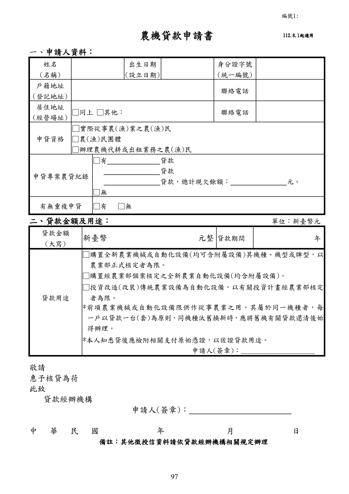
展開查看PDF原始文字層
農機貸款申請書
一、申請人資料：
姓名
(名稱)
出生日期
(設立日期)
身分證字號
(統一編號)
戶籍地址
(登記地址) 聯絡電話
居住地址
(經營場址) □同上 □其他： 聯絡電話
申貸資格
□實際從事農(漁)業之農(漁)民
□農(漁)民團體
□辦理農機代耕或出租業務之農(漁)民
申貸專案農貸紀錄
□有 貸款
貸款
貸款，總計現欠餘額： 元。
□無
有無重複申貸 □有 □無
二、貸款金額及用途： 單位：新臺幣元
貸款金額
(大寫) 新臺幣 元整 貸款期間 年
貸款用途
□購置全新農業機械或自動化設備(均可含附屬設備)其機種、機型或牌型，以
農業部正式核定者為限。
□購置經農業部個案核定之全新農業自動化設備(均含附屬設備)。
□投資改造(改裝)傳統農業設備為自動化設備，以有關投資計畫經農業部核定
者為限。
*前項農業機械或自動化設備限供作從事農業之用，其屬於同一機種者，每
一戶以貸款一台(套)為原則，同機種汰舊換新時，應將舊機有關貸款還清後始
得辦理。
*本人知悉貸後應檢附相關支付原始憑證，以佐證貸款用途。
申請人(簽章)：_____________________
敬請
惠予核貸為荷
此致
貸款經辦機構
申請人(簽章)：
中 華 民 國 年 月 日
備註：其他徵授信資料請依貸款經辦機構相關規定辦理
編號1:
112.8.1起適用手冊頁：98 PDF頁：100／359
{kind=link}
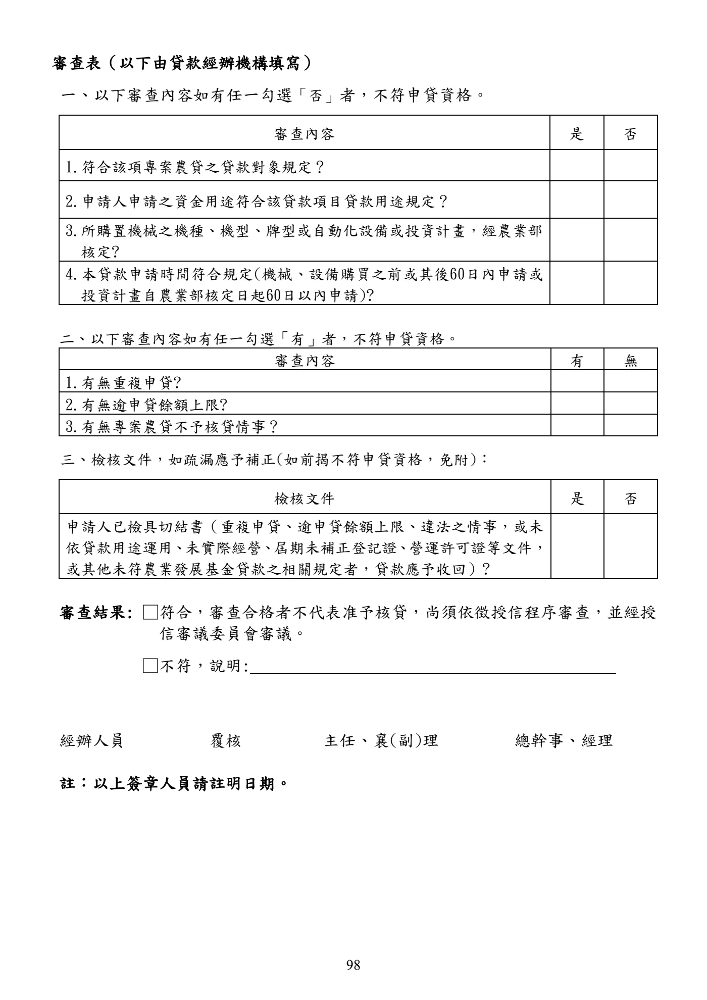
展開查看PDF原始文字層
審查表（以下由貸款經辦機構填寫） 一、以下審查內容如有任一勾選「否」者，不符申貸資格。 審查內容 是 否 1.符合該項專案農貸之貸款對象規定？ 2.申請人申請之資金用途符合該貸款項目貸款用途規定？ 3.所購置機械之機種、機型、牌型或自動化設備或投資計畫，經農業部 核定? 4.本貸款申請時間符合規定(機械、設備購買之前或其後60日內申請或 投資計畫自農業部核定日起60日以內申請)? 二、以下審查內容如有任一勾選「有」者，不符申貸資格。 審查內容 有 無 1.有無重複申貸? 2.有無逾申貸餘額上限? 3.有無專案農貸不予核貸情事？ 三、檢核文件，如疏漏應予補正(如前揭不符申貸資格，免附)： 檢核文件 是 否 申請人已檢具切結書（重複申貸、逾申貸餘額上限、違法之情事，或未 依貸款用途運用 、 未實際經營 、 屆期未補正登記證 、 營運許可證等文件， 或其他未符農業發展基金貸款之相關規定者，貸款應予收回）? 審查結果: □符合，審查合格者不代表准予核貸，尚須依徵授信程序審查，並經授 信審議委員會審議。 □不符，說明: 經辦人員 覆核 主任、襄(副)理 總幹事、經理 註：以上簽章人員請註明日期。
手冊頁：99 PDF頁：101／359
函令摘要：釋示漁機貸款疑義案 【行政院農業委員會農業金融局93年12月27日農金三字第0935017621號函】 主旨：關於 貴轄○○區漁會所詢辦理漁機貸款疑義案，復如說明，請 查照並轉知。 說明： 一、 依據 貴轄○○區漁會93年12月10日○漁信字第01293號函(影本如附)辦理。 二、 關該會漁機貸款借款人李○○君將貸款所購置漁船售予漁民洪○○君經營 ， 新船主洪 君所購置漁船並非新漁船，核與農業發展基金農機貸款實施要點第5點第1項第1款有 關貸款用途以購置全新農漁機械或自動化設備為限之規定不符 ， 惟如其他條件符合， 可輔導其申請中壯年農民農業經營改善等相關貸款。 函令摘要：農機貸款要點第4點第2項規定適用疑義 【行政院農業委員會95年12月22日農授金字第0955016617號函】 主旨：有關農機貸款要點第4點第2項規定適用疑義，復如說明，請 查照。 說明： 一、 依據本會農業金融局案陳貴基金95年12月6日(95)農信保保字第015613號函辦理。 二、 旨揭要點第4點第2項所稱「每一戶」係指每一借款人；所稱「同一機種」係指提供相 同功能之農(漁)機械或自動化設備，例如借款人先後購置2艘延繩釣漁船，不論其廠 牌及機型，視為同一機種，應將舊機有關貸款清償後始得辦理。至於購置個別農(漁) 機械或自動化設備零組件，則以其機型作為是否為同一機種之判別標準。 函令摘要：農機貸款期限認定疑義 【行政院農業委員會104年12月31日農授金字第1045045061號函】 主旨：所詢農機代耕或出租業者為主者之認定及其配偶或共同生活戶申請 「農機貸款」 之 期限認定疑義，復如說明，請 查照。 說明： 一、 復貴會104年12月28日宜市農信字第1040003979函。 二、 依「農機貸款要點」第10點規定： 「本貸款期限最長七年。但貸款金額在新臺幣四十 萬元以下，或從事代耕或出租業務為主者，其貸款限期最長四年」。 三、 所詢農友名下登記有水稻裁培行及承租小地主大佃農之農地是否認定從事代耕事實 乙節，請貴會依客戶營農情形覈實審認。 四、 另詢「農機貸款」期限疑義乙節，借款人如符合申貸資格，其貸款期限，應視所購農 機為代耕、出租業務或自用為主，並考量其農機耐用年限，於規定期間內覈實審定。
查看PDF原始文字層
函令摘要：釋示漁機貸款疑義案 【行政院農業委員會農業金融局93年12月27日農金三字第0935017621號函】 主旨：關於 貴轄○○區漁會所詢辦理漁機貸款疑義案，復如說明，請 查照並轉知。 說明： 一、 依據 貴轄○○區漁會93年12月10日○漁信字第01293號函(影本如附)辦理。 二、 關該會漁機貸款借款人李○○君將貸款所購置漁船售予漁民洪○○君經營 ， 新船主洪 君所購置漁船並非新漁船，核與農業發展基金農機貸款實施要點第5點第1項第1款有 關貸款用途以購置全新農漁機械或自動化設備為限之規定不符 ， 惟如其他條件符合， 可輔導其申請中壯年農民農業經營改善等相關貸款。 函令摘要：農機貸款要點第4點第2項規定適用疑義 【行政院農業委員會95年12月22日農授金字第0955016617號函】 主旨：有關農機貸款要點第4點第2項規定適用疑義，復如說明，請 查照。 說明： 一、 依據本會農業金融局案陳貴基金95年12月6日(95)農信保保字第015613號函辦理。 二、 旨揭要點第4點第2項所稱「每一戶」係指每一借款人；所稱「同一機種」係指提供相 同功能之農(漁)機械或自動化設備，例如借款人先後購置2艘延繩釣漁船，不論其廠 牌及機型，視為同一機種，應將舊機有關貸款清償後始得辦理。至於購置個別農(漁) 機械或自動化設備零組件，則以其機型作為是否為同一機種之判別標準。 函令摘要：農機貸款期限認定疑義 【行政院農業委員會104年12月31日農授金字第1045045061號函】 主旨：所詢農機代耕或出租業者為主者之認定及其配偶或共同生活戶申請 「農機貸款」 之 期限認定疑義，復如說明，請 查照。 說明： 一、 復貴會104年12月28日宜市農信字第1040003979函。 二、 依「農機貸款要點」第10點規定： 「本貸款期限最長七年。但貸款金額在新臺幣四十 萬元以下，或從事代耕或出租業務為主者，其貸款限期最長四年」。 三、 所詢農友名下登記有水稻裁培行及承租小地主大佃農之農地是否認定從事代耕事實 乙節，請貴會依客戶營農情形覈實審認。 四、 另詢「農機貸款」期限疑義乙節，借款人如符合申貸資格，其貸款期限，應視所購農 機為代耕、出租業務或自用為主，並考量其農機耐用年限，於規定期間內覈實審定。
手冊頁：100 PDF頁：102／359
輔導農糧業經營貸款要點 中華民國 94 年 12 月 30 日行政院農業委員會農授金字第 0945080617 號令訂定 中華民國 95 年 12 月 4 日行政院農業委員會農金字第 0955080418 號令修正 中華民國 98 年 6 月 4 日行政院農業委員會農金字第 0985080270 號令修正 中華民國 101 年 1 月 12 日行政院農業委員會農金字第 1015080016 號令修正 中華民國 102 年 4 月 26 日行政院農業委員會農金字第 1025080169 號令修正 中華民國 103 年 2 月 28 日行政院農業委員會農金字第 1035080089 號令修正 中華民國 103 年 10 月 28 日行政院農業委員會農金字第 1035084015 號令修正 中華民國 105 年 1 月 22 日行政院農業委員會農金字第 1055084031B 號令修正，並自 105 年 1 月 23 日生效 中華民國 105 年 3 月 18 日行政院農業委員會農金字第 1055084021C 號令修正第 9 點，並 自 105 年 3 月 22 日生效 中華民國 106 年 6 月 5 日行政院農業委員會農金字第 1065084050A 號令修正第 3 點、第 11 點、第 17 點，並自 106 年 6 月 9 日生效 中民國 108 年 11 月 22 日行政院農業委員會農金字第 1085084745B 號令修正部分規定， 並自 108 年 11 月 25 日生效 中華民國109 年2 月27 日行政院農業委員會農授金字第1095084100A 號令修正第10 點、 第 13 點，並自 109 年 3 月1 日生效 中華民國 110 年 7 月 29 日行政院農業委員會農授金字第 1105084731B 號令修正第 3 點、 第 11 點，並自 110 年 8 月1 日生效 中華民國 112 年 12 月 12 日農業部農授金字第 1125085574 號令修正發布部分規定，並自 113 年 1 月1 日生效 一、 農業部為協助農糧產業經營者改善其營運及促進事業健全發展 ， 擴展產銷規模 ， 提高 經營效率，以提升整體農糧產業競爭力，特訂定本要點。 二、 輔導農糧業經營貸款除依辦理政策性農業專案貸款辦法辦理外 ， 依本要點規定辦理。 本要點未規定者，依農業發展基金貸款作業規範及其他有關規定辦理。 三、 本貸款之對象如下： （一） 參加水稻育苗相關協會之水稻育苗中心。 （二） 領有種苗業登記證之種子繁殖及苗木繁殖業者。 （三） 依農場登記規則完成農場登記之農場負責人。 （四） 符合農產品市場交易法第十三條第一項第一款至第三款、 第五款或第六款規定 之農產品批發市場經營主體。 （五） 實際從事茶葉生產、製造、加工之農民或農民團體。 （六） 通過有機(含轉型期)農產品驗證、產銷履歷農產品驗證，或經農業部指定之機 關(構)、法人或團體認定符合有機農業促進法第三條第三款之耕作方式，並登 錄於農業部指定資訊系統之農民或農民團體。 （七） 具花卉產銷班班員資格之農民，或具花卉專業團體會員資格之農民或農民團 體。 （八） 實際從事菇蕈類生產之農民或農民團體。
查看PDF原始文字層
輔導農糧業經營貸款要點 中華民國 94 年 12 月 30 日行政院農業委員會農授金字第 0945080617 號令訂定 中華民國 95 年 12 月 4 日行政院農業委員會農金字第 0955080418 號令修正 中華民國 98 年 6 月 4 日行政院農業委員會農金字第 0985080270 號令修正 中華民國 101 年 1 月 12 日行政院農業委員會農金字第 1015080016 號令修正 中華民國 102 年 4 月 26 日行政院農業委員會農金字第 1025080169 號令修正 中華民國 103 年 2 月 28 日行政院農業委員會農金字第 1035080089 號令修正 中華民國 103 年 10 月 28 日行政院農業委員會農金字第 1035084015 號令修正 中華民國 105 年 1 月 22 日行政院農業委員會農金字第 1055084031B 號令修正，並自 105 年 1 月 23 日生效 中華民國 105 年 3 月 18 日行政院農業委員會農金字第 1055084021C 號令修正第 9 點，並 自 105 年 3 月 22 日生效 中華民國 106 年 6 月 5 日行政院農業委員會農金字第 1065084050A 號令修正第 3 點、第 11 點、第 17 點，並自 106 年 6 月 9 日生效 中民國 108 年 11 月 22 日行政院農業委員會農金字第 1085084745B 號令修正部分規定， 並自 108 年 11 月 25 日生效 中華民國109 年2 月27 日行政院農業委員會農授金字第1095084100A 號令修正第10 點、 第 13 點，並自 109 年 3 月1 日生效 中華民國 110 年 7 月 29 日行政院農業委員會農授金字第 1105084731B 號令修正第 3 點、 第 11 點，並自 110 年 8 月1 日生效 中華民國 112 年 12 月 12 日農業部農授金字第 1125085574 號令修正發布部分規定，並自 113 年 1 月1 日生效 一、 農業部為協助農糧產業經營者改善其營運及促進事業健全發展 ， 擴展產銷規模 ， 提高 經營效率，以提升整體農糧產業競爭力，特訂定本要點。 二、 輔導農糧業經營貸款除依辦理政策性農業專案貸款辦法辦理外 ， 依本要點規定辦理。 本要點未規定者，依農業發展基金貸款作業規範及其他有關規定辦理。 三、 本貸款之對象如下： （一） 參加水稻育苗相關協會之水稻育苗中心。 （二） 領有種苗業登記證之種子繁殖及苗木繁殖業者。 （三） 依農場登記規則完成農場登記之農場負責人。 （四） 符合農產品市場交易法第十三條第一項第一款至第三款、 第五款或第六款規定 之農產品批發市場經營主體。 （五） 實際從事茶葉生產、製造、加工之農民或農民團體。 （六） 通過有機(含轉型期)農產品驗證、產銷履歷農產品驗證，或經農業部指定之機 關(構)、法人或團體認定符合有機農業促進法第三條第三款之耕作方式，並登 錄於農業部指定資訊系統之農民或農民團體。 （七） 具花卉產銷班班員資格之農民，或具花卉專業團體會員資格之農民或農民團 體。 （八） 實際從事菇蕈類生產之農民或農民團體。
手冊頁：101 PDF頁：103／359
（九） 經農業部及其所屬機關（單位）相關溫網室設施補助計畫或輔導措施（方案） 核定或審查通過興設結構型鋼骨溫網室之農民或農民團體。 （十） 其他經農業部專案核准貸款經營計畫之農糧產業經營者。 借款人同時具備前項第一款至第八款及第十款中二款以上資格者 ， 應擇一資格申貸本 貸款。 申請貸款用途為改善或新建菇類栽培場 ， 以設置屋頂型綠能設施之貸款案者 ， 須為第 一項第八款借款人 ， 且應先取得直轄市 、 縣(市)政府核發菇類栽培場得附屬設置屋頂 型綠能設施容許使用同意書。 前項借款人 ， 應於核准貸款利率之日起二年內補正再生能源發電設備登記文件 ， 屆期 未補正者 ， 其貸款利率應調整為其他類貸款利率 ， 貸款經辦機構已溢請領之利息差額 補貼應繳還農業部。 第一項第九款借款人，申貸時應檢附下列資料： （一） 農業部及其所屬機關(單位)相關溫網室設施補助計畫或輔導措施(方案)， 經核 定或審查通過興設結構型鋼骨溫網室證明文件影本。 （二） 土地作農業設施需農業用地作農業設施容許使用證明者， 應檢附所在地直轄市、 縣(市)政府核發之證明書影本。 第一項第九款借款人所興設結構型鋼骨溫網室及其設施 （備）施工完成後，其核定或 審查通過計畫或措施(方案)之成果查核資料影本 ， 應於撥貸完畢後一年內補正 ， 屆期 未補正者，應收回其貸款，貸款經辦機構已請領之利息差額補貼應繳還農業部。 四、 本貸款之用途為直接用於為達成本貸款目的所需之資本支出及週轉金 ， 但不包括購買 耕地。 五、 本貸款經辦機構如下： (一) 設有信用部之農(漁)會。 (二) 依法承受農(漁)會信用部之銀行當地分行。 (三) 全國農業金庫。 六、 本貸款之輔導機關為農業部及其所屬農業試驗改良場(所)、 直轄市及各縣(市)政府。 七、 本貸款由貸款經辦機構提供貸款資金 ， 並由農業發展基金就其出資金給予利息差額補 貼。 八、 本貸款風險由貸款經辦機構負擔。 九、 本貸款利率依辦理政策性農業專案貸款辦法相關規定辦理。 十、 本貸款期限依貸款額度及購置設備耐用年限覈實貸放 ， 其中資本支出最長十五年 ， 週 轉金最長五年。 十一、 本貸款額度如下： (一) 參加水稻育苗相關協會之水稻育苗中心：每一借款人最高貸款額度為新臺幣七 百五十萬元，其中資本支出最高貸款額度為新臺幣六百萬元，週轉金最高貸款 額度為新臺幣一百五十萬元。 (二) 領有種苗業登記證之種子繁殖及苗木繁殖業者：每一借款人最高貸款額度為新 臺幣七百萬元，其中資本支出最高貸款額度為新臺幣六百萬元，週轉金最高貸 款額度為新臺幣一百萬元。 (三) 依農場登記規則完成農場登記之農場負責人：每一借款人最高貸款額度為新臺 幣一千一百萬元，其中資本支出最高貸款額度為新臺幣八百萬元，週轉金最高
查看PDF原始文字層
（九） 經農業部及其所屬機關（單位）相關溫網室設施補助計畫或輔導措施（方案） 核定或審查通過興設結構型鋼骨溫網室之農民或農民團體。 （十） 其他經農業部專案核准貸款經營計畫之農糧產業經營者。 借款人同時具備前項第一款至第八款及第十款中二款以上資格者 ， 應擇一資格申貸本 貸款。 申請貸款用途為改善或新建菇類栽培場 ， 以設置屋頂型綠能設施之貸款案者 ， 須為第 一項第八款借款人 ， 且應先取得直轄市 、 縣(市)政府核發菇類栽培場得附屬設置屋頂 型綠能設施容許使用同意書。 前項借款人 ， 應於核准貸款利率之日起二年內補正再生能源發電設備登記文件 ， 屆期 未補正者 ， 其貸款利率應調整為其他類貸款利率 ， 貸款經辦機構已溢請領之利息差額 補貼應繳還農業部。 第一項第九款借款人，申貸時應檢附下列資料： （一） 農業部及其所屬機關(單位)相關溫網室設施補助計畫或輔導措施(方案)， 經核 定或審查通過興設結構型鋼骨溫網室證明文件影本。 （二） 土地作農業設施需農業用地作農業設施容許使用證明者， 應檢附所在地直轄市、 縣(市)政府核發之證明書影本。 第一項第九款借款人所興設結構型鋼骨溫網室及其設施 （備）施工完成後，其核定或 審查通過計畫或措施(方案)之成果查核資料影本 ， 應於撥貸完畢後一年內補正 ， 屆期 未補正者，應收回其貸款，貸款經辦機構已請領之利息差額補貼應繳還農業部。 四、 本貸款之用途為直接用於為達成本貸款目的所需之資本支出及週轉金 ， 但不包括購買 耕地。 五、 本貸款經辦機構如下： (一) 設有信用部之農(漁)會。 (二) 依法承受農(漁)會信用部之銀行當地分行。 (三) 全國農業金庫。 六、 本貸款之輔導機關為農業部及其所屬農業試驗改良場(所)、 直轄市及各縣(市)政府。 七、 本貸款由貸款經辦機構提供貸款資金 ， 並由農業發展基金就其出資金給予利息差額補 貼。 八、 本貸款風險由貸款經辦機構負擔。 九、 本貸款利率依辦理政策性農業專案貸款辦法相關規定辦理。 十、 本貸款期限依貸款額度及購置設備耐用年限覈實貸放 ， 其中資本支出最長十五年 ， 週 轉金最長五年。 十一、 本貸款額度如下： (一) 參加水稻育苗相關協會之水稻育苗中心：每一借款人最高貸款額度為新臺幣七 百五十萬元，其中資本支出最高貸款額度為新臺幣六百萬元，週轉金最高貸款 額度為新臺幣一百五十萬元。 (二) 領有種苗業登記證之種子繁殖及苗木繁殖業者：每一借款人最高貸款額度為新 臺幣七百萬元，其中資本支出最高貸款額度為新臺幣六百萬元，週轉金最高貸 款額度為新臺幣一百萬元。 (三) 依農場登記規則完成農場登記之農場負責人：每一借款人最高貸款額度為新臺 幣一千一百萬元，其中資本支出最高貸款額度為新臺幣八百萬元，週轉金最高
手冊頁：102 PDF頁：104／359
貸款額度為新臺幣三百萬元。 (四) 農產品批發市場經營主體：每一經營主體最高貸款額度為新臺幣二千萬元，其 中資本支出最高貸款額度為新臺幣一千萬元，週轉金最高貸款額度為新臺幣一 千萬元。 (五) 實際從事茶葉生產、製造、加工之農民或農民團體： 1. 農民：每一借款人最高貸款額度為新臺幣七百萬元，其中資本支出最高貸款 額度為新臺幣六百萬元，週轉金最高貸款額度為新臺幣一百萬元。 2. 農民團體：每一借款人最高貸款額度為新臺幣一千零五十萬元，其中資本支 出最高貸款額度為新臺幣八百萬元 ， 週轉金最高貸款額度為新臺幣二百五十 萬元。 (六) 通過有機(含轉型期)農產品驗證、產銷履歷農產品驗證，或 經農業部指定之機 關（構） 、法人或團體認定符合有機農業促進法第三條第三款之耕作方式，並登 錄於農業部指定資訊系統之農民或農民團體：每一借款人最高貸款額度為新臺 幣一千一百萬元，其中資本支出最高貸款額度為新臺幣八百萬元，週轉金最高 貸款額度為新臺幣三百萬元。 (七) 具花卉產銷班班員資格之農民 ， 或具花卉專業團體會員資格之農民或農民團體： 每一借款人最高貸款額度為新臺幣一千五百萬元，其中資本支出最高貸款額度 為新臺幣一千萬元，週轉金最高貸款額度為新臺幣五百萬元。但情形特殊，報 經農業部專案同意者，不在此限。 (八) 實際從事菇蕈類生產之農民或農民團體： 1. 採環控庫房栽培：每一借款人最高貸款額度為新臺幣一千五百萬元，其中資 本支出最高貸款額度為新臺幣一千二百萬元 ， 週轉金最高貸款額度為新臺幣 三百萬元。但情形特殊，資本支出報經農業部專案同意者，不在此限。 2. 採傳統菇舍栽培：每一借款人最高貸款額度為新臺幣八百萬元，其中資本支 出最高貸款額度為新臺幣五百萬元，週轉金最高貸款額度為新臺幣三百萬 元。 (九) 經農業部及其所屬機關(單位)相關溫網室設施補助計畫或輔導措施(方案)核定 或審查通過興設結構型鋼骨溫網室之農民或農民團體：依興設溫網室及其設施 (備)實際需求覈實貸放，最高貸款額度依農業部主管計畫補助基準所定結構型 鋼骨溫網室及同一計畫或措施(方案)核定或審查通過設施(備)最高補助金額除 以補助比率辦理，每一借款人最高貸款額度為新臺幣三千萬元；借款人另獲農 業部補助該溫網室及其設施(備)者，該等補助款應用以償還本貸款，該部分貸 款自補助款核撥日起不予利息差額補貼。 (十) 其他經農業部專案核准貸款經營計畫之農糧產業經營者： 1. 農民團體或產銷班：每一借款人最高貸款額度為新臺幣一千三百萬元，其中 資本支出最高貸款額度為新臺幣八百萬元 ， 週轉金最高貸款額度為新臺幣五 百萬元。 2. 農民：每一借款人最高貸款額度為新臺幣四百二十萬元，其中資本支出最高 貸款額度為新臺幣三百萬元 ， 週轉金最高貸款額度為新臺幣一百二十萬元。 十二、 本貸款由貸款經辦機構按核定所需金額一次或分次撥付；其屬資本支出者，借款 人應檢具相關憑證。
查看PDF原始文字層
貸款額度為新臺幣三百萬元。 (四) 農產品批發市場經營主體：每一經營主體最高貸款額度為新臺幣二千萬元，其 中資本支出最高貸款額度為新臺幣一千萬元，週轉金最高貸款額度為新臺幣一 千萬元。 (五) 實際從事茶葉生產、製造、加工之農民或農民團體： 1. 農民：每一借款人最高貸款額度為新臺幣七百萬元，其中資本支出最高貸款 額度為新臺幣六百萬元，週轉金最高貸款額度為新臺幣一百萬元。 2. 農民團體：每一借款人最高貸款額度為新臺幣一千零五十萬元，其中資本支 出最高貸款額度為新臺幣八百萬元 ， 週轉金最高貸款額度為新臺幣二百五十 萬元。 (六) 通過有機(含轉型期)農產品驗證、產銷履歷農產品驗證，或 經農業部指定之機 關（構） 、法人或團體認定符合有機農業促進法第三條第三款之耕作方式，並登 錄於農業部指定資訊系統之農民或農民團體：每一借款人最高貸款額度為新臺 幣一千一百萬元，其中資本支出最高貸款額度為新臺幣八百萬元，週轉金最高 貸款額度為新臺幣三百萬元。 (七) 具花卉產銷班班員資格之農民 ， 或具花卉專業團體會員資格之農民或農民團體： 每一借款人最高貸款額度為新臺幣一千五百萬元，其中資本支出最高貸款額度 為新臺幣一千萬元，週轉金最高貸款額度為新臺幣五百萬元。但情形特殊，報 經農業部專案同意者，不在此限。 (八) 實際從事菇蕈類生產之農民或農民團體： 1. 採環控庫房栽培：每一借款人最高貸款額度為新臺幣一千五百萬元，其中資 本支出最高貸款額度為新臺幣一千二百萬元 ， 週轉金最高貸款額度為新臺幣 三百萬元。但情形特殊，資本支出報經農業部專案同意者，不在此限。 2. 採傳統菇舍栽培：每一借款人最高貸款額度為新臺幣八百萬元，其中資本支 出最高貸款額度為新臺幣五百萬元，週轉金最高貸款額度為新臺幣三百萬 元。 (九) 經農業部及其所屬機關(單位)相關溫網室設施補助計畫或輔導措施(方案)核定 或審查通過興設結構型鋼骨溫網室之農民或農民團體：依興設溫網室及其設施 (備)實際需求覈實貸放，最高貸款額度依農業部主管計畫補助基準所定結構型 鋼骨溫網室及同一計畫或措施(方案)核定或審查通過設施(備)最高補助金額除 以補助比率辦理，每一借款人最高貸款額度為新臺幣三千萬元；借款人另獲農 業部補助該溫網室及其設施(備)者，該等補助款應用以償還本貸款，該部分貸 款自補助款核撥日起不予利息差額補貼。 (十) 其他經農業部專案核准貸款經營計畫之農糧產業經營者： 1. 農民團體或產銷班：每一借款人最高貸款額度為新臺幣一千三百萬元，其中 資本支出最高貸款額度為新臺幣八百萬元 ， 週轉金最高貸款額度為新臺幣五 百萬元。 2. 農民：每一借款人最高貸款額度為新臺幣四百二十萬元，其中資本支出最高 貸款額度為新臺幣三百萬元 ， 週轉金最高貸款額度為新臺幣一百二十萬元。 十二、 本貸款由貸款經辦機構按核定所需金額一次或分次撥付；其屬資本支出者，借款 人應檢具相關憑證。
手冊頁：103 PDF頁：105／359
{kind=link}
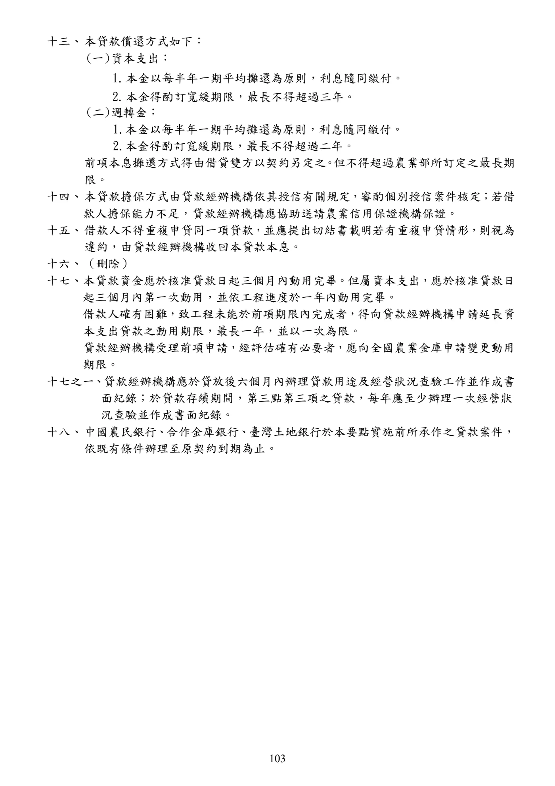
展開查看PDF原始文字層
十三、 本貸款償還方式如下：
(一) 資本支出：
1. 本金以每半年一期平均攤還為原則，利息隨同繳付。
2. 本金得酌訂寬緩期限，最長不得超過三年。
(二) 週轉金：
1.本金以每半年一期平均攤還為原則，利息隨同繳付。
2.本金得酌訂寬緩期限，最長不得超過二年。
前項本息攤還方式得由借貸雙方以契約另定之 。 但不得超過農業部所訂定之最長期
限。
十四、 本貸款擔保方式由貸款經辦機構依其授信有關規定 ，審酌個別授信案件核定 ； 若借
款人擔保能力不足，貸款經辦機構應協助送請農業信用保證機構保證。
十五、 借款人不得重複申貸同一項貸款 ， 並應提出切結書載明若有重複申貸情形 ， 則視為
違約，由貸款經辦機構收回本貸款本息。
十六、 （刪除）
十七、 本貸款資金應於核准貸款日起三個月內動用完畢。但屬資本支出，應於核准貸款日
起三個月內第一次動用，並依工程進度於一年內動用完畢。
借款人確有困難，致工程未能於前項期限內完成者，得向貸款經辦機構申請延長資
本支出貸款之動用期限，最長一年，並以一次為限。
貸款經辦機構受理前項申請，經評估確有必要者，應向全國農業金庫申請變更動用
期限。
十七之一 、 貸款經辦機構應於貸放後六個月內辦理貸款用途及經營狀況查驗工作並作成書
面紀錄；於貸款存續期間，第三點第三項之貸款，每年應至少辦理一次經營狀
況查驗並作成書面紀錄。
十八、 中國農民銀行 、 合作金庫銀行 、臺灣土地銀行於本要點實施前所承作之貸款案件，
依既有條件辦理至原契約到期為止。手冊頁：104 PDF頁：106／359
{kind=link}
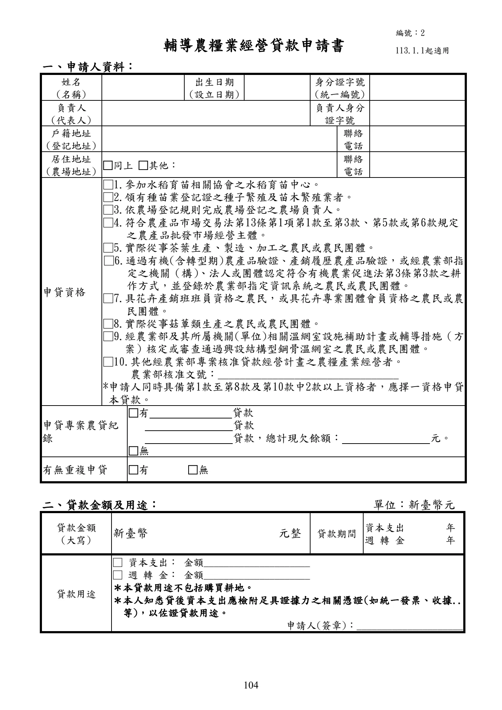
展開查看PDF原始文字層
編號：2
113.1.1起適用 輔導農糧業經營貸款申請書
一、申請人資料：
姓名
(名稱)
出生日期
(設立日期)
身分證字號
(統一編號)
負責人
(代表人)
負責人身分
證字號
戶籍地址
(登記地址)
聯絡
電話
居住地址
(農場地址) □同上 □其他： 聯絡
電話
申貸資格
□1.參加水稻育苗相關協會之水稻育苗中心。
□2.領有種苗業登記證之種子繁殖及苗木繁殖業者。
□3.依農場登記規則完成農場登記之農場負責人。
□4.符合農產品市場交易法第13條第1項第1款至第3款、第5款或第6款規定
之農產品批發市場經營主體。
□5.實際從事茶葉生產、製造、加工之農民或農民團體。
□6.通過有機(含轉型期)農產品驗證、產銷履歷農產品驗證，或經農業部指
定之機關（構） 、法人或團體認定符合有機農業促進法第3條第3款之耕
作方式，並登錄於農業部指定資訊系統之農民或農民團體。
□7.具花卉產銷班班員資格之農民，或具花卉專業團體會員資格之農民或農
民團體。
□8.實際從事菇蕈類生產之農民或農民團體。
□9.經農業部及其所屬機關(單位)相關溫網室設施補助計畫或輔導措施（方
案）核定或審查通過興設結構型鋼骨溫網室之農民或農民團體。
□10.其他經農業部專案核准貸款經營計畫之農糧產業經營者。
農業部核准文號：_________________________________
*申請人同時具備第1款至第8款及第10款中2款以上資格者，應擇一資格申貸
本貸款。
申貸專案農貸紀
錄
□有 貸款
貸款
貸款，總計現欠餘額： 元。
□無
有無重複申貸 □有 □無
二、貸款金額及用途： 單位：新臺幣元
貸款金額
(大寫) 新臺幣 元整 貸款期間 資本支出 年
週 轉 金 年
貸款用途
□ 資本支出： 金額_____________________
□ 週 轉 金： 金額_____________________
＊本貸款用途不包括購買耕地。
＊本人知悉貸後資本支出應檢附足具證據力之相關憑證 (如統一發票、收據 ..
等)，以佐證貸款用途。
申請人(簽章)：_____________________手冊頁：105 PDF頁：107／359
敬請 惠予核貸為荷 此致 貸款經辦機構 申請人(簽章)：________________________________
中 華 民 國 年 月 日
備註：其他徵授信資料請依貸款經辦機構相關規定辦理
查看PDF原始文字層
敬請
惠予核貸為荷
此致
貸款經辦機構
申請人(簽章)：________________________________
中 華 民 國 年 月 日
備註：其他徵授信資料請依貸款經辦機構相關規定辦理手冊頁：106 PDF頁：108／359
{kind=link}
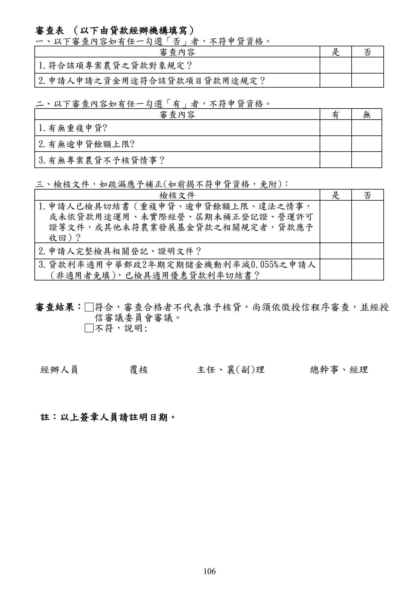
展開查看PDF原始文字層
經辦人員 覆核 主任、襄(副)理 總幹事、經理 註：以上簽章人員請註明日期。 審查表 （以下由貸款經辦機構填寫） 一、以下審查內容如有任一勾選「否」者，不符申貸資格。 審查內容 是 否 1.符合該項專案農貸之貸款對象規定？ 2.申請人申請之資金用途符合該貸款項目貸款用途規定？ 二、以下審查內容如有任一勾選「有」者，不符申貸資格。 審查內容 有 無 1.有無重複申貸? 2.有無逾申貸餘額上限? 3.有無專案農貸不予核貸情事？ 三、檢核文件，如疏漏應予補正(如前揭不符申貸資格，免附)： 檢核文件 是 否 1.申請人已檢具切結書（重複申貸、逾申貸餘額上限、違法之情事， 或未依貸款用途運用、未實際經營、屆期未補正登記證、營運許可 證等文件，或其他未符農業發展基金貸款之相關規定者，貸款應予 收回）? 2.申請人完整檢具相關登記、證明文件？ 3.貸款利率適用中華郵政 2年期定期儲金機動利率減 0.055%之申請人 （非適用者免填） ，已檢具適用優惠貸款利率切結書？ 審查結果：□符合，審查合格者不代表准予核貸，尚須依徵授信程序審查，並經授 信審議委員會審議。 □不符，說明:
手冊頁：107 PDF頁：109／359
函令摘要： 「輔導農糧業經營貸款要點」第3點第2款規定適用釋義案 【行政院農業委員會96年4月30日農授金字第0960119545號函】 主旨：有關「輔導農糧業經營貸款要點」第 3 點第 2 款規定適用疑義案，復如說明，請 查 照。 說明： 一、 復貴基金 96 年 4 月10 日（96）農信保保字第 003257 號函。 二、 旨揭貸款規定所提種苗業者，係領有種苗業登記證之種苗繁殖業者，包括種子或苗木 之繁殖業者均可。 三、 政策性農業專案貸款自 95 年起，除農業生物科技園區進駐廠商外，農（漁）企業均不 再納入融資對象。另本案「○○股份有限公司」以負責人（○○○）名義申貸，資金 用途係供該公司整修溫室使用，未符一般徵授信原則。 函令摘要 ： 「輔導農糧業經營貸款」 及 「農業科技園區進駐業者優惠貸款」 貸款額度提送本會專案核定程序事宜 【行政院農業委員會99年4月22日農授金字第0995080204號函】 主旨：「輔導農糧業經營貸款」及「農業科技園區進駐業者優惠貸款」貸款額度提送本會 專案核定程序事宜，請依說明三辦理，請查照。 說明： 一、 「輔導農糧業經營貸款要點」 第11點第1款第9目及第2款第9目規定， 花卉生產專案經 營者，每一借款人最高貸款額度為資本支出1,000萬元、週轉金500萬元。但經本會專 案同意者，不在此限。 二、 「農業科技園區進駐業者優惠貸款」 第12點規定， 本貸款每一借款人最高貸款額度為 資本支出8,000萬元 ， 其中週轉金最高為1,000萬元 。 但經本會專案同意者 ， 不在此限。 三、 上開2貸款之但書規定，請依下列規定辦理： (一) 程序上由貸款經辦機構向本會提出，非由借款人逕向本會申請。 (二) 貸款經辦機構提出案件以符合其授信條件者為限。 (三) 貸款經辦機構應具文併附借款人貸款計畫向本會提出。
查看PDF原始文字層
函令摘要： 「輔導農糧業經營貸款要點」第3點第2款規定適用釋義案 【行政院農業委員會96年4月30日農授金字第0960119545號函】 主旨：有關「輔導農糧業經營貸款要點」第 3 點第 2 款規定適用疑義案，復如說明，請 查 照。 說明： 一、 復貴基金 96 年 4 月10 日（96）農信保保字第 003257 號函。 二、 旨揭貸款規定所提種苗業者，係領有種苗業登記證之種苗繁殖業者，包括種子或苗木 之繁殖業者均可。 三、 政策性農業專案貸款自 95 年起，除農業生物科技園區進駐廠商外，農（漁）企業均不 再納入融資對象。另本案「○○股份有限公司」以負責人（○○○）名義申貸，資金 用途係供該公司整修溫室使用，未符一般徵授信原則。 函令摘要 ： 「輔導農糧業經營貸款」 及 「農業科技園區進駐業者優惠貸款」 貸款額度提送本會專案核定程序事宜 【行政院農業委員會99年4月22日農授金字第0995080204號函】 主旨：「輔導農糧業經營貸款」及「農業科技園區進駐業者優惠貸款」貸款額度提送本會 專案核定程序事宜，請依說明三辦理，請查照。 說明： 一、 「輔導農糧業經營貸款要點」 第11點第1款第9目及第2款第9目規定， 花卉生產專案經 營者，每一借款人最高貸款額度為資本支出1,000萬元、週轉金500萬元。但經本會專 案同意者，不在此限。 二、 「農業科技園區進駐業者優惠貸款」 第12點規定， 本貸款每一借款人最高貸款額度為 資本支出8,000萬元 ， 其中週轉金最高為1,000萬元 。 但經本會專案同意者 ， 不在此限。 三、 上開2貸款之但書規定，請依下列規定辦理： (一) 程序上由貸款經辦機構向本會提出，非由借款人逕向本會申請。 (二) 貸款經辦機構提出案件以符合其授信條件者為限。 (三) 貸款經辦機構應具文併附借款人貸款計畫向本會提出。
手冊頁：108 PDF頁：110／359
函令摘要：釋示「輔導農糧業經營貸款要點」相關疑義 【行政院農業委員會農業金融局101年8月7日農金三字第1015014189號函】 主旨：所詢「輔導農糧業經營貸款要點」相關疑義案，復如說明，請查照。 說明： 一、 復貴會101年8月1日○○字第1011000429號函。 二、 依本要點第3點第1項第10款規定，貸款對象 「菇蕈類生產經營者」 係指實際從事菇蕈 類生產之農民或農民團體」 ，設場製作菇蕈類太空包且從事菇蕈類生產之農民，有實 際從事菇蕈類生產之事實，自屬本要點規定之貸款對象。 三、 至於所詢貸款用途得否用於生產、銷售太空包所需之機器設備乙節，依本要點第4點 規定意旨 ， 貸款用途為直接用於菇蕈類生產所需資本支出及週轉金 ， 借款人所購置機 器設備生產之太空包如係用於菇蕈類生產 ， 則符合本貸款規定 ， 如作為販售營利之用 者，則非本貸款支應範圍，爰貴會應依前揭自用、銷售之比例覈實審定貸款額度。 函令摘要：釋示「輔導農糧業經營貸款」有機農糧產品經營業者之適用 疑義 【行政院農業委員會105年1月26日農授金字第1055040367號函】 主旨：所詢「輔導農糧業經營貸款」 （下稱本貸款）有機農糧產品經營業者之適用疑義， 復如說明，請查照。 說明： 一、 依據本會農業金融局案陳貴會105年1月7日斗南農信字第1050000082號函暨本會農糧 署105年1月22日農糧資字第1051000958號函辦理。 二、 本貸款要點第3點第1項第8款，有機農糧產品經營業者，為依農產品生產及驗證管理 法及其相關法規規定，領有有機農糧產品驗證證書之農民或農民團體。 三、 查 「有機農產品及有機農產加工品驗證管理辦法」 第6條第2項所定有機農產品及有機 農產加工品驗證基準第3部分第2點短期作物之田區取得有機驗證前 ， 需有二年的轉型 期，長期作物（如多年生之果樹、茶樹等）則需三年的轉型期。轉型期間應依據本基 準施行有機栽培 。 本案農產品驗證證書加註轉型期字樣 ， 係屬有機作物栽培田區取得 驗證前歷經之過程，符合本貸款規定。
查看PDF原始文字層
函令摘要：釋示「輔導農糧業經營貸款要點」相關疑義 【行政院農業委員會農業金融局101年8月7日農金三字第1015014189號函】 主旨：所詢「輔導農糧業經營貸款要點」相關疑義案，復如說明，請查照。 說明： 一、 復貴會101年8月1日○○字第1011000429號函。 二、 依本要點第3點第1項第10款規定，貸款對象 「菇蕈類生產經營者」 係指實際從事菇蕈 類生產之農民或農民團體」 ，設場製作菇蕈類太空包且從事菇蕈類生產之農民，有實 際從事菇蕈類生產之事實，自屬本要點規定之貸款對象。 三、 至於所詢貸款用途得否用於生產、銷售太空包所需之機器設備乙節，依本要點第4點 規定意旨 ， 貸款用途為直接用於菇蕈類生產所需資本支出及週轉金 ， 借款人所購置機 器設備生產之太空包如係用於菇蕈類生產 ， 則符合本貸款規定 ， 如作為販售營利之用 者，則非本貸款支應範圍，爰貴會應依前揭自用、銷售之比例覈實審定貸款額度。 函令摘要：釋示「輔導農糧業經營貸款」有機農糧產品經營業者之適用 疑義 【行政院農業委員會105年1月26日農授金字第1055040367號函】 主旨：所詢「輔導農糧業經營貸款」 （下稱本貸款）有機農糧產品經營業者之適用疑義， 復如說明，請查照。 說明： 一、 依據本會農業金融局案陳貴會105年1月7日斗南農信字第1050000082號函暨本會農糧 署105年1月22日農糧資字第1051000958號函辦理。 二、 本貸款要點第3點第1項第8款，有機農糧產品經營業者，為依農產品生產及驗證管理 法及其相關法規規定，領有有機農糧產品驗證證書之農民或農民團體。 三、 查 「有機農產品及有機農產加工品驗證管理辦法」 第6條第2項所定有機農產品及有機 農產加工品驗證基準第3部分第2點短期作物之田區取得有機驗證前 ， 需有二年的轉型 期，長期作物（如多年生之果樹、茶樹等）則需三年的轉型期。轉型期間應依據本基 準施行有機栽培 。 本案農產品驗證證書加註轉型期字樣 ， 係屬有機作物栽培田區取得 驗證前歷經之過程，符合本貸款規定。
手冊頁：109 PDF頁：111／359
函令摘要：重申「輔導農糧業經營貸款」有 關溫網室設施補助計畫或輔 導措施(方案)之貸款案相關疑義 【行政院農業委員會108年3月26日農授金字第1085084163號函】 主旨 ： 重申 「輔導農糧業經營貸款」 有關溫網室設施補助計畫或輔導措施(方案)之貸款案， 應依興設溫網室實際貸款需求覈實貸放 ，所貸金額不應先預扣溫網室設施補助款 ， 請查照。 說明： 一、 依「辦理政策性農業專案貸款辦法」第24條及「輔導農糧業經營貸款要點」第11點第 1款第9目規定，經相關溫網室設施補助計畫或輔導措施(方案)核定或審查通過之農民 或農民團體，依興設溫網室實際需求覈實貸放，每公頃最高貸款額度為1,100萬元， 借款人另獲本會溫網室設施補助款者，應用以償還借款。 二、 貸款經辦機構辦理旨揭溫網室設施補助計畫或輔導措施 （方案） 之貸款案，應依興設 溫網室實際貸款需求覈實貸放 ， 且考量實務上補助款核撥程序較長 ， 農民或農民團體 在施工過程即有支付工程款之資金需求 ， 爰要求借款人嗣後獲補助款者 ， 應用以償還 貸款 ， 並未規範申貸時須先行預扣補助款 ， 請各貸款經辦機構切實依上開規定辦理。
查看PDF原始文字層
函令摘要：重申「輔導農糧業經營貸款」有 關溫網室設施補助計畫或輔 導措施(方案)之貸款案相關疑義 【行政院農業委員會108年3月26日農授金字第1085084163號函】 主旨 ： 重申 「輔導農糧業經營貸款」 有關溫網室設施補助計畫或輔導措施(方案)之貸款案， 應依興設溫網室實際貸款需求覈實貸放 ，所貸金額不應先預扣溫網室設施補助款 ， 請查照。 說明： 一、 依「辦理政策性農業專案貸款辦法」第24條及「輔導農糧業經營貸款要點」第11點第 1款第9目規定，經相關溫網室設施補助計畫或輔導措施(方案)核定或審查通過之農民 或農民團體，依興設溫網室實際需求覈實貸放，每公頃最高貸款額度為1,100萬元， 借款人另獲本會溫網室設施補助款者，應用以償還借款。 二、 貸款經辦機構辦理旨揭溫網室設施補助計畫或輔導措施 （方案） 之貸款案，應依興設 溫網室實際貸款需求覈實貸放 ， 且考量實務上補助款核撥程序較長 ， 農民或農民團體 在施工過程即有支付工程款之資金需求 ， 爰要求借款人嗣後獲補助款者 ， 應用以償還 貸款 ， 並未規範申貸時須先行預扣補助款 ， 請各貸款經辦機構切實依上開規定辦理。
手冊頁：110 PDF頁：112／359
輔導漁業經營貸款要點 中華民國 94 年 12 月 30 日行政院農業委員會農授金字第 0945080617 號令訂定 中華民國 95 年 12 月 19 日行政院農業委員會農金字第 0955080458 號令修正 中華民國 96 年 7 月 16 日行政院農業委員會農金字第 0965080249 號令修正 中華民國 98 年 2 月 25 日行政院農業委員會農金字第 0985080082 號令修正 中華民國 102 年 4 月 26 日行政院農業委員會農金字第 1025080170 號令修正 中華民國 103 年 2 月 28 日行政院農業委員會農金字第 1035080090 號令修正 中華民國105 年3 月18 日行政院農業委員會農金字第1055084021D 號令修正第10 點， 並自 105 年 3 月 22 日生效 中華民國 107 年 3 月 30 日行政院農業委員會農金字第 1075084075G 號令修正部分規 定，並自 107 年 4 月 16 日生效 中華民國 108 年 11 月 22 日行政院農業委員會農金字第 1085084745C 號令修正部分規 定，並自 108 年 11 月 25 日生效 中華民國 109 年 2 月 27 日行政院農業委員會農授金字第 1095084100B 號令修正第 11 點、第 14 點，並自 109 年 3 月 1 日生效 中華民國 109 年 10 月 21 日行政院農業委員會農授金字第 1095085177B 號令修正部分 規定，並自 109 年 11 月1 日生效 中華民國111 年9 月29 日行政院農業委員會農授金字第1115085078 號令修正第12 點， 並自 111 年 10 月1 日生效 中華民國 112 年 12 月 12 日農業部農授金字第 1125085575 號令修正發布部分規定，並 自 113 年 1 月1 日生效 中華民國 113 年 8 月 19 日農業部農授金字第 1137467069 號令修正第 5 點之一，並自 113 年 8 月20 日生效 中華民國 114 年 10 月 9 日農業部農授金字第 1147467203 號令修正第 3 點、第 5 點之 1、第 18 點，並自中華民國 114 年 10 月 10 日生效 一、 農業部為鼓勵漁業經營者，擴大漁業經營規模，加強輔導其經營所需資金，以提升 漁業經營競爭力，提高漁業所得，改善漁民生活，促進漁村社會之安定及漁村經濟 繁榮，特訂定本要點。 二、 輔導漁業經營貸款除依辦理政策性農業專案貸款辦法辦理外，依本要點規定辦理。 本要點未規定者，依農業發展基金貸款作業規範及其他有關規定辦理。 三、 本貸款之對象為漁業(民)團體、生產合作社或實際從事下列漁業經營之漁民： (一)海洋漁業，包含漁撈及養殖。 (二)陸上養殖。 (三)休閒漁業或娛樂漁業。 (四)水產加工或運銷等漁業生產。 前項借款人屬養殖業者，應同時具備下列各款條件： (一)漁會法第十五條第一項第一款所定甲類會員、養殖漁業發展協會會員、農會法 第十二條所定農會會員、完成當年度或前一年度養殖漁業放養量申報。 (二)領有養殖漁業登記證、區劃漁業權執照、專用漁業權入漁證明文件或其他依法
查看PDF原始文字層
輔導漁業經營貸款要點 中華民國 94 年 12 月 30 日行政院農業委員會農授金字第 0945080617 號令訂定 中華民國 95 年 12 月 19 日行政院農業委員會農金字第 0955080458 號令修正 中華民國 96 年 7 月 16 日行政院農業委員會農金字第 0965080249 號令修正 中華民國 98 年 2 月 25 日行政院農業委員會農金字第 0985080082 號令修正 中華民國 102 年 4 月 26 日行政院農業委員會農金字第 1025080170 號令修正 中華民國 103 年 2 月 28 日行政院農業委員會農金字第 1035080090 號令修正 中華民國105 年3 月18 日行政院農業委員會農金字第1055084021D 號令修正第10 點， 並自 105 年 3 月 22 日生效 中華民國 107 年 3 月 30 日行政院農業委員會農金字第 1075084075G 號令修正部分規 定，並自 107 年 4 月 16 日生效 中華民國 108 年 11 月 22 日行政院農業委員會農金字第 1085084745C 號令修正部分規 定，並自 108 年 11 月 25 日生效 中華民國 109 年 2 月 27 日行政院農業委員會農授金字第 1095084100B 號令修正第 11 點、第 14 點，並自 109 年 3 月 1 日生效 中華民國 109 年 10 月 21 日行政院農業委員會農授金字第 1095085177B 號令修正部分 規定，並自 109 年 11 月1 日生效 中華民國111 年9 月29 日行政院農業委員會農授金字第1115085078 號令修正第12 點， 並自 111 年 10 月1 日生效 中華民國 112 年 12 月 12 日農業部農授金字第 1125085575 號令修正發布部分規定，並 自 113 年 1 月1 日生效 中華民國 113 年 8 月 19 日農業部農授金字第 1137467069 號令修正第 5 點之一，並自 113 年 8 月20 日生效 中華民國 114 年 10 月 9 日農業部農授金字第 1147467203 號令修正第 3 點、第 5 點之 1、第 18 點，並自中華民國 114 年 10 月 10 日生效 一、 農業部為鼓勵漁業經營者，擴大漁業經營規模，加強輔導其經營所需資金，以提升 漁業經營競爭力，提高漁業所得，改善漁民生活，促進漁村社會之安定及漁村經濟 繁榮，特訂定本要點。 二、 輔導漁業經營貸款除依辦理政策性農業專案貸款辦法辦理外，依本要點規定辦理。 本要點未規定者，依農業發展基金貸款作業規範及其他有關規定辦理。 三、 本貸款之對象為漁業(民)團體、生產合作社或實際從事下列漁業經營之漁民： (一)海洋漁業，包含漁撈及養殖。 (二)陸上養殖。 (三)休閒漁業或娛樂漁業。 (四)水產加工或運銷等漁業生產。 前項借款人屬養殖業者，應同時具備下列各款條件： (一)漁會法第十五條第一項第一款所定甲類會員、養殖漁業發展協會會員、農會法 第十二條所定農會會員、完成當年度或前一年度養殖漁業放養量申報。 (二)領有養殖漁業登記證、區劃漁業權執照、專用漁業權入漁證明文件或其他依法
手冊頁：111 PDF頁：113／359
令許可之養殖證明文件。但屬申辦養殖漁業登記中者，應檢附主管機關核准興 建水產養殖設施之農業用地作農業設施容許使用同意書。 前項第二款但書借款人，僅得申貸資本支出貸款，並應於撥貸後三年內補正養殖漁 業登記證。 申請貸款用途為改善或新建室內養殖設施，以設置屋頂型綠能設施之貸款案，及為 新建室內養殖設施，其屋頂構造為太陽光電發電設施（備）材質之貸款案者，須為 第一項之養殖業者，且應先取得直轄市、縣(市)政府核發室內養殖設施得附屬設置 屋頂型綠能設施容許使用同意書。 申請貸款用途為改善或新建室內養殖設施，以設置屋頂型綠能設施之貸款案者，應 於核准貸款利率之日起二年內補正再生能源發電設備登記文件，屆期未補正者，其 貸款利率應調整為其他類貸款利率，貸款經辦機構已溢請領之利息差額補貼應繳還 農業部。 四、 本貸款用途為從事海洋漁業(漁撈及養殖)、 陸上養殖 、 休閒漁業(以漁業為基礎發展 休閒產業相關項目)所需興修設備、建造、購買、修繕漁船及漁用資材、生產設備， 或為變更現有漁船經營漁業種類，購買汰建資格，及為改善產品產銷衛生環境，增 購或改善加工製程及魚貨處理設備之資本支出或運銷所需週轉金。 五、 借款人辦理漁船有關週轉金貸款，應同時檢附下列二項相關有效證照或文件： (一) 貸款之漁船(筏)自申請日起往前追溯最近一年內有實際出海作業三個月以上 紀錄。 (二) 貸款之漁船(筏)在有效期間內之船舶定期檢查證書。 五之一、借款人有下列情形之一者，應收回其貸款，貸款經辦機構已請領之利息差額補 貼應繳還農業部： (一) 於貸款存續期間發生下列情形之一，自違法情事發生之日起視為違約： 1. 有走私、偷渡及電、毒、炸魚違規情事。 2. 經撤銷漁業經營之核准或撤銷漁業證照。 (二) 貸款用途屬為變更現有漁船經營漁業種類，購買汰建資格者，借款人未於撥貸 後二個月內補正變更後漁業執照。 (三) 依第三點第三項規定申貸資本支出貸款，借款人未於撥貸後三年內，補正養殖 漁業登記證，視為未符合貸款資格。 借款人於貸款存續期間，經依漁業法限制、停止漁業經營或收回漁業證照處分者， 依下列規定辦理： (一)因前項第一款第一目之事由：應視為違約並收回其貸款，貸款經辦機構已請領 之利息差額補貼應繳還農業部。 (二)因前項第一款第一目以外之事由：貸款經辦機構已請領之借款人受處分期間利 息差額補貼應繳還農業部。 六、 本貸款經辦機構如下： (一) 設有信用部之農(漁)會。 (二) 依法承受農(漁)會信用部之銀行當地分行。 (三) 全國農業金庫。 七、 本貸款之輔導機關為農業部及其所屬水產試驗所、直轄市及各縣(市)政府。 八、 本貸款由貸款經辦機構提供貸款資金，並由農業發展基金就其出資金給予利息差額
查看PDF原始文字層
令許可之養殖證明文件。但屬申辦養殖漁業登記中者，應檢附主管機關核准興 建水產養殖設施之農業用地作農業設施容許使用同意書。 前項第二款但書借款人，僅得申貸資本支出貸款，並應於撥貸後三年內補正養殖漁 業登記證。 申請貸款用途為改善或新建室內養殖設施，以設置屋頂型綠能設施之貸款案，及為 新建室內養殖設施，其屋頂構造為太陽光電發電設施（備）材質之貸款案者，須為 第一項之養殖業者，且應先取得直轄市、縣(市)政府核發室內養殖設施得附屬設置 屋頂型綠能設施容許使用同意書。 申請貸款用途為改善或新建室內養殖設施，以設置屋頂型綠能設施之貸款案者，應 於核准貸款利率之日起二年內補正再生能源發電設備登記文件，屆期未補正者，其 貸款利率應調整為其他類貸款利率，貸款經辦機構已溢請領之利息差額補貼應繳還 農業部。 四、 本貸款用途為從事海洋漁業(漁撈及養殖)、 陸上養殖 、 休閒漁業(以漁業為基礎發展 休閒產業相關項目)所需興修設備、建造、購買、修繕漁船及漁用資材、生產設備， 或為變更現有漁船經營漁業種類，購買汰建資格，及為改善產品產銷衛生環境，增 購或改善加工製程及魚貨處理設備之資本支出或運銷所需週轉金。 五、 借款人辦理漁船有關週轉金貸款，應同時檢附下列二項相關有效證照或文件： (一) 貸款之漁船(筏)自申請日起往前追溯最近一年內有實際出海作業三個月以上 紀錄。 (二) 貸款之漁船(筏)在有效期間內之船舶定期檢查證書。 五之一、借款人有下列情形之一者，應收回其貸款，貸款經辦機構已請領之利息差額補 貼應繳還農業部： (一) 於貸款存續期間發生下列情形之一，自違法情事發生之日起視為違約： 1. 有走私、偷渡及電、毒、炸魚違規情事。 2. 經撤銷漁業經營之核准或撤銷漁業證照。 (二) 貸款用途屬為變更現有漁船經營漁業種類，購買汰建資格者，借款人未於撥貸 後二個月內補正變更後漁業執照。 (三) 依第三點第三項規定申貸資本支出貸款，借款人未於撥貸後三年內，補正養殖 漁業登記證，視為未符合貸款資格。 借款人於貸款存續期間，經依漁業法限制、停止漁業經營或收回漁業證照處分者， 依下列規定辦理： (一)因前項第一款第一目之事由：應視為違約並收回其貸款，貸款經辦機構已請領 之利息差額補貼應繳還農業部。 (二)因前項第一款第一目以外之事由：貸款經辦機構已請領之借款人受處分期間利 息差額補貼應繳還農業部。 六、 本貸款經辦機構如下： (一) 設有信用部之農(漁)會。 (二) 依法承受農(漁)會信用部之銀行當地分行。 (三) 全國農業金庫。 七、 本貸款之輔導機關為農業部及其所屬水產試驗所、直轄市及各縣(市)政府。 八、 本貸款由貸款經辦機構提供貸款資金，並由農業發展基金就其出資金給予利息差額
手冊頁：112 PDF頁：114／359
補貼。 九、 本貸款風險由貸款經辦機構負擔。 十、 本貸款利率依辦理政策性農業專案貸款辦法相關規定辦理。 十一、 本貸款期限依貸款額度及購置設備耐用年限覈實貸放 ， 其中資本支出最長十五年 ， 週轉金最長五年。 十二、 本貸款額度如下： (一)漁船經營部分： 1. 娛樂漁船建造：每船噸最高新臺幣三十萬元，未滿一噸以一噸計，每艘最 高貸款額度為新臺幣二千萬元。 2. 購置中央主管機關核定省能源漁船以外之漁機設備： (1) 每一借款人最高貸款額度為新臺幣二千萬元。 (2) 最高核貸成數：新漁機設備為實際金額之九成；舊漁機設備(非主、副 機)為實際金額之三成。 (3) 舊品主、副機及未經主管機關核准安裝之主、副機不予核貸。 3. 漁網、漁具購買： (1) 定置漁業之漁網、 漁具 ， 每張定置漁業權漁業執照最高新臺幣一千萬元 ， 每一借款人最高貸款額度為新臺幣二千萬元，其他漁網、漁具，每一借 款人最高貸款額度為新臺幣五百萬元。 (2) 最高核貸成數 ： 非發光二極體集魚燈為實際金額之三成 ； 其餘為實際金 額之九成。 (3) 非經主管機關核准使用之漁網、漁具不予核貸。 4. 漁船整修：領有漁業執照之漁船整修，每一借款人最高貸款額度為新臺幣 一千六百萬元。 5. 週轉金： (1) 漁船部分，每船噸最高新臺幣四萬元，未滿一噸以一噸計，每艘最高貸 款額度為新臺幣一千三百萬元。 (2) 漁筏部分，筏體全長十八公尺以上，每艘最高新臺幣五十萬元；筏體在 十八公尺以下，每艘最高新臺幣二十萬元。 6. 汰建或購置已核有漁業執照或經漁業主管機關核發建造許可文件之漁船： 玻璃纖維強化塑膠 ﹙FRP﹚ 材質之漁船，每一借款人最高貸款額度為新臺幣 三千五百萬元，其他材質漁船，每一借款人最高貸款額度為新臺幣三千萬 元，以上額度均含取得汰建漁船資格之費用。但如有辦理一百噸以下省能 源漁船貸款，其額度應予扣除。 7. 為變更現有漁船經營漁業種類，購買汰建資格，每一借款人最高貸款額度 為新臺幣一千萬元。 (二)休閒漁業部分：每一借款人資本支出最高貸款額度為新臺幣一千萬元，週轉金 最高貸款額度為新臺幣二百萬元。 (三)加工及運銷部分：每一借款人資本支出最高貸款額度為新臺幣八百萬元，週轉 金最高貸款額度為新臺幣二百萬元。 (四)養殖漁業部分： 1.生產設施設備貸款：
查看PDF原始文字層
補貼。
九、 本貸款風險由貸款經辦機構負擔。
十、 本貸款利率依辦理政策性農業專案貸款辦法相關規定辦理。
十一、 本貸款期限依貸款額度及購置設備耐用年限覈實貸放 ， 其中資本支出最長十五年 ，
週轉金最長五年。
十二、 本貸款額度如下：
(一)漁船經營部分：
1. 娛樂漁船建造：每船噸最高新臺幣三十萬元，未滿一噸以一噸計，每艘最
高貸款額度為新臺幣二千萬元。
2. 購置中央主管機關核定省能源漁船以外之漁機設備：
(1) 每一借款人最高貸款額度為新臺幣二千萬元。
(2) 最高核貸成數：新漁機設備為實際金額之九成；舊漁機設備(非主、副
機)為實際金額之三成。
(3) 舊品主、副機及未經主管機關核准安裝之主、副機不予核貸。
3. 漁網、漁具購買：
(1) 定置漁業之漁網、 漁具 ， 每張定置漁業權漁業執照最高新臺幣一千萬元 ，
每一借款人最高貸款額度為新臺幣二千萬元，其他漁網、漁具，每一借
款人最高貸款額度為新臺幣五百萬元。
(2) 最高核貸成數 ： 非發光二極體集魚燈為實際金額之三成 ； 其餘為實際金
額之九成。
(3) 非經主管機關核准使用之漁網、漁具不予核貸。
4. 漁船整修：領有漁業執照之漁船整修，每一借款人最高貸款額度為新臺幣
一千六百萬元。
5. 週轉金：
(1) 漁船部分，每船噸最高新臺幣四萬元，未滿一噸以一噸計，每艘最高貸
款額度為新臺幣一千三百萬元。
(2) 漁筏部分，筏體全長十八公尺以上，每艘最高新臺幣五十萬元；筏體在
十八公尺以下，每艘最高新臺幣二十萬元。
6. 汰建或購置已核有漁業執照或經漁業主管機關核發建造許可文件之漁船：
玻璃纖維強化塑膠 ﹙FRP﹚ 材質之漁船，每一借款人最高貸款額度為新臺幣
三千五百萬元，其他材質漁船，每一借款人最高貸款額度為新臺幣三千萬
元，以上額度均含取得汰建漁船資格之費用。但如有辦理一百噸以下省能
源漁船貸款，其額度應予扣除。
7. 為變更現有漁船經營漁業種類，購買汰建資格，每一借款人最高貸款額度
為新臺幣一千萬元。
(二)休閒漁業部分：每一借款人資本支出最高貸款額度為新臺幣一千萬元，週轉金
最高貸款額度為新臺幣二百萬元。
(三)加工及運銷部分：每一借款人資本支出最高貸款額度為新臺幣八百萬元，週轉
金最高貸款額度為新臺幣二百萬元。
(四)養殖漁業部分：
1.生產設施設備貸款：手冊頁：113 PDF頁：115／359
(1)鹹水養殖(不含石斑魚及午仔魚養殖)，每公頃最高新臺幣一百萬元，每 一借款人最高貸款額度為新臺幣五百萬元。 (2)石斑魚及午仔魚養殖，每公頃最高新臺幣二百萬元，每一借款人最高貸 款額度為新臺幣五百萬元。 (3)淡水養殖(不含甲魚及鰻魚養殖)，每公頃最高新臺幣一百萬元，每一借 款人最高貸款額度為新臺幣五百萬元。 (4)甲魚、鰻魚養殖，每公頃最高新臺幣四百萬元，每一借款人最高貸款額 度為新臺幣一千五百萬元。 (5)室內設施養殖，每公頃最高新臺幣五千萬元，每一借款人最高貸款額度 為新臺幣五千萬元。 (6)淺海及文蛤養殖，每公頃最高新臺幣五十萬元，每一借款人最高貸款額 度為新臺幣三百萬元。 (7)箱網養殖，HDPE100 或同等級(含)以上之箱網每具最高新臺幣二千萬 元，其他每具最高新臺幣四百萬元，每一借款人最高貸款額度為新臺幣 二千萬元。 (8)有特殊情形，報經農業部專案同意者，其最高貸款額度不受本款第一目 之一至第一目之七之限制。 2.週轉金貸款： (1)鹹水養殖(不含石斑魚 、 鮑魚 、 九孔 、 白蝦 、 文蛤及虱目魚養殖)及鰻魚 、 甲魚、淡水鱸魚養殖，每公頃最高新臺幣三百萬元，每一借款人最高 貸款額度為新臺幣一千八百萬元。 (2)石斑魚養殖，體長五英吋以下之魚苗每一千平方公尺最高新臺幣三百萬 元，成魚每公頃最高新臺幣五百萬元，每一借款人最高貸款額度為新臺 幣三千萬元。 (3)鮑魚及九孔養殖，每公頃最高新臺幣八百萬元，每一借款人最高貸款額 度為新臺幣二千萬元。 (4)淡水養殖(不含鰻魚、甲魚及淡水鱸魚養殖)及白蝦、虱目魚養殖，每公 頃最高新臺幣二百萬元 ， 每一借款人最高貸款額度為新臺幣一千萬元 。 (5)室內設施養殖，每一千平方公尺最高新臺幣二百萬元，每一借款人最高 貸款額度為新臺幣一千萬元。 (6)淺海及文蛤養殖，每公頃最高新臺幣五十萬元，每一借款人最高貸款額 度為新臺幣三百萬元。 (7)箱網養殖，每立方公尺最高新臺幣五百元，每一借款人最高貸款額度為 新臺幣一千八百萬元 。 但情形特殊 ， 報經農業部專案同意者 ， 不在此限 。 (五)本貸款每一借款人最高貸款額度： 1.借款人所貸各項目（含尚有餘額部分）所定最高貸款額度未逾新臺幣八百 萬元者，為新臺幣八百萬元；所定最高貸款額度逾新臺幣八百萬元者，為 所貸各項目所定最高貸款額度中最高者。 2.新貸依前款第一目之八及第二目之七，報經農業部專案同意者，不受前目 之限制。 十三、 本貸款由貸款經辦機構按核定所需金額一次或分次撥付；其屬資本支出者，借款
查看PDF原始文字層
(1)鹹水養殖(不含石斑魚及午仔魚養殖)，每公頃最高新臺幣一百萬元，每
一借款人最高貸款額度為新臺幣五百萬元。
(2)石斑魚及午仔魚養殖，每公頃最高新臺幣二百萬元，每一借款人最高貸
款額度為新臺幣五百萬元。
(3)淡水養殖(不含甲魚及鰻魚養殖)，每公頃最高新臺幣一百萬元，每一借
款人最高貸款額度為新臺幣五百萬元。
(4)甲魚、鰻魚養殖，每公頃最高新臺幣四百萬元，每一借款人最高貸款額
度為新臺幣一千五百萬元。
(5)室內設施養殖，每公頃最高新臺幣五千萬元，每一借款人最高貸款額度
為新臺幣五千萬元。
(6)淺海及文蛤養殖，每公頃最高新臺幣五十萬元，每一借款人最高貸款額
度為新臺幣三百萬元。
(7)箱網養殖，HDPE100 或同等級(含)以上之箱網每具最高新臺幣二千萬
元，其他每具最高新臺幣四百萬元，每一借款人最高貸款額度為新臺幣
二千萬元。
(8)有特殊情形，報經農業部專案同意者，其最高貸款額度不受本款第一目
之一至第一目之七之限制。
2.週轉金貸款：
(1)鹹水養殖(不含石斑魚 、 鮑魚 、 九孔 、 白蝦 、 文蛤及虱目魚養殖)及鰻魚 、
甲魚、淡水鱸魚養殖，每公頃最高新臺幣三百萬元，每一借款人最高
貸款額度為新臺幣一千八百萬元。
(2)石斑魚養殖，體長五英吋以下之魚苗每一千平方公尺最高新臺幣三百萬
元，成魚每公頃最高新臺幣五百萬元，每一借款人最高貸款額度為新臺
幣三千萬元。
(3)鮑魚及九孔養殖，每公頃最高新臺幣八百萬元，每一借款人最高貸款額
度為新臺幣二千萬元。
(4)淡水養殖(不含鰻魚、甲魚及淡水鱸魚養殖)及白蝦、虱目魚養殖，每公
頃最高新臺幣二百萬元 ， 每一借款人最高貸款額度為新臺幣一千萬元 。
(5)室內設施養殖，每一千平方公尺最高新臺幣二百萬元，每一借款人最高
貸款額度為新臺幣一千萬元。
(6)淺海及文蛤養殖，每公頃最高新臺幣五十萬元，每一借款人最高貸款額
度為新臺幣三百萬元。
(7)箱網養殖，每立方公尺最高新臺幣五百元，每一借款人最高貸款額度為
新臺幣一千八百萬元 。 但情形特殊 ， 報經農業部專案同意者 ， 不在此限 。
(五)本貸款每一借款人最高貸款額度：
1.借款人所貸各項目（含尚有餘額部分）所定最高貸款額度未逾新臺幣八百
萬元者，為新臺幣八百萬元；所定最高貸款額度逾新臺幣八百萬元者，為
所貸各項目所定最高貸款額度中最高者。
2.新貸依前款第一目之八及第二目之七，報經農業部專案同意者，不受前目
之限制。
十三、 本貸款由貸款經辦機構按核定所需金額一次或分次撥付；其屬資本支出者，借款手冊頁：114 PDF頁：116／359
{kind=link}
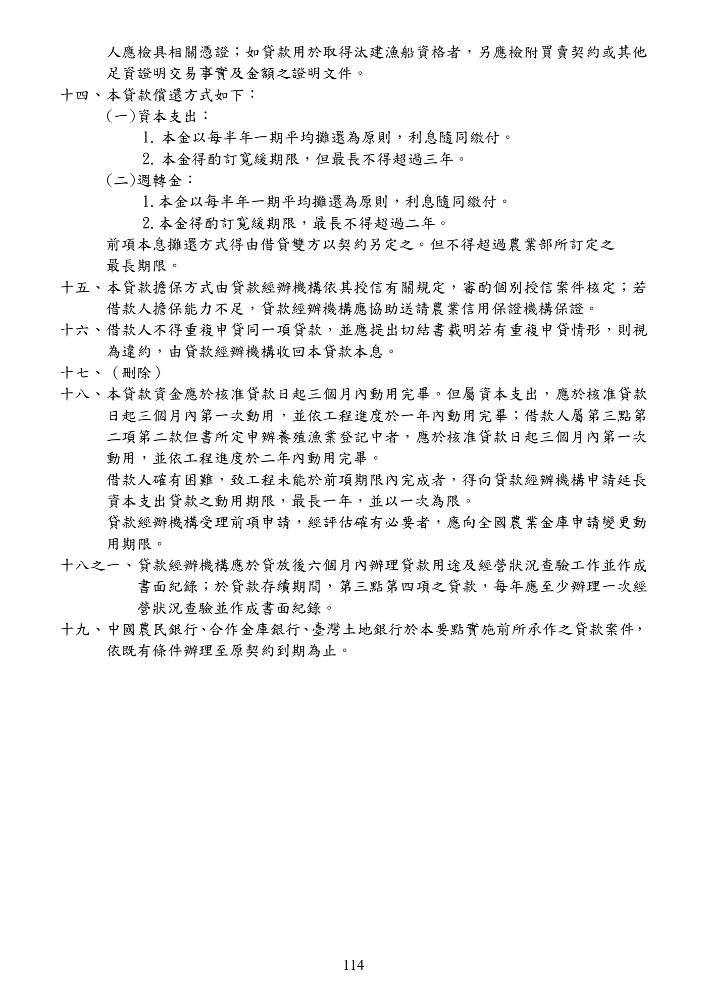
展開查看PDF原始文字層
人應檢具相關憑證；如貸款用於取得汰建漁船資格者，另應檢附買賣契約或其他 足資證明交易事實及金額之證明文件。 十四、 本貸款償還方式如下： (一)資本支出： 1. 本金以每半年一期平均攤還為原則，利息隨同繳付。 2. 本金得酌訂寬緩期限，但最長不得超過三年。 (二)週轉金： 1.本金以每半年一期平均攤還為原則，利息隨同繳付。 2.本金得酌訂寬緩期限，最長不得超過二年。 前項本息攤還方式得由借貸雙方以契約另定之。但不得超過農業部所訂定之 最長期限。 十五、 本貸款擔保方式由貸款經辦機構依其授信有關規定，審酌個別授信案件核定；若 借款人擔保能力不足，貸款經辦機構應協助送請農業信用保證機構保證。 十六、 借款人不得重複申貸同一項貸款，並應提出切結書載明若有重 複申貸情形，則視 為違約，由貸款經辦機構收回本貸款本息。 十七、 （刪除） 十八、 本貸款資金應於核准貸款日起三個月內動用完畢。但屬資本支出， 應於核准貸款 日起三個月內第一次動用，並依工程進度於一年內動用完 畢；借款人屬第三點第 二項第二款但書所定申辦養殖漁業登記中者，應於核准貸款日起三個月內第一次 動用，並依工程進度於二年內動用完畢。 借款人確有困難，致工程未能於前項期限內完成者，得向貸款經辦機構申請延長 資本支出貸款之動用期限，最長一年，並以一次為限。 貸款經辦機構受理前項申請，經評估確有必要者，應向全國農業金庫申請變更動 用期限。 十八之一、貸款經辦機構應於貸放後六個月內辦理貸款 用途及經營狀況查驗工作並作成 書面紀錄；於貸款存續期間，第三點第 四項之貸款，每年應至少辦理一次經 營狀況查驗並作成書面紀錄。 十九、 中國農民銀行 、 合作金庫銀行 、 臺灣土地銀行於本要點實施前所承作之貸款案件 ， 依既有條件辦理至原契約到期為止。
手冊頁：115 PDF頁：117／359

展開查看PDF原始文字層
編號：3
114.10.10起適用
輔導漁業經營貸款申請書
一、申請人資料：
姓名
(名稱)
出生日期
(設立日期)
身分證字號
(統一編號)
戶籍地址
(登記地址) 聯絡
電話
居住地址
(經營場址) □同上 □其他： 聯絡
電話
申貸資格
本貸款之對象為漁業 （民） 團體 、 生產合作社或實際從事下列漁業經營之漁民 ：
□海洋漁業，包含漁撈及養殖。
□陸上養殖。
□休閒漁業或娛樂漁業。
□水產加工或運銷等漁業生產。
*前項借款人屬養殖業者，應同時具備下列條件（併附相關證明文件） ：
1.漁會法第15條第1項第1款所定甲類會員、養殖漁業發展協會會員、農會法第
12條所定農會會員、完成當年度或前一年度養殖漁業放養量申報。
2.領有養殖漁業登記證 、 區劃漁業權執照 、 專用漁業權入漁證明文件或其他依
法令許可之養殖證明文件 。 但屬申辦養殖漁業登記中者 ， 僅得申貸資本支出
貸款，並應檢附主管機關核准興建水產養殖設施之農業用地作農業設施容
許使用同意書。
*借款人有下列情形之一者，應收回其貸款，貸款經辦機構已請領之利息差額
補貼應繳還農業部：
1.於貸款存續期間發生下列情形之一，自違法情事發生之日起視為違約：
（1）有走私、偷渡及電、毒、炸魚違規情事。
（2）經撤銷漁業經營之核准或撤銷漁業證照。
2.貸款用途屬為變更現有漁船經營漁業種類，購買汰建資格者，借款人未於
撥貸後2個月內補正變更後漁業執照。
3.申辦養殖漁業登記中者，借款人未於撥貸後3年內，補正養殖漁業登記證
，視為未符合貸款資格。
*借款人於貸款存續期間，經依漁業法限制、停止漁業經營或收回漁業證照處
分者，依下列規定辦理：
1.因走私、偷渡及電、毒、炸魚之事由：視為違約，應收回其貸款，貸款經
辦機構已請領之利息差額補貼應繳還農業部。
2.因走私、偷渡及電、毒、炸魚以外之事由：貸款經辦機構已請領之借款人受
處分期間利息差額補貼應繳還農業部。
證明文件 前揭登記文件: 字號:
有效期間：
申貸專案農貸紀
錄
□有 貸款
貸款
貸款，總計現欠餘額： 元。
□無
有無重複申貸 □有 □無手冊頁：116 PDF頁：118／359
二、貸款金額及用途： 單位：新臺幣元 貸款金額 (大寫) 新臺幣 元整 貸款期間 資本支出 年 週 轉 金 年 貸款用途 □資本支出： 金額_____________________ □週 轉 金： 金額_____________________ *本人知悉貸後資本支出應檢附足具證據力之相關憑證 (如統一發票、收據 .. 等)，以佐證貸款用途。 申請人(簽章)：_____________________ 敬請 惠予核貸為荷 此致 貸款經辦機構 申請人(簽章)： 中 華 民 國 年 月 日 備註：其他徵授信資料請依貸款經辦機構相關規定辦理
查看PDF原始文字層
二、貸款金額及用途： 單位：新臺幣元 貸款金額 (大寫) 新臺幣 元整 貸款期間 資本支出 年 週 轉 金 年 貸款用途 □資本支出： 金額_____________________ □週 轉 金： 金額_____________________ *本人知悉貸後資本支出應檢附足具證據力之相關憑證 (如統一發票、收據 .. 等)，以佐證貸款用途。 申請人(簽章)：_____________________ 敬請 惠予核貸為荷 此致 貸款經辦機構 申請人(簽章)： 中 華 民 國 年 月 日 備註：其他徵授信資料請依貸款經辦機構相關規定辦理
手冊頁：117 PDF頁：119／359
{kind=link}
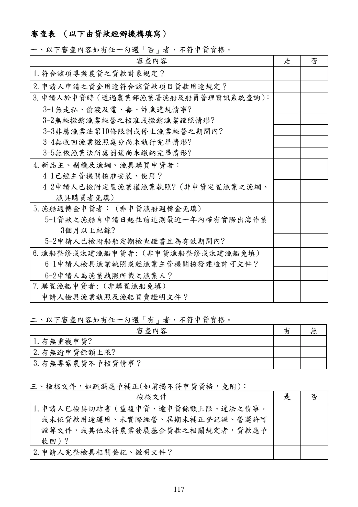
展開查看PDF原始文字層
審查表 （以下由貸款經辦機構填寫） 一、以下審查內容如有任一勾選「否」者，不符申貸資格。 審查內容 是 否 1.符合該項專案農貸之貸款對象規定？ 2.申請人申請之資金用途符合該貸款項目貸款用途規定？ 3.申請人於申貸時（透過農業部漁業署漁船及船員管理資訊系統查詢） ： 3-1無走私、偷渡及電、毒、炸魚違規情事? 3-2無經撤銷漁業經營之核准或撤銷漁業證照情形? 3-3非屬漁業法第10條限制或停止漁業經營之期間內? 3-4無收回漁業證照處分尚未執行完畢情形? 3-5無依漁業法所處罰鍰尚未繳納完畢情形? 4.新品主、副機及漁網、漁具購買申貸者： 4-1已經主管機關核准安裝、使用？ 4-2申請人已檢附定置漁業權漁業執照? (非申貸定置漁業之漁網、 漁具購買者免填) 5.漁船週轉金申貸者： (非申貸漁船週轉金免填) 5-1貸款之漁船自申請日起往前追溯最近一年內確有實際出海作業 3個月以上紀錄? 5-2申請人已檢附船舶定期檢查證書且為有效期間內? 6.漁船整修或汰建漁船申貸者: (非申貸漁船整修或汰建漁船免填) 6-1申請人檢具漁業執照或經漁業主管機關核發建造許可文件？ 6-2申請人為漁業執照所載之漁業人？ 7.購置漁船申貸者: (非購置漁船免填) 申請人檢具漁業執照及漁船買賣證明文件？ 二、以下審查內容如有任一勾選「有」者，不符申貸資格。 審查內容 有 無 1.有無重複申貸? 2.有無逾申貸餘額上限? 3.有無專案農貸不予核貸情事？ 三、檢核文件，如疏漏應予補正(如前揭不符申貸資格，免附)： 檢核文件 是 否 1.申請人已檢具切結書（重複申貸、逾申貸餘額上限、違法之情事， 或未依貸款用途運用、未實際經營、屆期未補正登記證、營運許可 證等文件，或其他未符農業發展基金貸款之相關規定者，貸款應予 收回）? 2.申請人完整檢具相關登記、證明文件？
手冊頁：118 PDF頁：120／359
{kind=link}
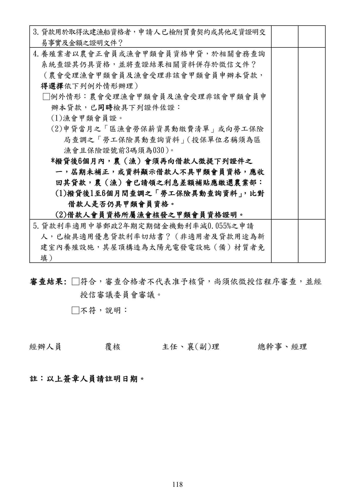
展開查看PDF原始文字層
經辦人員 覆核 主任、襄(副)理 總幹事、經理 註：以上簽章人員請註明日期。 3.貸 款 用 於 取 得 汰 建 漁 船 資 格 者 ，申請人已檢 附 買 賣 契 約 或 其 他 足 資 證 明 交 易 事 實 及 金 額 之 證 明 文 件？ 4.養殖業者以農會正會員或漁會甲類會員資格申貸，於相關會務查詢 系統查證其仍具資格，並將查證結果相關資料併存於徵信文件？ （農會受理漁會甲類會員及漁會受理非該會甲類會員申辦本貸款， 得選擇依下列例外情形辦理） □例外情形：農會受理漁會甲類會員及漁會受理非該會甲類會員申 辦本貸款，已同時檢具下列證件佐證： (1)漁會甲類會員證。 (2)申貸當月之「區漁會勞保薪資異動繳費清單」或向勞工保險 局查調之「勞工保險異動查詢資料」 （投保單位名稱須為區 漁會且保險證號前3碼須為030）。 *撥貸後6個月內，農（漁）會須再向借款人徵提下列證件之 一，屆期未補正，或資料顯示借款人不具甲類會員資格，應收 回其貸款，農（漁）會已請領之利息差額補貼應繳還農業部： (1)撥貸後1至6個月間查調之「勞工保險異動查詢資料」 ，比對 借款人是否仍具甲類會員資格。 (2)借款人會員資格所屬漁會核發之甲類會員資格證明。 5.貸款利率適用中華郵政2年期定期儲金機動利率減0.055%之申請 人，已檢具適用優惠貸款利率切結書？（非適用者及貸款用途為新 建室內養殖設施，其屋頂構造為太陽光電發電設施（備）材質者免 填） 審查結果: □符合，審查合格者不代表准予核貸，尚須依徵授信程序審查，並經 授信審議委員會審議。 □不符，說明：
手冊頁：119 PDF頁：121／359
函令摘要： 「漁船經營」 部分之 「娛樂漁船建造」 ，是否包含購買中古船疑 義案 【行政院農業委員會105年5月12日農授金字第1055084192號函】 主旨：有關「輔導漁業經營貸款」項下「漁船經營」部分之「娛樂漁船建造」，是否包含 購買中古船疑義案，復如說明二，請查照。 說明： 一、 依據本會農業金融局案陳貴會105年5月3日東區漁信字第1050011533號函辦理。 二、 所詢「娛樂漁船建造」貸款用途，並未包含購買中古船。至於申借旨揭貸款用於購置 「中古娛樂漁船」 ，應依「辦理政策性農業專案貸款辦法」第24條附表2之3第1點第6 款「購置已核有漁業執照之漁船」規定辦理。
查看PDF原始文字層
函令摘要： 「漁船經營」 部分之 「娛樂漁船建造」 ，是否包含購買中古船疑 義案 【行政院農業委員會105年5月12日農授金字第1055084192號函】 主旨：有關「輔導漁業經營貸款」項下「漁船經營」部分之「娛樂漁船建造」，是否包含 購買中古船疑義案，復如說明二，請查照。 說明： 一、 依據本會農業金融局案陳貴會105年5月3日東區漁信字第1050011533號函辦理。 二、 所詢「娛樂漁船建造」貸款用途，並未包含購買中古船。至於申借旨揭貸款用於購置 「中古娛樂漁船」 ，應依「辦理政策性農業專案貸款辦法」第24條附表2之3第1點第6 款「購置已核有漁業執照之漁船」規定辦理。
手冊頁：120 PDF頁：122／359
提升畜禽產業經營貸款要點 中華民國 94 年 12 月 30 日行政院農業委員會農授金字第 0945080617 號令訂定 中華民國 95 年 7 月 19 日行政院農業委員會農金字第 0955080244 號令修正 中華民國95 年12 月7 日行政院農業委員會農金字第 0955080417 號令修正第13 點規定 ， 並自 96 年 1 月 1 日生效 中華民國96 年12 月13 日行政院農業委員會農金字第 0965080452 號令修正第10 點及第 12 點規定 中華民國 97 年 12 月 22 日行政院農業委員會農金字第 0975080456 號令修正部分規定， 並溯自 97 年 12 月 20 日生效 中華民國 98 年 5 月 6 日行政院農業委員會農金字第 0985080219 號令修正第 10 點及第 12 點規定 中華民國 99 年 12 月 27 日行政院農業委員會農金字第 0995080584 號令修正第 4 點、第 5 點及第 17 點規定 中華民國 102 年 4 月 26 日行政院農業委員會農金字第 1025080181 號令修正 中華民國 103 年 10 月 28 日行政院農業委員會農金字第 1035084016 號令修正 中華民國 105 年 1 月 22 日行政院農業委員會農金字第 1055084031C 號令修正，並自 105 年 1 月 23 日生效 中華民國 105 年 3 月 18 日行政院農業委員會農金字第 1055084021E 號令修正第 10 點， 並自 105 年 3 月 22 日生效 中華民國 107 年 3 月 30 日行政院農業委員會農金字第 1075084075C 號令修正第 4 點，並 自 107 年 4 月 16 日生效 中華民國108 年11 月22 日行政院農業委員會農金字第 1085084745D 號令修正部分規定 ， 並自 108 年 11 月 25 日生效 中華民國109 年2 月27 日行政院農業委員會農授金字第1095084100C 號令修正第11 點、 第 15 點，並自 109 年 3 月1 日生效 中華民國109 年10 月21 日行政院農業委員會農授金字第1095085177C 號令修正第4 點， 並自 109 年 11 月1 日生效 中華民國110 年7 月29 日行政院農業委員會農授金字第 1105084731C 號令修正第12 點， 並自 110 年 8 月 1 日生效 中華民國 111 年 9 月 29 日行政院農業委員會農授金字第 1115085078A 令修正部分規定， 並自 111 年 10 月1 日生效 中華民國 112 年 8 月 31 日農業部農授金字第 1125085014 號令修正第 1、4、5、7、12、 13、15 點條文；並自 112 年 9 月 1 日生效 中華民國 114 年 10 月 9 日農業部農授金字第 1147467204 號令修正第 4 點、第18 點，並 自中華民國 114 年 10 月 10 日生效 一、 農業部為協助家畜(禽)相關業者改善生產有關設備及經營體質 ， 以降低生產成本 ， 並 提升經營效率及競爭力 ， 另為輔導實際從事畜牧生產之畜牧場與從事禽畜糞再利用之 禽畜糞堆肥場設置或改善污染防治設備或強化經營管理能力 ， 有效防治畜牧污染 ， 避 免造成公害，以維護生態環境，特訂定本要點。
查看PDF原始文字層
提升畜禽產業經營貸款要點 中華民國 94 年 12 月 30 日行政院農業委員會農授金字第 0945080617 號令訂定 中華民國 95 年 7 月 19 日行政院農業委員會農金字第 0955080244 號令修正 中華民國95 年12 月7 日行政院農業委員會農金字第 0955080417 號令修正第13 點規定 ， 並自 96 年 1 月 1 日生效 中華民國96 年12 月13 日行政院農業委員會農金字第 0965080452 號令修正第10 點及第 12 點規定 中華民國 97 年 12 月 22 日行政院農業委員會農金字第 0975080456 號令修正部分規定， 並溯自 97 年 12 月 20 日生效 中華民國 98 年 5 月 6 日行政院農業委員會農金字第 0985080219 號令修正第 10 點及第 12 點規定 中華民國 99 年 12 月 27 日行政院農業委員會農金字第 0995080584 號令修正第 4 點、第 5 點及第 17 點規定 中華民國 102 年 4 月 26 日行政院農業委員會農金字第 1025080181 號令修正 中華民國 103 年 10 月 28 日行政院農業委員會農金字第 1035084016 號令修正 中華民國 105 年 1 月 22 日行政院農業委員會農金字第 1055084031C 號令修正，並自 105 年 1 月 23 日生效 中華民國 105 年 3 月 18 日行政院農業委員會農金字第 1055084021E 號令修正第 10 點， 並自 105 年 3 月 22 日生效 中華民國 107 年 3 月 30 日行政院農業委員會農金字第 1075084075C 號令修正第 4 點，並 自 107 年 4 月 16 日生效 中華民國108 年11 月22 日行政院農業委員會農金字第 1085084745D 號令修正部分規定 ， 並自 108 年 11 月 25 日生效 中華民國109 年2 月27 日行政院農業委員會農授金字第1095084100C 號令修正第11 點、 第 15 點，並自 109 年 3 月1 日生效 中華民國109 年10 月21 日行政院農業委員會農授金字第1095085177C 號令修正第4 點， 並自 109 年 11 月1 日生效 中華民國110 年7 月29 日行政院農業委員會農授金字第 1105084731C 號令修正第12 點， 並自 110 年 8 月 1 日生效 中華民國 111 年 9 月 29 日行政院農業委員會農授金字第 1115085078A 令修正部分規定， 並自 111 年 10 月1 日生效 中華民國 112 年 8 月 31 日農業部農授金字第 1125085014 號令修正第 1、4、5、7、12、 13、15 點條文；並自 112 年 9 月 1 日生效 中華民國 114 年 10 月 9 日農業部農授金字第 1147467204 號令修正第 4 點、第18 點，並 自中華民國 114 年 10 月 10 日生效 一、 農業部為協助家畜(禽)相關業者改善生產有關設備及經營體質 ， 以降低生產成本 ， 並 提升經營效率及競爭力 ， 另為輔導實際從事畜牧生產之畜牧場與從事禽畜糞再利用之 禽畜糞堆肥場設置或改善污染防治設備或強化經營管理能力 ， 有效防治畜牧污染 ， 避 免造成公害，以維護生態環境，特訂定本要點。
手冊頁：121 PDF頁：123／359
二、 提升畜禽產業經營相關貸款除依辦理政策性農業專案貸款辦法辦理外 ， 依本要點規定 辦理。本要點未規定者，依農業發展基金貸款作業規範及其他有關規定辦理。 三、 本貸款之類別如下： (一) 改善草食家畜經營類。 (二) 提升養豬經營類。 (三) 提升家禽產業經營類。 (四) 畜牧污染防治類。 (五) 提升畜禽肉品生產經營類。 (六) 畜牧友善生產系統類。 (七) 提升蛋品生產經營類。 四、 本貸款之對象如下： (一) 改善草食家畜經營類 、 提升養豬經營類及提升家禽產業經營類 ： 已取得畜牧場登 記證書或申辦畜牧場登記中，飼養經農 業部公告之家畜(不包括馬)或家禽之農 民，養乳牛之農民另須檢附收乳證明。 (二) 畜牧污染防治類： 1. 畜牧場(戶)：已取得畜牧場登記證書或申辦畜牧場登記中之農民。 2. 禽畜糞堆肥場：已取得主管機關核發禽畜糞堆肥場營運許可證或申辦禽畜糞 堆肥場營運許可中者。 (三) 提升畜禽肉品生產經營類： 1. 登記有案之畜牧類(肉品)合作社。 2. 取得屠宰場登記證書者。 3. 屠宰場登記程序申辦中，且已取得屠宰場同意設立文件者。 (四) 畜牧友善生產系統類：符合 農業部所定雞蛋友善生產系統定義及指南之蛋雞飼 養方式、豬隻友善飼養系統定義及指南之豬隻飼養方式或牛乳友善生產系統定 義與指南之乳牛飼養方式，並符合下列條件之一者： 1. 已取得畜牧場登記證書或申辦畜牧場登記中之農民。 2. 未達農業部公告應申請畜牧場登記之飼養規模，已取得農業用地作畜牧設施 容許使用同意書之農民。 (五)提升蛋品生產經營類：登記有案之蛋品生產運銷合作社。 前項第一款 、 第二款第一目或第四款第一目申辦畜牧場登記中之農民 ， 僅得申貸資本 支出貸款，並應檢附下列各款資料： (一) 所在地直轄市 、 縣(市)政府核發之農業用地容許作農業設施使用同意書影本 ， 其 中設施種類欄中所載應為畜牧設施，且設施細目名稱欄中應載有擬申貸之主要 畜牧設施或污染防治設備。 (二) 擬申貸主要畜牧設施或污染防治設備之建造執照或使用執照之證明文件影本。 第一項第二款第二目申辦禽畜糞堆肥場營運許可中者， 僅得申貸資本支出貸款 ， 並應 檢附下列各款資料： (一) 擬申貸堆肥場所在地直轄市、縣(市)政府核發之土地核准作堆肥場使用文件。 (二) 擬申貸堆肥場房建築物使用執照之證明文件影本。 第一項第一款提升家禽產業經營類及第四款第一目 符合農業部所定雞蛋友善生產系 統定義及指南之蛋雞飼養方式 之借款人應參加家禽禽流感保 險，依下列期限補正保
查看PDF原始文字層
二、 提升畜禽產業經營相關貸款除依辦理政策性農業專案貸款辦法辦理外 ， 依本要點規定
辦理。本要點未規定者，依農業發展基金貸款作業規範及其他有關規定辦理。
三、 本貸款之類別如下：
(一) 改善草食家畜經營類。
(二) 提升養豬經營類。
(三) 提升家禽產業經營類。
(四) 畜牧污染防治類。
(五) 提升畜禽肉品生產經營類。
(六) 畜牧友善生產系統類。
(七) 提升蛋品生產經營類。
四、 本貸款之對象如下：
(一) 改善草食家畜經營類 、 提升養豬經營類及提升家禽產業經營類 ： 已取得畜牧場登
記證書或申辦畜牧場登記中，飼養經農 業部公告之家畜(不包括馬)或家禽之農
民，養乳牛之農民另須檢附收乳證明。
(二) 畜牧污染防治類：
1. 畜牧場(戶)：已取得畜牧場登記證書或申辦畜牧場登記中之農民。
2. 禽畜糞堆肥場：已取得主管機關核發禽畜糞堆肥場營運許可證或申辦禽畜糞
堆肥場營運許可中者。
(三) 提升畜禽肉品生產經營類：
1. 登記有案之畜牧類(肉品)合作社。
2. 取得屠宰場登記證書者。
3. 屠宰場登記程序申辦中，且已取得屠宰場同意設立文件者。
(四) 畜牧友善生產系統類：符合 農業部所定雞蛋友善生產系統定義及指南之蛋雞飼
養方式、豬隻友善飼養系統定義及指南之豬隻飼養方式或牛乳友善生產系統定
義與指南之乳牛飼養方式，並符合下列條件之一者：
1. 已取得畜牧場登記證書或申辦畜牧場登記中之農民。
2. 未達農業部公告應申請畜牧場登記之飼養規模，已取得農業用地作畜牧設施
容許使用同意書之農民。
(五)提升蛋品生產經營類：登記有案之蛋品生產運銷合作社。
前項第一款 、 第二款第一目或第四款第一目申辦畜牧場登記中之農民 ， 僅得申貸資本
支出貸款，並應檢附下列各款資料：
(一) 所在地直轄市 、 縣(市)政府核發之農業用地容許作農業設施使用同意書影本 ， 其
中設施種類欄中所載應為畜牧設施，且設施細目名稱欄中應載有擬申貸之主要
畜牧設施或污染防治設備。
(二) 擬申貸主要畜牧設施或污染防治設備之建造執照或使用執照之證明文件影本。
第一項第二款第二目申辦禽畜糞堆肥場營運許可中者， 僅得申貸資本支出貸款 ， 並應
檢附下列各款資料：
(一) 擬申貸堆肥場所在地直轄市、縣(市)政府核發之土地核准作堆肥場使用文件。
(二) 擬申貸堆肥場房建築物使用執照之證明文件影本。
第一項第一款提升家禽產業經營類及第四款第一目 符合農業部所定雞蛋友善生產系
統定義及指南之蛋雞飼養方式 之借款人應參加家禽禽流感保 險，依下列期限補正保手冊頁：122 PDF頁：124／359
險單副本及保險費收據，並應連續投保至貸款清償日止： (一)已取得畜牧場登記證書者：核准貸款日起三個月內。 (二)申辦畜牧場登記中者：取得畜牧場登記證書之日起三個月內。 (三)前二款對象保險單屆期續保者：前期保險單保險期間屆滿次日起三個月內。 借款人有下列情形之一者，應收回其貸款，貸款經辦機構已請領之利息差額補貼應 繳還農業部： (一) 第一項各款借款人為申辦畜牧場登記證書、屠宰場登記證書或禽畜糞堆肥場營 運許可證中者 ， 應於撥貸後三年內補正各該登記證書或許可證 ， 屆期未補正者 ， 視為未符合貸款資格。但屠宰場同意設立文件經 農業部核准展延之期限逾撥貸 後三年者，應於核准展延期限屆滿後六個月內補正屠宰場登記證書。 (二) 未依前項第一款及第二款期限內補正者，自撥貸日起視為違約；未依前項第 三 款期限內補正者，自前期保險單保險期間屆滿次日起視為違約。 申請貸款用途為改善或新建畜禽舍 ， 以設置屋頂型綠能設施之貸款案者 ， 須為第一項 第一款借款人， 且應先取得直轄市 、 縣(市)政府核發畜禽舍得附屬設置屋頂型綠能設 施容許使用同意書。 前項借款人 ， 應於核准貸款利率之日起二年內補正再生能源發電設備登記文件 ， 屆期 未補正者 ， 其貸款利率應調整為其他類貸款利率 ， 貸款經辦機構已溢請領之利息差額 補貼應繳還農業部。 五、 本貸款之用途如下： (一) 提供有關業者興建畜牧設施、購買家畜禽或購置 畜牧相關生產及經營設備之資 本支出及週轉金。 (二) 畜牧場(戶)：設置或改善廢水處理之設備與其所需土木工程，或無排放水畜舍 之改建，以及污泥處理、堆肥製造、除臭設備、沼氣利用與焚化爐等污染防治設 備之資本支出。 (三) 禽畜糞堆肥場 ： 設置或改善堆肥醱酵設備 、 除臭設備及清運車輛等禽畜糞堆肥處 理製造設備之資本支出，或已取得 農業部禽畜糞堆肥場營運許可證者改善經營 管理之週轉金。 (四) 購置肉品加工、屠宰設備及經營之資本支出及週轉金。 六、 本貸款經辦機構如下： (一) 設有信用部之農(漁)會。 (二) 依法承受農(漁)會信用部之銀行當地分行。 (三) 全國農業金庫。 七、 本貸款之輔導機關為農業部及其所屬畜產試驗所、直轄市及各縣(市)政府。 八、 本貸款由貸款經辦機構提供貸款資金 ， 並由農業發展基金就其出資金給予利息差額補 貼。 九、 本貸款風險由貸款經辦機構負擔。 十、 本貸款利率依辦理政策性農業專案貸款辦法相關規定辦理。 十一、 本貸款期限依貸款額度及購置設備耐用年限覈實貸放 ， 其中資本支出最長十五年 ， 週轉金最長五年。 十二、 本貸款額度如下： (一) 改善草食家畜經營類：每一借款人最高貸款額度為新臺幣四千萬元，其中週
查看PDF原始文字層
險單副本及保險費收據，並應連續投保至貸款清償日止： (一)已取得畜牧場登記證書者：核准貸款日起三個月內。 (二)申辦畜牧場登記中者：取得畜牧場登記證書之日起三個月內。 (三)前二款對象保險單屆期續保者：前期保險單保險期間屆滿次日起三個月內。 借款人有下列情形之一者，應收回其貸款，貸款經辦機構已請領之利息差額補貼應 繳還農業部： (一) 第一項各款借款人為申辦畜牧場登記證書、屠宰場登記證書或禽畜糞堆肥場營 運許可證中者 ， 應於撥貸後三年內補正各該登記證書或許可證 ， 屆期未補正者 ， 視為未符合貸款資格。但屠宰場同意設立文件經 農業部核准展延之期限逾撥貸 後三年者，應於核准展延期限屆滿後六個月內補正屠宰場登記證書。 (二) 未依前項第一款及第二款期限內補正者，自撥貸日起視為違約；未依前項第 三 款期限內補正者，自前期保險單保險期間屆滿次日起視為違約。 申請貸款用途為改善或新建畜禽舍 ， 以設置屋頂型綠能設施之貸款案者 ， 須為第一項 第一款借款人， 且應先取得直轄市 、 縣(市)政府核發畜禽舍得附屬設置屋頂型綠能設 施容許使用同意書。 前項借款人 ， 應於核准貸款利率之日起二年內補正再生能源發電設備登記文件 ， 屆期 未補正者 ， 其貸款利率應調整為其他類貸款利率 ， 貸款經辦機構已溢請領之利息差額 補貼應繳還農業部。 五、 本貸款之用途如下： (一) 提供有關業者興建畜牧設施、購買家畜禽或購置 畜牧相關生產及經營設備之資 本支出及週轉金。 (二) 畜牧場(戶)：設置或改善廢水處理之設備與其所需土木工程，或無排放水畜舍 之改建，以及污泥處理、堆肥製造、除臭設備、沼氣利用與焚化爐等污染防治設 備之資本支出。 (三) 禽畜糞堆肥場 ： 設置或改善堆肥醱酵設備 、 除臭設備及清運車輛等禽畜糞堆肥處 理製造設備之資本支出，或已取得 農業部禽畜糞堆肥場營運許可證者改善經營 管理之週轉金。 (四) 購置肉品加工、屠宰設備及經營之資本支出及週轉金。 六、 本貸款經辦機構如下： (一) 設有信用部之農(漁)會。 (二) 依法承受農(漁)會信用部之銀行當地分行。 (三) 全國農業金庫。 七、 本貸款之輔導機關為農業部及其所屬畜產試驗所、直轄市及各縣(市)政府。 八、 本貸款由貸款經辦機構提供貸款資金 ， 並由農業發展基金就其出資金給予利息差額補 貼。 九、 本貸款風險由貸款經辦機構負擔。 十、 本貸款利率依辦理政策性農業專案貸款辦法相關規定辦理。 十一、 本貸款期限依貸款額度及購置設備耐用年限覈實貸放 ， 其中資本支出最長十五年 ， 週轉金最長五年。 十二、 本貸款額度如下： (一) 改善草食家畜經營類：每一借款人最高貸款額度為新臺幣四千萬元，其中週
手冊頁：123 PDF頁：125／359
{kind=link}
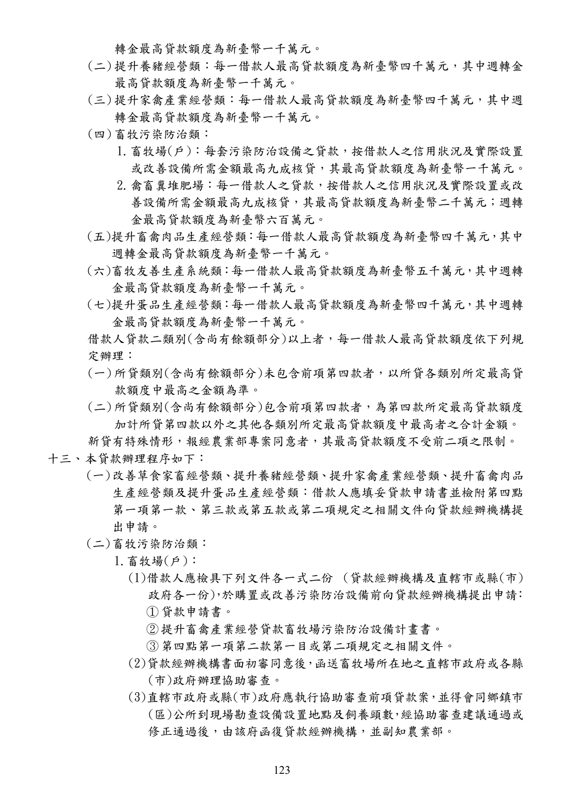
展開查看PDF原始文字層
轉金最高貸款額度為新臺幣一千萬元。 (二) 提升養豬經營類：每一借款人最高貸款額度為新臺幣四千萬元，其中週轉金 最高貸款額度為新臺幣一千萬元。 (三) 提升家禽產業經營類：每一借款人最高貸款額度為新臺幣四千萬元，其中週 轉金最高貸款額度為新臺幣一千萬元。 (四) 畜牧污染防治類： 1. 畜牧場(戶)：每套污染防治設備之貸款，按借款人之信用狀況及實際設置 或改善設備所需金額最高九成核貸，其最高貸款額度為新臺幣一千萬元。 2. 禽畜糞堆肥場：每一借款人之貸款，按借款人之信用狀況及實際設置或改 善設備所需金額最高九成核貸，其最高貸款額度為新臺幣二千萬元；週轉 金最高貸款額度為新臺幣六百萬元。 (五)提升畜禽肉品生產經營類 ： 每一借款人最高貸款額度為新臺幣四千萬元 ， 其中 週轉金最高貸款額度為新臺幣一千萬元。 (六)畜牧友善生產系統類 ： 每一借款人最高貸款額度為新臺幣五千萬元 ， 其中週轉 金最高貸款額度為新臺幣一千萬元。 (七)提升蛋品生產經營類 ： 每一借款人最高貸款額度為新臺幣四千萬元 ， 其中週轉 金最高貸款額度為新臺幣一千萬元。 借款人貸款二類別(含尚有餘額部分)以上者，每一借款人最高貸款額度依下列規 定辦理： (一) 所貸類別(含尚有餘額部分)未包含前項第四款者，以所貸各類別 所定最高貸 款額度中最高之金額為準。 (二) 所貸類別(含尚有餘額部分)包含前項第四款者，為第四款所定最高貸款額度 加計所貸第四款以外之其他各類別所定最高貸款額度中最高者之合計金額。 新貸有特殊情形，報經農業部專案同意者，其最高貸款額度不受前二項之限制。 十三、 本貸款辦理程序如下： (一) 改善草食家畜經營類、提升養豬經營類、提升家禽產業經營類、提升畜禽肉品 生產經營類及提升蛋品生產經營類 ：借款人應填妥貸款申請書並檢附第四點 第一項第一款 、第三款或第五款或第二項規定之相關文件向貸款經辦機構提 出申請。 (二) 畜牧污染防治類： 1. 畜牧場(戶)： (1)借款人應檢具下列文件各一式二份 (貸款經辦機構及直轄市或縣(市) 政府各一份)， 於購置或改善污染防治設備前向貸款經辦機構提出申請 ： ① 貸款申請書。 ② 提升畜禽產業經營貸款畜牧場污染防治設備計畫書。 ③ 第四點第一項第二款第一目或第二項規定之相關文件。 (2)貸款經辦機構書面初審同意後 ， 函送畜牧場所在地之直轄市政府或各縣 (市)政府辦理協助審查。 (3)直轄市政府或縣(市)政府應執行協助審查前項貸款案 ， 並得會同鄉鎮市 (區)公所到現場勘查設備設置地點及飼養頭數 ， 經協助審查建議通過或 修正通過後，由該府函復貸款經辦機構，並副知農業部。
手冊頁：124 PDF頁：126／359
{kind=link}
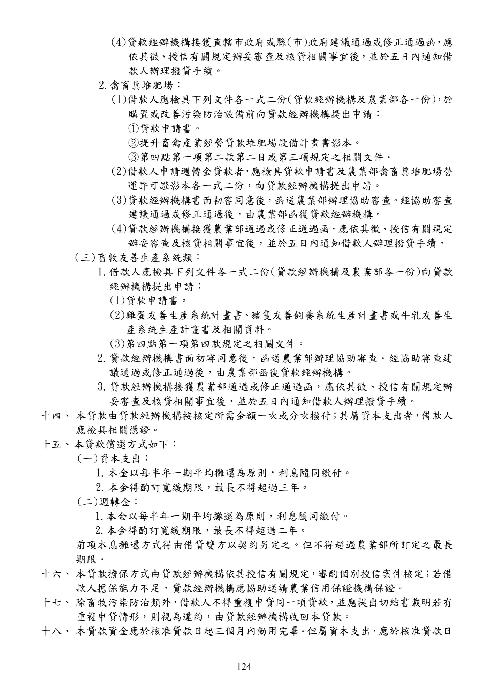
展開查看PDF原始文字層
(4)貸款經辦機構接獲直轄市政府或縣(市)政府建議通過或修正通過函 ， 應
依其徵 、 授信有關規定辦妥審查及核貸相關事宜後 ， 並於五日內通知借
款人辦理撥貸手續。
2. 禽畜糞堆肥場：
(1)借款人應檢具下列文件各一式二份(貸款經辦機構及農業部各一份)，於
購置或改善污染防治設備前向貸款經辦機構提出申請：
① 貸款申請書。
② 提升畜禽產業經營貸款堆肥場設備計畫書影本。
③ 第四點第一項第二款第二目或第三項規定之相關文件。
(2)借款人申請週轉金貸款者 ， 應檢具貸款申請書及農業部禽畜糞堆肥場營
運許可證影本各一式二份，向貸款經辦機構提出申請。
(3)貸款經辦機構書面初審同意後 ， 函送農業部辦理協助審查。 經協助審查
建議通過或修正通過後，由農業部函復貸款經辦機構。
(4)貸款經辦機構接獲農業部通過或修正通過函 ， 應依其徵 、授信有關規定
辦妥審查及核貸相關事宜後，並於五日內通知借款人辦理撥貸手續。
(三) 畜牧友善生產系統類：
1. 借款人應檢具下列文件各一式二份(貸款經辦機構及農業部各一份)向貸款
經辦機構提出申請：
(1)貸款申請書。
(2)雞蛋友善生產系統計畫書、 豬隻友善飼養系統生產計畫書或牛乳友善生
產系統生產計畫書及相關資料。
(3)第四點第一項第四款規定之相關文件。
2. 貸款經辦機構書面初審同意後，函送 農業部辦理協助審查。經協助審查建
議通過或修正通過後，由農業部函復貸款經辦機構。
3. 貸款經辦機構接獲 農業部通過或修正通過函，應依其徵 、授信有關規定辦
妥審查及核貸相關事宜後，並於五日內通知借款人辦理撥貸手續。
十四、 本貸款由貸款經辦機構按核定所需金額一次或分次撥付 ； 其屬資本支出者 ， 借款人
應檢具相關憑證。
十五、 本貸款償還方式如下：
(一) 資本支出：
1. 本金以每半年一期平均攤還為原則，利息隨同繳付。
2. 本金得酌訂寬緩期限，最長不得超過三年。
(二) 週轉金：
1. 本金以每半年一期平均攤還為原則，利息隨同繳付。
2. 本金得酌訂寬緩期限，最長不得超過二年。
前項本息攤還方式得由借貸雙方以契約另定之。但不得超過 農業部所訂定之最長
期限。
十六、 本貸款擔保方式由貸款經辦機構依其授信有關規定 ， 審酌個別授信案件核定 ； 若借
款人擔保能力不足，貸款經辦機構應協助送請農業信用保證機構保證。
十七、 除畜牧污染防治類外 ， 借款人不得重複申貸同一項貸款 ， 並應提出切結書載明若有
重複申貸情形，則視為違約，由貸款經辦機構收回本貸款。
十八、 本貸款資金應於核准貸款日起三個月內動用完畢 。 但屬資本支出 ， 應於核准貸款日手冊頁：125 PDF頁：127／359
起三個月內第一次動用 ， 並依工程進度於一年內動用完畢； 借款人屬第四點第一項 各款借款人為申辦畜牧場登記證書、屠宰場登記證書或禽畜 糞堆肥場營運許可證 中者 ， 應於核准貸款日起三個月內第一次動用 ， 並依工程進度於二年內動用完畢。 借款人確有困難 ， 致工程未能於前項期限內完成者 ， 得向貸款經辦機構申請延長資 本支出貸款之動用期限，最長一年，並以一次為限。 貸款經辦機構受理前項申請 ， 經評估確有必要者 ， 應向全國農業金庫申請變更動用 期限。 十八之一 、 貸款經辦機構應於貸放後六個月內辦理貸款用途及經營狀況查驗工作並作成書 面紀錄；於貸款存續期間，第四點第六項之貸款，每年應至少辦理一次經營狀 況查驗並作成書面紀錄。 十九、 中國農民銀行、合作金庫銀行、臺灣土地銀行於本要點實施前所承作之貸款案件， 依既有條件辦理至原契約到期為止。
查看PDF原始文字層
起三個月內第一次動用 ， 並依工程進度於一年內動用完畢； 借款人屬第四點第一項 各款借款人為申辦畜牧場登記證書、屠宰場登記證書或禽畜 糞堆肥場營運許可證 中者 ， 應於核准貸款日起三個月內第一次動用 ， 並依工程進度於二年內動用完畢。 借款人確有困難 ， 致工程未能於前項期限內完成者 ， 得向貸款經辦機構申請延長資 本支出貸款之動用期限，最長一年，並以一次為限。 貸款經辦機構受理前項申請 ， 經評估確有必要者 ， 應向全國農業金庫申請變更動用 期限。 十八之一 、 貸款經辦機構應於貸放後六個月內辦理貸款用途及經營狀況查驗工作並作成書 面紀錄；於貸款存續期間，第四點第六項之貸款，每年應至少辦理一次經營狀 況查驗並作成書面紀錄。 十九、 中國農民銀行、合作金庫銀行、臺灣土地銀行於本要點實施前所承作之貸款案件， 依既有條件辦理至原契約到期為止。
手冊頁：126 PDF頁：128／359

展開查看PDF原始文字層
提升畜禽產業經營貸款(除污染防治類外)申請書 一、申請人資料： 姓名 (名稱) 出生日期 (設立日期) 身分證字號 (統一編號) 戶籍地址 (登記地址) 聯絡電話 居住地址 (經營場址) □同上 □其他： 聯絡電話 畜牧場/屠 宰場名稱 登記證書 登記字號 申貸資格 □改善草食家畜經營類：已取得畜牧場登記證書或申辦畜牧場登記中，飼養經農業部 公告之家畜(不包括馬)之農民，養乳牛之農民另須檢附收乳證明。 □提升養豬經營類：已取得畜牧場登記證書或申辦畜牧場登記中之養豬農民。 □提升家禽產業經營類：已取得畜牧場登記證書或申辦畜牧場登記中，飼養經農業部 公告之家禽之農民。 □畜牧友善生產系統類 ：符合農業部所定雞蛋友善生產系統定義及指南之蛋雞飼養方 式 、 豬隻友善飼養系統定義及指南之豬隻飼養方式或牛乳友善生產系統定義與指南 之乳牛飼養方式，並符合下列條件之一者： □1.已取得畜牧場登記證書或申辦畜牧場登記中之農民。 □2.未達農業部公告應申請畜牧場登記之飼養規模 ， 已取得農業用地作畜牧設施容 許使用同意書之農民。 □前開各款申辦畜牧場登記中之農民，僅得申貸資本支出貸款，並應檢附下列資料： 1.所在地直轄市、縣(市)政府核發之農業用地容許作農業設施使用同意書影本，其 中設施種類欄中所載應為畜牧設施 ， 且設施細目名稱欄中應載有擬申貸之主要畜 牧設施。 2.擬申貸主要畜牧設施之建造執照或使用執照之證明文件影本。 □提升畜禽肉品生產經營類： □1.登記有案之畜牧類(肉品)合作社場。 □2.取得屠宰場登記證書者。 □3.屠宰場登記程序申辦中，且已取得屠宰場同意設立文件者。 □提升蛋品生產經營類：登記有案之蛋品生產運銷合作社。 *借款人有下列情形之一者，應收回其貸款，貸款經辦機構已請領之利息差額補貼應 繳還農業部： 1.各款借款人為申辦畜牧場登記證書 、 屠宰場登記證書或禽畜糞堆肥場營運許可證中 者，應於撥貸後3年內補正各該登記證書或許可證，屆期未補正者，視為未符合貸 款資格。但屠宰場同意設立文件經農業部核准展延之期限逾撥貸後3年者，應於核 准展延期限屆滿後6個月內補正屠宰場登記證書。 編號:4.0 114.10.10起適用
手冊頁：127 PDF頁：129／359
2.提升家禽產業經營類及畜牧友善生產系統類-符合雞蛋友善生產系統定義及指南之 蛋雞飼養方式之借款人，已取得畜牧場登記證書或申辦畜牧場登記中者，應參加家 禽禽流感保險，並於核貸日起或取得畜牧場登記證書之日起3個月內，補正保險單 副本及保險費收據，並應連續投保至貸款清償日止 （前期保單保險期間屆滿次日起 3個月內補正文件） 。屆期未補正者，視為違約。 申貸專案農貸紀 錄 □有 貸款 貸款 貸款，總計現欠餘額： 元。 □無 有無重複申貸 □有 □無
二、貸款金額及用途： 單位：新臺幣元 貸款金額 (大寫) 新臺幣 元整 貸款期間 資本支出 年 週轉金 年 貸款用途
□資本支出：金額_____________________ □週轉金：金額_____________________ *本人知悉貸後資本支出應檢附足具證據力之相關憑證(如統一發票、收據..等)， 以佐證貸款用途。 申請人(簽章)：_____________________
敬請 惠予核貸為荷 此致 貸款經辦機構 申請人(簽章)：
中 華 民 國 年 月 日
備註：其他徵授信資料請依貸款經辦機構相關規定辦理
查看PDF原始文字層
2.提升家禽產業經營類及畜牧友善生產系統類-符合雞蛋友善生產系統定義及指南之
蛋雞飼養方式之借款人，已取得畜牧場登記證書或申辦畜牧場登記中者，應參加家
禽禽流感保險，並於核貸日起或取得畜牧場登記證書之日起3個月內，補正保險單
副本及保險費收據，並應連續投保至貸款清償日止 （前期保單保險期間屆滿次日起
3個月內補正文件） 。屆期未補正者，視為違約。
申貸專案農貸紀
錄
□有 貸款
貸款
貸款，總計現欠餘額： 元。
□無
有無重複申貸 □有 □無
二、貸款金額及用途： 單位：新臺幣元
貸款金額
(大寫) 新臺幣 元整 貸款期間 資本支出 年
週轉金 年
貸款用途
□資本支出：金額_____________________
□週轉金：金額_____________________
*本人知悉貸後資本支出應檢附足具證據力之相關憑證(如統一發票、收據..等)，
以佐證貸款用途。
申請人(簽章)：_____________________
敬請
惠予核貸為荷
此致
貸款經辦機構
申請人(簽章)：
中 華 民 國 年 月 日
備註：其他徵授信資料請依貸款經辦機構相關規定辦理手冊頁：128 PDF頁：130／359
{kind=link}
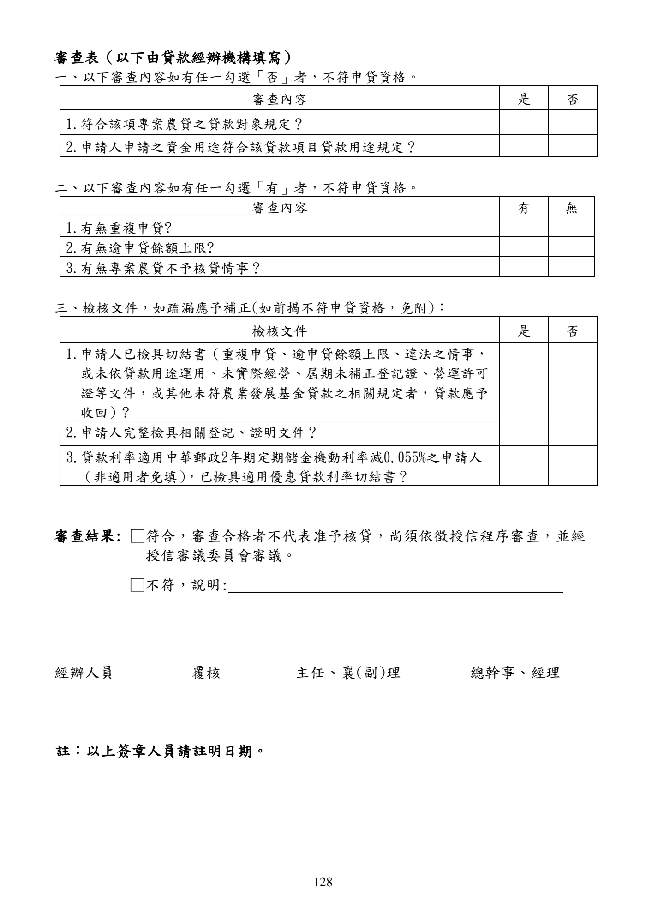
展開查看PDF原始文字層
審查表（以下由貸款經辦機構填寫） 一、以下審查內容如有任一勾選「否」者，不符申貸資格。 審查內容 是 否 1.符合該項專案農貸之貸款對象規定？ 2.申請人申請之資金用途符合該貸款項目貸款用途規定？ 二、以下審查內容如有任一勾選「有」者，不符申貸資格。 審查內容 有 無 1.有無重複申貸? 2.有無逾申貸餘額上限? 3.有無專案農貸不予核貸情事？ 三、檢核文件，如疏漏應予補正(如前揭不符申貸資格，免附)： 檢核文件 是 否 1.申請人已檢具切結書（重複申貸、逾申貸餘額上限、違法之情事， 或未依貸款用途運用、未實際經營、屆期未補正登記證、營運許可 證等文件，或其他未符農業發展基金貸款之相關規定者，貸款應予 收回）? 2.申請人完整檢具相關登記、證明文件？ 3.貸款利率適用中華郵政2年期定期儲金機動利率減0.055%之申請人 （非適用者免填） ，已檢具適用優惠貸款利率切結書？ 審查結果: □符合，審查合格者不代表准予核貸，尚須依徵授信程序審查，並經 授信審議委員會審議。 □不符，說明: 經辦人員 覆核 主任、襄(副)理 總幹事、經理 註：以上簽章人員請註明日期。
手冊頁：129 PDF頁：131／359
{kind=link}
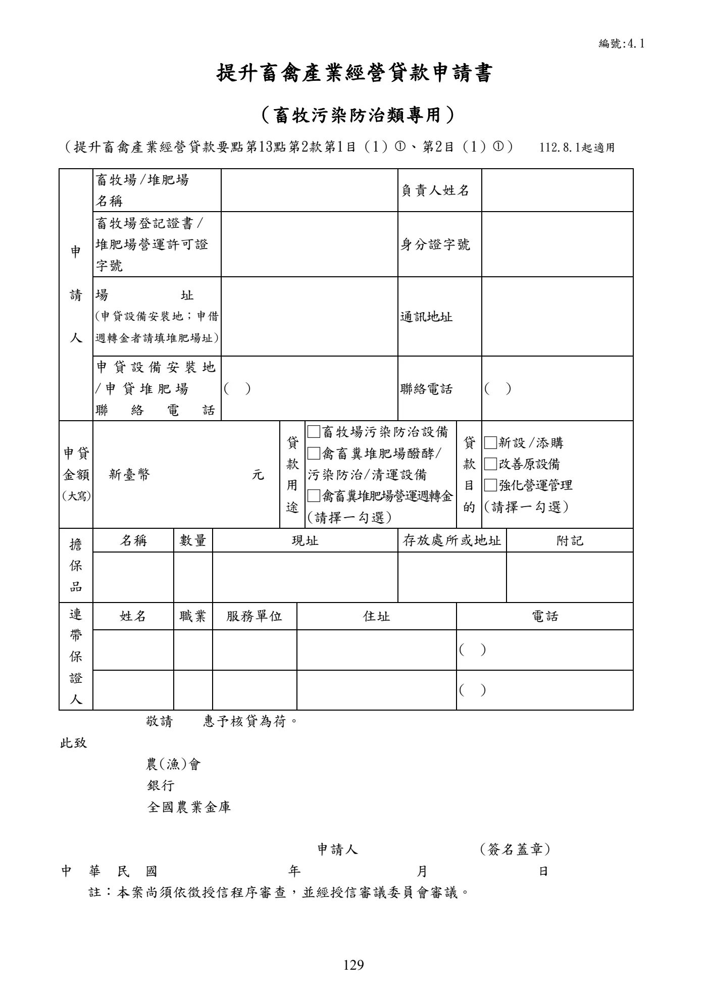
展開查看PDF原始文字層
提升畜禽產業經營貸款申請書
（畜牧污染防治類專用）
（提升畜禽產業經營貸款要點第13點第2款第1目（1）、第2目（1）） 112.8.1起適用
申
請
人
畜牧場 / 堆肥場
名稱 負責人姓名
畜牧場登記證書 /
堆肥場營運許可證
字號
身分證字號
場 址
(申貸設備安裝地；申借
週轉金者請填堆肥場址)
通訊地址
申貸設備安裝地
/ 申貸堆肥場
聯 絡 電 話
( ) 聯絡電話 ( )
申貸
金額
(大寫)
新臺幣 元
貸
款
用
途
□畜牧場污染防治設備
□禽畜糞堆肥場醱酵/
污染防治/清運設備
□禽 畜 糞 堆 肥 場 營 運 週 轉 金
(請擇一勾選)
貸
款
目
的
□新設 / 添購
□改 善 原 設 備
□強 化 營 運 管 理
(請擇一勾選)
擔
保
品
名稱 數量 現址 存放處所或地址 附記
連
帶
保
證
人
姓名 職業 服務單位 住址 電話
( )
( )
敬請 惠予核貸為荷。
此致
農(漁)會
銀行
全國農業金庫
申請人 (簽名蓋章)
中 華 民 國 年 月 日
註：本案尚須依徵授信程序審查，並經授信審議委員會審議。
編號:4.1手冊頁：130 PDF頁：132／359
提升畜禽產業經營貸款 畜牧場污染防治設備計畫書 （提升畜禽產業經營貸款要點第13點第2款第1目（1））
一、基本資料 (有待選處 “□”，請勾選) 畜牧場名稱： 負責人姓名： 聯絡電話： 場址(申貸設備安裝地)： 飼養 / 申請飼養畜禽：□豬 □雞 □牛 □其他(請註明畜種 ) 規模： 頭/隻 □畜牧場登記證書 (證書字號 ) □廢水排放許可證 (許可排放量 立方公尺/日) 二、污染防治設施現況：(已取得畜牧場登記證書者，請勾選，可複選，並填寫內容；尚未 取得者本項免填，請直接填寫三、申請貸款污染防治設施) (一)廢水處理設施： □固液分離機 (機型 , 數量 座) □擠壓機 (機型 , 數量 座) □調節池 (總容積 立方公尺) □厭氣池 (□紅泥膠皮式, □其他<請說明 >, 總容積 立方公尺) □曝氣池 (總容積 立方公尺) □沈澱池 (總容積 立方公尺) □污泥脫水機 (機型 , 數量 座) □污泥濃縮池 (總容積 立方公尺) □其他設施 (請說明 ) (二)廢棄物處理設施： 禽畜糞再利用 / 處理 □簡易堆肥舍 (面積 平方公尺) □自動翻堆舍 (面積 平方公尺) □鏟裝車 (車型 , 數量 部) □其他設施 (請說明 ) 斃死畜禽再利用 / 處理 □焚化爐 / 燃燒爐 (爐型 , 數量 座) □掩埋（畜牧場內空地面積 平方公尺） □其他設施（請說明 ） (三)除臭設施： □有 (機型 , 數量 ) (四)其他污染防治設施 □有 (請說明 ) 三、申請貸款污染防治設施：(請勾選，可複選，並填寫內容) (一)廢水處理設施： □固液分離機 (機型 , 數量 座) □擠壓機 (機型 , 數量 座) □調節池 (總容積 立方公尺) 編號:4.2
查看PDF原始文字層
提升畜禽產業經營貸款 畜牧場污染防治設備計畫書 （提升畜禽產業經營貸款要點第13點第2款第1目（1）） 一、基本資料 (有待選處 “□”，請勾選) 畜牧場名稱： 負責人姓名： 聯絡電話： 場址(申貸設備安裝地)： 飼養 / 申請飼養畜禽：□豬 □雞 □牛 □其他(請註明畜種 ) 規模： 頭/隻 □畜牧場登記證書 (證書字號 ) □廢水排放許可證 (許可排放量 立方公尺/日) 二、污染防治設施現況：(已取得畜牧場登記證書者，請勾選，可複選，並填寫內容；尚未 取得者本項免填，請直接填寫三、申請貸款污染防治設施) (一)廢水處理設施： □固液分離機 (機型 , 數量 座) □擠壓機 (機型 , 數量 座) □調節池 (總容積 立方公尺) □厭氣池 (□紅泥膠皮式, □其他<請說明 >, 總容積 立方公尺) □曝氣池 (總容積 立方公尺) □沈澱池 (總容積 立方公尺) □污泥脫水機 (機型 , 數量 座) □污泥濃縮池 (總容積 立方公尺) □其他設施 (請說明 ) (二)廢棄物處理設施： 禽畜糞再利用 / 處理 □簡易堆肥舍 (面積 平方公尺) □自動翻堆舍 (面積 平方公尺) □鏟裝車 (車型 , 數量 部) □其他設施 (請說明 ) 斃死畜禽再利用 / 處理 □焚化爐 / 燃燒爐 (爐型 , 數量 座) □掩埋（畜牧場內空地面積 平方公尺） □其他設施（請說明 ） (三)除臭設施： □有 (機型 , 數量 ) (四)其他污染防治設施 □有 (請說明 ) 三、申請貸款污染防治設施：(請勾選，可複選，並填寫內容) (一)廢水處理設施： □固液分離機 (機型 , 數量 座) □擠壓機 (機型 , 數量 座) □調節池 (總容積 立方公尺) 編號:4.2
手冊頁：131 PDF頁：133／359
□厭氣池 (□紅泥膠皮式, □其他<請說明 >, 總容積 立方公尺) □曝氣池 (總容積 立方公尺) □沈澱池 (總容積 立方公尺) □污泥脫水機 (機型 , 數量 座) □污泥濃縮池 (總容積 立方公尺) □其他設施 (請說明 ) （二）廢棄物處理設施： 禽畜糞再利用 / 處理 □簡易堆肥舍 (面積 平方公尺) □自動翻堆舍 (面積 平方公尺) □鏟裝車 (車型 , 數量 部) □其他設施 (請說明 ) 斃死畜禽再利用 / 處理 □焚化爐 / 燃燒爐 (爐型 , 數量 座) □掩埋（畜牧場內空地面積 平方公尺） □其他設施（請說明 ） （三）除臭設施： □ 請說明機型 , 數量 座 （四）其他污染防治設施 □ 請說明機型 , 數量 座 ※（五）檢附本場配置圖並標示所申請貸款設施擬安裝處。 四、預定投資金額： 元 (檢附工程經費估價明細表) 五、擬申貸金額： 元 自行配合金額： 元
申請人 (簽名蓋章) 申請日期： 年 月 日 (以下供受理單位審查填寫，申請人免填) 直轄市或縣市政府協助審查意見：
主辦： 課長： 農業局長： 日 期：
查看PDF原始文字層
□厭氣池 (□紅泥膠皮式, □其他<請說明 >, 總容積 立方公尺)
□曝氣池 (總容積 立方公尺)
□沈澱池 (總容積 立方公尺)
□污泥脫水機 (機型 , 數量 座)
□污泥濃縮池 (總容積 立方公尺)
□其他設施 (請說明 )
（二）廢棄物處理設施：
禽畜糞再利用 / 處理
□簡易堆肥舍 (面積 平方公尺) □自動翻堆舍 (面積 平方公尺)
□鏟裝車 (車型 , 數量 部)
□其他設施 (請說明 )
斃死畜禽再利用 / 處理
□焚化爐 / 燃燒爐 (爐型 , 數量 座)
□掩埋（畜牧場內空地面積 平方公尺） □其他設施（請說明 ）
（三）除臭設施：
□ 請說明機型 , 數量 座
（四）其他污染防治設施
□ 請說明機型 , 數量 座
※（五）檢附本場配置圖並標示所申請貸款設施擬安裝處。
四、預定投資金額： 元 (檢附工程經費估價明細表)
五、擬申貸金額： 元 自行配合金額： 元
申請人 (簽名蓋章)
申請日期： 年 月 日
(以下供受理單位審查填寫，申請人免填)
直轄市或縣市政府協助審查意見：
主辦： 課長： 農業局長：
日 期：手冊頁：132 PDF頁：134／359
提升畜禽產業經營貸款 堆肥場設備計畫書 （提升畜禽產業經營貸款要點第13點第2款第2目（1）） 一、基本資料 (有待選處 “□”，請勾選) 堆肥場名稱： 負責人姓名： 聯絡電話： 場址(申貸設備安裝地)： 場房面積 平方公尺 醱酵設施面積 平方公尺 平均原料處理量 公噸 / 月 最大原料處理量 公噸 / 月 □禽畜糞堆肥場營運許可證 (證書字號 ) 二、設施現況：(已取得禽畜糞堆肥場營運許可證者，請勾選，可複選，並填寫內容；尚未取得 者本項免填，請直接填寫三、申請貸款污染防治設施) （一）醱酵設施： □自動翻堆機 (機型 , 數量 部) □鏟裝車 (車型 , 數量 部) □其他設施 (請說明 ) （二）除臭設施： □有 (機型 , 數量 座) （三）清運車輛： □有 (車號 , 車型 , 數量 輛) （四）其他污染防治設施 □有 (請說明 ) 三、申請貸款設施：(請勾選，可複選，並填寫內容) （一）醱酵設施： □自動翻堆機 (機型 , 數量 部) □鏟裝車 (車型 , 數量 部) □其他設施 (請說明 ) （二）除臭設施： □ 機型 , 數量 座 （三）清運車輛： □ 車型 , 數量 輛 （四）其他污染防治設施 □ 請說明 ※（五）檢附本場配置圖並標示所申請貸款設施擬安裝處。 四、預定投資金額： 元 (檢附工程經費估價明細表) 五、擬申貸金額： 元 自行配合金額： 元
申 請 人 (簽名蓋章) 申請日期： 年 月 日 編號:4.3
查看PDF原始文字層
提升畜禽產業經營貸款
堆肥場設備計畫書
（提升畜禽產業經營貸款要點第13點第2款第2目（1））
一、基本資料 (有待選處 “□”，請勾選)
堆肥場名稱： 負責人姓名： 聯絡電話：
場址(申貸設備安裝地)：
場房面積 平方公尺 醱酵設施面積 平方公尺
平均原料處理量 公噸 / 月 最大原料處理量 公噸 / 月
□禽畜糞堆肥場營運許可證 (證書字號 )
二、設施現況：(已取得禽畜糞堆肥場營運許可證者，請勾選，可複選，並填寫內容；尚未取得
者本項免填，請直接填寫三、申請貸款污染防治設施)
（一）醱酵設施：
□自動翻堆機 (機型 , 數量 部)
□鏟裝車 (車型 , 數量 部)
□其他設施 (請說明 )
（二）除臭設施：
□有 (機型 , 數量 座)
（三）清運車輛：
□有 (車號 , 車型 , 數量 輛)
（四）其他污染防治設施
□有 (請說明 )
三、申請貸款設施：(請勾選，可複選，並填寫內容)
（一）醱酵設施：
□自動翻堆機 (機型 , 數量 部)
□鏟裝車 (車型 , 數量 部)
□其他設施 (請說明 )
（二）除臭設施：
□ 機型 , 數量 座
（三）清運車輛：
□ 車型 , 數量 輛
（四）其他污染防治設施
□ 請說明
※（五）檢附本場配置圖並標示所申請貸款設施擬安裝處。
四、預定投資金額： 元 (檢附工程經費估價明細表)
五、擬申貸金額： 元 自行配合金額： 元
申 請 人 (簽名蓋章)
申請日期： 年 月 日
編號:4.3手冊頁：133 PDF頁：135／359
(以下供受理單位審查填寫，申請人免填)
貸款經辦機構核貸：
承辦人員： 單位主管： 機構負責人： 日 期：
查看PDF原始文字層
(以下供受理單位審查填寫，申請人免填)
貸款經辦機構核貸：
承辦人員： 單位主管： 機構負責人：
日 期：手冊頁：134 PDF頁：136／359
提升畜禽產業經營貸款 畜牧友善生產系統類-雞蛋友善生產系統生產計畫書 （提升畜禽產業經營貸款要點第 13 點第 3 款第 1 目(2)）
一、基本資料 (有待選處 “□”，請勾選) 畜牧場名稱： 負責人姓名： 聯絡電話： 場址(申貸設備安裝地)： 飼養蛋雞規模： 隻 □畜牧場登記證書(證書字號 ) □畜牧場登記證書申請中(請附相關證明文件) □未達中央主管機關公告應申請畜牧場登記之飼養規模，已取得農業用地作畜牧設施容許 使用同意書(請附證書影本) 依據「雞蛋友善生產系統定義及指南」 ，本生產計畫書預定採行之雞蛋友善生產系統為 □豐富化籠飼 □平飼 □放牧 二、雞蛋生產之籠具設備及設施現況：(已取得畜牧場登記證書或未達中央主管機關公告應申請 畜牧場登記之飼養規模，但已取得農業用地作畜牧設施容許使用同意書者，請勾選，可複 選，並填寫內容；尚未取得者本項免填，請直接填寫三、申請貸款雞蛋友善生產系統設備 及設施)： （一）蛋雞舍主要設施： □籠具設備： （請詳述使用之籠具型號、數量、可容納之蛋雞數量) □棲架（平均長度每隻雞 公分） □巢箱（每個巢箱平均面積 平方公分，數量 個） □磨爪設施（材質為 ，其他說明 ） □無牆開放式遮蔽設施（材質為 ，其他說明 ） □場地排水設施（材質為 ，其他說明 ） □戶外活動區（面積為 平方公尺，其他說明 ） □戶外活動區之遮蔽/遮陰設施（材質為 ，其他說明 ） □集蛋設備（其他說明 ） □其他設備（請詳細說明 ） （二）蛋雞舍附屬設施： □洗選設備（請詳述使用之籠具型號、數量、單位時間內可洗選之蛋量） □水濂設備（其他說明 ） □通風設備（其他說明 ） □照明設備（其他說明 ） □降溫設備（其他說明 ） □集糞設備（其他說明 ） □中央控制系統（其他說明 ） □監視系統（其他說明 ） □其他設備（請詳細說明 ） 編號:4.4(1) 111.10.1 起適用 用用
查看PDF原始文字層
提升畜禽產業經營貸款
畜牧友善生產系統類-雞蛋友善生產系統生產計畫書
（提升畜禽產業經營貸款要點第 13 點第 3 款第 1 目(2)）
一、基本資料 (有待選處 “□”，請勾選)
畜牧場名稱： 負責人姓名： 聯絡電話：
場址(申貸設備安裝地)：
飼養蛋雞規模： 隻
□畜牧場登記證書(證書字號 )
□畜牧場登記證書申請中(請附相關證明文件)
□未達中央主管機關公告應申請畜牧場登記之飼養規模，已取得農業用地作畜牧設施容許
使用同意書(請附證書影本)
依據「雞蛋友善生產系統定義及指南」 ，本生產計畫書預定採行之雞蛋友善生產系統為
□豐富化籠飼 □平飼 □放牧
二、雞蛋生產之籠具設備及設施現況：(已取得畜牧場登記證書或未達中央主管機關公告應申請
畜牧場登記之飼養規模，但已取得農業用地作畜牧設施容許使用同意書者，請勾選，可複
選，並填寫內容；尚未取得者本項免填，請直接填寫三、申請貸款雞蛋友善生產系統設備
及設施)：
（一）蛋雞舍主要設施：
□籠具設備： （請詳述使用之籠具型號、數量、可容納之蛋雞數量)
□棲架（平均長度每隻雞 公分）
□巢箱（每個巢箱平均面積 平方公分，數量 個）
□磨爪設施（材質為 ，其他說明 ）
□無牆開放式遮蔽設施（材質為 ，其他說明 ）
□場地排水設施（材質為 ，其他說明 ）
□戶外活動區（面積為 平方公尺，其他說明 ）
□戶外活動區之遮蔽/遮陰設施（材質為 ，其他說明 ）
□集蛋設備（其他說明 ）
□其他設備（請詳細說明 ）
（二）蛋雞舍附屬設施：
□洗選設備（請詳述使用之籠具型號、數量、單位時間內可洗選之蛋量）
□水濂設備（其他說明 ）
□通風設備（其他說明 ）
□照明設備（其他說明 ）
□降溫設備（其他說明 ）
□集糞設備（其他說明 ）
□中央控制系統（其他說明 ）
□監視系統（其他說明 ）
□其他設備（請詳細說明 ）
編號:4.4(1)
111.10.1 起適用
用用手冊頁：135 PDF頁：137／359
三、申請貸款雞蛋友善生產系統設備及設施：(請勾選，可複選，並填寫內容) （一）蛋雞舍主要設施： □籠具設備： （請詳述使用之籠具型號、數量、可容納之蛋雞數量) □棲架（平均長度每隻雞 公分） □巢箱（每個巢箱平均面積 平方公分，數量 個） □磨爪設施（材質為 ，其他說明 ） □無牆開放式遮蔽設施（材質為 ，其他說明 ） □場地排水設施（材質為 ，其他說明 ） □戶外活動區（面積為 平方公尺，其他說明 ） □戶外活動區之遮蔽/遮陰設施（材質為 ，其他說明 ） □集蛋設備（其他說明 ） □其他設備（請詳細說明 ） （二）蛋雞舍附屬設施： □洗選設備（請詳述使用之籠具型號、數量、單位時間內可洗選之蛋量） □水濂設備（其他說明 ） □通風設備（其他說明 ） □照明設備（其他說明 ） □降溫設備（其他說明 ） □集糞設備（其他說明 ） □中央控制系統（其他說明 ） □監視系統（其他說明 ） □其他設備（請詳細說 ） □欲拆除之原有設備及設施（請詳細說明於下）
（三）檢附本場配置圖並標示所申請貸款之設備及設施擬安裝處。 四、預定投資金額： 元 (檢附工程經費估價明細表或設備採購估價明細表) 五、擬申貸金額： 元 自行配合金額： 元 申請人 (簽名蓋章) 申請日期： 年 月 日 (以下供受理單位審查填寫，申請人免填)
貸款經辦機構核貸：
承辦人員： 單位主管： 機構負責人： 日 期：
查看PDF原始文字層
三、申請貸款雞蛋友善生產系統設備及設施：(請勾選，可複選，並填寫內容)
（一）蛋雞舍主要設施：
□籠具設備： （請詳述使用之籠具型號、數量、可容納之蛋雞數量)
□棲架（平均長度每隻雞 公分）
□巢箱（每個巢箱平均面積 平方公分，數量 個）
□磨爪設施（材質為 ，其他說明 ）
□無牆開放式遮蔽設施（材質為 ，其他說明 ）
□場地排水設施（材質為 ，其他說明 ）
□戶外活動區（面積為 平方公尺，其他說明 ）
□戶外活動區之遮蔽/遮陰設施（材質為 ，其他說明 ）
□集蛋設備（其他說明 ）
□其他設備（請詳細說明 ）
（二）蛋雞舍附屬設施：
□洗選設備（請詳述使用之籠具型號、數量、單位時間內可洗選之蛋量）
□水濂設備（其他說明 ）
□通風設備（其他說明 ）
□照明設備（其他說明 ）
□降溫設備（其他說明 ）
□集糞設備（其他說明 ）
□中央控制系統（其他說明 ）
□監視系統（其他說明 ）
□其他設備（請詳細說 ）
□欲拆除之原有設備及設施（請詳細說明於下）
（三）檢附本場配置圖並標示所申請貸款之設備及設施擬安裝處。
四、預定投資金額： 元 (檢附工程經費估價明細表或設備採購估價明細表)
五、擬申貸金額： 元 自行配合金額： 元
申請人 (簽名蓋章)
申請日期： 年 月 日
(以下供受理單位審查填寫，申請人免填)
貸款經辦機構核貸：
承辦人員： 單位主管： 機構負責人：
日 期：手冊頁：136 PDF頁：138／359
編號:4.4(2) 111.10.1起適用 提升畜禽產業經營貸款 畜牧友善生產系統類-豬隻友善飼養系統生產計畫書 （提升畜禽產業經營貸款要點第13點第3款第1目(2)） 一、基本資料 (有待選處 “□”，請勾選) 畜牧場名稱： 負責人姓名： 聯絡電話： 場址(申貸設備安裝地)： 飼養豬隻規模： 頭 □畜牧場登記證書(證書字號 ) □畜牧場登記證書申請中(請附相關證明文件) □未達中央主管機關公告應申請畜牧場登記之飼養規模 ， 已取得農業用地作畜牧設施容許使 用同意書(請附證書影本) 依據「豬隻友善飼養系統定義及指南」 ，本生產計畫書預定採行豬隻友善飼養系統(可複選) □種豬 □肉豬 豬隻友善飼養系統之懷孕母豬預定採取之飼養模式 □個別飼養 □群養 □個別飼養與群養並行 泌乳母豬是否與仔豬一同飼養 □是 □否，如是請欄舍配置或群養設備處詳細說明面積及此模式欄舍數目。 待配母豬是否與女豬一同飼養(群養) □是 □否，如是請欄舍配置或群養設備處詳細說明面積及此模式欄舍數目：
二 、 豬隻飼養之系統設備及設施現況 ：(已取得畜牧場登記證書或未達中央主管機關公告應申請畜 牧場登記之飼養規模，但已取得農業用地作畜牧設施容許使用同意書者，請 勾選，可複選， 並填寫內容 ； 尚未取得者本項免填 ， 請直接填寫三 、 申請貸款豬隻友善飼養系統設備及設施) （一）豬舍主要設施： □欄舍配置： （請詳述欄舍配置之種公豬欄(舍)、種母豬欄(舍)、泌乳母豬欄(舍)、仔豬欄 (舍)、保育豬欄(舍)、生長肥育豬欄(舍)、單獨隔離或治療區(室)之配置面積及個別生長 階段之飼養頭數（請詳細說明 ) □群養設備（請詳細說明 ) □活動式分娩欄(請詳細說明 ) □豬舍地板止滑設施（材質為 ，其他說明 ) □場地排水設施（材質為 ，其他說明 ) □戶內豬隻活動區（面積為 平方公尺，其他說明 ) □戶外豬隻活動區之遮蔽/遮陰設施（材質為 ，其他說明 )
查看PDF原始文字層
編號:4.4(2)
111.10.1起適用 提升畜禽產業經營貸款
畜牧友善生產系統類-豬隻友善飼養系統生產計畫書
（提升畜禽產業經營貸款要點第13點第3款第1目(2)）
一、基本資料 (有待選處 “□”，請勾選)
畜牧場名稱： 負責人姓名： 聯絡電話：
場址(申貸設備安裝地)：
飼養豬隻規模： 頭
□畜牧場登記證書(證書字號 )
□畜牧場登記證書申請中(請附相關證明文件)
□未達中央主管機關公告應申請畜牧場登記之飼養規模 ， 已取得農業用地作畜牧設施容許使
用同意書(請附證書影本)
依據「豬隻友善飼養系統定義及指南」 ，本生產計畫書預定採行豬隻友善飼養系統(可複選)
□種豬 □肉豬
豬隻友善飼養系統之懷孕母豬預定採取之飼養模式
□個別飼養 □群養 □個別飼養與群養並行
泌乳母豬是否與仔豬一同飼養
□是 □否，如是請欄舍配置或群養設備處詳細說明面積及此模式欄舍數目。
待配母豬是否與女豬一同飼養(群養)
□是 □否，如是請欄舍配置或群養設備處詳細說明面積及此模式欄舍數目：
二 、 豬隻飼養之系統設備及設施現況 ：(已取得畜牧場登記證書或未達中央主管機關公告應申請畜
牧場登記之飼養規模，但已取得農業用地作畜牧設施容許使用同意書者，請 勾選，可複選，
並填寫內容 ； 尚未取得者本項免填 ， 請直接填寫三 、 申請貸款豬隻友善飼養系統設備及設施)
（一）豬舍主要設施：
□欄舍配置： （請詳述欄舍配置之種公豬欄(舍)、種母豬欄(舍)、泌乳母豬欄(舍)、仔豬欄
(舍)、保育豬欄(舍)、生長肥育豬欄(舍)、單獨隔離或治療區(室)之配置面積及個別生長
階段之飼養頭數（請詳細說明
)
□群養設備（請詳細說明 )
□活動式分娩欄(請詳細說明 )
□豬舍地板止滑設施（材質為 ，其他說明 )
□場地排水設施（材質為 ，其他說明 )
□戶內豬隻活動區（面積為 平方公尺，其他說明 )
□戶外豬隻活動區之遮蔽/遮陰設施（材質為 ，其他說明 )手冊頁：137 PDF頁：139／359
□其他設備（請詳細說明
) （二）豬舍附屬設施： □自動化餵飼設備（其他說明 ) □通風設備（其他說明 ) □照明設備（其他說明 ) □降溫設備（其他說明 ) □廢水處理設備（其他說明 ) □沼氣處理設備（其他說明 ) □其他設備（請詳細說明
) 三、申請貸款豬隻友善生產系統設備及設施：(請勾選，可複選，並填寫內容) （一）豬舍主要設施： □欄舍配置： （請詳述欄舍配置之種公豬欄(舍)、種母豬欄(舍)、泌乳母豬欄(舍)、仔豬欄 (舍)、保育豬欄(舍)、生長肥育豬欄(舍)、單獨隔離或治療區(室)之配置面積及個別生長 階段之飼養頭數，請詳細說明 ) □群養設備（請詳細說明 ) □活動式分娩欄(請詳細說明 ) □豬舍地板止滑設施（材質為 ，其他說明 ) □場地排水設施（材質為 ，其他說明 ) □戶內豬隻活動區（面積為 平方公尺，其他說明 ) □戶外豬隻活動區之遮蔽/遮陰設施（材質為 ，其他說明 ) □其他設備（請詳細說明 ) （二）豬舍附屬設施： □自動化餵飼設備（其他說明 ) □通風設備（其他說明 ) □照明設備（其他說明 ) □降溫設備（其他說明 ) □廢水處理設備（其他說明 ) □沼氣處理設備（其他說明 )
查看PDF原始文字層
□其他設備（請詳細說明
)
（二）豬舍附屬設施：
□自動化餵飼設備（其他說明 )
□通風設備（其他說明 )
□照明設備（其他說明 )
□降溫設備（其他說明 )
□廢水處理設備（其他說明 )
□沼氣處理設備（其他說明 )
□其他設備（請詳細說明
)
三、申請貸款豬隻友善生產系統設備及設施：(請勾選，可複選，並填寫內容)
（一）豬舍主要設施：
□欄舍配置： （請詳述欄舍配置之種公豬欄(舍)、種母豬欄(舍)、泌乳母豬欄(舍)、仔豬欄
(舍)、保育豬欄(舍)、生長肥育豬欄(舍)、單獨隔離或治療區(室)之配置面積及個別生長
階段之飼養頭數，請詳細說明
)
□群養設備（請詳細說明 )
□活動式分娩欄(請詳細說明 )
□豬舍地板止滑設施（材質為 ，其他說明 )
□場地排水設施（材質為 ，其他說明 )
□戶內豬隻活動區（面積為 平方公尺，其他說明 )
□戶外豬隻活動區之遮蔽/遮陰設施（材質為 ，其他說明 )
□其他設備（請詳細說明
)
（二）豬舍附屬設施：
□自動化餵飼設備（其他說明 )
□通風設備（其他說明 )
□照明設備（其他說明 )
□降溫設備（其他說明 )
□廢水處理設備（其他說明 )
□沼氣處理設備（其他說明 )手冊頁：138 PDF頁：140／359
□其他設備（請詳細說明
) □欲拆除之原有設備及設施（請詳細說明於下） ：
（三）檢附本場配置圖並標示所申請貸款之設備及設施擬安裝處。 四、預定投資金額： 元 (檢附工程經費估價明細表或設備採購估價明細表) 五、擬申貸金額： 元， 自行配合金額： 元
申請人 (簽名蓋章) 申請日期： 年 月 日 (以下供受理單位審查填寫，申請人免填)
貸款經辦機構核貸：
承辦人員： 單位主管： 機構負責人： 日 期：
查看PDF原始文字層
□其他設備（請詳細說明
)
□欲拆除之原有設備及設施（請詳細說明於下） ：
（三）檢附本場配置圖並標示所申請貸款之設備及設施擬安裝處。
四、預定投資金額： 元 (檢附工程經費估價明細表或設備採購估價明細表)
五、擬申貸金額： 元， 自行配合金額： 元
申請人 (簽名蓋章)
申請日期： 年 月 日
(以下供受理單位審查填寫，申請人免填)
貸款經辦機構核貸：
承辦人員： 單位主管： 機構負責人：
日 期：手冊頁：139 PDF頁：141／359
編號:4.4(3) 111.10.1起適用 提升畜禽產業經營貸款
畜牧友善生產系統類-牛乳友善生產系統生產計畫書 （提升畜禽產業經營貸款要點第13點第3款第1目(2)）
一、基本資料 (有待選處 “□”，請勾選) 畜牧場名稱： 負責人姓名： 聯絡電話： 場址(申貸設備安裝地)： 飼養牛隻規模： 頭 □畜牧場登記證書(證書字號 ) □畜牧場登記證書申請中(請附相關證明文件) □未達中央主管機關公告應申請畜牧場登記之飼養規模，已取得農業用地作畜牧設施容許 使用同意書(請附證書影本)
二、牛乳生產之系統設備及設施現況：(已取得畜牧場登記證書或未達中央主管機關公告應申請 畜牧場登記之飼養規模，但已取得農業用地作畜牧設施容許使用同意書者，請勾選，可複 選，並填寫內容；尚未取得者本項免填，請直接填寫三、申請貸款牛乳友善生產系統設備 及設施)： （一）牛舍主要設施： □欄舍配置： （請詳述欄舍配置之泌乳牛舍、女牛舍、乾乳牛舍、單獨隔離舍或隔離治療區 (室)之配置面積及飼養頭數 (請詳細說明：
) □牛床設備：(請詳細說明牛床規格 ) □無牛床設備應鋪設軟墊或墊料，請詳細說明鋪設面積 ) □牛舍地板止滑設施（材質為 ，其他說明 ) □場地排水設施（材質為 ，其他說明 ) □戶內牛舍活動區（面積為 平方公尺，其他說明 ) □戶外活動區之遮蔽/遮陰設施（材質為 ，其他說明 ) □其他設備 (請詳細說明：
)
查看PDF原始文字層
編號:4.4(3)
111.10.1起適用
提升畜禽產業經營貸款
畜牧友善生產系統類-牛乳友善生產系統生產計畫書
（提升畜禽產業經營貸款要點第13點第3款第1目(2)）
一、基本資料 (有待選處 “□”，請勾選)
畜牧場名稱： 負責人姓名： 聯絡電話：
場址(申貸設備安裝地)：
飼養牛隻規模： 頭
□畜牧場登記證書(證書字號 )
□畜牧場登記證書申請中(請附相關證明文件)
□未達中央主管機關公告應申請畜牧場登記之飼養規模，已取得農業用地作畜牧設施容許
使用同意書(請附證書影本)
二、牛乳生產之系統設備及設施現況：(已取得畜牧場登記證書或未達中央主管機關公告應申請
畜牧場登記之飼養規模，但已取得農業用地作畜牧設施容許使用同意書者，請勾選，可複
選，並填寫內容；尚未取得者本項免填，請直接填寫三、申請貸款牛乳友善生產系統設備
及設施)：
（一）牛舍主要設施：
□欄舍配置： （請詳述欄舍配置之泌乳牛舍、女牛舍、乾乳牛舍、單獨隔離舍或隔離治療區
(室)之配置面積及飼養頭數 (請詳細說明：
)
□牛床設備：(請詳細說明牛床規格 )
□無牛床設備應鋪設軟墊或墊料，請詳細說明鋪設面積 )
□牛舍地板止滑設施（材質為 ，其他說明 )
□場地排水設施（材質為 ，其他說明 )
□戶內牛舍活動區（面積為 平方公尺，其他說明 )
□戶外活動區之遮蔽/遮陰設施（材質為 ，其他說明 )
□其他設備 (請詳細說明：
)手冊頁：140 PDF頁：142／359
（二）牛舍附屬設施： □榨乳設備（其他說明 ) □通風設備（其他說明 ) □照明設備（其他說明 ) □降溫設備（其他說明 ) □廢水處理設備（其他說明 ) □發情監測系統（其他說明 ) □其他設備(請詳細說明：
) 三、申請貸款牛乳友善生產系統設備及設施：(請勾選，可複選，並填寫內容) （一）牛舍主要設施： □欄舍配置： （請詳述欄舍配置之泌乳牛舍、女牛舍、乾乳牛舍、單獨隔離舍或隔離治療區 (室)之配置面積及飼養頭數，請詳細說明_________________________________ ____________________________________________________________________) □牛床設備：(請詳細說明牛床規格 ) □無牛床設備應鋪設軟墊或墊料，請詳細說明鋪設面積 ) □牛舍地板止滑設施（材質為 ，其他說明 ) □場地排水設施（材質為 ，其他說明 ) □戶內牛舍活動區（面積為 平方公尺，其他說明 ) □戶外活動區之遮蔽/遮陰設施（材質為 ，其他說明 ) □其他設備（請詳細說明
) （二）牛舍附屬設施： □榨乳設備（其他說明 ) □自動化餵飼設備（其他說明 ) □通風設備（其他說明 ) □照明設備（其他說明 ) □降溫設備（其他說明 ) □廢水處理設備（其他說明 )
查看PDF原始文字層
（二）牛舍附屬設施：
□榨乳設備（其他說明 )
□通風設備（其他說明 )
□照明設備（其他說明 )
□降溫設備（其他說明 )
□廢水處理設備（其他說明 )
□發情監測系統（其他說明 )
□其他設備(請詳細說明：
)
三、申請貸款牛乳友善生產系統設備及設施：(請勾選，可複選，並填寫內容)
（一）牛舍主要設施：
□欄舍配置： （請詳述欄舍配置之泌乳牛舍、女牛舍、乾乳牛舍、單獨隔離舍或隔離治療區
(室)之配置面積及飼養頭數，請詳細說明_________________________________
____________________________________________________________________)
□牛床設備：(請詳細說明牛床規格 )
□無牛床設備應鋪設軟墊或墊料，請詳細說明鋪設面積 )
□牛舍地板止滑設施（材質為 ，其他說明 )
□場地排水設施（材質為 ，其他說明 )
□戶內牛舍活動區（面積為 平方公尺，其他說明 )
□戶外活動區之遮蔽/遮陰設施（材質為 ，其他說明 )
□其他設備（請詳細說明
)
（二）牛舍附屬設施：
□榨乳設備（其他說明 )
□自動化餵飼設備（其他說明 )
□通風設備（其他說明 )
□照明設備（其他說明 )
□降溫設備（其他說明 )
□廢水處理設備（其他說明 )手冊頁：141 PDF頁：143／359
□發情監測系統（其他說明 ) □修蹄設備（請詳細說明 ) □其他設備（請詳細說明 ) □欲拆除之原有設備及設施（請詳細說明於下） ：
) （三）檢附本場配置圖並標示所申請貸款之設備及設施擬安裝處。 四、預定投資金額： 元 (檢附工程經費估價明細表或設備採購估價明細表) 五、擬申貸金額： 元， 自行配合金額： 元
申請人 (簽名蓋章) 申請日期： 年 月 日 (以下供受理單位審查填寫，申請人免填)
貸款經辦機構核貸：
承辦人員： 單位主管： 機構負責人： 日 期：
查看PDF原始文字層
□發情監測系統（其他說明 )
□修蹄設備（請詳細說明 )
□其他設備（請詳細說明 )
□欲拆除之原有設備及設施（請詳細說明於下） ：
)
（三）檢附本場配置圖並標示所申請貸款之設備及設施擬安裝處。
四、預定投資金額： 元 (檢附工程經費估價明細表或設備採購估價明細表)
五、擬申貸金額： 元， 自行配合金額： 元
申請人 (簽名蓋章)
申請日期： 年 月 日
(以下供受理單位審查填寫，申請人免填)
貸款經辦機構核貸：
承辦人員： 單位主管： 機構負責人：
日 期：手冊頁：142 PDF頁：144／359
函令摘要：畜禽飼養登記證是否得為專案貸款之證明文件 【行政院農業委員會95年2月14日農牧字第0950040037號函】 主旨 ： 有關○○農會函詢畜禽飼養登記證是否比照畜牧場登記證書同為專案貸款之證明文 件疑義案，本會意見如說明，復請查照。 說明： 一、 依據本會畜牧處案陳責局95年1月26日農金三字第0955010574號函辦理。 二、 有關○○農會函詢畜禽飼養登記證是否比照畜牧場登記證書同為專案貸款之證明文 件疑義案，查 「畜牧法」 第4條規定： 「飼養家畜、家禽達中央主管機關公告指定之飼 養規模以上者，應申請畜牧場登記。」。復查同法第43條第2項略以：本法修正前飼 養家畜、家禽，已達第4條規定之規模，而未能依本法規定辦理畜牧場登記證書者， 應辦理畜禽飼養登記。又查「畜禽飼養登記管理辦法」第2條規定略以：因土地使用 或建築管理等限制，而未能依本法施行細則第4條規定辦理畜牧登記者，應自本辦法 發布之日起6個月內向所在地鄉 （鎮、市、區） 公所申請畜禽飼養登記；準此，畜禽飼 養登記證乃因土地使用等限制，致未取得農業用地容許作畜牧設施使用之同意，其申 辦程序與畜牧場登記不同，而依現行「提升畜禽產業經營貸款要點」第4點規定，貸 款對象若屬畜牧場者，仍需取得畜牧場登記證書。 函令摘要 ： 有關畜牧場登記證書之主要管理人員 ， 是否符合提升畜禽產業 經營貸款要點所規定之貸款對象案 【行政院農業委員會農業金融局 96 年 2 月8 日農金三字第 0965080028 號函】 主旨：所詢畜牧場登記證書之主要管理人員，是否符合提升畜禽產業經營貸款要點所規定 之貸款對象案，復如說明，請查照。 說明：旨揭貸款要點第4 點規定之貸款對象，其中取得或申辦中畜牧場登記證書之豢養畜 禽農民，係指畜牧場負責人，至於畜牧場登記證書所載主要管理人員應為受雇管理 者，非本貸款要點所規定之貸款對象。 函令摘要 ： 農民申辦提升畜禽產業經營貸款用以購置整場畜牧場 ， 是否可 僅以買賣契約書及地政事務所登記完整之土地建物謄本，辦 理資本支出貸款 【行政院農業委員會農業金融局 97 年 2 月25 日農金三字第 0975010733 號函】 主旨：所詢農民申辦提升畜禽產業經營貸款用以購置整場畜牧場，是否可僅以買賣契約書 及地政事務所登記完整之土地建物謄本，辦理資本支出貸款乙案，復如說明，請查 照。 說明：
查看PDF原始文字層
函令摘要：畜禽飼養登記證是否得為專案貸款之證明文件 【行政院農業委員會95年2月14日農牧字第0950040037號函】 主旨 ： 有關○○農會函詢畜禽飼養登記證是否比照畜牧場登記證書同為專案貸款之證明文 件疑義案，本會意見如說明，復請查照。 說明： 一、 依據本會畜牧處案陳責局95年1月26日農金三字第0955010574號函辦理。 二、 有關○○農會函詢畜禽飼養登記證是否比照畜牧場登記證書同為專案貸款之證明文 件疑義案，查 「畜牧法」 第4條規定： 「飼養家畜、家禽達中央主管機關公告指定之飼 養規模以上者，應申請畜牧場登記。」。復查同法第43條第2項略以：本法修正前飼 養家畜、家禽，已達第4條規定之規模，而未能依本法規定辦理畜牧場登記證書者， 應辦理畜禽飼養登記。又查「畜禽飼養登記管理辦法」第2條規定略以：因土地使用 或建築管理等限制，而未能依本法施行細則第4條規定辦理畜牧登記者，應自本辦法 發布之日起6個月內向所在地鄉 （鎮、市、區） 公所申請畜禽飼養登記；準此，畜禽飼 養登記證乃因土地使用等限制，致未取得農業用地容許作畜牧設施使用之同意，其申 辦程序與畜牧場登記不同，而依現行「提升畜禽產業經營貸款要點」第4點規定，貸 款對象若屬畜牧場者，仍需取得畜牧場登記證書。 函令摘要 ： 有關畜牧場登記證書之主要管理人員 ， 是否符合提升畜禽產業 經營貸款要點所規定之貸款對象案 【行政院農業委員會農業金融局 96 年 2 月8 日農金三字第 0965080028 號函】 主旨：所詢畜牧場登記證書之主要管理人員，是否符合提升畜禽產業經營貸款要點所規定 之貸款對象案，復如說明，請查照。 說明：旨揭貸款要點第4 點規定之貸款對象，其中取得或申辦中畜牧場登記證書之豢養畜 禽農民，係指畜牧場負責人，至於畜牧場登記證書所載主要管理人員應為受雇管理 者，非本貸款要點所規定之貸款對象。 函令摘要 ： 農民申辦提升畜禽產業經營貸款用以購置整場畜牧場 ， 是否可 僅以買賣契約書及地政事務所登記完整之土地建物謄本，辦 理資本支出貸款 【行政院農業委員會農業金融局 97 年 2 月25 日農金三字第 0975010733 號函】 主旨：所詢農民申辦提升畜禽產業經營貸款用以購置整場畜牧場，是否可僅以買賣契約書 及地政事務所登記完整之土地建物謄本，辦理資本支出貸款乙案，復如說明，請查 照。 說明：
手冊頁：143 PDF頁：145／359
一、 依提升畜禽產業經營貸款要點第 5 點規定，本貸款用途係提供已取得畜牧場登記證 書或申辦畜牧場登記中相關業者購買家畜禽或購置畜牧相關生產及經營設備 ， 和畜牧 場污染防治設備及工程所需之資金，合先敘明。 二、 農民申辦提升畜禽產業經營貸款購置整場畜牧場 ， 畜牧場土地及其內不合於貸款用途 等建築物及設施 ， 非為本貸款支應項目 ， 貸款經辦機構應依貸款及徵授信相關規定核 實辦理 ， 非僅依據農民所檢討之買賣契約書及地政事務所登記完整之土地建物謄本 ， 即辦理資本支出貸款。 函令摘要 ：豬廁所廣義上符合 「提升畜禽產業經營貸款要點」 第5點第2款 之貸款用途 【行政院農業委員會101年3月23日農金字第1015080132號函】 主旨：豬廁所廣義上符合「提升畜禽產業經營貸款要點」第5 點第2 款之貸款用途，養豬 農民如有相關資金需求，請貴機構協助該等農民依規定申貸，請查照。 函令摘要 ： 家禽屠宰業者為公司組織 ， 是否符合提升畜禽產業經營貸款要 點第 4 點第 6 款貸款對象規定 【行政院農業委員會農業金融局 98 年 6 月6 日農金三字第 0985012765 號函】 主旨：所詢家禽屠宰業者為公司組織，是否符合「提升畜禽產業經營貸款要點」第4 點第 6 款貸款對象規定一案，復如說明，請查照轉知。 說明：按旨揭貸款要點第4點第6款第2目規定所稱之「取得屠宰場登記證者」 ，未包括為公 司組織之農企業。至於來文所詢業者，請該漁會輔導其向全國農業金庫申貸一般農 業貸款，必要時本局將予適當協助。 函令摘要： 申辦畜牧場登記證中 ，尚未能提供收乳證明之農民申貸 「提升 畜禽產業經營貸款」疑義 【行政院農業委員會農業金融局 103 年11 月 21 日農金三字第 1035016875 號函】 主旨：有關申辦畜牧場登記證中，尚未能提供收乳證明之農民申貸「提升畜禽產業經營 貸款」疑義乙案，請依說明二至四辦理，請 查照。 說明： 一、 復貴會103 年10 月20 日營農信字第 1030010446 號函。 二、 經查「辦理政策性專案農貸辦法」第 6 條第 2 項規定，擬申請「改善草食家畜經營 類」 貸款，且屬申辦畜牧場登記中之農民，僅得申請資本支出貸款，並應檢附相關文 件。 三、 所詢需辦畜牧場登記中，尚未能提供收乳證明之農民，符合前揭規定，得申貸資本支
查看PDF原始文字層
一、 依提升畜禽產業經營貸款要點第 5 點規定，本貸款用途係提供已取得畜牧場登記證
書或申辦畜牧場登記中相關業者購買家畜禽或購置畜牧相關生產及經營設備 ， 和畜牧
場污染防治設備及工程所需之資金，合先敘明。
二、 農民申辦提升畜禽產業經營貸款購置整場畜牧場 ， 畜牧場土地及其內不合於貸款用途
等建築物及設施 ， 非為本貸款支應項目 ， 貸款經辦機構應依貸款及徵授信相關規定核
實辦理 ， 非僅依據農民所檢討之買賣契約書及地政事務所登記完整之土地建物謄本 ，
即辦理資本支出貸款。
函令摘要 ：豬廁所廣義上符合 「提升畜禽產業經營貸款要點」 第5點第2款
之貸款用途
【行政院農業委員會101年3月23日農金字第1015080132號函】
主旨：豬廁所廣義上符合「提升畜禽產業經營貸款要點」第5 點第2 款之貸款用途，養豬
農民如有相關資金需求，請貴機構協助該等農民依規定申貸，請查照。
函令摘要 ： 家禽屠宰業者為公司組織 ， 是否符合提升畜禽產業經營貸款要
點第 4 點第 6 款貸款對象規定
【行政院農業委員會農業金融局 98 年 6 月6 日農金三字第 0985012765 號函】
主旨：所詢家禽屠宰業者為公司組織，是否符合「提升畜禽產業經營貸款要點」第4 點第
6 款貸款對象規定一案，復如說明，請查照轉知。
說明：按旨揭貸款要點第4點第6款第2目規定所稱之「取得屠宰場登記證者」 ，未包括為公
司組織之農企業。至於來文所詢業者，請該漁會輔導其向全國農業金庫申貸一般農
業貸款，必要時本局將予適當協助。
函令摘要： 申辦畜牧場登記證中 ，尚未能提供收乳證明之農民申貸 「提升
畜禽產業經營貸款」疑義
【行政院農業委員會農業金融局 103 年11 月 21 日農金三字第 1035016875 號函】
主旨：有關申辦畜牧場登記證中，尚未能提供收乳證明之農民申貸「提升畜禽產業經營
貸款」疑義乙案，請依說明二至四辦理，請 查照。
說明：
一、 復貴會103 年10 月20 日營農信字第 1030010446 號函。
二、 經查「辦理政策性專案農貸辦法」第 6 條第 2 項規定，擬申請「改善草食家畜經營
類」 貸款，且屬申辦畜牧場登記中之農民，僅得申請資本支出貸款，並應檢附相關文
件。
三、 所詢需辦畜牧場登記中，尚未能提供收乳證明之農民，符合前揭規定，得申貸資本支手冊頁：144 PDF頁：146／359
出貸款，惟應於 2 年內補正畜牧場登記證書及收乳證明文件。 四、 至於擬先以一般貸款辦理，俟取得收乳證明後，再轉貸 「提升畜禽產業經營貸款」 之 「改善草食家畜經營類」 資本支出貸款一節，因申辦畜牧場登記證中，尚未能提供收 乳證明之農民 ， 依規定已可申貸政策性農業專案貸款 ， 爰尚無先以一般貸款核貸之必 要，況如先以一般貸款核貸，再轉貸為政策性農業專案貸款，與本會95 年8 月17 日 農授金字第 0955014492 號函(諒達)規定亦有不符。 函令摘要： 「提升畜禽產業經營貸款」適用太陽能發電設施優惠利率貸款 之借款人是否應為取得設置太陽能發電設施文件之名義人疑 義 【行政院農業委員會 107 年 5 月28 日農授金字第 1075084346 號函】 主旨：有關「提升畜禽產業經營貸款」適用太陽能發電設施優惠利率貸款之借款人是否應 為取得設置太陽能發電設施文件之名義人疑義案，復如說明，請 查照。 說明： 一、 查目前畜牧場辦理畜禽舍屋頂設置太陽能發電設施之現況 ， 除由畜牧場負責人自行設 置外 ， 多為畜牧場與光電業者合作之情形 ， 並由光電業者向經濟部能源局申請綠能設 施之再生能源設備同意備案。 二、 爰旨案畜牧場倘從事太陽能發電 ， 並確與農業經營事實結合 ， 則經濟部能源局核發之 再生能源發電設備同意備案文件之核准對象 ， 縱為與該畜牧場簽訂契約之光電業者 ， 該畜牧場負責人所申請之旨揭貸款亦得適用優惠利率(目前年息 1.04%)。 函令摘要：調整貸款經辦機構辦理補貼農民參加家禽禽流感保險部分保 費之作業程序 【行政院農業委員會 109 年 8 月26 日農授金字第 1095085063 號函】 主旨 ： 為貸款經辦機構辦理補貼農民參加家禽禽流感保險部分保費 ， 調整作業程序如說明 ， 請查照。 說明： 一、本會108 年 11 月 25 日修正實施「辦理政策性農業專案貸款辦法」第7 條規定，有關 養禽戶新申借「提升畜禽產業經營貸款」之家禽產業經營類及雞蛋友善生產系統類 者，應參加「家禽禽流感保險」 ，並於同日以農授金字第1085084887 號函（諒達）規 範貸款經辦機構辦理補貼農民部分保費之作業程序，合先敘明。 二、為配合實務所需，本會農業金融局已責請全國農業金庫修正專案農貸帳務系統有關保 費登錄之「138-家禽經營及雞蛋生產保費登錄」功能（以每筆總保費*1/4 與撥貸金 額*補貼息*15%比較，取其低之金額） ，爰本會前揭函說明三之作業程序及說明四之帳
查看PDF原始文字層
出貸款，惟應於 2 年內補正畜牧場登記證書及收乳證明文件。
四、 至於擬先以一般貸款辦理，俟取得收乳證明後，再轉貸 「提升畜禽產業經營貸款」 之
「改善草食家畜經營類」 資本支出貸款一節，因申辦畜牧場登記證中，尚未能提供收
乳證明之農民 ， 依規定已可申貸政策性農業專案貸款 ， 爰尚無先以一般貸款核貸之必
要，況如先以一般貸款核貸，再轉貸為政策性農業專案貸款，與本會95 年8 月17 日
農授金字第 0955014492 號函(諒達)規定亦有不符。
函令摘要： 「提升畜禽產業經營貸款」適用太陽能發電設施優惠利率貸款
之借款人是否應為取得設置太陽能發電設施文件之名義人疑
義
【行政院農業委員會 107 年 5 月28 日農授金字第 1075084346 號函】
主旨：有關「提升畜禽產業經營貸款」適用太陽能發電設施優惠利率貸款之借款人是否應
為取得設置太陽能發電設施文件之名義人疑義案，復如說明，請 查照。
說明：
一、 查目前畜牧場辦理畜禽舍屋頂設置太陽能發電設施之現況 ， 除由畜牧場負責人自行設
置外 ， 多為畜牧場與光電業者合作之情形 ， 並由光電業者向經濟部能源局申請綠能設
施之再生能源設備同意備案。
二、 爰旨案畜牧場倘從事太陽能發電 ， 並確與農業經營事實結合 ， 則經濟部能源局核發之
再生能源發電設備同意備案文件之核准對象 ， 縱為與該畜牧場簽訂契約之光電業者 ，
該畜牧場負責人所申請之旨揭貸款亦得適用優惠利率(目前年息 1.04%)。
函令摘要：調整貸款經辦機構辦理補貼農民參加家禽禽流感保險部分保
費之作業程序
【行政院農業委員會 109 年 8 月26 日農授金字第 1095085063 號函】
主旨 ： 為貸款經辦機構辦理補貼農民參加家禽禽流感保險部分保費 ， 調整作業程序如說明 ，
請查照。
說明：
一、本會108 年 11 月 25 日修正實施「辦理政策性農業專案貸款辦法」第7 條規定，有關
養禽戶新申借「提升畜禽產業經營貸款」之家禽產業經營類及雞蛋友善生產系統類
者，應參加「家禽禽流感保險」 ，並於同日以農授金字第1085084887 號函（諒達）規
範貸款經辦機構辦理補貼農民部分保費之作業程序，合先敘明。
二、為配合實務所需，本會農業金融局已責請全國農業金庫修正專案農貸帳務系統有關保
費登錄之「138-家禽經營及雞蛋生產保費登錄」功能（以每筆總保費*1/4 與撥貸金
額*補貼息*15%比較，取其低之金額） ，爰本會前揭函說明三之作業程序及說明四之帳手冊頁：145 PDF頁：147／359
務處理（舉例之相關分錄)，調整如下： (一)請貸款經辦機構於收到明台產物保險公司所送借款人之保險費收據時 ， 應至 「138」 項下確實登打「投保日」等相關資料並列印，依所列「應補貼保費」金額，即時 帳列「業務費用-補貼保費」科目，並將補貼保費存入借款人帳戶，及通知借款 人已入帳。檢送「補貼保費及補貼息相關分錄」之舉例說明如附件。 (二)貸款經辦機構如已提列「代收款項-補貼息保留款」 ，請將其沖轉為「放款利息收 入-補貼息」 。另前已收到保險費收據尚未補貼農民保費者，應一併於109 年9 月 底前認列費用，並將補貼保費存入借款人帳戶，及通知借款人已入帳。 三 、 另案關系統功能 ， 涉實務操作面問題 ， 請逕向全國農業金庫(Tel:02-23805186 林小姐） 洽詢。 四、為促使貸款經辦機構確實依規定辦理補貼農民部分保費，本會農業金融局業將此節列 入訪查查核重點，並請全國農業金庫加強輔導及查核。
查看PDF原始文字層
務處理（舉例之相關分錄)，調整如下：
(一)請貸款經辦機構於收到明台產物保險公司所送借款人之保險費收據時 ， 應至 「138」
項下確實登打「投保日」等相關資料並列印，依所列「應補貼保費」金額，即時
帳列「業務費用-補貼保費」科目，並將補貼保費存入借款人帳戶，及通知借款
人已入帳。檢送「補貼保費及補貼息相關分錄」之舉例說明如附件。
(二)貸款經辦機構如已提列「代收款項-補貼息保留款」 ，請將其沖轉為「放款利息收
入-補貼息」 。另前已收到保險費收據尚未補貼農民保費者，應一併於109 年9 月
底前認列費用，並將補貼保費存入借款人帳戶，及通知借款人已入帳。
三 、 另案關系統功能 ， 涉實務操作面問題 ， 請逕向全國農業金庫(Tel:02-23805186 林小姐）
洽詢。
四、為促使貸款經辦機構確實依規定辦理補貼農民部分保費，本會農業金融局業將此節列
入訪查查核重點，並請全國農業金庫加強輔導及查核。手冊頁：146 PDF頁：148／359
農民經營及產銷班貸款要點 中華民國 94 年 12 月 30 日行政院農業委員會農授金字第 0945080617 號令訂定 中華民國 95 年 12 月 14 日行政院農業委員會農金字第 0955080448 號令修正 中華民國 98 年 5 月 6 日行政院農業委員會農金字第 0985080222 號令修正 中華民國 99 年 2 月 25 日行政院農業委員會農金字第 0995080084 號令修正 中華民國 101 年 10 月 4 日行政院農業委員會農金字第 1015080476 號令修正發布第 3、 12 點規定；並自即日生效 中華民國 102 年 4 月 26 日行政院農業委員會農金字第 1025080171 號令修正 中華民國 103 年 2 月 28 日行政院農業委員會農金字第 1035080091 號令修正 中華民國 103 年 10 月 28 日行政院農業委員會農金字第 1035084018 號令修正 中華民國 105 年 3 月 18 日行政院農業委員會農金字第 1055084023A 號令修正部分規定， 並自 105 年 3 月 22 日生效 中華民國108 年11 月22 日行政院農業委員會農金字第 1085084745E 號令修正部分規定 ， 並自 108 年 11 月 25 日生效 中華民國109 年2 月27 日行政院農業委員會農授金字第 1085084100D 號令修正第11 點、 第 14 點，並自 109 年 3 月1 日生效 中華民國 109 年 10 月 21 日行政院農業委員會農授金字第 1095085177D 號令修正第 11 點、第 12 點、第 14 點，並自 109 年 11 月 1 日生效 中華民國 110 年 7 月 29 日行政院農業委員會農授金字第 1105084731D 號令修正第 3 點、 第 20 點，並自 110 年 8 月1 日生效 中華民國 111 年 9 月 29 日行政院農業委員會農授金字第 1115085078B 號令修正第 3 點， 並自 111 年 10 月1 日生效 中華民國 112 年 12 月 12 日農業部農授金字第 1125085576 號令修正發布部分規定，並自 113 年 1 月1 日生效 中華民國 114 年 10 月 9 日農業部農授金字第 1147467205 號令修正第 5 點、第18 點，並 自中華民國 114 年 10 月 10 日生效 一、 農業部為鼓勵從事農、林、漁、牧業農民生產經營，加強輔導其經營所需資金，以提 升農民農業經營競爭力，提高農業所得，改善生活，促進農村社會之安定與農村經濟 繁榮，特訂定本要點。 二、 農民經營及產銷班貸款除依辦理政策性農業專案貸款辦法辦理外，依本要點規定辦 理。本要點未規定者，依農業發展基金貸款作業規範及其他有關規定辦理。 三、 本貸款之對象如下： (一)年齡十八歲以上六十五歲以下之農(漁)民，符合下列條件之一者： 1.農會法第十二條所定農會會員。 2.農民職業災害保險被保險人。 3.漁會法第十五條第一項第一款所定甲類會員。 (二)依農業產銷班設立及輔導辦法規定完成登記且經評鑑合格之產銷班或其班員 。 貸 款對象為產銷班者，應經班會決議後，指定班長或班員以其名義為借款人；其貸 款計畫(包括貸款用途、額度及期間等事項)亦應經班會決議通過。
查看PDF原始文字層
農民經營及產銷班貸款要點 中華民國 94 年 12 月 30 日行政院農業委員會農授金字第 0945080617 號令訂定 中華民國 95 年 12 月 14 日行政院農業委員會農金字第 0955080448 號令修正 中華民國 98 年 5 月 6 日行政院農業委員會農金字第 0985080222 號令修正 中華民國 99 年 2 月 25 日行政院農業委員會農金字第 0995080084 號令修正 中華民國 101 年 10 月 4 日行政院農業委員會農金字第 1015080476 號令修正發布第 3、 12 點規定；並自即日生效 中華民國 102 年 4 月 26 日行政院農業委員會農金字第 1025080171 號令修正 中華民國 103 年 2 月 28 日行政院農業委員會農金字第 1035080091 號令修正 中華民國 103 年 10 月 28 日行政院農業委員會農金字第 1035084018 號令修正 中華民國 105 年 3 月 18 日行政院農業委員會農金字第 1055084023A 號令修正部分規定， 並自 105 年 3 月 22 日生效 中華民國108 年11 月22 日行政院農業委員會農金字第 1085084745E 號令修正部分規定 ， 並自 108 年 11 月 25 日生效 中華民國109 年2 月27 日行政院農業委員會農授金字第 1085084100D 號令修正第11 點、 第 14 點，並自 109 年 3 月1 日生效 中華民國 109 年 10 月 21 日行政院農業委員會農授金字第 1095085177D 號令修正第 11 點、第 12 點、第 14 點，並自 109 年 11 月 1 日生效 中華民國 110 年 7 月 29 日行政院農業委員會農授金字第 1105084731D 號令修正第 3 點、 第 20 點，並自 110 年 8 月1 日生效 中華民國 111 年 9 月 29 日行政院農業委員會農授金字第 1115085078B 號令修正第 3 點， 並自 111 年 10 月1 日生效 中華民國 112 年 12 月 12 日農業部農授金字第 1125085576 號令修正發布部分規定，並自 113 年 1 月1 日生效 中華民國 114 年 10 月 9 日農業部農授金字第 1147467205 號令修正第 5 點、第18 點，並 自中華民國 114 年 10 月 10 日生效 一、 農業部為鼓勵從事農、林、漁、牧業農民生產經營，加強輔導其經營所需資金，以提 升農民農業經營競爭力，提高農業所得，改善生活，促進農村社會之安定與農村經濟 繁榮，特訂定本要點。 二、 農民經營及產銷班貸款除依辦理政策性農業專案貸款辦法辦理外，依本要點規定辦 理。本要點未規定者，依農業發展基金貸款作業規範及其他有關規定辦理。 三、 本貸款之對象如下： (一)年齡十八歲以上六十五歲以下之農(漁)民，符合下列條件之一者： 1.農會法第十二條所定農會會員。 2.農民職業災害保險被保險人。 3.漁會法第十五條第一項第一款所定甲類會員。 (二)依農業產銷班設立及輔導辦法規定完成登記且經評鑑合格之產銷班或其班員 。 貸 款對象為產銷班者，應經班會決議後，指定班長或班員以其名義為借款人；其貸 款計畫(包括貸款用途、額度及期間等事項)亦應經班會決議通過。
手冊頁：147 PDF頁：149／359

展開查看PDF原始文字層
借款人為前項第一款農(漁)民或第二款產銷班班員者 ， 應無農業以外之專任職業 ； 如
有兼職者 ， 其所支領之年薪資所得加計執行業務所得之合計數應低於勞動基準法所定
基本工資之全年總額。
四、 本貸款用途如下：
(一) 從事農作物類、 林業類 、 水產養殖類及畜牧類等生產 、農產運銷等資本支出及週
轉金。
(二) 購買農地金額每人不得超過申借本貸款金額的四分之ㄧ，並以所購農地辦理設
定抵押。但產銷班購地所需資金非在本貸款核貸用途之列。
前點第一項第二款借款人之貸款資金用途應與借款人所屬產銷班登記之產業類別相
關。
第一項第一款所稱農產運銷 ， 指農業發展條例第三條第十七款規定之農產品之集貨 、
選別、分級、包裝、儲存、冷凍(藏)、加工處理、檢驗、運輸及交易等各項作業。
五、 借款人應填具貸款申請書 ， 並檢附國民身分證影本 、 向稅捐稽徵機關申請之本人最近
一年度所得清單、申貸資格佐證資料及下列相關文件，向貸款經辦機構提出申請：
(一)申請作物類貸款者，應檢附下列證明文件之一，如有興建固定設施者，應另檢
附土地作農業設施容許使用證明：
1.借款人本人或配偶之土地登記簿謄本。
2.農地所有權人之農地同意使用書、土地登記簿謄本。
3.借款人屬從事農業工作農民申請參加農民健康保險認定標準及資格審查辦法
第二條第一項第四款第四目之實際耕作者，其農業用地所在地之農業部各區
農業改良場核發之實際從事農業生產工作證明文件。
(二)申請林業類貸款者，應檢附下列證明文件之一，如為興建林業設施者，應另檢附
土地作林業設施容許使用證明(由直轄市、縣(市)政府出具公函證明)：
1.借款人本人依森林登記規則取得森林登記證；森林位於非林業用地無法取得
森林登記證者，應出具地方林業主管機關核發受政府獎勵造林證明。
2.借款人與政府所簽訂之國、公有林租地造林契約書。
3.借款人出具之林產物國產來源證明文件。
(三)申請養殖類貸款者 ， 應附借款人之養殖漁業登記證、 區劃漁業權執照 、專用漁業
權入漁證明文件或其他依法令許可之養殖證明文件。但屬申辦養殖漁業登記中
者，應檢附主管機關核准興建水產養殖設施之農業用地作農業設施容許使用同
意書。
(四)申請畜牧類貸款者 ， 應檢具本人 、配偶 、 父母或祖父母名義之土地作畜牧設施同
意使用證明或畜牧場登記證書，如貸款項目為乳牛應另檢附收乳證明。
(五)申請農產運銷貸款者 ，如有興建固定設施 ，屬農業用地者， 應檢附農業設施容許
使用同意書及建築執照 ， 但依法免申請建築執照者免附； 非屬農業用地者 ，應檢
附建築執照。如與農民有契作關係者，應檢附契作合約書。
借款人為離職從農者 ， 其最近一年薪資所得高於勞動基準法所定基本工資之全年總額
者，應另檢附離職證明，並出具無從事農業以外專任職業之切結書；無法取得離職證
明者，應於切結書中敘明理由。
第一項第三款但書借款人 ， 僅得申貸資本支出貸款 ， 並應於撥貸後三年內補正養殖漁
業登記證。屆期未補正者，視為未符合貸款資格，應收回其貸款，貸款經辦機構已請手冊頁：148 PDF頁：150／359
領之利息差額補貼應繳還農業部。 六、 本貸款經辦機構如下： (一) 設有信用部之農(漁)會。 (二) 依法承受農(漁)會信用部之銀行當地分行。 (三) 全國農業金庫。 七、 本貸款之輔導機關為農業部及其所屬農業試驗改良場(所)、 直轄市及各縣(市)政府 。 八、 本貸款由貸款經辦機構提供貸款資金 ， 並由農業發展基金就其出資金給予利息差額補 貼。 九、 本貸款風險由貸款經辦機構負擔。 十、 本貸款利率依辦理政策性農業專案貸款辦法相關規定辦理。 十一、 本貸款期限依貸款額度及購置設備耐用年限覈實貸放，其中資本支出最長十年，週 轉金最長五年。 前項資本支出指購買農、林、漁、牧之生產設備、農產運銷設備、興修建畜禽舍及 農產運銷設施、整建漁塭設施、購買農地等長期性資金；週轉金指農、林、漁、牧 之生產、農產運銷經營期間經常需要循環運用資金，如用於購買畜、禽及其飼料、 農產加工原料、購買農藥、肥料、包裝紙箱及果實套袋等資金。 十二、 本貸款除第二項規定外，額度如下： (一) 農(漁)民及產銷班班員：每一借款人最高貸款額度為新臺幣二百五十萬元，其 中週轉金最高貸款額度為新臺幣一百萬元 。 但申請農產運銷貸款且與農民有契 作關係者，週轉金最高為新臺幣一百二十萬元。 (二) 產銷班：每一借款人最高貸款額度為新臺幣一千萬元，其中週轉金最高貸款額 度為新臺幣一百五十萬元。 本貸款對象為取得優良農產品標章 （CAS） 或產銷履歷農產品驗證證書者 ， 貸款額度 如下： (一) 農(漁)民及產銷班班員：每一借款人最高貸款額度為新臺幣三百五十萬元，其 中週轉金最高貸款額度為新臺幣一百二十萬元。 (二) 產銷班：每一借款人最高貸款額度為新臺幣一千二百萬元，其中週轉金最高貸 款額度為新臺幣二百五十萬元。 十三、 本貸款由貸款經辦機構按核定所需金額一次或分次撥付；其屬資本支出者，借款人 應檢具相關憑證。 十四、 本貸款償還方式如下： (一) 資本支出： 1.本金以每半年一期平均攤還為原則，利息隨同繳付。 2.本金得酌訂寬緩期限，最長不得超過三年。 (二) 週轉金： 1.本金以每半年一期平均攤還為原則，利息隨同繳付。 2.本金得酌訂寬緩期限，最長不得超過二年。 前項本息攤還方式得由借貸雙方以契約另定之 。 但不得超過農業部所訂定之最長期 限。 十五、 本貸款擔保方式由貸款經辦機構依其授信有關規定，審酌個別授信案件核定；若借 款人擔保能力不足，貸款經辦機構應協助送請農業信用保證機構保證。
查看PDF原始文字層
領之利息差額補貼應繳還農業部。
六、 本貸款經辦機構如下：
(一) 設有信用部之農(漁)會。
(二) 依法承受農(漁)會信用部之銀行當地分行。
(三) 全國農業金庫。
七、 本貸款之輔導機關為農業部及其所屬農業試驗改良場(所)、 直轄市及各縣(市)政府 。
八、 本貸款由貸款經辦機構提供貸款資金 ， 並由農業發展基金就其出資金給予利息差額補
貼。
九、 本貸款風險由貸款經辦機構負擔。
十、 本貸款利率依辦理政策性農業專案貸款辦法相關規定辦理。
十一、 本貸款期限依貸款額度及購置設備耐用年限覈實貸放，其中資本支出最長十年，週
轉金最長五年。
前項資本支出指購買農、林、漁、牧之生產設備、農產運銷設備、興修建畜禽舍及
農產運銷設施、整建漁塭設施、購買農地等長期性資金；週轉金指農、林、漁、牧
之生產、農產運銷經營期間經常需要循環運用資金，如用於購買畜、禽及其飼料、
農產加工原料、購買農藥、肥料、包裝紙箱及果實套袋等資金。
十二、 本貸款除第二項規定外，額度如下：
(一) 農(漁)民及產銷班班員：每一借款人最高貸款額度為新臺幣二百五十萬元，其
中週轉金最高貸款額度為新臺幣一百萬元 。 但申請農產運銷貸款且與農民有契
作關係者，週轉金最高為新臺幣一百二十萬元。
(二) 產銷班：每一借款人最高貸款額度為新臺幣一千萬元，其中週轉金最高貸款額
度為新臺幣一百五十萬元。
本貸款對象為取得優良農產品標章 （CAS） 或產銷履歷農產品驗證證書者 ， 貸款額度
如下：
(一) 農(漁)民及產銷班班員：每一借款人最高貸款額度為新臺幣三百五十萬元，其
中週轉金最高貸款額度為新臺幣一百二十萬元。
(二) 產銷班：每一借款人最高貸款額度為新臺幣一千二百萬元，其中週轉金最高貸
款額度為新臺幣二百五十萬元。
十三、 本貸款由貸款經辦機構按核定所需金額一次或分次撥付；其屬資本支出者，借款人
應檢具相關憑證。
十四、 本貸款償還方式如下：
(一) 資本支出：
1.本金以每半年一期平均攤還為原則，利息隨同繳付。
2.本金得酌訂寬緩期限，最長不得超過三年。
(二) 週轉金：
1.本金以每半年一期平均攤還為原則，利息隨同繳付。
2.本金得酌訂寬緩期限，最長不得超過二年。
前項本息攤還方式得由借貸雙方以契約另定之 。 但不得超過農業部所訂定之最長期
限。
十五、 本貸款擔保方式由貸款經辦機構依其授信有關規定，審酌個別授信案件核定；若借
款人擔保能力不足，貸款經辦機構應協助送請農業信用保證機構保證。手冊頁：149 PDF頁：151／359

展開查看PDF原始文字層
十六、 借款人不得重複申貸同一項貸款，並應提出切結書載明若有重複申貸情形，則視為 違約，由貸款經辦機構收回本貸款本息。 十七、 (刪除) 十八、 本貸款資金應於核准貸款日起三個月內動用完畢。但屬資本支出，應於核准貸款日 起三個月內第一次動用，並依工程進度於一年內動用完畢；借款人屬第五點第一項 第三款但書所定申辦養殖漁業登記中者 ， 應於核准貸款日起三個月內第一次動用 ， 並依工程進度於二年內動用完畢。 借款人確有困難，致工程未能於前項期限內完成者，得向貸款經辦機構申請延長資 本支出貸款之動用期限，最長一年，並以一次為限。 貸款經辦機構受理前項申請，經評估確有必要者，應向全國農業金庫申請變更動用 期限。 十九、 中國農民銀行、合作金庫銀行、臺灣土地銀行於本要點實施前所承作之貸款案件， 依既有條件辦理至原契約到期為止。 二十、 本要點中華民國九十九年二月二十五日修正生效前，貸款經辦機構已受理本貸款 案件，依受理時規定辦理。 本要點中華民國一百十年八月一日修正生效前，貸款經辦機構已依第三點第一項 第三款規定承作之案件 ， 其貸款資格 、 期限 、 利率等條件 ， 仍依修正前之規定辦理 。
手冊頁：150 PDF頁：152／359

展開查看PDF原始文字層
編號：5
114.10.10起適用
農民經營及產銷班貸款申請書
一、申請人資料：
姓名 出生
日期
身分證
字號
戶籍
地址
聯
絡
電
話
居住
地址 □同上□其他：
聯
絡
電
話
申貸資格
□1.年齡 18 歲以上 65 歲以下之農(漁)民，符合下列條件之一者：
□（1）農會法第12條所定農會會員。
□（2）農民職業災害保險被保險人。
□（3）漁會法第15條第1項第1款所定甲類會員。
□2.依「農業產銷班設立及輔導辦法」規定完成登記且經評鑑合格之產銷班及其班
員： 產銷班第 班 ;加入日期: 年 月 日
□產銷班:經班會決議後，指定班長或班員名義為申請人，其貸款計畫經班會決
議通過。
□產銷班班員
＊申請人應無農業以外之專任職業；如有兼職者，其所支領之年薪資所得加計執行
業務所得之合計數，應低於勞動基準法所定基本工資之全年總額。
＊申請人為離職從農者，其最近1年薪資所得高於勞動基準法所定基本工資之全年
總額者，應另附離職證明，並出具無從事農業以外專任職業之切結書；無法取得
離職證明者，應於切結書中敘明理由。
申貸專案農貸紀錄
□有 貸款
貸款
貸款，總計現欠餘額： 元。
□無
有無重複申貸 □有 □無
二、申貸文件：
□作物類貸款(應檢附下列證明文件之一)：
□1.申請人本人或配偶之土地登記簿謄本。
□2.農地所有權人之農地同意使用書及土地登記簿謄本。
□3.申請人屬從事農業工作農民申請參加農民健康保險認定標準及資格審查辦法第2條第1
項第4款第4目之實際耕作者，其農業用地所在地之農業部各區農業改良場核發之實際
從事農業生產工作證明文件（有效期限： 年 月 日起至 年 月 日止） 。
□如有興建固定設施者，應另檢附土地作農業設施容許使用證明。
□林業類貸款(應檢附下列證明文件之一)：
□1.申請人本人依森林登記規則取得森林登記證；森林位於非林業用地無法取得森林登記
證者，應出具地方林業主管機關核發受政府獎勵造林證明。
□2.申請人與政府所簽訂之國、公有林租地造林契約書。手冊頁：151 PDF頁：153／359
□3.申請人出具之林產物國產來源證明文件。 □如為興建林業設施者，應另檢附土地作林業設施容許使用證明(由直轄市、縣（市）政府出 具公函證明)。 □養殖類貸款:申請人之□養殖漁業登記證(□申辦養殖漁業登記中者，應檢附申請人本人之主 管機關核准興建水產養殖設施之農業用地作農業設施容許使用同意書)、□區劃 漁業權執照、□專用漁業權入漁證明文件或□其他依法令許可之養殖證明文件。 ＊借款人為申辦養殖漁業登記中者，僅得申貸資本支出貸款，並應於撥貸後3年內補正養殖漁 業登記證，屆期未能補正者，視為未符合貸款資格，應收回貸款，貸款經辦機構已請領之利 息差額補貼應繳還農業部。 □畜牧類貸款：申請人本人、配偶、父母或祖父母名義之□土地作畜牧設施同意使用證明或□ 畜牧場登記證書，如貸款項目為乳牛應另檢附□收乳證明。 □農產運銷貸款:(如蜂農，屬申請此類貸款) □興建固定設施者：□1.屬農業用地者，應檢附農業設施容許使用同意書及建築執照 （□依法免申請建築執照者免附）。 □2.非屬農業用地者，應檢附建築執照。 □與農民有契作關係者，應檢附契作合約書。
三、貸款金額及用途： 單位：新臺幣元 貸款金額 (大寫) 新臺幣 元整 貸款期間 資本支出 年 週 轉 金 年 貸款用途
□資本支出： 金額_____________________ □週 轉 金： 金額_____________________ ＊本人知悉貸後資本支出應檢附足具證據力之相關憑證(如統一發票 、 收據等)， 以佐證貸款用途。 ＊購買農地金額每人不得超過申借本貸款金額的四分之ㄧ，並以所購農地辦理 設定抵押。 ＊產銷班購地所需資金非在本貸款核貸用途之列。 ＊產銷班或其班員申貸 本貸款，其貸款資金用途應與所屬產銷班登記之產業類 別相關。 申請人(簽章)：_____________________ 敬請 惠予核貸為荷 此致 貸款經辦機構 申請人(簽章)： 中 華 民 國 年 月 日 備註：其他徵授信資料請依貸款經辦機構相關規定辦理。
查看PDF原始文字層
□3.申請人出具之林產物國產來源證明文件。
□如為興建林業設施者，應另檢附土地作林業設施容許使用證明(由直轄市、縣（市）政府出
具公函證明)。
□養殖類貸款:申請人之□養殖漁業登記證(□申辦養殖漁業登記中者，應檢附申請人本人之主
管機關核准興建水產養殖設施之農業用地作農業設施容許使用同意書)、□區劃
漁業權執照、□專用漁業權入漁證明文件或□其他依法令許可之養殖證明文件。
＊借款人為申辦養殖漁業登記中者，僅得申貸資本支出貸款，並應於撥貸後3年內補正養殖漁
業登記證，屆期未能補正者，視為未符合貸款資格，應收回貸款，貸款經辦機構已請領之利
息差額補貼應繳還農業部。
□畜牧類貸款：申請人本人、配偶、父母或祖父母名義之□土地作畜牧設施同意使用證明或□
畜牧場登記證書，如貸款項目為乳牛應另檢附□收乳證明。
□農產運銷貸款:(如蜂農，屬申請此類貸款)
□興建固定設施者：□1.屬農業用地者，應檢附農業設施容許使用同意書及建築執照
（□依法免申請建築執照者免附）。
□2.非屬農業用地者，應檢附建築執照。
□與農民有契作關係者，應檢附契作合約書。
三、貸款金額及用途： 單位：新臺幣元
貸款金額
(大寫) 新臺幣 元整 貸款期間 資本支出 年
週 轉 金 年
貸款用途
□資本支出： 金額_____________________
□週 轉 金： 金額_____________________
＊本人知悉貸後資本支出應檢附足具證據力之相關憑證(如統一發票 、 收據等)，
以佐證貸款用途。
＊購買農地金額每人不得超過申借本貸款金額的四分之ㄧ，並以所購農地辦理
設定抵押。
＊產銷班購地所需資金非在本貸款核貸用途之列。
＊產銷班或其班員申貸 本貸款，其貸款資金用途應與所屬產銷班登記之產業類
別相關。
申請人(簽章)：_____________________
敬請
惠予核貸為荷
此致
貸款經辦機構
申請人(簽章)：
中 華 民 國 年 月 日
備註：其他徵授信資料請依貸款經辦機構相關規定辦理。手冊頁：152 PDF頁：154／359

展開查看PDF原始文字層
審查表 （以下由貸款經辦機構填寫） 一、以下審查內容如有任一勾選「否」者，不符申貸資格。 審查內容 是 否 1.符合該項專案農貸之貸款對象規定？ 2.申請人申請之資金用途符合該貸款項目貸款用途規定？ 3.申請人如從事農業外另有兼職，其所支領之年薪資所得加計執行業 務所得之合計數應低於勞動基準法所定基本工資之全年總額? 4.貸款對象為產銷班者，其貸款計畫經班會決議通過? □貸款對象非產銷班者，本欄免填。 5.申貸漁業經營相關貸款者於貸款時（透過農業部漁業署漁船及船員 管理資訊系統查詢，非申貸漁業經營相關貸款免填） ： 5-1無走私、偷渡及電、毒、炸魚違規情事? 5-2非屬漁業法第10條限制或停止漁業經營之期間內? 5-3無收回漁業證照處分尚未執行完畢情形? 5-4無經撤銷漁業經營之核准或撤銷漁業證照情形? 5-5無依漁業法所處罰鍰尚未繳納完畢情形? 二、以下審查內容如有任一勾選「有」者，不符申貸資格。 審查內容 有 無 1.有無重複申貸? 2.有無逾申貸餘額上限? 3.有無專案農貸不予核貸情事？ 三、檢核文件，如疏漏應予補正(如前揭不符申貸資格，免附)： 檢核文件 是 否 1.申請人已檢具切結書（重複申貸、逾申貸餘額上限、違法之情事， 或未依貸款用途運用、未實際經營、屆期未補正登記證、營運許可 證等文件，或其他未符農業發展基金貸款之相關規定者，貸款應予 收回）? 2.申請人已檢具切結書（從事農業以外專任職業，或屆期未補正有效 之實際從事農業生產工作證明文件，不得繼續參加農民健康保險 者，貸款應予收回）? 3.申請人完整檢具相關登記、證明文件？ 4.以農會會員、漁會甲類會員或農民職業災害保險被保險人資格申貸 者，於相關會務或保險查詢系統查證其仍具資格，並將查證結果相 關資料併存於徵信文件？（農會受理漁會甲類會員及漁會受理非該 會甲類會員申辦本貸款，得選擇依下列例外情形辦理） □例外情形：農會受理漁會甲類會員及漁會受理非該會甲類會員申
手冊頁：153 PDF頁：155／359
辦本貸款，已同時檢具下列證件佐證： (1)漁會甲類會員證。 (2)申貸當月之「區漁會勞保薪資異動繳費清單」或向勞工保險 局查調之「勞工保險異動查詢資料」 （投保單位名稱須為區 漁會且保險證號前3碼須為030）。 *撥貸後6個月內，農（漁）會須再向借款人徵提下列證件之 一，屆期未補正，或資料顯示借款人不具甲類會員資格，應收 回其貸款，農（漁）會已請領之利息差額補貼應繳還農業部： (1)撥貸後1至6個月間查調之「勞工保險異動查詢資料」 ，比對 借款人是否仍具甲類會員資格。 (2)借款人會員資格所屬漁會核發之甲類會員資格證明。 5.以產銷班及其班員資格申貸者，最近一次產銷班評鑑是否合格，並 將查證資料併存於徵信文件？
審查結果：□符合，審查合格者不代表准予核貸，尚須依徵授信程序審查，並經 授信審議委員會審議。 □不符，說明:
經辦人員 覆核 主任、襄(副)理 總幹事、經理
註：以上簽章人員請註明日期。
查看PDF原始文字層
辦本貸款，已同時檢具下列證件佐證： (1)漁會甲類會員證。 (2)申貸當月之「區漁會勞保薪資異動繳費清單」或向勞工保險 局查調之「勞工保險異動查詢資料」 （投保單位名稱須為區 漁會且保險證號前3碼須為030）。 *撥貸後6個月內，農（漁）會須再向借款人徵提下列證件之 一，屆期未補正，或資料顯示借款人不具甲類會員資格，應收 回其貸款，農（漁）會已請領之利息差額補貼應繳還農業部： (1)撥貸後1至6個月間查調之「勞工保險異動查詢資料」 ，比對 借款人是否仍具甲類會員資格。 (2)借款人會員資格所屬漁會核發之甲類會員資格證明。 5.以產銷班及其班員資格申貸者，最近一次產銷班評鑑是否合格，並 將查證資料併存於徵信文件？ 審查結果：□符合，審查合格者不代表准予核貸，尚須依徵授信程序審查，並經 授信審議委員會審議。 □不符，說明: 經辦人員 覆核 主任、襄(副)理 總幹事、經理 註：以上簽章人員請註明日期。
手冊頁：154 PDF頁：156／359

展開查看PDF原始文字層
編號:5.1 112.8.1起適用 切 結 書 （適用農民經營及產銷班貸款，及青壯年農民從農貸款屬「從事農業工作農民申請參加農 民健康保險認定標準及資格審查辦法」第2條第1項第4款第4目之實際耕作者） 立切結書人（以下簡稱本人）向貴經辦機構申請「農業發展基金」 項下之 □農民經營及產銷班貸款 □青壯年農民從農貸款 新臺幣 元整，茲聲明並切結下列事項： 一、□本人目前從事農業（農作物類、林業類、水產養殖類及畜牧 類）經營，申貸農民經營及產銷班貸款，聲明並同意下列事項： （一）無從事上揭農業以外專任職業。 （二）本人原任職 ，已於 年 月 日離職， 茲因 致無法取得離職證明。 二、□本人依「從事農業工作農民申請參加農民健康保險認定標準 及資格審查辦法」第2條第1項第4款第4目之實際耕作者申貸 首揭貸款，聲明並同意下列事項： （一）本人確實與土地所有權人約定同意於該農業用地實際從事農業 生產工作，惟無法取得書面相關證明文件。 （二）本人同意於貸款存續期間，每年於農業用地所在地之農業部各 區農業改良場核發之實際從事農業生產工作證明文件有效期限 屆滿日前，補正屆滿日後有效之實際從事農業生產工作證明文 件。 上列切結事項，嗣後經查證為虛假時，即視為違約，或屆期未補正有 效之實際從事農業生產工作證明文件，不得繼續參加農民健康保險 時，自證明文件有效期限屆滿次日起，視為違約，經貴經辦機構通 知或催告後，首揭貸款視為全部到期終止動用，並由貴經辦機構收 回首揭貸款，絶無異議。 此 致 農(漁)會 銀行 全國農業金庫 立 切 結 書 人：
手冊頁：155 PDF頁：157／359

展開查看PDF原始文字層
身分證字號或統一編號： 住 址： 電 話： 中 華 民 國 年 月 日 ＊首揭貸款切結事項，業經經辦機構當面告知立切結書人，立切結書人並已充 分瞭解，無誤。 立切結書人確認簽章： 經辦機構承辦人簽章：
手冊頁：156 PDF頁：158／359
函令摘要：釋示農民經營改善貸款有關興建固定設施應取得土地作農業 設施容許使用證明之規定 【行政院農業委員會101年5月30日農授金字第1015080242號函】 主旨： 所詢農用固定設施興建於自宅或建地上而無法取得土地作農業設施容許使用證明 ， 可否申貸「農民經營改善貸款」1案，復如說明，請查照。 說明： 一、依據本會農業金融局案陳貴會101年5月3日○○字第1010001376號函辦理。 二、依「農民經營改善貸款要點」第5 點第 1 項第 1 款規定，有關作物類貸款如有興建固 定設施者，應另附土地作農業設施容許使用證明，旨在確保農地農用之合法性；興建 固定設施未能取得該證明者，不符前開貸款規定。 函令摘要：釋示 「農民經營改善貸款」 及「青年從農創業貸款」 所稱「農 業以外專任職業」之認定事宜 【行政院農業委員會102年12月19日農授金字第1025080614號函】 主旨：有關「農民經營改善貸款」及「青年從農創業貸款」所稱「農業以外專任職業」之 認定事宜，詳如說明，請查照。 說明： 一、 依現行「辦理政策性農業專案貸款辦法」第7條第2項及第17條第2項規定，「農民經 營改善貸款」及「青年從農創業貸款」之借款人應無「農業以外專任職業」；如有兼 職者，其所支領之年薪資所得應低於勞動基準法所定基本工資之全年總額。 二、 前開2項貸款係以年齡限制為申貸資格條件，又資金用途相較其他政策性農業專案貸 款廣泛 ， 為確保該2項貸款支應主要從事農業工作者 ， 爰對借款人任職情形有所限制 。 三、 近來部分貸款經辦機構對於前揭專任職業之認定常有疑義 ， 為協助經辦人員易於認定 ， 避免違反規定，爰表列常見專任職業（如附件）供其參考。貴機構對未列入表內之職 業如有認定疑義，仍得來文詢問。 四、 至前開2項貸款以外之其他政策性農業專案貸款，借款人資格條件仍依各該貸款規定 辦理。 【備註：「青年從農創業貸款」自103年10月28日修正，放寬從農青年如有農業以外之兼 職工作，只要貸款存續期間，所支領從事農業以外其他職業之年薪資所得加計 執行業務所得之合計數低於勞動基準法所定基本工資之全年總額即可】
查看PDF原始文字層
函令摘要：釋示農民經營改善貸款有關興建固定設施應取得土地作農業 設施容許使用證明之規定 【行政院農業委員會101年5月30日農授金字第1015080242號函】 主旨： 所詢農用固定設施興建於自宅或建地上而無法取得土地作農業設施容許使用證明 ， 可否申貸「農民經營改善貸款」1案，復如說明，請查照。 說明： 一、依據本會農業金融局案陳貴會101年5月3日○○字第1010001376號函辦理。 二、依「農民經營改善貸款要點」第5 點第 1 項第 1 款規定，有關作物類貸款如有興建固 定設施者，應另附土地作農業設施容許使用證明，旨在確保農地農用之合法性；興建 固定設施未能取得該證明者，不符前開貸款規定。 函令摘要：釋示 「農民經營改善貸款」 及「青年從農創業貸款」 所稱「農 業以外專任職業」之認定事宜 【行政院農業委員會102年12月19日農授金字第1025080614號函】 主旨：有關「農民經營改善貸款」及「青年從農創業貸款」所稱「農業以外專任職業」之 認定事宜，詳如說明，請查照。 說明： 一、 依現行「辦理政策性農業專案貸款辦法」第7條第2項及第17條第2項規定，「農民經 營改善貸款」及「青年從農創業貸款」之借款人應無「農業以外專任職業」；如有兼 職者，其所支領之年薪資所得應低於勞動基準法所定基本工資之全年總額。 二、 前開2項貸款係以年齡限制為申貸資格條件，又資金用途相較其他政策性農業專案貸 款廣泛 ， 為確保該2項貸款支應主要從事農業工作者 ， 爰對借款人任職情形有所限制 。 三、 近來部分貸款經辦機構對於前揭專任職業之認定常有疑義 ， 為協助經辦人員易於認定 ， 避免違反規定，爰表列常見專任職業（如附件）供其參考。貴機構對未列入表內之職 業如有認定疑義，仍得來文詢問。 四、 至前開2項貸款以外之其他政策性農業專案貸款，借款人資格條件仍依各該貸款規定 辦理。 【備註：「青年從農創業貸款」自103年10月28日修正，放寬從農青年如有農業以外之兼 職工作，只要貸款存續期間，所支領從事農業以外其他職業之年薪資所得加計 執行業務所得之合計數低於勞動基準法所定基本工資之全年總額即可】
手冊頁：157 PDF頁：159／359
【附件】 「農民經營改善貸款」及「青壯年農民從農貸款」 所稱「農業以外專任職業」之認定表
1 (1) 現職軍、警及公務人員；公、私立各級學校教職人員。 (2) 政府機關以契約進用並按月支領固定工作報酬之全職職 員。 2 公、民營事業、財團法人、社團法人(含農會、漁會）或農田 水利會之正式職員。 3 (1) 財團或社團法人之理事長、秘書長、經理人。 (2) 有限公司之董事、經理人及股份有限公司之董事長、經理 人；無限公司及兩合公司之執行業務或代表公司之股東、經 理人。 (3)商號或行號之負責人或合夥人、經理人。 4 律師、會計師、建築師、代書(地政士)、藥師、中(西)醫師、 獸醫師、醫事檢驗師、精算師、記帳士、公證人、不動產估價 師等執行業務者。
查看PDF原始文字層
【附件】 「農民經營改善貸款」及「青壯年農民從農貸款」 所稱「農業以外專任職業」之認定表 1 (1) 現職軍、警及公務人員；公、私立各級學校教職人員。 (2) 政府機關以契約進用並按月支領固定工作報酬之全職職 員。 2 公、民營事業、財團法人、社團法人(含農會、漁會）或農田 水利會之正式職員。 3 (1) 財團或社團法人之理事長、秘書長、經理人。 (2) 有限公司之董事、經理人及股份有限公司之董事長、經理 人；無限公司及兩合公司之執行業務或代表公司之股東、經 理人。 (3)商號或行號之負責人或合夥人、經理人。 4 律師、會計師、建築師、代書(地政士)、藥師、中(西)醫師、 獸醫師、醫事檢驗師、精算師、記帳士、公證人、不動產估價 師等執行業務者。
手冊頁：158 PDF頁：160／359
農業科技園區進駐業者優惠貸款要點 中華民國 94 年 12 月 30 日行政院農業委員會農授金字第 0945080617 號令訂定 中華民國 96 年 7 月 6 日行政院農業委員會農金字第 0965080230 號令修正 中華民國 96 年 12 月 7 日行政院農業委員會農金字第 0965080442 號令修正第 8 點規 定，並自 96 年 7 月 1 日生效 中華民國 97 年 1 月 21 日行政院農業委員會農金字第 0975080023 號令修正第 4 點規 定；並自即日生效 中華民國 98 年 4 月 8 日行政院農業委員會農金字第 0985080161 號令修正 中華民國 99 年 5 月 10 日行政院農業委員會農金字第 0995080229 號令修正 中華民國 102 年 4 月 26 日行政院農業委員會農金字第 1025080172 號令修正 中華民國 103 年 2 月 28 日行政院農業委員會農金字第 1035080092 號令修正 中華民國 105 年 3 月 18 日行政院農業委員會農金字第 1055084021F 號令修正第 8 點、 第 10 點、第 14 點，並自 105 年 3 月 22 日生效 中華民國 106 年 6 月 5 日行政院農業委員會農金字第 1065084050B 號令修正第 12 點， 並自 106 年 6 月 9 日生效 中華民國108 年11 月22 日行政院農業委員會農金字第 1085084745F 號令修正第2 點、 第 11 點、第 16 點，並自 108 年 11 月 25 日生效 中華民國 109 年 2 月 27 日行政院農業委員會農授金字第 1095084100E 號令修正第 11 點、第 14 點，並自 109 年 3 月 1 日生效 中華民國 109 年 10 月 21 日行政院農業委員會農授金字第 1095085177E 號令修正第 11 點、第 12 點，並自 109 年 11 月 1 日生效 中華民國 112 年 12 月 12 日農業部農授金字第 1125085578 號令修正發布部分規定，並 自 113 年 1 月1 日生效 中華民國 114 年 10 月 9 日農業部農授金字第 1147467206 號令修正第 3 點，並自中華 民國 114 年 9 月 1 日生效 一、 農業部為發展農業科技，營造農業科技產業群聚，促進農業產業轉型，並鼓勵業者 進駐農業科技園區投資，特訂定本要點。 二、 農業科技園區進駐業者優惠貸款除依辦理政策性農業專案貸款辦法辦理外，依本要 點規定辦理 。 本要點未規定者 ， 依農業發展基金貸款作業規範及其他有關規定辦理 。 三、 農業科技園區分為中央政府主導型及地方政府主導型二類： (一) 中央政府主導型：係指由農業部依農業科技園區設置管理條例設置，並負責規 劃及開發位於屏東縣之農業科技園區、 位於臺南市之花卉創新園區及位於桃園 市之桃園農業物流加工園區。 (二) 地方政府主導型：係指由直轄市、縣（市）政府依產業實際需求規劃、設置及 開發之園區，如彰化縣國家花卉園區。 四、 本貸款之對象如下： (一) 取得農業科技園區管理機關核發進駐核准函或園區租賃契約之業者 。但生活機 能服務業者不包括在內。 (二) 取得彰化縣國家花卉園區管理單位核發進駐證明之業者。
查看PDF原始文字層
農業科技園區進駐業者優惠貸款要點 中華民國 94 年 12 月 30 日行政院農業委員會農授金字第 0945080617 號令訂定 中華民國 96 年 7 月 6 日行政院農業委員會農金字第 0965080230 號令修正 中華民國 96 年 12 月 7 日行政院農業委員會農金字第 0965080442 號令修正第 8 點規 定，並自 96 年 7 月 1 日生效 中華民國 97 年 1 月 21 日行政院農業委員會農金字第 0975080023 號令修正第 4 點規 定；並自即日生效 中華民國 98 年 4 月 8 日行政院農業委員會農金字第 0985080161 號令修正 中華民國 99 年 5 月 10 日行政院農業委員會農金字第 0995080229 號令修正 中華民國 102 年 4 月 26 日行政院農業委員會農金字第 1025080172 號令修正 中華民國 103 年 2 月 28 日行政院農業委員會農金字第 1035080092 號令修正 中華民國 105 年 3 月 18 日行政院農業委員會農金字第 1055084021F 號令修正第 8 點、 第 10 點、第 14 點，並自 105 年 3 月 22 日生效 中華民國 106 年 6 月 5 日行政院農業委員會農金字第 1065084050B 號令修正第 12 點， 並自 106 年 6 月 9 日生效 中華民國108 年11 月22 日行政院農業委員會農金字第 1085084745F 號令修正第2 點、 第 11 點、第 16 點，並自 108 年 11 月 25 日生效 中華民國 109 年 2 月 27 日行政院農業委員會農授金字第 1095084100E 號令修正第 11 點、第 14 點，並自 109 年 3 月 1 日生效 中華民國 109 年 10 月 21 日行政院農業委員會農授金字第 1095085177E 號令修正第 11 點、第 12 點，並自 109 年 11 月 1 日生效 中華民國 112 年 12 月 12 日農業部農授金字第 1125085578 號令修正發布部分規定，並 自 113 年 1 月1 日生效 中華民國 114 年 10 月 9 日農業部農授金字第 1147467206 號令修正第 3 點，並自中華 民國 114 年 9 月 1 日生效 一、 農業部為發展農業科技，營造農業科技產業群聚，促進農業產業轉型，並鼓勵業者 進駐農業科技園區投資，特訂定本要點。 二、 農業科技園區進駐業者優惠貸款除依辦理政策性農業專案貸款辦法辦理外，依本要 點規定辦理 。 本要點未規定者 ， 依農業發展基金貸款作業規範及其他有關規定辦理 。 三、 農業科技園區分為中央政府主導型及地方政府主導型二類： (一) 中央政府主導型：係指由農業部依農業科技園區設置管理條例設置，並負責規 劃及開發位於屏東縣之農業科技園區、 位於臺南市之花卉創新園區及位於桃園 市之桃園農業物流加工園區。 (二) 地方政府主導型：係指由直轄市、縣（市）政府依產業實際需求規劃、設置及 開發之園區，如彰化縣國家花卉園區。 四、 本貸款之對象如下： (一) 取得農業科技園區管理機關核發進駐核准函或園區租賃契約之業者 。但生活機 能服務業者不包括在內。 (二) 取得彰化縣國家花卉園區管理單位核發進駐證明之業者。
手冊頁：159 PDF頁：161／359
前項借款人之外資比率達百分之五十以上者，並應再符合下列各款條件： (一) 於農業科技園區之投資總額達新臺幣八千萬元以上。 (二) 公司實收資本額或依法經核准於我國境內營運之資金達新臺幣三千萬元以上。 五、 本貸款之用途為興建或購置廠房、設施、設備、溫室、材料及其附屬設施之資本支 出及相關經營所須週轉金。 前項資本支出貸款以支應園區內建設為主；用於園區外相關資本支出貸款部分，其 支出比率以資本支出貸款百分之三十為限。 六、 本貸款經辦機構為設有信用部之農（漁）會、全國農業金庫及臺灣銀行設於屏東縣 農業科技園區之分行。 設有信用部之農（漁）會辦理本貸款，應與全國農業金庫以聯貸方式辦理。 臺灣銀行設於屏東縣農業科技園區之分行得辦理之政策性農業專案貸款，限於該園 區內進駐業者申貸之本項貸款。 七、 本貸款之輔導機關為農業部及彰化縣政府。 八、 本貸款由貸款經辦機構提供貸款資金，並由農業發展基金就其出資金給予利息差額 補貼。 九、 本貸款風險由貸款經辦機構負擔。 十、 本貸款利率依辦理政策性農業專案貸款辦法相關規定辦理。 十一、 本貸款期限依貸款額度及購置設備耐用年限覈實貸放 ， 其中資本支出最長十五年 ， 週轉金最長五年。但週轉金採循環動用者，貸款期限最長三年。 十二、 本貸款每一借款人最高貸款額度為新臺幣八千萬元，其中週轉金最高貸款額度為 新臺幣一千萬元。但於農業科技園區內興建廠房之資本支出與週轉金，經 農業部 專案同意者，不在此限。 前項貸款用途屬資本支出者，其貸款額度並以實際所需金額百分之七十為限。 十三、 本貸款由貸款經辦機構按核定所需金額一次或分次撥付；其屬資本支出者， 借款人應檢具相關支付憑證（統一發票、營利事業收據或進口完稅證明） 。 十四、 本貸款償還方式如下： (一) 資本支出： 1. 本金以每半年一期平均攤還為原則，利息隨同繳付。 2. 本金得酌訂寬緩期限，最長不得超過三年。 (二) 週轉金： 1. 非循環動用者： (1)本金以每半年一期平均攤還為原則，利息隨同繳付。 (2)本金得酌訂寬緩期限，最長不得超過二年。 2. 循環動用者：額度到期結清，本金於貸款期限及核定額度內隨時可動撥或 清償，利息按月繳付。 前項本息攤還方式得由借貸雙方以契約另定之。但不得超過農業部所訂定之最長 期限。 十五、 本貸款擔保方式由貸款經辦機構依其授信有關規定，審酌個別授信案件核定；若 借款人擔保能力不足，貸款經辦機構應協助送請農業信用保證機構保證。 十六、 本貸款資金除循環動用週轉金外，應於核准貸款日起三個月內動用完畢。但屬資 本支出，應於核准貸款日起三個月內第一次動用，並依工程進度於二年內動用完
查看PDF原始文字層
前項借款人之外資比率達百分之五十以上者，並應再符合下列各款條件： (一) 於農業科技園區之投資總額達新臺幣八千萬元以上。 (二) 公司實收資本額或依法經核准於我國境內營運之資金達新臺幣三千萬元以上。 五、 本貸款之用途為興建或購置廠房、設施、設備、溫室、材料及其附屬設施之資本支 出及相關經營所須週轉金。 前項資本支出貸款以支應園區內建設為主；用於園區外相關資本支出貸款部分，其 支出比率以資本支出貸款百分之三十為限。 六、 本貸款經辦機構為設有信用部之農（漁）會、全國農業金庫及臺灣銀行設於屏東縣 農業科技園區之分行。 設有信用部之農（漁）會辦理本貸款，應與全國農業金庫以聯貸方式辦理。 臺灣銀行設於屏東縣農業科技園區之分行得辦理之政策性農業專案貸款，限於該園 區內進駐業者申貸之本項貸款。 七、 本貸款之輔導機關為農業部及彰化縣政府。 八、 本貸款由貸款經辦機構提供貸款資金，並由農業發展基金就其出資金給予利息差額 補貼。 九、 本貸款風險由貸款經辦機構負擔。 十、 本貸款利率依辦理政策性農業專案貸款辦法相關規定辦理。 十一、 本貸款期限依貸款額度及購置設備耐用年限覈實貸放 ， 其中資本支出最長十五年 ， 週轉金最長五年。但週轉金採循環動用者，貸款期限最長三年。 十二、 本貸款每一借款人最高貸款額度為新臺幣八千萬元，其中週轉金最高貸款額度為 新臺幣一千萬元。但於農業科技園區內興建廠房之資本支出與週轉金，經 農業部 專案同意者，不在此限。 前項貸款用途屬資本支出者，其貸款額度並以實際所需金額百分之七十為限。 十三、 本貸款由貸款經辦機構按核定所需金額一次或分次撥付；其屬資本支出者， 借款人應檢具相關支付憑證（統一發票、營利事業收據或進口完稅證明） 。 十四、 本貸款償還方式如下： (一) 資本支出： 1. 本金以每半年一期平均攤還為原則，利息隨同繳付。 2. 本金得酌訂寬緩期限，最長不得超過三年。 (二) 週轉金： 1. 非循環動用者： (1)本金以每半年一期平均攤還為原則，利息隨同繳付。 (2)本金得酌訂寬緩期限，最長不得超過二年。 2. 循環動用者：額度到期結清，本金於貸款期限及核定額度內隨時可動撥或 清償，利息按月繳付。 前項本息攤還方式得由借貸雙方以契約另定之。但不得超過農業部所訂定之最長 期限。 十五、 本貸款擔保方式由貸款經辦機構依其授信有關規定，審酌個別授信案件核定；若 借款人擔保能力不足，貸款經辦機構應協助送請農業信用保證機構保證。 十六、 本貸款資金除循環動用週轉金外，應於核准貸款日起三個月內動用完畢。但屬資 本支出，應於核准貸款日起三個月內第一次動用，並依工程進度於二年內動用完
手冊頁：160 PDF頁：162／359
畢。 借款人確有困難，致工程未能於前項期限內完成者，得向貸款經辦機構申請延長 資本支出貸款之動用期限，最長一年，並以一次為限。 貸款經辦機構受理前項申請，經評估確有必要者，應向全國農業金庫申請變更動 用期限。 十七、 中國農民銀行 、 合作金庫銀行 、 臺灣土地銀行於本要點實施前所承作之貸款案件 ， 依既有條件辦理至原契約到期為止。
查看PDF原始文字層
畢。 借款人確有困難，致工程未能於前項期限內完成者，得向貸款經辦機構申請延長 資本支出貸款之動用期限，最長一年，並以一次為限。 貸款經辦機構受理前項申請，經評估確有必要者，應向全國農業金庫申請變更動 用期限。 十七、 中國農民銀行 、 合作金庫銀行 、 臺灣土地銀行於本要點實施前所承作之貸款案件 ， 依既有條件辦理至原契約到期為止。
手冊頁：161 PDF頁：163／359

展開查看PDF原始文字層
編號：6 113.1.1起適用 農業科技園區進駐業者優惠貸款申請書 一、申請人資料： 姓名 (名稱) 身分證字號 (統一編號) 負責人 實收 資本額 出生日期 (設立日期) 年 月 日 電話 員工 人數 人 戶籍地址 (公司地址) 申貸資格 一、□符合農業科技園區設置管理條例規定，並取得農業科技園區管理機關 核發進駐核准函或園區租賃契約之業者。但生活機能服務業者不包括在 內。 □取得彰化縣國家花卉園區管理單位核發進駐證明之業者。 二、是否有外資投資？ □是，外資投資比率為______% 1.於農業科技園區之投資總額為新臺幣_______________元。 2.公司實收資本額或依法經核准於我國境內營運之資金為新臺幣 __________元。 □否 *前項貸款對象之外資比率達百分之五十以上者，並應符合下列各款條件： 一、於農業科技園區之投資總額達新臺幣8千萬元以上。 二、公司實收資本額或依法經核准於我國境內營運之資金達新臺幣3千萬元 以上。 申貸專案農貸紀錄 □有 貸款 貸款 貸款，總計現欠餘額： 元。 □無 有無重複申貸 □有 □無 二、貸款金額及用途： 單位：新臺幣元 貸款金額 (大寫) 新臺幣 元整 貸款期間 資本支出 年 週 轉 金 年 貸款用途 (一)資本支出 金額________________________ (二)週 轉 金 金額________________________ 動用方式：□循環 □非循環 *資本支出貸款額度以實際所需金額百分之七十為限。 *資本支出貸款應以支應園區內建設為主 ;用於園區外相關資本支出貸款 部分，其支出比率以資本支出貸款百分之三十為限。
手冊頁：162 PDF頁：164／359
*本人知悉貸後資本支出應檢附相關支付憑證 （統一發票 、 營利事業收據或 進口完稅證明） ，以佐證貸款用途。 *經農業部專案提高貸款部分，限於支應農業科技園區內興建廠房之資本 支出。 申請人(簽章)：_____________________ 敬請 惠予核貸為荷 此致 貸款經辦機構 申請人(簽章)： 中 華 民 國 年 月 日 備註：其他徵授信資料請依貸款經辦機構相關規定辦理。
查看PDF原始文字層
*本人知悉貸後資本支出應檢附相關支付憑證 （統一發票 、 營利事業收據或 進口完稅證明） ，以佐證貸款用途。 *經農業部專案提高貸款部分，限於支應農業科技園區內興建廠房之資本 支出。 申請人(簽章)：_____________________ 敬請 惠予核貸為荷 此致 貸款經辦機構 申請人(簽章)： 中 華 民 國 年 月 日 備註：其他徵授信資料請依貸款經辦機構相關規定辦理。
手冊頁：163 PDF頁：165／359

展開查看PDF原始文字層
經辦人員 覆核 主任、襄(副)理 總幹事、經理 註：以上簽章人員請註明日期。 審查表（以下由貸款經辦機構填寫） 一、以下審查內容如有任一勾選「否」者，不符申貸資格。 審查內容 是 否 1.符合該項專案農貸之貸款對象規定？ 2.申請人申請之資金用途符合該貸款項目貸款用途規定？ 3.貸款對象之外資比率達50%以上者(如否免填)，符合該貸款規定條件？ 4.申貸漁業經營相關貸款者於貸款時 （透過農業部漁業署漁船及船員管理資訊 系統查詢，非申貸漁業經營相關貸款免填） ： 4-1無走私、偷渡及電、毒、炸魚違規情事? 4-2非屬漁業法第10條限制或停止漁業經營之期間內? 4-3無收回漁業證照處分尚未執行完畢情形? 4-4無經撤銷漁業經營之核准或撤銷漁業證照情形? 4-5無依漁業法所處罰鍰尚未繳納完畢情形? 二、以下審查內容如有任一勾選「有」者，不符申貸資格。 審查內容 有 無 1.有無重複申貸? 2.有無逾申貸餘額上限? 3.有無專案農貸不予核貸情事？ 三、檢核文件，如疏漏應予補正(如前揭不符申貸資格，免附)： 檢核文件 是 否 1.申請人已檢具切結書（重複申貸、逾申貸餘額上限、違法之情事， 或未依貸款用途運用、未實際經營、屆期未補正登記證、營運許可 證等文件，或其他未符農業發展基金貸款之相關規定者，貸款應予 收回）? 2.申請人完整檢具相關登記、證明文件？ 審查結果: □符合，審查合格者不代表准予核貸，尚須依徵授信程序審查，並經 授信審議委員會審議。 □不符，說明:
手冊頁：164 PDF頁：166／359
函令摘要：農業科技園區進駐業者園區內資金需求，得申貸「輔導農糧 業經營貸款」 【行政院農業委員會 109 年 7 月 16 日農金字第 1095084853 號函】 主旨 ： 有關農業科技園區進駐業者園區內之資金需求 ， 得否申貸 「輔導農糧業經營貸款」 案，請依說明辦理，請查照。 說明：考量花卉產業相關政策因時制宜， 「輔導農糧業經營貸款」 資金用途應不以支應園 區外之資金需求為限。為利業者得依實際所需選擇合適之貸款項目，旨揭資金可 依規定申貸「輔導農糧業經營貸款」或「農業科技園區進駐業者優惠貸款」等其 他政策性農業專案貸款。
查看PDF原始文字層
函令摘要：農業科技園區進駐業者園區內資金需求，得申貸「輔導農糧 業經營貸款」 【行政院農業委員會 109 年 7 月 16 日農金字第 1095084853 號函】 主旨 ： 有關農業科技園區進駐業者園區內之資金需求 ， 得否申貸 「輔導農糧業經營貸款」 案，請依說明辦理，請查照。 說明：考量花卉產業相關政策因時制宜， 「輔導農糧業經營貸款」 資金用途應不以支應園 區外之資金需求為限。為利業者得依實際所需選擇合適之貸款項目，旨揭資金可 依規定申貸「輔導農糧業經營貸款」或「農業科技園區進駐業者優惠貸款」等其 他政策性農業專案貸款。
手冊頁：165 PDF頁：167／359
山坡地保育利用貸款要點 中華民國 94 年 3 月 25 日行政院農業委員會農授金字第 0945080109 號令訂定 中華民國 94 年 10 月 17 日行政院農業委員會農授金字第 0945080489 號令修正 中華民國 94 年 12 月 30 日行政院農業委員會農授金字第 0945080617 號令修正 中華民國 95 年 12 月 7 日行政院農業委員會農金字第 0955080422 號令修正 中華民國 97 年 5 月 28 日行政院農業委員會農金字第 0975080146 號令修正 中華民國 99 年 8 月 23 日行政院農業委員會農金字第 0995080383 號令修正 中華民國 102 年 4 月 26 日行政院農業委員會農金字第 1025080180 號令修正 中華民國 103 年 10 月 28 日行政院農業委員會農金字第 1035084019 號令修正 中華民國 105 年 3 月 18 日行政院農業委員會農金字第 1055084021G 號令修正第 10 點， 並自 105 年 3 月 22 日生效 中華民國109 年2 月27 日行政院農業委員會農授金字第1095084100F 號令修正第11 點、 第 14 點，並自 109 年 3 月1 日生效 一、 行政院農業委員會(以下簡稱農委會)為協助山坡地範圍內個別農民從事公共設施 、 水 土保持與農業經營等作業，促進山坡地保育利用，以達國土保安與提高農民所得，特 訂定本要點。 二、 山坡地保育利用貸款除依辦理政策性農業專案貸款辦法辦理外 ， 依本要點規定辦理。 本要點未規定者，依農業發展基金貸款作業規範及其他有關規定辦理。 三、 本貸款之對象為符合下列條件之農民： (一) 山坡地範圍內，實際從事保育利用工作。 (二) 具有合法土地使用權。 (三) 具有經營能力及完整經營計畫，且其貸款資金運用計畫經行政院農業委員會水 土保持局(以下簡稱水土保持局)所屬分局或當地直轄市、縣(市)政府核可。 四、 本貸款用途如下： (一) 興建、修建或加強各種公共設施所需投資資金。 (二) 從事水土保持與農業經營所需資本支出或週轉金。 五、 本貸款之輔導機關為農委會、水土保持局。 六、 本貸款之主辦機關為水土保持局所屬分局或當地直轄市、縣(市)政府。 七、 本貸款經辦機構如下： (一) 設有信用部之農(漁)會。 (二) 依法承受農(漁)會信用部之銀行當地分行。 (三) 全國農業金庫。 八、 本貸款由貸款經辦機構提供貸款資金 ， 並由農業發展基金就其出資金給予利息差額補 貼。 九、 本貸款風險由貸款經辦機構負擔。 十、 本貸款利率依辦理政策性農業專案貸款辦法相關規定辦理。 十一、 本貸款期限如下： (一) 興建、修建或加強公共設施：最長十年。 (二) 資本支出：最長十年。
查看PDF原始文字層
山坡地保育利用貸款要點 中華民國 94 年 3 月 25 日行政院農業委員會農授金字第 0945080109 號令訂定 中華民國 94 年 10 月 17 日行政院農業委員會農授金字第 0945080489 號令修正 中華民國 94 年 12 月 30 日行政院農業委員會農授金字第 0945080617 號令修正 中華民國 95 年 12 月 7 日行政院農業委員會農金字第 0955080422 號令修正 中華民國 97 年 5 月 28 日行政院農業委員會農金字第 0975080146 號令修正 中華民國 99 年 8 月 23 日行政院農業委員會農金字第 0995080383 號令修正 中華民國 102 年 4 月 26 日行政院農業委員會農金字第 1025080180 號令修正 中華民國 103 年 10 月 28 日行政院農業委員會農金字第 1035084019 號令修正 中華民國 105 年 3 月 18 日行政院農業委員會農金字第 1055084021G 號令修正第 10 點， 並自 105 年 3 月 22 日生效 中華民國109 年2 月27 日行政院農業委員會農授金字第1095084100F 號令修正第11 點、 第 14 點，並自 109 年 3 月1 日生效 一、 行政院農業委員會(以下簡稱農委會)為協助山坡地範圍內個別農民從事公共設施 、 水 土保持與農業經營等作業，促進山坡地保育利用，以達國土保安與提高農民所得，特 訂定本要點。 二、 山坡地保育利用貸款除依辦理政策性農業專案貸款辦法辦理外 ， 依本要點規定辦理。 本要點未規定者，依農業發展基金貸款作業規範及其他有關規定辦理。 三、 本貸款之對象為符合下列條件之農民： (一) 山坡地範圍內，實際從事保育利用工作。 (二) 具有合法土地使用權。 (三) 具有經營能力及完整經營計畫，且其貸款資金運用計畫經行政院農業委員會水 土保持局(以下簡稱水土保持局)所屬分局或當地直轄市、縣(市)政府核可。 四、 本貸款用途如下： (一) 興建、修建或加強各種公共設施所需投資資金。 (二) 從事水土保持與農業經營所需資本支出或週轉金。 五、 本貸款之輔導機關為農委會、水土保持局。 六、 本貸款之主辦機關為水土保持局所屬分局或當地直轄市、縣(市)政府。 七、 本貸款經辦機構如下： (一) 設有信用部之農(漁)會。 (二) 依法承受農(漁)會信用部之銀行當地分行。 (三) 全國農業金庫。 八、 本貸款由貸款經辦機構提供貸款資金 ， 並由農業發展基金就其出資金給予利息差額補 貼。 九、 本貸款風險由貸款經辦機構負擔。 十、 本貸款利率依辦理政策性農業專案貸款辦法相關規定辦理。 十一、 本貸款期限如下： (一) 興建、修建或加強公共設施：最長十年。 (二) 資本支出：最長十年。
手冊頁：166 PDF頁：168／359

展開查看PDF原始文字層
(三) 週轉金：最長五年。 十二、 本貸款額度如下： (一) 興建、修建或加強公共設施：最高貸款額度不得超過興建、修建或加強公共 設施之攤付費。 (二) 資本支出及週轉金：其項目別及單位最高貸款額度如附表。 (三) 每一借款人最高貸款額度為新臺幣四百萬元，如借款人已另辦理公共設施貸 款，其公共設施部分款項，不在此限。 十三、 本貸款由貸款經辦機構按核定所需金額一次或分次撥付；其屬資本支出者，借款人 應檢具相關憑證。 十四、 本貸款償還方式如下： (一) 資本支出： 1. 本金以每半年一期平均攤還為原則，利息隨同繳付。 2. 本金得酌訂寬緩期限，但最長不得超過三年。 (二) 週轉金： 1.本金以每半年一期平均攤還為原則，利息隨同繳付。 2.本金得酌訂寬緩期限，最長不得超過二年。 前項本息攤還方式得由借貸雙方以契約另定之。但不得超過農委會所訂定之最長 期限。 十五、 本貸款擔保方式由貸款經辦機構依其授信有關規定，審酌個別授信案件核定；若借 款人擔保能力不足，貸款經辦機構應協助送請農業信用保證機構保證。 十六、 本貸款辦理程序如下： (一) 借款人先向土地所在地之主辦機關索取貸款申請書，填妥後，檢具國民身分 證、現耕土地使用證明（即土地登記謄本或公地承租、領證書或繳稅證明） 影本各一份，向主辦機關申請。但前開證明文件如主辦機關可電子查驗及提 供者，得免予檢附。 (二) 主辦機關受理申請後 ， 應於十日內完成個案計畫可行性審查 ， 簽註審核意見， 於層核後，將核定案件，函送貸款經辦機構辦理徵信調查，並將核定內容 （辦 理地區、件數、項目、金額等）副知水土保持局；不予核定案件，應以書面 敘明理由退件予借款人。 (三) 貸款經辦機構於接到主辦機關函送之貸款申請書後二十日內，應完成徵信調 查及擔保品查估，並辦理下列工作： 1. 同意案件：通知借款人簽約。並於款項貸放後二日內填製「核貸借款戶清 冊」三份，一份自存，其餘二份連同核貸函分別函送水土保持局及副知主 辦機關。另將貸款申請書第三聯留存以為放款依據外，第二聯函送主辦機 關，第一聯退還借款人。 2. 不予核貸案件：應詳簽意見層核後，原件函送主辦機關，由主辦機關書面 敘明理由轉知借款人。 3. 貸放後應依規定處理各項帳務，並於繳款期十日前，通知借款人如期還本 繳息。 十七、 主辦機關應追蹤考核借款人之資金運用情形 ， 並輔導依限完成申貸項目保育利用作 業；借款人應接受有關機關（構）派員輔導、調查貸款用途及資金運用情形。
手冊頁：167 PDF頁：169／359
十八、 各主辦機關應於年度結束後十日內，將該年度實際貸款成果函報水土保持局。 十九、 耕作土地，如尚未辦理可利用限度查定者，得由水土保持局所屬分局，依規定辦理 後，函送水土保持局備查；其屬宜林地者，不得申請本貸款。 二十、 借款人應於貸款經辦機構核准貸款日起三個月內動用完畢。 二十一、 貸款經辦機構應於貸款存續期間派員辦理貸款用途之查驗工作並作成記錄 ， 如發 現借款人未依貸款用途運用者，應督促限期改善，否則視為違約，並由貸款經辦 機構收回本息。 二十二、 臺灣土地銀行於本要點修正實施前所承作之貸款案件 ， 依既有條件辦理至原契約 到期為止。
查看PDF原始文字層
十八、 各主辦機關應於年度結束後十日內，將該年度實際貸款成果函報水土保持局。 十九、 耕作土地，如尚未辦理可利用限度查定者，得由水土保持局所屬分局，依規定辦理 後，函送水土保持局備查；其屬宜林地者，不得申請本貸款。 二十、 借款人應於貸款經辦機構核准貸款日起三個月內動用完畢。 二十一、 貸款經辦機構應於貸款存續期間派員辦理貸款用途之查驗工作並作成記錄 ， 如發 現借款人未依貸款用途運用者，應督促限期改善，否則視為違約，並由貸款經辦 機構收回本息。 二十二、 臺灣土地銀行於本要點修正實施前所承作之貸款案件 ， 依既有條件辦理至原契約 到期為止。
手冊頁：168 PDF頁：170／359
第 十 二 點 附 表 山 坡 地 保 育 利 用 貸 款 項 目 與 單 位 最 高 核 貸 額 度 一 覽 表 一、基本公共設施：最高貸款額度不得超過興建、修建或加強公共設施之攤付費。 二、資本支出貸款：(無補助時依本表標準，有補助時應扣除補助款後核貸。) 種 類 項目 單位 最高核貸額度 (元) 備註 水 土 保 持 處 理 山邊溝 公頃 12,000 石墻 公頃 35,000 平台堦段 公頃 60,000 安全排水系統 公尺 800 台壁植草 平方公尺 25 成活率在 70%以上。 山邊溝植草 平方公尺 25 成活率在 70%以上。 全園植草 公頃 100,000 ㄧ、成活率在 70%以上。 二、每公頃 5,000 平方公尺以上。 道路植草 平方公尺 30 成活率在 70%以上。 蝕溝控制 處 90,000 依設計書施工 ， 扣除政府之補助外 ， 最 高不得超過 90,000 元。 聯絡道附屬工程 公里 650,000 包括路基工程、鋪設級配及水土保持工 程。 鑿井工程 公尺 3,500 水泥路面 平方公尺 250 以厚度 12 公分計算。 蓄水池 10 噸/座 30,000 以設計圖發包施工，扣除政府補助額 外，最高不得超過 30,000 元。 蓄水池 20 噸/座 35,000 以設計圖發包施工，扣除政府補助額 外，最高不得超過 35,000 元。 蓄水池 30 噸/座 50,000 以設計圖發包施工，扣除政府補助額 外，最高不得超過 50,000 元。 小型灌溉 處 50,000 依設計書施工 ， 扣除政府之補助額外， 最高不得超過 50,000 元。 園內道 公尺 50 駁坎（混凝土） 平方公尺 1,200 註：上列各項目，均為新築(建)機械施工，至於機械修護、人工新築(建)，修護部分及未列項目， 請主辦機關依實際情況核計其最高貸款額度。
查看PDF原始文字層
第 十 二 點 附 表 山 坡 地 保 育 利 用 貸 款 項 目 與 單 位 最 高 核 貸 額 度 一 覽 表 一、基本公共設施：最高貸款額度不得超過興建、修建或加強公共設施之攤付費。 二、資本支出貸款：(無補助時依本表標準，有補助時應扣除補助款後核貸。) 種 類 項目 單位 最高核貸額度 (元) 備註 水 土 保 持 處 理 山邊溝 公頃 12,000 石墻 公頃 35,000 平台堦段 公頃 60,000 安全排水系統 公尺 800 台壁植草 平方公尺 25 成活率在 70%以上。 山邊溝植草 平方公尺 25 成活率在 70%以上。 全園植草 公頃 100,000 ㄧ、成活率在 70%以上。 二、每公頃 5,000 平方公尺以上。 道路植草 平方公尺 30 成活率在 70%以上。 蝕溝控制 處 90,000 依設計書施工 ， 扣除政府之補助外 ， 最 高不得超過 90,000 元。 聯絡道附屬工程 公里 650,000 包括路基工程、鋪設級配及水土保持工 程。 鑿井工程 公尺 3,500 水泥路面 平方公尺 250 以厚度 12 公分計算。 蓄水池 10 噸/座 30,000 以設計圖發包施工，扣除政府補助額 外，最高不得超過 30,000 元。 蓄水池 20 噸/座 35,000 以設計圖發包施工，扣除政府補助額 外，最高不得超過 35,000 元。 蓄水池 30 噸/座 50,000 以設計圖發包施工，扣除政府補助額 外，最高不得超過 50,000 元。 小型灌溉 處 50,000 依設計書施工 ， 扣除政府之補助額外， 最高不得超過 50,000 元。 園內道 公尺 50 駁坎（混凝土） 平方公尺 1,200 註：上列各項目，均為新築(建)機械施工，至於機械修護、人工新築(建)，修護部分及未列項目， 請主辦機關依實際情況核計其最高貸款額度。
手冊頁：169 PDF頁：171／359
種類 項目 單位 最高核貸額度 (元) 備註 農業 經營 農業生產資材 公頃 400,000 包括農藥、肥料、有機質等生產必 需品。 農業生產管理設施 公頃 以實際需要配合 款額核貸 包 括 設 施 骨 架 、 生 產 管 理 所 需 噴 藥、灌溉、棚架及其他設施、設備 等。 農產品儲運設施 處 以實際需要配合 款額核貸 包括集貨場、儲藏庫、容器等及其 他附屬設備，其設施應依有關法令 規定辦理手續。如屬公共設施者， 應依公共設施貸款之規定辦理。 農產品處理加工設施 處 以實際需要配合 款額核貸 一、包括製茶、醃漬、烘培等及其 他農產品加工設施與設備。 二、農產品加工設施依食品衛生管 理法規定辦理。 多目標自動噴藥設施 公頃 300,000
三、週轉資金貸款： 種類 項目 單位 最高核貸額度 (元) 備註 農業 經營 包裝紙箱 公頃 10,000 水果分級包裝紙箱 果實套袋 公頃 20,000 蔬菜雜糧生產 公頃 20,000
查看PDF原始文字層
種類 項目 單位 最高核貸額度 (元) 備註 農業 經營 農業生產資材 公頃 400,000 包括農藥、肥料、有機質等生產必 需品。 農業生產管理設施 公頃 以實際需要配合 款額核貸 包 括 設 施 骨 架 、 生 產 管 理 所 需 噴 藥、灌溉、棚架及其他設施、設備 等。 農產品儲運設施 處 以實際需要配合 款額核貸 包括集貨場、儲藏庫、容器等及其 他附屬設備，其設施應依有關法令 規定辦理手續。如屬公共設施者， 應依公共設施貸款之規定辦理。 農產品處理加工設施 處 以實際需要配合 款額核貸 一、包括製茶、醃漬、烘培等及其 他農產品加工設施與設備。 二、農產品加工設施依食品衛生管 理法規定辦理。 多目標自動噴藥設施 公頃 300,000 三、週轉資金貸款： 種類 項目 單位 最高核貸額度 (元) 備註 農業 經營 包裝紙箱 公頃 10,000 水果分級包裝紙箱 果實套袋 公頃 20,000 蔬菜雜糧生產 公頃 20,000
手冊頁：170 PDF頁：172／359
農家綜合貸款要點 中華民國93 年9 月20 日行政院農業委員會農授金字第0935080193號令發布訂定 中華民國 93 年 11 月 22 日行政院農業委員會農授金字第 0935080300 號令發布修正 中華民國 94 年 10 月 17 日行政院農業委員會農授金字第 0945080489 號令修訂第 4 點規 定 中華民國94 年12 月30 日行政院農業委員會農授金字第0945080617 號令修正 中華民國 95 年 12 月 6 日行政院農業委員會農金字第 0955080430 號令修正 中華民國 96 年 6 月 11 日行政院農業委員會農金字第 0965080173 號令修正 中華民國 98 年 1 月 19 日行政院農業委員會農金字第 0985080030 號令修正第 11 點，並 溯自 98 年 1 月 15 日生效 中華民國 99 年 2 月 25 日行政院農業委員會農金字第 0995080081 號令修正 中華民國 99 年 6 月 2 日行政院農業委員會農金字第 0995080282 號令修正 中華民國 101 年 10 月 4 日行政院農業委員會農金字第 1015080485 號令修正發布第 3 點 規定；並自即日生效 中華民國 102 年 4 月 26 日行政院農業委員會農金字第 1025080167 號令修正 中華民國 105 年 3 月 18 日行政院農業委員會農金字第 1055084021H 號令修正第 9 點，並 自 105 年 3 月 22 日生效 中華民國 107 年 3 月 30 日行政院農業委員會農金字第 1075084075D 號令修正第 4 點、 第 11 點及第 13 點，並自 107 年 4 月 16 日生效 中華民國 108 年 11 月 22 日行政院農業委員會農金字第 1085084745G 號令修正第 5 點、 第 15 點、第 16 點，並自 108 年 11 月 25 日生效 中華民國 111 年 9 月 29 日行政院農業委員會農授金字第 1115085078C 號令修正第 4 點， 並自 111 年 10 月1 日生效 一、 行政院農業委員會(以下簡稱農委會)為改善農(漁)民生活環境 ， 以提高其生活品質 ， 特訂定本要點。 二、 農家綜合貸款除依辦理政策性農業專案貸款辦法辦理外 ， 依本要點規定辦理 。 本要點 未規定者，依農業發展基金貸款作業規範及其他有關規定辦理。 三、 本貸款之用途為農(漁)民籌措家計、消費及教育等農家生活改善所需資金。 本貸款免辦理貸款用途之查驗工作。 四、 本貸款之對象如下： (一) 農會法第十二條所定農會會員。 (二) 農民職業災害保險被保險人。 (三) 漁會法第十五條第一項第一款所定甲類會員。 (四) 年齡十八歲以上四十五歲以下，並符合下列條件之一者: 1.高中職以上學校農業相關科系畢業。 2.申貸前五年內曾參加農委會所屬機關（構） 、直轄市、縣（市）政府、農(漁) 會、農業學校(院)舉辦之相關農業訓練滿八十小時。 3.依農業產銷班設立及輔導辦法規定完成登記且經評鑑合格產銷班之班員。 4.曾獲農委會、直轄市或縣(市)政府頒發農業相關獎項。 5.具農場實習或有從事農業生產經驗。 6.申貸前五年內曾獲農委會農村再生青年返鄉相關專案輔導或補助。 (五)申貸前五年內曾參與農委會為改善農業缺工而成立之農業人力團並取得結訓考
查看PDF原始文字層
農家綜合貸款要點 中華民國93 年9 月20 日行政院農業委員會農授金字第0935080193號令發布訂定 中華民國 93 年 11 月 22 日行政院農業委員會農授金字第 0935080300 號令發布修正 中華民國 94 年 10 月 17 日行政院農業委員會農授金字第 0945080489 號令修訂第 4 點規 定 中華民國94 年12 月30 日行政院農業委員會農授金字第0945080617 號令修正 中華民國 95 年 12 月 6 日行政院農業委員會農金字第 0955080430 號令修正 中華民國 96 年 6 月 11 日行政院農業委員會農金字第 0965080173 號令修正 中華民國 98 年 1 月 19 日行政院農業委員會農金字第 0985080030 號令修正第 11 點，並 溯自 98 年 1 月 15 日生效 中華民國 99 年 2 月 25 日行政院農業委員會農金字第 0995080081 號令修正 中華民國 99 年 6 月 2 日行政院農業委員會農金字第 0995080282 號令修正 中華民國 101 年 10 月 4 日行政院農業委員會農金字第 1015080485 號令修正發布第 3 點 規定；並自即日生效 中華民國 102 年 4 月 26 日行政院農業委員會農金字第 1025080167 號令修正 中華民國 105 年 3 月 18 日行政院農業委員會農金字第 1055084021H 號令修正第 9 點，並 自 105 年 3 月 22 日生效 中華民國 107 年 3 月 30 日行政院農業委員會農金字第 1075084075D 號令修正第 4 點、 第 11 點及第 13 點，並自 107 年 4 月 16 日生效 中華民國 108 年 11 月 22 日行政院農業委員會農金字第 1085084745G 號令修正第 5 點、 第 15 點、第 16 點，並自 108 年 11 月 25 日生效 中華民國 111 年 9 月 29 日行政院農業委員會農授金字第 1115085078C 號令修正第 4 點， 並自 111 年 10 月1 日生效 一、 行政院農業委員會(以下簡稱農委會)為改善農(漁)民生活環境 ， 以提高其生活品質 ， 特訂定本要點。 二、 農家綜合貸款除依辦理政策性農業專案貸款辦法辦理外 ， 依本要點規定辦理 。 本要點 未規定者，依農業發展基金貸款作業規範及其他有關規定辦理。 三、 本貸款之用途為農(漁)民籌措家計、消費及教育等農家生活改善所需資金。 本貸款免辦理貸款用途之查驗工作。 四、 本貸款之對象如下： (一) 農會法第十二條所定農會會員。 (二) 農民職業災害保險被保險人。 (三) 漁會法第十五條第一項第一款所定甲類會員。 (四) 年齡十八歲以上四十五歲以下，並符合下列條件之一者: 1.高中職以上學校農業相關科系畢業。 2.申貸前五年內曾參加農委會所屬機關（構） 、直轄市、縣（市）政府、農(漁) 會、農業學校(院)舉辦之相關農業訓練滿八十小時。 3.依農業產銷班設立及輔導辦法規定完成登記且經評鑑合格產銷班之班員。 4.曾獲農委會、直轄市或縣(市)政府頒發農業相關獎項。 5.具農場實習或有從事農業生產經驗。 6.申貸前五年內曾獲農委會農村再生青年返鄉相關專案輔導或補助。 (五)申貸前五年內曾參與農委會為改善農業缺工而成立之農業人力團並取得結訓考
手冊頁：171 PDF頁：173／359
{kind=link}
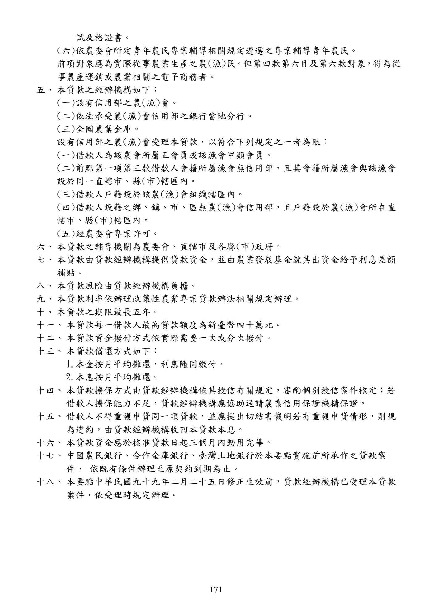
展開查看PDF原始文字層
試及格證書。 (六)依農委會所定青年農民專案輔導相關規定遴選之專案輔導青年農民。 前項對象應為實際從事農業生產之農(漁)民 。 但第四款第六目及第六款對象 ， 得為從 事農產運銷或農業相關之電子商務者。 五、 本貸款之經辦機構如下： (一)設有信用部之農(漁)會。 (二)依法承受農(漁)會信用部之銀行當地分行。 (三)全國農業金庫。 設有信用部之農(漁)會受理本貸款，以符合下列規定之一者為限： (一)借款人為該農會所屬正會員或該漁會甲類會員。 (二)前點第一項第三款借款人會籍所屬漁會無信用部，且其會籍所屬漁會與該漁會 設於同一直轄市、縣(市)轄區內。 (三)借款人戶籍設於該農(漁)會組織轄區內。 (四)借款人設籍之鄉、鎮、市、區無農(漁)會信用部，且戶籍設於農(漁)會所在直 轄市、縣(市)轄區內。 (五)經農委會專案許可。 六、 本貸款之輔導機關為農委會、直轄市及各縣(市)政府。 七、 本貸款由貸款經辦機構提供貸款資金，並由農業發展基金就其出資金給予利息差額 補貼。 八、 本貸款風險由貸款經辦機構負擔。 九、 本貸款利率依辦理政策性農業專案貸款辦法相關規定辦理。 十、 本貸款之期限最長五年。 十一、 本貸款每一借款人最高貸款額度為新臺幣四十萬元。 十二、 本貸款資金撥付方式依實際需要一次或分次撥付。 十三、 本貸款償還方式如下： 1.本金按月平均攤還，利息隨同繳付。 2.本息按月平均攤還。 十四、 本貸款擔保方式由貸款經辦機構依其授信有關規定，審酌個別授信案件核定；若 借款人擔保能力不足，貸款經辦機構應協助送請農業信用保證機構保證。 十五、 借款人不得重複申貸同一項貸款，並應提出切結書載明若有重複申貸情形，則視 為違約，由貸款經辦機構收回本貸款本息。 十六、 本貸款資金應於核准貸款日起三個月內動用完畢。 十七、 中國農民銀行、合作金庫銀行、臺灣土地銀行於本要點實施前所承作之貸款案 件， 依既有條件辦理至原契約到期為止。 十八、 本要點中華民國九十九年二月二十五日修正生效前，貸款經辦機構已受理本貸款 案件，依受理時規定辦理。
手冊頁：172 PDF頁：174／359
{kind=link}
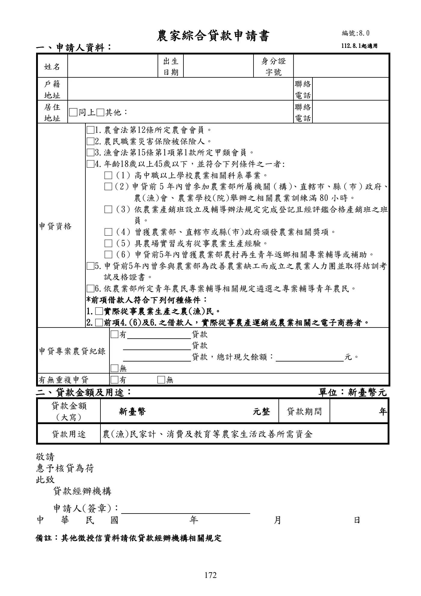
展開查看PDF原始文字層
112.8.1起適用
編號:8.0 農家綜合貸款申請書
一、申請人資料：
姓名 出生
日期
身分證
字號
戶籍
地址 聯絡
電話
居住
地址 □同上□其他： 聯絡
電話
申貸資格
□1.農會法第12條所定農會會員。
□2.農民職業災害保險被保險人。
□3.漁會法第15條第1項第1款所定甲類會員。
□4.年齡18歲以上45歲以下，並符合下列條件之一者:
□（1）高中職以上學校農業相關科系畢業。
□（2）申貸前 5 年內曾參加農業部所屬機關 （構） 、直轄市、縣 （市） 政府、
農(漁)會、農業學校(院)舉辦之相關農業訓練滿 80 小時。
□（3）依農業產銷班設立及輔導辦法規定完成登記且經評鑑合格產銷班之班
員。
□（4）曾獲農業部、直轄市或縣(市)政府頒發農業相關獎項。
□（5）具農場實習或有從事農業生產經驗。
□（6）申貸前5年內曾獲農業部農村再生青年返鄉相關專案輔導或補助。
□5.申貸前5年內曾參與農業部為改善農業缺工而成立之農業人力團並取得結訓考
試及格證書。
□6.依農業部所定青年農民專案輔導相關規定遴選之專案輔導青年農民。
*前項借款人符合下列何種條件：
1.□實際從事農業生產之農(漁)民。
2.□前項4.(6)及6.之借款人，實際從事農產運銷或農業相關之電子商務者。
申貸專案農貸紀錄
□有 貸款
貸款
貸款，總計現欠餘額： 元。
□無
有無重複申貸 □有 □無
二、貸款金額及用途： 單位：新臺幣元
貸款金額
(大寫) 新臺幣 元整 貸款期間 年
貸款用途 農(漁)民家計、消費及教育等農家生活改善所需資金
敬請
惠予核貸為荷
此致
貸款經辦機構
申請人(簽章)：
中 華 民 國 年 月 日
備註：其他徵授信資料請依貸款經辦機構相關規定手冊頁：173 PDF頁：175／359

展開查看PDF原始文字層
審查表（以下由貸款經辦機構填寫） 一、以下審查內容如有任一勾選「否」者，不符申貸資格。 審查內容 是 否 符合該項專案農貸之貸款對象規定？ 二、以下審查內容如有任一勾選「有」者，不符申貸資格。 審查內容 有 無 1.有無重複申貸? 2.有無逾申貸餘額上限? 三、檢核文件，如疏漏應予補正(如前揭不符申貸資格，免附)： 檢核文件 是 否 1.申請人已檢具切結書（重複申貸、逾申貸餘額上限、違法之情事， 或未依貸款用途運用、未實際經營、屆期未補正登記證、營運許可 證等文件，或其他未符農業發展基金貸款之相關規定者，貸款應予 收回）? 2.申請人為申貸資格4.至6.者，應檢具下列任一符合申貸資格之相關 登記或證明文件？ □（1）高中職以上學校農業相關科系畢業證書。 □（2） 申貸前5 年內農業部所屬機關 （構） 、直轄市、縣 （市） 政府、農(漁) 會、農業學校(院)舉辦之相關農業訓練滿80 小時之證明文件。 □（3）產銷班班員證明文件。 □（4）農業部、直轄市或縣(市)政府頒發農業相關獎項文件。 □（5）農場實習或有從事農業生產經驗相關證明文件。 □（6）申貸前5 年內獲農業部農村再生青年返鄉相關專案輔導或助文件。 □（7）申貸前5 年內農業人力團之結訓考試及格證書。 □（8）青年農民專案輔導相關規定遴選之專案輔導青年農民證明文件。 3.以農會正會員、漁會甲類會員或農民職業災害保險被保險人資格申 貸者，於相關會務或保險查詢系統查證其仍具資格，並將查證結果 相關資料併存於徵信文件？（農會受理漁會甲類會員及漁會受理非 該會甲類會員申辦本貸款，得選擇依下列例外情形辦理） □例外情形：農會受理漁會甲類會員及漁會受理非該會甲類會員申 辦本貸款，已同時檢具下列證件佐證： (1)漁會甲類會員證。 (2)申貸當月之「區漁會勞保薪資異動繳費清單」或向勞工保險 局查調之「勞工保險異動查詢資料」 （投保單位名稱須為區 漁會且保險證號前3碼須為030）。 *撥貸後6個月內，農（漁）會須再向借款人徵提下列證件之 一，屆期未補正，或資料顯示借款人不具甲類會員資格，應收
手冊頁：174 PDF頁：176／359
經辦人員 覆核 主任、襄(副)理 總幹事、經理
註：以上簽章人員請註明日期。 回其貸款，農（漁）會已請領之利息差額補貼應繳還農業部： (1)撥貸後1至6個月間查調之「勞工保險異動查詢資料」 ，比對 借款人是否仍具甲類會員資格。 (2)借款人會員資格所屬漁會核發之甲類會員資格證明。
審查結果: □符合，審查合格者不代表准予核貸，尚須依徵授信程序審查。 □不符，說明:
查看PDF原始文字層
經辦人員 覆核 主任、襄(副)理 總幹事、經理
註：以上簽章人員請註明日期。
回其貸款，農（漁）會已請領之利息差額補貼應繳還農業部：
(1)撥貸後1至6個月間查調之「勞工保險異動查詢資料」 ，比對
借款人是否仍具甲類會員資格。
(2)借款人會員資格所屬漁會核發之甲類會員資格證明。
審查結果: □符合，審查合格者不代表准予核貸，尚須依徵授信程序審查。
□不符，說明:手冊頁：175 PDF頁：177／359
函令摘要：關於○○鄉農會所詢辦理農家綜合貸款疑義案 【行政院農業委員會93年11月3日農授金字第0935016451號函】 主旨 ： 關於 貴轄○○鄉農會所詢辦理農家綜合貸款疑義案 ， 復如說明 ， 請 查照並轉知 。 說明： 一、 依據 貴轄○○農會93年10月28日○○字第1727號函(影本如附)辦理。 二、 有關借款人可否以其已提供擔保之房屋為其配偶申辦旨揭貸款之擔保品 ， 以及同一筆 土地可否同時為數人辦理旨揭貸款之擔保品問題，依農家綜合貸款要點第8點第(六) 款前段規定，貸款之擔保方式，係由貸款經辦機構依照其授信有關規定，審酌個別授 信案件核定。如該農會內部授信規範並未禁止或限制，應可受理，惟應注意農業金融 法第33條準用銀行法第33條之4規定。 函令摘要：農會正會員是否包括同戶家屬 【行政院農業委員會農業金融局95年1月9日農金三字第0955010082號函】 主旨：所謂農會正會員是否包括同戶家屬？ 敬啟者： 台端95年1月3日致本局電子信箱郵件誦悉 。 所詢政策性專案農貸相關問題 ， 敬復如下 ： 農家綜合貸款要點及改善財務貸款要點所稱農會正會員，並不包含同戶家屬，其同戶 家屬若有農保被保險人資格，即可依規定申請該二項貸款；若尚有疑問，歡迎以免付 費電話0800-388-599向本局洽詢。 函令摘要： 釋示利害關係人申辦農家綜合貸款者 ，是否適用 「農會漁會信 用部各項風險控制比率管理辦法」第6條第1項但書規定 【行政院農業委員會96年7月26日農金字第0965080266號函】 主旨：「農會漁會信用部各項風險控制比率管理辦法」第6條修正條文，業經本會於中華 民國96年7月26日以農金字第0965080263號令修正發布，茲檢附發布令（含法規條 文）1份，請 查照。 說明：現行政策性農業專案貸款項下之農家綜合貸款，其性質係屬消費性貸款，故農會漁 會信用部對於利害關係人申辦農家綜合貸款者 ， 自得適用旨揭辦法第6條第1項但書 規定，併予指明。
查看PDF原始文字層
函令摘要：關於○○鄉農會所詢辦理農家綜合貸款疑義案
【行政院農業委員會93年11月3日農授金字第0935016451號函】
主旨 ： 關於 貴轄○○鄉農會所詢辦理農家綜合貸款疑義案 ， 復如說明 ， 請 查照並轉知 。
說明：
一、 依據 貴轄○○農會93年10月28日○○字第1727號函(影本如附)辦理。
二、 有關借款人可否以其已提供擔保之房屋為其配偶申辦旨揭貸款之擔保品 ， 以及同一筆
土地可否同時為數人辦理旨揭貸款之擔保品問題，依農家綜合貸款要點第8點第(六)
款前段規定，貸款之擔保方式，係由貸款經辦機構依照其授信有關規定，審酌個別授
信案件核定。如該農會內部授信規範並未禁止或限制，應可受理，惟應注意農業金融
法第33條準用銀行法第33條之4規定。
函令摘要：農會正會員是否包括同戶家屬
【行政院農業委員會農業金融局95年1月9日農金三字第0955010082號函】
主旨：所謂農會正會員是否包括同戶家屬？
敬啟者：
台端95年1月3日致本局電子信箱郵件誦悉 。 所詢政策性專案農貸相關問題 ， 敬復如下 ：
農家綜合貸款要點及改善財務貸款要點所稱農會正會員，並不包含同戶家屬，其同戶
家屬若有農保被保險人資格，即可依規定申請該二項貸款；若尚有疑問，歡迎以免付
費電話0800-388-599向本局洽詢。
函令摘要： 釋示利害關係人申辦農家綜合貸款者 ，是否適用 「農會漁會信
用部各項風險控制比率管理辦法」第6條第1項但書規定
【行政院農業委員會96年7月26日農金字第0965080266號函】
主旨：「農會漁會信用部各項風險控制比率管理辦法」第6條修正條文，業經本會於中華
民國96年7月26日以農金字第0965080263號令修正發布，茲檢附發布令（含法規條
文）1份，請 查照。
說明：現行政策性農業專案貸款項下之農家綜合貸款，其性質係屬消費性貸款，故農會漁
會信用部對於利害關係人申辦農家綜合貸款者 ， 自得適用旨揭辦法第6條第1項但書
規定，併予指明。手冊頁：176 PDF頁：178／359
函令摘要：農家綜合貸款及農業天然災害低利貸款借款人死亡 ， 其配偶申 請繼受該等貸款債務疑義案 【行政院農業委員會95年4月28日農授金字第0955012200號函】 主旨：有關貴轄○○農會農家綜合貸款及農業天然災害低利貸款借款人○○君死亡，其配 偶申請繼受該等貸款債務疑義案，復如說明，請查照轉知並督導該農會辦理。 說明： 一、依據本會農業金融局案陳○○農會○年○月○日○○字第○○○○○號函辦理。 二、依民法第1148條：「繼承人自繼承開始時，除本法另有規定外，承受被繼承人財產上 之一切權利、義務。但權利、義務專屬於被繼承人本身者，不在此限。」是以政策性 農業專案貸款之主債務人死亡時 ， 請貴府督導該農會依貸款契約約定及前揭民法規定 處理如下： （一）若貸款契約有主債務人死亡時，該筆借款視為全部到期等相類似之約定，且繼 承人未拋棄繼承者，則由其負清償該筆全部到期借款之義務。 （二）若貸款契約無前揭情形，繼承人即以原貸款條件於原契約期間繼承並繼續清償 該筆借款債務。 函令摘要：農會正會員且領有固定薪資收入及農會員工為農會正會員可 否申貸農家綜合貸款 【行政院農業委員會農業金融局96年8月20日農金三字第0965014247號函】 主旨 ： 農會正會員且領有固定薪資收入及農會員工為農會正會員可否申貸農家綜合貸款？ 敬啟者： 台端96年8月14日致本局電子信箱郵件誦悉 。 所詢農家綜合貸款相關問題 ， 敬復如下 ： 一、政策性農業專案貸款之目的在協助農（漁）民取得農業經營所需資金及改善其生活， 農委會並就各項貸款分別訂定要點規範對象 、 資格 、 條件 。 農家綜合貸款要點第4點明 定，借款人為具有農會正會員、農保被保險人或漁會甲類會員之農（漁）民。為確保 貸款效益，經辦機構受理該項貸款案件，除依前開規定條件外，並應就借款人是否實 際從事合於各資格條件之農（漁）業勞動，覈實審核認定，合先敘明。 二、所詢有關農家綜合貸款借款人資格問題，悉依前揭要點及相關規定，視貸款個案狀況 核實認定之。台端如尚有相關貸款問題，歡迎撥打免付費電話 （0800-388-599)，由本 局專人為您服務。
查看PDF原始文字層
函令摘要：農家綜合貸款及農業天然災害低利貸款借款人死亡 ， 其配偶申
請繼受該等貸款債務疑義案
【行政院農業委員會95年4月28日農授金字第0955012200號函】
主旨：有關貴轄○○農會農家綜合貸款及農業天然災害低利貸款借款人○○君死亡，其配
偶申請繼受該等貸款債務疑義案，復如說明，請查照轉知並督導該農會辦理。
說明：
一、依據本會農業金融局案陳○○農會○年○月○日○○字第○○○○○號函辦理。
二、依民法第1148條：「繼承人自繼承開始時，除本法另有規定外，承受被繼承人財產上
之一切權利、義務。但權利、義務專屬於被繼承人本身者，不在此限。」是以政策性
農業專案貸款之主債務人死亡時 ， 請貴府督導該農會依貸款契約約定及前揭民法規定
處理如下：
（一）若貸款契約有主債務人死亡時，該筆借款視為全部到期等相類似之約定，且繼
承人未拋棄繼承者，則由其負清償該筆全部到期借款之義務。
（二）若貸款契約無前揭情形，繼承人即以原貸款條件於原契約期間繼承並繼續清償
該筆借款債務。
函令摘要：農會正會員且領有固定薪資收入及農會員工為農會正會員可
否申貸農家綜合貸款
【行政院農業委員會農業金融局96年8月20日農金三字第0965014247號函】
主旨 ： 農會正會員且領有固定薪資收入及農會員工為農會正會員可否申貸農家綜合貸款？
敬啟者：
台端96年8月14日致本局電子信箱郵件誦悉 。 所詢農家綜合貸款相關問題 ， 敬復如下 ：
一、政策性農業專案貸款之目的在協助農（漁）民取得農業經營所需資金及改善其生活，
農委會並就各項貸款分別訂定要點規範對象 、 資格 、 條件 。 農家綜合貸款要點第4點明
定，借款人為具有農會正會員、農保被保險人或漁會甲類會員之農（漁）民。為確保
貸款效益，經辦機構受理該項貸款案件，除依前開規定條件外，並應就借款人是否實
際從事合於各資格條件之農（漁）業勞動，覈實審核認定，合先敘明。
二、所詢有關農家綜合貸款借款人資格問題，悉依前揭要點及相關規定，視貸款個案狀況
核實認定之。台端如尚有相關貸款問題，歡迎撥打免付費電話 （0800-388-599)，由本
局專人為您服務。手冊頁：177 PDF頁：179／359
函令摘要：辦理農家綜合貸款，應覈實評估借款人同戶多人申貸之家戶 綜合風險承擔能力及一借再借者之還款能力 【行政院農業委員會 102 年 4 月23 日農授金字第 1025080161 號函】 主旨：為健全「農家綜合貸款(下稱本貸款)」授信品質，降低授信風險，請貴會確實依 說明辦理，請查照。 說明：借款人申貸本貸款如有同戶多人申貸或有將已償還之部分貸款額度一借再借，使其 本貸款餘額維持最高貸款額度之情形 ， 均易使授信風險增加 。 請貴會辦理該類案件 ， 應覈實評估借款人同戶多人申貸之家戶綜合風險承擔能力及一借再借者之還款能力。
查看PDF原始文字層
函令摘要：辦理農家綜合貸款，應覈實評估借款人同戶多人申貸之家戶 綜合風險承擔能力及一借再借者之還款能力 【行政院農業委員會 102 年 4 月23 日農授金字第 1025080161 號函】 主旨：為健全「農家綜合貸款(下稱本貸款)」授信品質，降低授信風險，請貴會確實依 說明辦理，請查照。 說明：借款人申貸本貸款如有同戶多人申貸或有將已償還之部分貸款額度一借再借，使其 本貸款餘額維持最高貸款額度之情形 ， 均易使授信風險增加 。 請貴會辦理該類案件 ， 應覈實評估借款人同戶多人申貸之家戶綜合風險承擔能力及一借再借者之還款能力。
手冊頁：178 PDF頁：180／359
農漁會事業發展貸款要點 中華民國 91 年 8 月 16 日行政院農業委員會農輔字第 0910050760 號函訂定 中華民國 92 年 7 月 15 日行政院農業委員會農輔字第 0920050772 號令修正 中華民國 93 年 4 月 30 日行政院農業委員會農授金字第 0935080004 號令修正 中華民國 94 年 2 月 22 日行政院農業委員會農授金字第 0945080059 號令修正 中華民國 94 年 10 月 17 日行政院農業委員會農授金字第 0945080489 號令修訂第 5 點規 定 中華民國94 年12 月30 日行政院農業委員會農授金字第0945080617 號令修正 中華民國 96 年 12 月 7 日行政院農業委員會農金字第 0965080445 號令修正第 7 點規定， 並自 96 年 7 月 1 日生效 中華民國 97 年 11 月 5 日行政院農業委員會農金字第 0975080375 號令修正 中華民國 98 年 6 月 25 日行政院農業委員會農金字第 0985080320 號令修正 中華民國 98 年 7 月 24 日行政院農業委員會農金字第 0985080364 號令修正 中華民國 102 年 4 月 26 日行政院農業委員會農金字第 1025080174 號令修正 中華民國 105 年 3 月 18 日行政院農業委員會農金字第 1055084021I 號令修正第 7 點、第 9 點規定，並自 105 年 3 月 22 日生效 一、 行政院農業委員會(以下簡稱農委會)為協助農(漁)會發展事業 ， 提昇競爭能力 ， 以發 揮服務農(漁)民之專業功能，特訂定本要點。 二、 農漁會事業發展貸款除依辦理政策性農業專案貸款辦法辦理外 ， 依本要點規定辦理。 本要點未規定者，依農業發展基金貸款作業規範及其他有關規定辦理。 三、 本貸款之對象為各級農(漁)會。 四、 本貸款之用途為促進農(漁)會事業發展 、 經營管理改善或經農委會核定之促進民間參 與公共建設案之資本支出及週轉金。 五、 本貸款經辦機構為設有信用部之農(漁)會及全國農業金庫。 本貸款不得以農(漁)會內部融資方式或農(漁)會間交互授信方式辦理 。 但本貸款申貸 案件於本要點中華民國九十八年六月二十五日修正生效前已送達直轄市或縣(市)政 府者，不受不得以農(漁)會間交互授信方式辦理之限制。 前項所稱交互授信，指申貸農(漁)會與經辦農(漁)會有下列情形之一者： (一)申貸農(漁)會貸予經辦農(漁)會本貸款 ， 而經辦農(漁)會於尚未清償前 ， 對申貸 農(漁)會貸予本貸款。 (二)申貸農(漁)會對經辦農(漁)會以外之他農(漁)會貸予本貸款，該他農(漁)會又 對經辦農(漁)會貸予本貸款，而經辦農(漁)會於前開貸款尚未清償前，對申貸 農(漁)會貸予本貸款。 (三)四家以上農(漁)會間有前款接續貸款之情形。 六、 本貸款之輔導機關為農委會暨其所屬農業試驗改良場(所)、 直轄市及各縣(市)政府。 七、 本貸款由貸款經辦機構提供貸款資金 ， 並由農業發展基金就其出資金給予利息差額補 貼。
查看PDF原始文字層
農漁會事業發展貸款要點 中華民國 91 年 8 月 16 日行政院農業委員會農輔字第 0910050760 號函訂定 中華民國 92 年 7 月 15 日行政院農業委員會農輔字第 0920050772 號令修正 中華民國 93 年 4 月 30 日行政院農業委員會農授金字第 0935080004 號令修正 中華民國 94 年 2 月 22 日行政院農業委員會農授金字第 0945080059 號令修正 中華民國 94 年 10 月 17 日行政院農業委員會農授金字第 0945080489 號令修訂第 5 點規 定 中華民國94 年12 月30 日行政院農業委員會農授金字第0945080617 號令修正 中華民國 96 年 12 月 7 日行政院農業委員會農金字第 0965080445 號令修正第 7 點規定， 並自 96 年 7 月 1 日生效 中華民國 97 年 11 月 5 日行政院農業委員會農金字第 0975080375 號令修正 中華民國 98 年 6 月 25 日行政院農業委員會農金字第 0985080320 號令修正 中華民國 98 年 7 月 24 日行政院農業委員會農金字第 0985080364 號令修正 中華民國 102 年 4 月 26 日行政院農業委員會農金字第 1025080174 號令修正 中華民國 105 年 3 月 18 日行政院農業委員會農金字第 1055084021I 號令修正第 7 點、第 9 點規定，並自 105 年 3 月 22 日生效 一、 行政院農業委員會(以下簡稱農委會)為協助農(漁)會發展事業 ， 提昇競爭能力 ， 以發 揮服務農(漁)民之專業功能，特訂定本要點。 二、 農漁會事業發展貸款除依辦理政策性農業專案貸款辦法辦理外 ， 依本要點規定辦理。 本要點未規定者，依農業發展基金貸款作業規範及其他有關規定辦理。 三、 本貸款之對象為各級農(漁)會。 四、 本貸款之用途為促進農(漁)會事業發展 、 經營管理改善或經農委會核定之促進民間參 與公共建設案之資本支出及週轉金。 五、 本貸款經辦機構為設有信用部之農(漁)會及全國農業金庫。 本貸款不得以農(漁)會內部融資方式或農(漁)會間交互授信方式辦理 。 但本貸款申貸 案件於本要點中華民國九十八年六月二十五日修正生效前已送達直轄市或縣(市)政 府者，不受不得以農(漁)會間交互授信方式辦理之限制。 前項所稱交互授信，指申貸農(漁)會與經辦農(漁)會有下列情形之一者： (一)申貸農(漁)會貸予經辦農(漁)會本貸款 ， 而經辦農(漁)會於尚未清償前 ， 對申貸 農(漁)會貸予本貸款。 (二)申貸農(漁)會對經辦農(漁)會以外之他農(漁)會貸予本貸款，該他農(漁)會又 對經辦農(漁)會貸予本貸款，而經辦農(漁)會於前開貸款尚未清償前，對申貸 農(漁)會貸予本貸款。 (三)四家以上農(漁)會間有前款接續貸款之情形。 六、 本貸款之輔導機關為農委會暨其所屬農業試驗改良場(所)、 直轄市及各縣(市)政府。 七、 本貸款由貸款經辦機構提供貸款資金 ， 並由農業發展基金就其出資金給予利息差額補 貼。
手冊頁：179 PDF頁：181／359

展開查看PDF原始文字層
八、 本貸款風險由貸款經辦機構承擔。 九、 本貸款利率依辦理政策性農業專案貸款辦法相關規定辦理。 十、 本貸款期限依貸款額度及購置設備耐用年限覈實貸放 ， 其中資本支出最長十五年 ， 週 轉金最長三年。 十一、 每一農(漁)會單一貸款案件最高貸款額度為新臺幣五千萬元，貸款餘額最高以新 臺幣八千萬元為限。但情形特殊，報經農委會專案同意者，不在此限。 農(漁)會辦理前項單一貸款案件貸款金額超過新臺幣三千萬元者，應與全國農業 金庫以聯貸方式辦理；其聯貸方式由雙方協議約定之。 十二、 本貸款由貸款經辦機構按核定之貸款經營計畫撥付之 ， 其屬資本支出性質者 ， 應按 計畫執行進度核實撥付 ， 借款農(漁)會應檢具足資佐證支出金額 、 流向及運用情形 之相關憑證。 十三、 本貸款償還方式如下： (一)資本支出： 1. 本金以每半年一期平均攤還為原則，利息隨同繳付。 2. 本金得酌訂寬緩期限。但最長不得超過三年。 (二)週轉金：本金以每半年一期平均攤還為原則，利息隨同繳付。 前項本息攤還方式得由借貸雙方以契約另定之。但不得超過農委會所定之最長 期限。 十四、 本貸款擔保方式由貸款經辦機構依其授信有關規定 ， 審酌個別授信案件核定 ； 若借 款農(漁)會擔保能力不足，貸款經辦機構應協助送請農業信用保證機構保證。 十五、 農(漁)會申貸本貸款時 ， 應經其理事會決議通過 ， 並送請直轄市或縣(市)政府核定 ， 始得申辦 。 但其貸款金額為資本支出超過新臺幣三千萬元或週轉金超過新臺幣二千 萬元者，直轄市或縣(市)政府應提供審核意見轉請農委會核定。 十六、 本貸款辦理程序如下： (一) 借款農(漁)會應填具貸款申請書，檢附理事會決議文件，並依貸款金額檢附 直轄市、縣(市)政府或農委會之核定文件，向貸款經辦機構提出申請。 (二) 貸款經辦機構應將審核結果通知借款農(漁)會，並副知農委會及直轄市或縣 (市)政府。 (三) 貸款經辦機構必要時得洽請輔導機關提供協助及輔導。 經辦農(漁)會辦理本貸款 ， 應經其授信審議委員會及理事會審議通過 ， 並依前項第 二款及第三款規定辦理。 十七、 貸款經辦機構應於核貸後六個月內進行貸款用途查驗工作並作成書面紀錄 ； 其後貸 款存續期間，每年應至少辦理一次貸款用途查驗並作成書面紀錄。 十八、 本貸款有貸款用途不實或違反第五點第二項規定之情形者 ， 除由貸款經辦機構收回 本貸款外 ， 貸款經辦機構已請領本貸款之利息差額補貼應繳還農委會 ； 農委會並得 依農業金融法第三十三條準用銀行法第六十一條之一第一項第二款規定 ， 停止借款 農(漁)會及經辦農(漁)會辦理本貸款業務。 十九、 （刪除）
手冊頁：180 PDF頁：182／359
二十、 借款農(漁)會應於貸款經辦機構核准貸款日起六個月內動用完畢。 二十一、 本貸款申請展延，應由貸款經辦機構報請直轄市、縣（市）政府提供審核意見， 轉請農委會核定後始得為之；其資本支出及週轉金貸款之展延，各以一次為限。 但有下列各款情形之一者，不得申請展延： (一)經辦農(漁)會以內部融資方式辦理本貸款。 (二)經辦農(漁)會以交互授信方式辦理本貸款 ， 且展延之申請於本要點中華民國 九十八年六月二十五日修正生效後送達直轄市或縣(市）政府。 本貸款申請展延，不適用農業發展基金貸款作業規範第二十一點規定。 二十二、中國農民銀行、合作金庫銀行、臺灣土地銀行及設有信用部之農(漁)會於本要點 修正生效前所承作之貸款案件，依既有條件辦理至原契約到期為止。
查看PDF原始文字層
二十、 借款農(漁)會應於貸款經辦機構核准貸款日起六個月內動用完畢。
二十一、 本貸款申請展延，應由貸款經辦機構報請直轄市、縣（市）政府提供審核意見，
轉請農委會核定後始得為之；其資本支出及週轉金貸款之展延，各以一次為限。
但有下列各款情形之一者，不得申請展延：
(一)經辦農(漁)會以內部融資方式辦理本貸款。
(二)經辦農(漁)會以交互授信方式辦理本貸款 ， 且展延之申請於本要點中華民國
九十八年六月二十五日修正生效後送達直轄市或縣(市）政府。
本貸款申請展延，不適用農業發展基金貸款作業規範第二十一點規定。
二十二、中國農民銀行、合作金庫銀行、臺灣土地銀行及設有信用部之農(漁)會於本要點
修正生效前所承作之貸款案件，依既有條件辦理至原契約到期為止。手冊頁：181 PDF頁：183／359

展開查看PDF原始文字層
農漁會事業發展貸款申請書
一、申請人資料：
農(漁)
會名稱
統一
編號
設立
日期 年 月 日
地址 電話
理事長 總幹事
申貸農漁會事業
發展貸款紀錄
□有
年 月曾獲 核貸 萬元，餘額 萬元
年 月曾獲 核貸 萬元，餘額 萬元
年 月曾獲 核貸 萬元，餘額 萬元
總計貸款餘額： 元。
□無
申貸文件 □理事會決議文件
□直轄市、縣(市)政府或農業部核定文件
有無重複申貸 □有 □無
二、貸款金額及用途： 單位：新臺幣元
貸款金額
(大寫) 新臺幣 元整 貸款期間 資本支出 年
週轉金 年
貸款用途
□資本支出 金額__________________________
□週轉金 金額__________________________
＊針對資本支出貸款，借款農(漁)會貸後應檢具足資佐證支出金額、流向及運
用情形之相關憑證。申請人(簽章)：_____________________
其他
貸款金額超過3,000萬元者（如否以下免填） ，應與全國農業金庫聯貸，每一農
漁會參貸金額以3,000萬元為上限:
參貸機構：全國農業金庫 ;金額__________________________
參貸機構__________________________;金額__________________________
參貸機構__________________________;金額__________________________
敬請
惠予核貸為荷
此致
貸款經辦機構
申請人(簽章)：
中 華 民 國 年 月 日
備註：其他徵授信資料請依貸款經辦機構相關規定辦理
112.8.1起適用
編號:9手冊頁：182 PDF頁：184／359

展開查看PDF原始文字層
審查表（以下由貸款經辦機構填寫） 一、以下審查內容如有任一勾選「否」者，不符申貸資格。 審查內容 是 否 1.符合該項專案農貸之貸款對象規定？ 2.申請人申請之資金用途符合該貸款項目貸款用途規定？ 3.無以內部融資方式或交互授信方式辦理？ 4.農(漁)會申貸本貸款時，經理事會決議通過，並送請直轄市、縣 (市)政 府或農業部核定？ 5.資本支出貸款超過新臺幣3,000萬元或週轉金超過新臺幣2,000萬元者， 直轄市或縣(市)政府轉請農業部核定？ 6.單一貸款案件貸款金額超過新臺幣 3,000萬元，與全國農業金庫辦理聯 貸？ 二、以下審查內容如有任一勾選「有」者，不符申貸資格。 審查內容 有 無 1.有無重複申貸? 2.有無逾申貸餘額上限? 3.有無專案農貸不予核貸情事？ 三、檢核文件，如疏漏應予補正(如前揭不符申貸資格，免附)： 檢核文件 是 否 1.申請人已檢具切結書（重複申貸、逾申貸餘額上限、違法之情事，或未 依貸款用途運用、未實際經營、屆期未補正登記證、營運許可證等文件， 或其他未符農業發展基金貸款之相關規定者，貸款應予收回）? 2.申請人完整檢具相關登記、證明文件？ 審查結果: □符合，審查合格者不代表准予核貸，尚須依徵授信程序審查，並經授 信審議委員會審議。 □不符，說明: 經辦人員 覆核 主任、襄(副)理 總幹事、經理 註：以上簽章人員請註明日期。
手冊頁：183 PDF頁：185／359
函令摘要： 「農漁會事業發展貸款要點」第21 點有關申請展延規定 【行政院農業委員會97年11月13日農授金字第0975080401號函】 主旨：「農漁會事業發展貸款要點」第21點有關申請展延規定，補充如說明二、三，請查 照。 說明： 一、申請本貸款之展延，應由貸款經辦機構核轉本會核定。 二、借款農（漁）會向原貸款經辦機構提出本貸款展延申請時，應具體說明其貸款現況及 申請展延之原因，包括計畫執行情形、還款狀況、貸款餘額及還款困難事由，並檢附 下列資料，俾利審核： （一）本貸款前經本會或直轄市、縣（市）政府核定文件及計畫書。 （二）最近1年經濟事業報告及經濟事業損益決算。 （三）展延期間需求及償還計畫。 三、經辦農（漁）會受理本貸款展延案件，經審查後循行政程序報請直轄市、縣（市）政 府核轉本會核定。 函令摘要：有關申請「農漁會事業發展貸款」展延案疑義 【行政院農業委員會98年3月25日農授金字第0985080132號函】 主旨：有關申請農漁會事業發展貸款展延案，請依說明辦理，請查照。 說明： 一、依旨揭貸款要點第21點規定，本貸款申請展延，應由貸款經辦機構核轉本會核定。為 利農（漁）會申辦作業，提高審核效率，本會業於 97年11月13日以農授金字第 0975080401號函（諒達）補充說明申請展延應檢附文件及資料等事宜，合先敘明。 二、本貸款展延案件對於原授信約定之期限已有變更，為期審慎，該展延案應經借、貸雙 方之理事會決議通過。嗣後經辦之農（漁）會辦理本貸款展延案件，應檢附借、貸雙 方理事會有關本展延案決議通過之會議紀錄，併前開應檢附文件及資料，循行政程序 報請直轄市、縣（市）政府核轉本會核定。
查看PDF原始文字層
函令摘要： 「農漁會事業發展貸款要點」第21 點有關申請展延規定 【行政院農業委員會97年11月13日農授金字第0975080401號函】 主旨：「農漁會事業發展貸款要點」第21點有關申請展延規定，補充如說明二、三，請查 照。 說明： 一、申請本貸款之展延，應由貸款經辦機構核轉本會核定。 二、借款農（漁）會向原貸款經辦機構提出本貸款展延申請時，應具體說明其貸款現況及 申請展延之原因，包括計畫執行情形、還款狀況、貸款餘額及還款困難事由，並檢附 下列資料，俾利審核： （一）本貸款前經本會或直轄市、縣（市）政府核定文件及計畫書。 （二）最近1年經濟事業報告及經濟事業損益決算。 （三）展延期間需求及償還計畫。 三、經辦農（漁）會受理本貸款展延案件，經審查後循行政程序報請直轄市、縣（市）政 府核轉本會核定。 函令摘要：有關申請「農漁會事業發展貸款」展延案疑義 【行政院農業委員會98年3月25日農授金字第0985080132號函】 主旨：有關申請農漁會事業發展貸款展延案，請依說明辦理，請查照。 說明： 一、依旨揭貸款要點第21點規定，本貸款申請展延，應由貸款經辦機構核轉本會核定。為 利農（漁）會申辦作業，提高審核效率，本會業於 97年11月13日以農授金字第 0975080401號函（諒達）補充說明申請展延應檢附文件及資料等事宜，合先敘明。 二、本貸款展延案件對於原授信約定之期限已有變更，為期審慎，該展延案應經借、貸雙 方之理事會決議通過。嗣後經辦之農（漁）會辦理本貸款展延案件，應檢附借、貸雙 方理事會有關本展延案決議通過之會議紀錄，併前開應檢附文件及資料，循行政程序 報請直轄市、縣（市）政府核轉本會核定。
手冊頁：184 PDF頁：186／359
函令摘要：有關「農漁會事業發展貸款」可否用於農（漁）會重設信用 部之事業資金疑義 【行政院農業委員會98年4月8日農授金字第0980117936號函】 主旨：有關「農漁會事業發展貸款」可否用於農（漁）會重設信用部之事業資金疑義，復 如說明，請查照。 說明： 一、復貴府98年3月26日府農輔字第0980091922號函。 二、農(漁)會信用部事業資金係屬淨值性質，應以農（漁）會自有資金籌措；旨揭貸款之 用途為促進農(漁)會事業發展 、 經營管理改善或經本會核定之促進民間參與公共建設 案之資本支出及週轉金，不含撥充農（漁）會重設信用部之事業資金用途。
函令摘要： 「農漁會事業發展貸款」要點第15點有關縣（市）政府應如何 核定貸款釋義案 【行政院農業委員會98年4月15日農授金字第098508186號函】 主旨：關於所詢縣（市）政府應如何核定農漁會事業發展貸款案，復如說明，請查照。 說明： 一、 復貴府 98 年 4 月 6 日府農輔字第 098006637lA 號函。 二、 依「農漁會事業發展貸款要點」第 15 點規定，農（漁）會申貸本貸款時，應經其理 事會決議通過，並將其貸款計畫書送請直轄市或縣 （市） 政府核定或核轉本會。各縣 （市） 政府應就該計畫是否符合農業施政方向及該農 （漁） 會業務發展需要、資金用 途及需求是否符合實際 、 該計畫之可行性等事項進行審核 ， 如超過貸款金額須核轉本 會者，並應提供初審意見。
函令摘要：釋示「農漁會事業發展貸款要點」第11點第2項規定有關聯貸 金額疑義案 【行政院農業委員會105年6月15日農授金字第1055011287A號函】 主旨： 「農漁會事業發展貸款要點」 第11點第2項規定有關聯貸金額疑義， 釋示如說明二， 請查照。 說明： 一、 旨揭要點第11點第2項規定，農 （漁） 會辦理單一貸款案件貸款金額超過新臺幣3千萬 元者，應與全國農業金庫以聯貸方式辦理。 二、 旨揭貸款以聯貸方式辦理者 ， 單一農 （漁） 會最高承作金額為3千萬元， 但情形特殊， 報經本會專案同意者，不在此限。參貸農（漁）會合計承作金額、相關管理程序及費 用，由主辦及參貸機構協議約定之。 三、 本會105年3月10日農授金字第1055010481A號函停止適用。
查看PDF原始文字層
函令摘要：有關「農漁會事業發展貸款」可否用於農（漁）會重設信用 部之事業資金疑義 【行政院農業委員會98年4月8日農授金字第0980117936號函】 主旨：有關「農漁會事業發展貸款」可否用於農（漁）會重設信用部之事業資金疑義，復 如說明，請查照。 說明： 一、復貴府98年3月26日府農輔字第0980091922號函。 二、農(漁)會信用部事業資金係屬淨值性質，應以農（漁）會自有資金籌措；旨揭貸款之 用途為促進農(漁)會事業發展 、 經營管理改善或經本會核定之促進民間參與公共建設 案之資本支出及週轉金，不含撥充農（漁）會重設信用部之事業資金用途。 函令摘要： 「農漁會事業發展貸款」要點第15點有關縣（市）政府應如何 核定貸款釋義案 【行政院農業委員會98年4月15日農授金字第098508186號函】 主旨：關於所詢縣（市）政府應如何核定農漁會事業發展貸款案，復如說明，請查照。 說明： 一、 復貴府 98 年 4 月 6 日府農輔字第 098006637lA 號函。 二、 依「農漁會事業發展貸款要點」第 15 點規定，農（漁）會申貸本貸款時，應經其理 事會決議通過，並將其貸款計畫書送請直轄市或縣 （市） 政府核定或核轉本會。各縣 （市） 政府應就該計畫是否符合農業施政方向及該農 （漁） 會業務發展需要、資金用 途及需求是否符合實際 、 該計畫之可行性等事項進行審核 ， 如超過貸款金額須核轉本 會者，並應提供初審意見。 函令摘要：釋示「農漁會事業發展貸款要點」第11點第2項規定有關聯貸 金額疑義案 【行政院農業委員會105年6月15日農授金字第1055011287A號函】 主旨： 「農漁會事業發展貸款要點」 第11點第2項規定有關聯貸金額疑義， 釋示如說明二， 請查照。 說明： 一、 旨揭要點第11點第2項規定，農 （漁） 會辦理單一貸款案件貸款金額超過新臺幣3千萬 元者，應與全國農業金庫以聯貸方式辦理。 二、 旨揭貸款以聯貸方式辦理者 ， 單一農 （漁） 會最高承作金額為3千萬元， 但情形特殊， 報經本會專案同意者，不在此限。參貸農（漁）會合計承作金額、相關管理程序及費 用，由主辦及參貸機構協議約定之。 三、 本會105年3月10日農授金字第1055010481A號函停止適用。
手冊頁：185 PDF頁：187／359
造林貸款要點 中華民國 97 年 5 月 26 日行政院農業委員會農金字第 0975080139 號令訂定 中華民國 98 年 3 月 5 日行政院農業委員會農金字第 0985080103 號令修正 中華民國 102 年 4 月 26 日行政院農業委員會農金字第 1025080176 號令修正 中華民國 105 年 1 月 22 日行政院農業委員會農金字第 1055084031D 號令修正，並自 105 年 1 月 23 日生效 中華民國 105 年 3 月 18 日行政院農業委員會農金字第 1055084021J 號令修正第 9 點，並 自 105 年 3 月 22 日生效 中華民國109 年2 月27 日行政院農業委員會農授金字第1095084100G 號令修正第15 點， 並自 109 年 3 月 1 日生效 一、 行政院農業委員會(以下簡稱本會)為獎勵私人或農民團體造林 ， 發揮森林公益及經濟 效用，特訂定本要點。 二、 造林貸款除依辦理政策性農業專案貸款辦法辦理外，依本要點規定辦理。本要點未規 定者，依農業發展基金貸款作業規範及其他有關規定辦理。 三、 本貸款之對象為實際從事造林，且符合下列條件之ㄧ者： (一) 私有土地之所有權人或農育權人。 (二) 土地共有人、承租人或農育權人： 1. 無分管協議書者，以土地共有人、承租人或農育權人之一為借款人，其餘 為連帶債務人。 2. 持有分管協議書者，各土地共有人、承租人或農育權人得為個別借款人。 (三) 原住民保留地之所有人或具原住民身分之原住民保留地合法使用人。 (四) 農民團體。 四、 本貸款之用途如下： (一) 造林地新植 ： 林齡未達一年之土地所需整地 、 新植及施肥等資本支出及週轉金。 (二) 造林地撫育：林齡一年以上未達六年之土地所需補植、刈草、除蔓及施肥等資 本支出及週轉金。 (三) 造林地管理：林齡六年以上二十年以下之土地所需修枝、除蔓、疏伐、擇伐、 間伐及病蟲害防治等資本支出及週轉金。 五、 本貸款之經辦機構如下： (一) 設有信用部之農（漁）會。 (二) 依法承受農（漁）會信用部之銀行當地分行。 (三) 全國農業金庫。 六、 本貸款之輔導機關為本會及本會林務局。 七、 本貸款由貸款經辦機構提供貸款資金 ， 並由農業發展基金就其出資金給予利息差額補 貼。 八、 本貸款風險由貸款經辦機構負擔。 九、 本貸款利率依辦理政策性農業專案貸款辦法相關規定辦理。 十、 本貸款期限依貸款用途及林木生長期覈實貸放，其貸款期限如下： (一) 造林地新植，資本支出最長二十年，週轉金最長五年。
查看PDF原始文字層
造林貸款要點 中華民國 97 年 5 月 26 日行政院農業委員會農金字第 0975080139 號令訂定 中華民國 98 年 3 月 5 日行政院農業委員會農金字第 0985080103 號令修正 中華民國 102 年 4 月 26 日行政院農業委員會農金字第 1025080176 號令修正 中華民國 105 年 1 月 22 日行政院農業委員會農金字第 1055084031D 號令修正，並自 105 年 1 月 23 日生效 中華民國 105 年 3 月 18 日行政院農業委員會農金字第 1055084021J 號令修正第 9 點，並 自 105 年 3 月 22 日生效 中華民國109 年2 月27 日行政院農業委員會農授金字第1095084100G 號令修正第15 點， 並自 109 年 3 月 1 日生效 一、 行政院農業委員會(以下簡稱本會)為獎勵私人或農民團體造林 ， 發揮森林公益及經濟 效用，特訂定本要點。 二、 造林貸款除依辦理政策性農業專案貸款辦法辦理外，依本要點規定辦理。本要點未規 定者，依農業發展基金貸款作業規範及其他有關規定辦理。 三、 本貸款之對象為實際從事造林，且符合下列條件之ㄧ者： (一) 私有土地之所有權人或農育權人。 (二) 土地共有人、承租人或農育權人： 1. 無分管協議書者，以土地共有人、承租人或農育權人之一為借款人，其餘 為連帶債務人。 2. 持有分管協議書者，各土地共有人、承租人或農育權人得為個別借款人。 (三) 原住民保留地之所有人或具原住民身分之原住民保留地合法使用人。 (四) 農民團體。 四、 本貸款之用途如下： (一) 造林地新植 ： 林齡未達一年之土地所需整地 、 新植及施肥等資本支出及週轉金。 (二) 造林地撫育：林齡一年以上未達六年之土地所需補植、刈草、除蔓及施肥等資 本支出及週轉金。 (三) 造林地管理：林齡六年以上二十年以下之土地所需修枝、除蔓、疏伐、擇伐、 間伐及病蟲害防治等資本支出及週轉金。 五、 本貸款之經辦機構如下： (一) 設有信用部之農（漁）會。 (二) 依法承受農（漁）會信用部之銀行當地分行。 (三) 全國農業金庫。 六、 本貸款之輔導機關為本會及本會林務局。 七、 本貸款由貸款經辦機構提供貸款資金 ， 並由農業發展基金就其出資金給予利息差額補 貼。 八、 本貸款風險由貸款經辦機構負擔。 九、 本貸款利率依辦理政策性農業專案貸款辦法相關規定辦理。 十、 本貸款期限依貸款用途及林木生長期覈實貸放，其貸款期限如下： (一) 造林地新植，資本支出最長二十年，週轉金最長五年。
手冊頁：186 PDF頁：188／359
{kind=link}
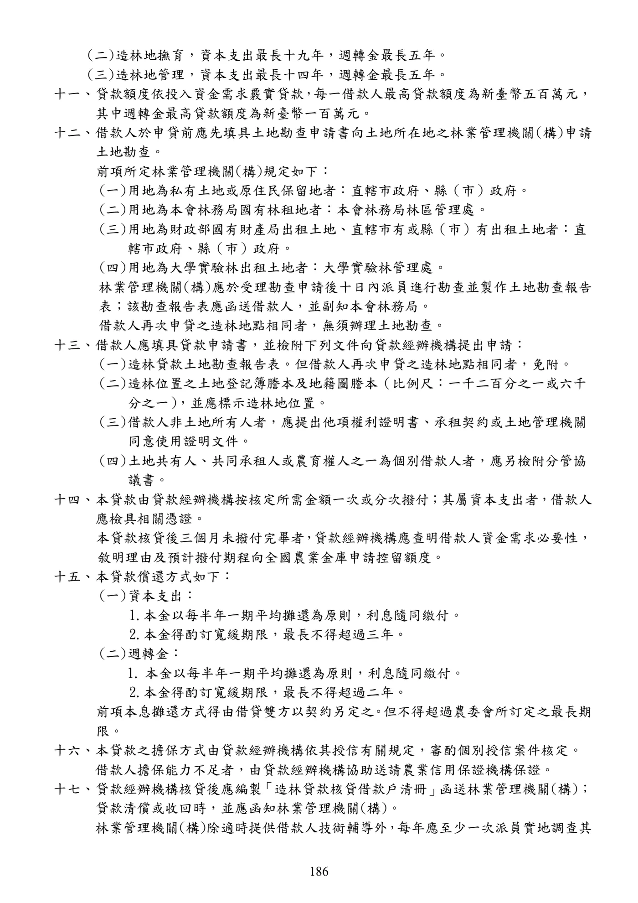
展開查看PDF原始文字層
(二) 造林地撫育，資本支出最長十九年，週轉金最長五年。 (三) 造林地管理，資本支出最長十四年，週轉金最長五年。 十一、 貸款額度依投入資金需求覈實貸款 ， 每一借款人最高貸款額度為新臺幣五百萬元， 其中週轉金最高貸款額度為新臺幣一百萬元。 十二、 借款人於申貸前應先填具土地勘查申請書向土地所在地之林業管理機關 (構)申請 土地勘查。 前項所定林業管理機關(構)規定如下： (一) 用地為私有土地或原住民保留地者：直轄市政府、縣（市）政府。 (二) 用地為本會林務局國有林租地者：本會林務局林區管理處。 (三) 用地為財政部國有財產局出租土地、直轄市有或縣（市）有出租土地者：直 轄市政府、縣（市）政府。 (四) 用地為大學實驗林出租土地者：大學實驗林管理處。 林業管理機關(構)應於受理勘查申請後十日內派員進行勘查並製作土地勘查報告 表；該勘查報告表應函送借款人，並副知本會林務局。 借款人再次申貸之造林地點相同者，無須辦理土地勘查。 十三、 借款人應填具貸款申請書，並檢附下列文件向貸款經辦機構提出申請： (一) 造林貸款土地勘查報告表。但借款人再次申貸之造林地點相同者，免附。 (二) 造林位置之土地登記簿謄本及地籍圖謄本（比例尺：一千二百分之一或六千 分之一） ，並應標示造林地位置。 (三) 借款人非土地所有人者，應提出他項權利證明書、承租契約或土地管理機關 同意使用證明文件。 (四) 土地共有人、共同承租人或農育權人之一為個別借款人者，應另檢附分管協 議書。 十四、 本貸款由貸款經辦機構按核定所需金額一次或分次撥付；其屬資本支出者，借款人 應檢具相關憑證。 本貸款核貸後三個月未撥付完畢者 ， 貸款經辦機構應查明借款人資金需求必要性， 敘明理由及預計撥付期程向全國農業金庫申請控留額度。 十五、 本貸款償還方式如下： (一) 資本支出： 1. 本金以每半年一期平均攤還為原則，利息隨同繳付。 2. 本金得酌訂寬緩期限，最長不得超過三年。 (二) 週轉金： 1. 本金以每半年一期平均攤還為原則，利息隨同繳付。 2. 本金得酌訂寬緩期限，最長不得超過二年。 前項本息攤還方式得由借貸雙方以契約另定之 。 但不得超過農委會所訂定之最長期 限。 十六、 本貸款之擔保方式由貸款經辦機構依其授信有關規定，審酌個別授信案件核定。 借款人擔保能力不足者，由貸款經辦機構協助送請農業信用保證機構保證。 十七、 貸款經辦機構核貸後應編製 「造林貸款核貸借款戶清冊」 函送林業管理機關(構)； 貸款清償或收回時，並應函知林業管理機關(構)。 林業管理機關(構)除適時提供借款人技術輔導外 ， 每年應至少一次派員實地調查其
手冊頁：187 PDF頁：189／359
造林狀況 ， 將調查結果登載於 「造林貸款動態登記簿」 ， 查有未符造林相關規定者， 應通知借款人限期改善，限期改善期間最長為一年。未依限改善者，林業管理機關 (構)應函知貸款經辦機構依違約程序辦理。 十八、 借款人如有重複申貸、逾申貸餘額上限、資金流用或前點第二項規定未依限改善等 情事者，視同違約，由貸款經辦機構收回本貸款。 依前項規定收回貸款者 ， 貸款經辦機構已請領該貸款之利息差額補貼應繳還本會。 十九、 臺灣土地銀行於本要點發布生效前所承作之造林貸款案件 ， 依既有條件辦理至原契 約到期為止。
查看PDF原始文字層
造林狀況 ， 將調查結果登載於 「造林貸款動態登記簿」 ， 查有未符造林相關規定者， 應通知借款人限期改善，限期改善期間最長為一年。未依限改善者，林業管理機關 (構)應函知貸款經辦機構依違約程序辦理。 十八、 借款人如有重複申貸、逾申貸餘額上限、資金流用或前點第二項規定未依限改善等 情事者，視同違約，由貸款經辦機構收回本貸款。 依前項規定收回貸款者 ， 貸款經辦機構已請領該貸款之利息差額補貼應繳還本會。 十九、 臺灣土地銀行於本要點發布生效前所承作之造林貸款案件 ， 依既有條件辦理至原契 約到期為止。
手冊頁：188 PDF頁：190／359
{kind=link}
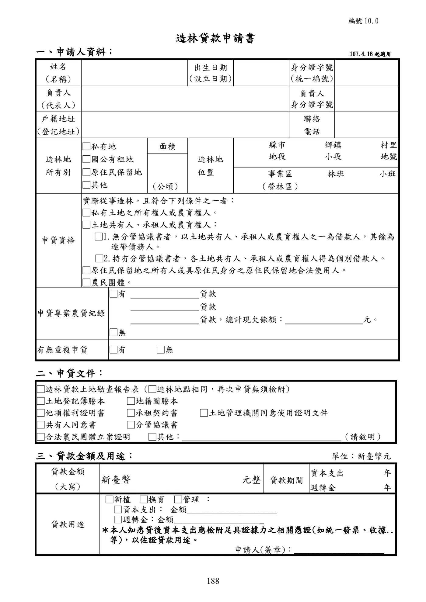
展開查看PDF原始文字層
造林貸款申請書
一、申請人資料：
姓名
(名稱)
出生日期
(設立日期)
身分證字號
(統一編號)
負責人
(代表人)
負責人
身分證字號
戶籍地址
(登記地址)
聯絡
電話
造林地
所有別
□私有地
□國公有租地
□原住民保留地
□其他
面積
造林地
位置
縣市 鄉鎮 村里
地段 小段 地號
(公頃)
事業區 林班 小班
（營林區）
申貸資格
實際從事造林，且符合下列條件之ㄧ者：
□私有土地之所有權人或農育權人。
□土地共有人、承租人或農育權人：
□1.無分管協議書者，以土地共有人、承租人或農育權人之一為借款人，其餘為
連帶債務人。
□2.持有分管協議書者，各土地共有人、承租人或農育權人得為個別借款人。
□原住民保留地之所有人或具原住民身分之原住民保留地合法使用人。
□農民團體。
申貸專案農貸紀錄
□有 貸款
貸款
貸款，總計現欠餘額： 元。
□無
有無重複申貸 □有 □無
二、申貸文件：
□造林貸款土地勘查報告表 (□造林地點相同，再次申貸無須檢附)
□土地登記簿謄本 □地籍圖謄本
□他項權利證明書 □承租契約書 □土地管理機關同意使用證明文件
□共有人同意書 □分管協議書
□合法農民團體立案證明 □其他： （請敘明）
三、貸款金額及用途： 單位：新臺幣元
貸款金額
(大寫) 新臺幣 元整 貸款期間
資本支出 年
週轉金 年
貸款用途
□新植 □撫育 □管理 ：
□資本支出： 金額_____________________
□週轉金：金額_____________________
＊本人知悉貸後資本支出應檢附足具證據力之相關憑證 (如統一發票、收據..
等)，以佐證貸款用途。
申請人(簽章)：_____________________
編號 10.0
107.4.16 起適用手冊頁：189 PDF頁：191／359
敬請 惠予核貸為荷 此致 貸款經辦機構 申請人(簽章)： _____________________ 中 華 民 國 年 月 日 備註：其他徵授信資料請依貸款經辦機構相關規定辦理。
查看PDF原始文字層
敬請 惠予核貸為荷 此致 貸款經辦機構 申請人(簽章)： _____________________ 中 華 民 國 年 月 日 備註：其他徵授信資料請依貸款經辦機構相關規定辦理。
手冊頁：190 PDF頁：192／359
{kind=link}
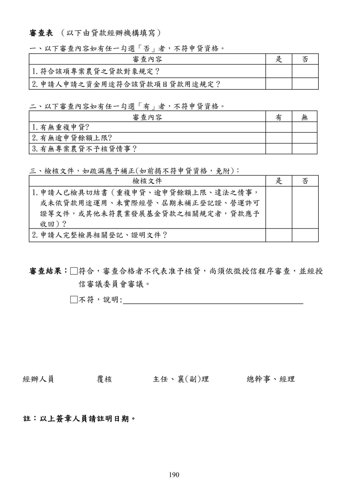
展開查看PDF原始文字層
審查表 （以下由貸款經辦機構填寫） 一、以下審查內容如有任一勾選「否」者，不符申貸資格。 審查內容 是 否 1.符合該項專案農貸之貸款對象規定？ 2.申請人申請之資金用途符合該貸款項目貸款用途規定？ 二、以下審查內容如有任一勾選「有」者，不符申貸資格。 審查內容 有 無 1.有無重複申貸? 2.有無逾申貸餘額上限? 3.有無專案農貸不予核貸情事？ 三、檢核文件，如疏漏應予補正(如前揭不符申貸資格，免附)： 檢核文件 是 否 1.申請人已檢具切結書（重複申貸、逾申貸餘額上限、違法之情事， 或未依貸款用途運用、未實際經營、屆期未補正登記證、營運許可 證等文件，或其他未符農業發展基金貸款之相關規定者，貸款應予 收回）? 2.申請人完整檢具相關登記、證明文件？ 審查結果：□符合，審查合格者不代表准予核貸，尚須依徵授信程序審查，並經授 信審議委員會審議。 □不符，說明: 經辦人員 覆核 主任、襄(副)理 總幹事、經理 註：以上簽章人員請註明日期。
手冊頁：191 PDF頁：193／359
{kind=link}
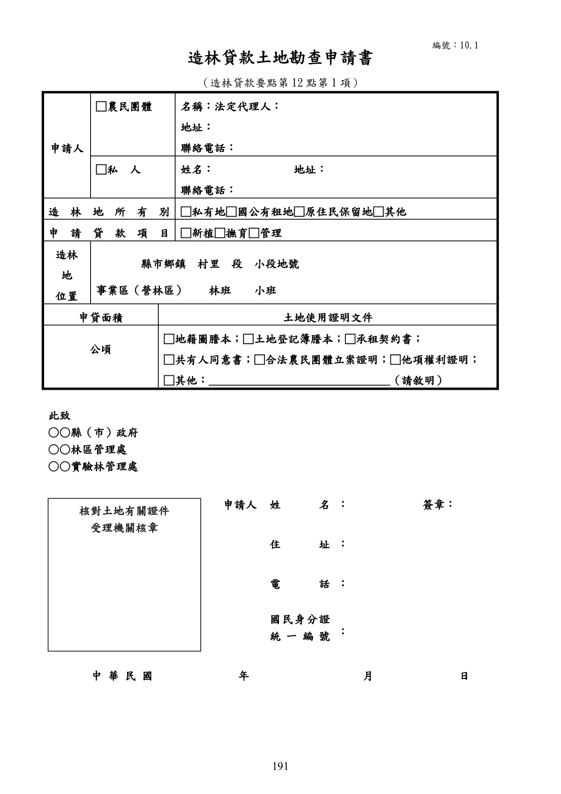
展開查看PDF原始文字層
造林貸款土地勘查申請書 （造林貸款要點第12 點第 1 項） 申請人 □農民團體 名稱：法定代理人： 地址： 聯絡電話： □私 人 姓名： 地址： 聯絡電話： 造林地所有別 □私有地□國公有租地□原住民保留地□其他 申請貸款項目 □新植□撫育□管理 造林 地 位置 縣市鄉鎮 村里 段 小段地號 事業區（營林區） 林班 小班 申貸面積 土地使用證明文件 公頃 □地籍圖謄本；□土地登記簿謄本；□承租契約書； □共有人同意書；□合法農民團體立案證明；□他項權利證明； □其他：________________________________（請敘明） 此致 ○○縣（市）政府 ○○林區管理處 ○○實驗林管理處 申請人 姓名 ： 簽章： 住址 ： 電話 ： 國民身分證 統 一 編 號 ： 中 華 民 國 年 月 日 編號：10.1 核對土地有關證件 受理機關核章
手冊頁：192 PDF頁：194／359
造林貸款土地勘查報告表 （造林貸款要點第12 點第 2 項） 申 請 人 □農民團體 名稱： 法定代理人： 地址： 聯絡電話： □私 人 姓名： 聯絡電話： 地址： 造林地所有別 申請貸款項目 □私有地 □國公有租地 □原住民保留地 □其他 □新植 □撫育 □管理 造林 地 位置 縣市 鄉鎮 村里 段 小段 地號 事業區（營林區） 林班 小班 面積： （公頃） 土地使用證明文件 □地籍圖謄本；□土地登記簿謄本；□承租契約；□他項權利證明； □合法農民團體立案證明； □其他：________________________________（請敘明） 勘查結果※造林地座標定位：□TWD67□TWD97 X:_____________；Y:______________ 造林地現況： □林齡 年 □造林地需施肥□有病蟲害情形（敘述）_____________ □有藤蔓危害 樹種 胸徑 （公分） 樹高 （公尺） 株數 樹種 胸徑 （公分） 樹高 （公尺） 株數 備註 苗木來源：□無償配撥，配撥單位：______________ □自備種苗 勘查 單位 單位名稱： 會勘 單位 單位名稱： 勘查人： 審核： 主管／決行： （簽名） 會勘人： （簽名） 中華民國 年 月 日 編號：10.2
查看PDF原始文字層
造林貸款土地勘查報告表 （造林貸款要點第12 點第 2 項） 申 請 人 □農民團體 名稱： 法定代理人： 地址： 聯絡電話： □私 人 姓名： 聯絡電話： 地址： 造林地所有別 申請貸款項目 □私有地 □國公有租地 □原住民保留地 □其他 □新植 □撫育 □管理 造林 地 位置 縣市 鄉鎮 村里 段 小段 地號 事業區（營林區） 林班 小班 面積： （公頃） 土地使用證明文件 □地籍圖謄本；□土地登記簿謄本；□承租契約；□他項權利證明； □合法農民團體立案證明； □其他：________________________________（請敘明） 勘查結果※造林地座標定位：□TWD67□TWD97 X:_____________；Y:______________ 造林地現況： □林齡 年 □造林地需施肥□有病蟲害情形（敘述）_____________ □有藤蔓危害 樹種 胸徑 （公分） 樹高 （公尺） 株數 樹種 胸徑 （公分） 樹高 （公尺） 株數 備註 苗木來源：□無償配撥，配撥單位：______________ □自備種苗 勘查 單位 單位名稱： 會勘 單位 單位名稱： 勘查人： 審核： 主管／決行： （簽名） 會勘人： （簽名） 中華民國 年 月 日 編號：10.2
手冊頁：193 PDF頁：195／359
造林貸款核貸借款戶清冊 （造林貸款要點第17 點） 貸款經辦機構： 借款人： 核准貸款概況 備註 造林 地點 所有別 面積 （公頃） 貸款用途 金額 （元） 貸款起迄 年月 借款人： 核准貸款概況 備註 造林 地點 所有別 面積 （公頃） 貸款用途 金額 （元） 貸款起迄 年月 借款人： 核准貸款概況 備註 造林 地點 所有別 面積 （公頃） 貸款用途 金額 （元） 貸款起迄 年月 編號：10.3
查看PDF原始文字層
造林貸款核貸借款戶清冊 （造林貸款要點第17 點） 貸款經辦機構： 借款人： 核准貸款概況 備註 造林 地點 所有別 面積 （公頃） 貸款用途 金額 （元） 貸款起迄 年月 借款人： 核准貸款概況 備註 造林 地點 所有別 面積 （公頃） 貸款用途 金額 （元） 貸款起迄 年月 借款人： 核准貸款概況 備註 造林 地點 所有別 面積 （公頃） 貸款用途 金額 （元） 貸款起迄 年月 編號：10.3
手冊頁：194 PDF頁：196／359
造林貸款動態登記簿 （造林貸款要點第17 點） 編號： 號 借款人 聯絡電話 住址 金額 貸款用途 貸款起迄 年月 備註 造林地位置 縣市 鄉鎮 村里 地段 小段 地號 所有別 □私有 □國（公）有租地 □原住民保留地 □其他 事業(營林)區 林班 小班 造林地面積 樹種 造林地輔導紀錄 現勘時間 造林地調查 年 月 日 造林 面積 樹種 成活率 ％ 生長狀態 未造林 面積 未造林原因 檢查人 核章 主管 核章 編號：10.4 ○ ○ 縣 (市) 政 府 ○ ○ 林 區 管 理 處 ○ ○ 實 驗 林 管 理 處
查看PDF原始文字層
造林貸款動態登記簿 （造林貸款要點第17 點） 編號： 號 借款人 聯絡電話 住址 金額 貸款用途 貸款起迄 年月 備註 造林地位置 縣市 鄉鎮 村里 地段 小段 地號 所有別 □私有 □國（公）有租地 □原住民保留地 □其他 事業(營林)區 林班 小班 造林地面積 樹種 造林地輔導紀錄 現勘時間 造林地調查 年 月 日 造林 面積 樹種 成活率 ％ 生長狀態 未造林 面積 未造林原因 檢查人 核章 主管 核章 編號：10.4 ○ ○ 縣 (市) 政 府 ○ ○ 林 區 管 理 處 ○ ○ 實 驗 林 管 理 處
手冊頁：195 PDF頁：197／359
{kind=link}
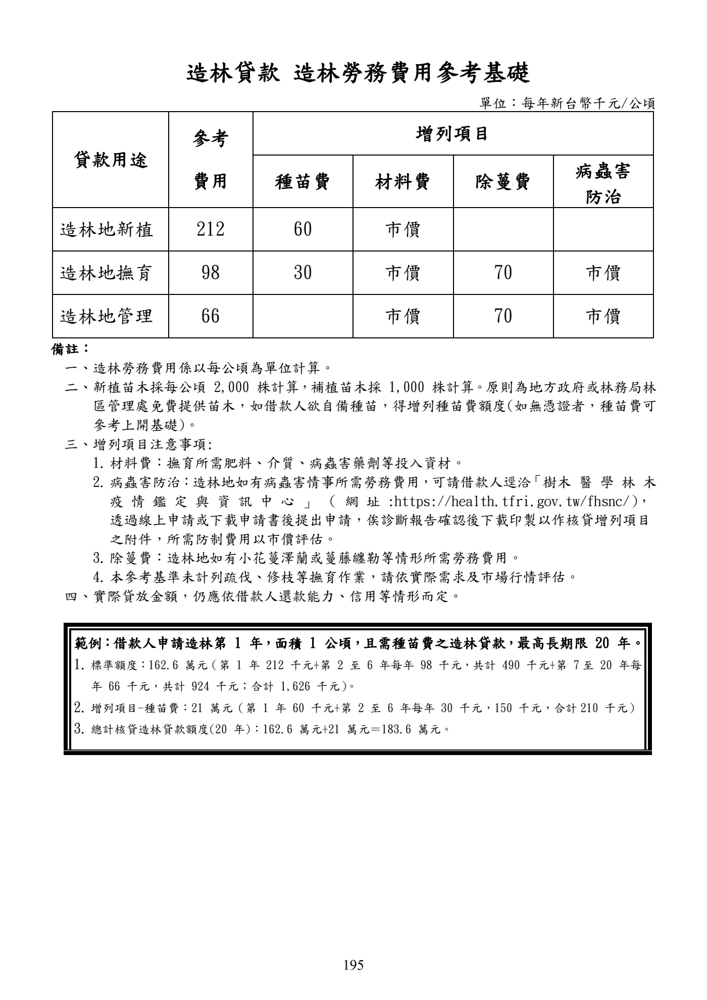
展開查看PDF原始文字層
造林貸款 造林勞務費用參考基礎 單位：每年新台幣千元/公頃 貸款用途 參考 費用 增列項目 種苗費 材料費 除蔓費 病蟲害 防治 造林地新植 212 60 市價 造林地撫育 98 30 市價 70 市價 造林地管理 66 市價 70 市價 備註： 一、造林勞務費用係以每公頃為單位計算。 二、新植苗木採每公頃 2,000 株計算 ， 補植苗木採 1,000 株計算 。 原則為地方政府或林務局林 區管理處免費提供苗木，如借款人欲自備種苗，得增列種苗費額度(如無憑證者，種苗費可 參考上開基礎)。 三、增列項目注意事項: 1. 材料費：撫育所需肥料、介質、病蟲害藥劑等投入資材。 2. 病蟲害防治 ： 造林地如有病蟲害情事所需勞務費用 ， 可請借款人逕洽 「樹木 醫 學 林 木 疫 情 鑑 定 與 資 訊 中 心 」 （ 網 址 :https://health.tfri.gov.tw/fhsnc/）， 透過線上申請或下載申請書後提出申請，俟診斷報告確認後下載印製以作核貸增列項目 之附件，所需防制費用以市價評估。 3. 除蔓費：造林地如有小花蔓澤蘭或蔓藤纏勒等情形所需勞務費用。 4. 本參考基準未計列疏伐、修枝等撫育作業，請依實際需求及市場行情評估。 四、實際貸放金額，仍應依借款人還款能力、信用等情形而定。 範例 ： 借款人申請造林第 1 年 ， 面積 1 公頃 ， 且需種苗費之造林貸款 ， 最高長期限 20 年。 1. 標準額度：162.6 萬元 （第 1 年 212 千元+第 2 至 6 年每年 98 千元，共計 490 千元+第 7 至 20 年每 年 66 千元，共計 924 千元；合計 1,626 千元） 。 2. 增列項目-種苗費：21 萬元（第 1 年 60 千元+第 2 至 6 年每年 30 千元，150 千元，合計 210 千元） 3. 總計核貸造林貸款額度(20 年)：162.6 萬元+21 萬元＝183.6 萬元。
手冊頁：196 PDF頁：198／359
{kind=link}
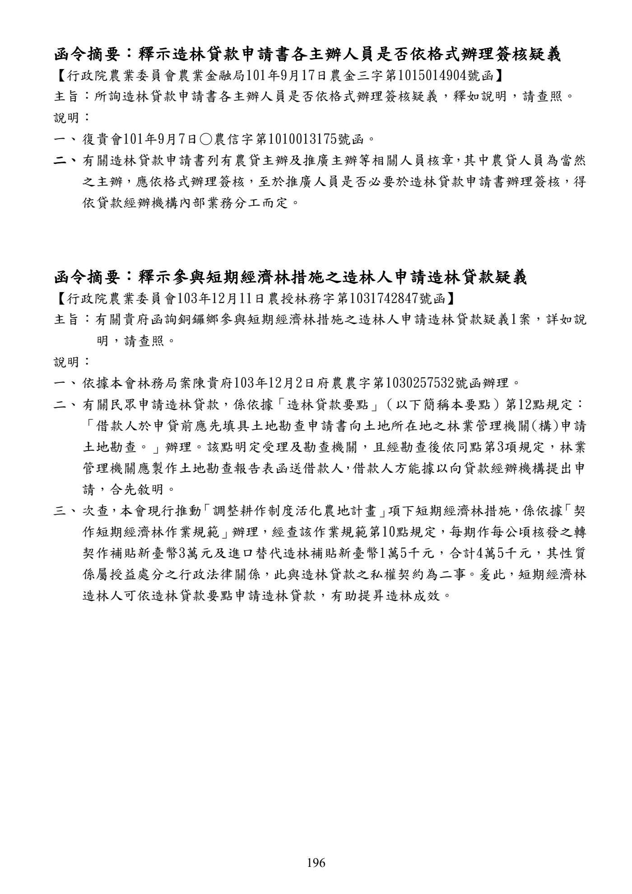
展開查看PDF原始文字層
函令摘要：釋示造林貸款申請書各主辦人員是否依格式辦理簽核疑義 【行政院農業委員會農業金融局101年9月17日農金三字第1015014904號函】 主旨：所詢造林貸款申請書各主辦人員是否依格式辦理簽核疑義，釋如說明，請查照。 說明： 一、 復貴會101年9月7日○農信字第1010013175號函。 二、 有關造林貸款申請書列有農貸主辦及推廣主辦等相關人員核章 ， 其中農貸人員為當然 之主辦，應依格式辦理簽核，至於推廣人員是否必要於造林貸款申請書辦理簽核，得 依貸款經辦機構內部業務分工而定。 函令摘要：釋示參與短期經濟林措施之造林人申請造林貸款疑義 【行政院農業委員會103年12月11日農授林務字第1031742847號函】 主旨：有關貴府函詢銅鑼鄉參與短期經濟林措施之造林人申請造林貸款疑義 1案，詳如說 明，請查照。 說明： 一、 依據本會林務局案陳貴府103年12月2日府農農字第1030257532號函辦理。 二、 有關民眾申請造林貸款，係依據「造林貸款要點」 （以下簡稱本要點）第12點規定： 「借款人於申貸前應先填具土地勘查申請書向土地所在地之林業管理機關 (構)申請 土地勘查。」辦理。該點明定受理及勘查機關，且經勘查後依同點第3項規定，林業 管理機關應製作土地勘查報告表函送借款人 ， 借款人方能據以向貸款經辦機構提出申 請，合先敘明。 三、 次查 ， 本會現行推動 「調整耕作制度活化農地計畫」 項下短期經濟林措施 ， 係依據 「契 作短期經濟林作業規範」 辦理，經查該作業規範第10點規定，每期作每公頃核發之轉 契作補貼新臺幣3萬元及進口替代造林補貼新臺幣1萬5千元，合計4萬5千元，其性質 係屬授益處分之行政法律關係，此與造林貸款之私權契約為二事。爰此，短期經濟林 造林人可依造林貸款要點申請造林貸款，有助提昇造林成效。
手冊頁：197 PDF頁：199／359
小地主大專業農貸款要點 中華民國 97 年 12 月 30 日行政院農業委員會農授金字第 0975080470 號令發布 中華民國 98 年 4 月 9 日行政院農業委員會農金字第 0985080168 號令修正 中華民國 99 年 6 月 11 日行政院農業委員會農金字第 0995080297 號令修正 中華民國 99 年 8 月 25 日行政院農業委員會農金字第 0995080390 號令修正 中華民國 102 年 4 月 26 日行政院農業委員會農金字第 1025080177 號令修正 中華民國 103 年 2 月 28 日行政院農業委員會農金字第 1035080094 號令修正 中華民國 105 年 1 月 22 日行政院農業委員會農金字第 1055084031E 號令修正，並自 105 年 1 月 23 日生效 中華民國 105 年 3 月 18 日行政院農業委員會農金字第 1055084021K 號令修正第 11 點， 並自 105 年 3 月 22 日生效 中華民國108 年11 月22 日行政院農業委員會農金字第 1085084746A 號令修正部分規定 ， 名稱並修正為「小地主大專業農貸款要點」 ，並自108 年 11 月 25 日生效 中華民國109 年2 月27 日行政院農業委員會農授金字第 1095084100H 號令修正第12 點、 第 15 點，並自 109 年 3 月1 日生效 中華民國 111 年 9 月 29 日行政院農業委員會農授金字第 1115085078D 號令修正第 5 點、 第 20 點，並自 111 年 10 月1 日生效 一、 行政院農業委員會 （以下簡稱農委會） 為促進農地流通及活化農地利用，鼓勵老農或 無意耕作農民長期出租農地，並輔導農業企業經營，減少農地休耕閒置，促使農業轉 型升級，提高整體農業競爭力，特訂定本要點。 二、 小地主大專業農貸款除依辦理政策性農業專案貸款辦法辦理外 ， 依本要點規定辦理 。 本要點未規定者，依農業發展基金貸款作業規範及其他有關規定辦理。 三、 本要點用詞，定義如下： (一) 小地主：指出租農地之所有權人，且為自然人。 (二) 大專業農：指承租農地之專業農民、農業產銷班、農業合作社、農會及農業企業 機構。 (三) 農地：指符合農糧類小地主大專業農企業化經營補助作業規範之農地。 四、 本貸款之類別如下： (一) 租金貸款類。 (二) 經營貸款類。 五、 本貸款之對象應符合農委會訂定之小地主大專業農政策執行方案規定之適用對象身 分類別、條件及產業經營規模。 前項貸款對象為農業產銷班者，貸款計畫 （包括貸款用途、額度及期間等事項） 應經 班會決議通過 ， 並由班會決議指定班長或班員以其個人名義為借款人 ， 不受專業農民 條件及產業經營規模之限制。 第一項借款人為農業企業機構者，應為依公司法登記實際從事農、林、牧業之公司， 且應符合下列條件： (一) 股東人數百分之八十以上具有農民職業災害保險被保險人資格。 (二) 具有農民職業災害保險被保險人資格之股東所投資金額總和占公司實收資本額
查看PDF原始文字層
小地主大專業農貸款要點 中華民國 97 年 12 月 30 日行政院農業委員會農授金字第 0975080470 號令發布 中華民國 98 年 4 月 9 日行政院農業委員會農金字第 0985080168 號令修正 中華民國 99 年 6 月 11 日行政院農業委員會農金字第 0995080297 號令修正 中華民國 99 年 8 月 25 日行政院農業委員會農金字第 0995080390 號令修正 中華民國 102 年 4 月 26 日行政院農業委員會農金字第 1025080177 號令修正 中華民國 103 年 2 月 28 日行政院農業委員會農金字第 1035080094 號令修正 中華民國 105 年 1 月 22 日行政院農業委員會農金字第 1055084031E 號令修正，並自 105 年 1 月 23 日生效 中華民國 105 年 3 月 18 日行政院農業委員會農金字第 1055084021K 號令修正第 11 點， 並自 105 年 3 月 22 日生效 中華民國108 年11 月22 日行政院農業委員會農金字第 1085084746A 號令修正部分規定 ， 名稱並修正為「小地主大專業農貸款要點」 ，並自108 年 11 月 25 日生效 中華民國109 年2 月27 日行政院農業委員會農授金字第 1095084100H 號令修正第12 點、 第 15 點，並自 109 年 3 月1 日生效 中華民國 111 年 9 月 29 日行政院農業委員會農授金字第 1115085078D 號令修正第 5 點、 第 20 點，並自 111 年 10 月1 日生效 一、 行政院農業委員會 （以下簡稱農委會） 為促進農地流通及活化農地利用，鼓勵老農或 無意耕作農民長期出租農地，並輔導農業企業經營，減少農地休耕閒置，促使農業轉 型升級，提高整體農業競爭力，特訂定本要點。 二、 小地主大專業農貸款除依辦理政策性農業專案貸款辦法辦理外 ， 依本要點規定辦理 。 本要點未規定者，依農業發展基金貸款作業規範及其他有關規定辦理。 三、 本要點用詞，定義如下： (一) 小地主：指出租農地之所有權人，且為自然人。 (二) 大專業農：指承租農地之專業農民、農業產銷班、農業合作社、農會及農業企業 機構。 (三) 農地：指符合農糧類小地主大專業農企業化經營補助作業規範之農地。 四、 本貸款之類別如下： (一) 租金貸款類。 (二) 經營貸款類。 五、 本貸款之對象應符合農委會訂定之小地主大專業農政策執行方案規定之適用對象身 分類別、條件及產業經營規模。 前項貸款對象為農業產銷班者，貸款計畫 （包括貸款用途、額度及期間等事項） 應經 班會決議通過 ， 並由班會決議指定班長或班員以其個人名義為借款人 ， 不受專業農民 條件及產業經營規模之限制。 第一項借款人為農業企業機構者，應為依公司法登記實際從事農、林、牧業之公司， 且應符合下列條件： (一) 股東人數百分之八十以上具有農民職業災害保險被保險人資格。 (二) 具有農民職業災害保險被保險人資格之股東所投資金額總和占公司實收資本額
手冊頁：198 PDF頁：200／359
百分之八十以上。 (三) 配合農委會認定之重要政策。 六、 本貸款用途為支應大專業農承租農地所需之租金及經營資金。 七、 本貸款之輔導機關為農委會及其所屬農業試驗改良場（所） 、直轄市及各縣（市）政 府。 八、 本貸款之經辦機構如下： (一) 設有信用部之農(漁)會。 (二) 依法承受農(漁)會信用部之銀行當地分行。 (三) 全國農業金庫。 農會申請本貸款，限向其他農會或全國農業金庫申辦，不得以內部融資方式辦理。 九、 本貸款由貸款經辦機構提供貸款資金 ， 並由農業發展基金就其出資金給予利息差額補 貼。 十、 本貸款風險由貸款經辦機構負擔。 十一、 本貸款利率依辦理政策性農業專案貸款辦法相關規定辦理。 十二、 本貸款期限如下： (一) 租金貸款類 ： 依小地主與大專業農所定租約之年期 ， 且該年期為三年以上 ， 二 十年以下。但租金採分期支付，並報經直轄市、縣 （市） 政府專案同意者，不 受年期之限制。 (二) 經營貸款類：依貸款額度及購置設備耐用年限覈實貸放，其中資本支出最長 二十年，週轉金最長五年。 十三、 本貸款額度如下，並應扣除政府補助金額： (一) 租金貸款類：以承租金額貸放。 (二) 經營貸款類： 1. 專業農民： 每一借款人最高貸款額度為新臺幣一千萬元，其中週轉金依借款人經營規 模覈實貸放，最高貸款額度為新臺幣六百萬元；資本支出以其實際投資金 額百分之九十為限。 2. 農業產銷班、農業合作社、農會及農業企業機構： (1) 每一借款戶單一貸款案件最高貸款額度為新臺幣五千萬元 ， 其中週轉金 依借款人經營規模覈實貸放 ， 最高貸款額度為新臺幣一千五百萬元 ； 資 本支出以其實際投資金額百分之九十為限。 (2) 貸款餘額最高以新臺幣八千萬元為限 。 但情形特殊 ， 報經農委會專案同 意者，不在此限。 十四、 本貸款資金撥付方式如下： (一) 租金貸款類 ： 由貸款經辦機構按核定所需金額分次撥付 ， 且每次撥付金額不得 超過一年租金，撥付時將款項撥入借款人 （大專業農） 帳戶後，同時再依借款 人提供之授權轉帳書將該筆款項確實轉帳 （匯） 入借款人與小地主雙方簽訂租 賃契約約定之帳戶。 (二) 經營貸款類 ： 由貸款經辦機構按核定所需金額一次或分次撥付 ； 其屬資本支出 者，借款人應檢具相關憑證。 十五、 本貸款償還方式如下：
查看PDF原始文字層
百分之八十以上。 (三) 配合農委會認定之重要政策。 六、 本貸款用途為支應大專業農承租農地所需之租金及經營資金。 七、 本貸款之輔導機關為農委會及其所屬農業試驗改良場（所） 、直轄市及各縣（市）政 府。 八、 本貸款之經辦機構如下： (一) 設有信用部之農(漁)會。 (二) 依法承受農(漁)會信用部之銀行當地分行。 (三) 全國農業金庫。 農會申請本貸款，限向其他農會或全國農業金庫申辦，不得以內部融資方式辦理。 九、 本貸款由貸款經辦機構提供貸款資金 ， 並由農業發展基金就其出資金給予利息差額補 貼。 十、 本貸款風險由貸款經辦機構負擔。 十一、 本貸款利率依辦理政策性農業專案貸款辦法相關規定辦理。 十二、 本貸款期限如下： (一) 租金貸款類 ： 依小地主與大專業農所定租約之年期 ， 且該年期為三年以上 ， 二 十年以下。但租金採分期支付，並報經直轄市、縣 （市） 政府專案同意者，不 受年期之限制。 (二) 經營貸款類：依貸款額度及購置設備耐用年限覈實貸放，其中資本支出最長 二十年，週轉金最長五年。 十三、 本貸款額度如下，並應扣除政府補助金額： (一) 租金貸款類：以承租金額貸放。 (二) 經營貸款類： 1. 專業農民： 每一借款人最高貸款額度為新臺幣一千萬元，其中週轉金依借款人經營規 模覈實貸放，最高貸款額度為新臺幣六百萬元；資本支出以其實際投資金 額百分之九十為限。 2. 農業產銷班、農業合作社、農會及農業企業機構： (1) 每一借款戶單一貸款案件最高貸款額度為新臺幣五千萬元 ， 其中週轉金 依借款人經營規模覈實貸放 ， 最高貸款額度為新臺幣一千五百萬元 ； 資 本支出以其實際投資金額百分之九十為限。 (2) 貸款餘額最高以新臺幣八千萬元為限 。 但情形特殊 ， 報經農委會專案同 意者，不在此限。 十四、 本貸款資金撥付方式如下： (一) 租金貸款類 ： 由貸款經辦機構按核定所需金額分次撥付 ， 且每次撥付金額不得 超過一年租金，撥付時將款項撥入借款人 （大專業農） 帳戶後，同時再依借款 人提供之授權轉帳書將該筆款項確實轉帳 （匯） 入借款人與小地主雙方簽訂租 賃契約約定之帳戶。 (二) 經營貸款類 ： 由貸款經辦機構按核定所需金額一次或分次撥付 ； 其屬資本支出 者，借款人應檢具相關憑證。 十五、 本貸款償還方式如下：
手冊頁：199 PDF頁：201／359

展開查看PDF原始文字層
(一) 租金貸款類： 1.本金以每半年一期平均攤還為原則。 2.本金得酌訂寬緩期限，最長不得超過一年。 (二) 經營貸款類： 1. 本金以每半年一期平均攤還為原則，利息隨同繳付。 2. 本金得酌訂寬緩期限，最長不得超過二年。 前項本息攤還方式得由借貸雙方以契約另定之 。 但不得超過農委會所訂定之最長期 限。 十六、 本貸款擔保方式由貸款經辦機構依其授信有關規定，審酌個別授信案件核定；借款 人擔保能力不足，貸款經辦機構應協助送請農業信用保證機構保證。 十七、 本貸款辦理程序如下： (一) 借款人應檢具經農委會 、 直轄市或縣(市)政府核定之經營計畫書 、 貸款申請書 及相關文件，向貸款經辦機構提出申請。 (二) 貸款金額為資本支出超過新臺幣三千萬元或週轉金 （含租金貸款） 超過新臺幣 二千萬元者，貸款經辦機構應函請直轄市或縣(市)政府轉請農委會審查。 (三) 貸款經辦機構依借款人所提供之資料辦理徵 、 授信審查 ， 應將審核結果通知借 款人，並副知直轄市或縣(市)政府。 十八、 （刪除） 十九、 借款人違反下列各款之ㄧ規定者，貸款經辦機構應即終止其借貸契約，一次收回貸 款應償本息，並自違約日起加收違約金： (一) 借款人於貸款本息未清償前 ， 不得將其因本貸款承租之耕地轉租 、 變更作耕地 容許使用項目以外之使用或於貸款核撥三個月後仍閒置不用。 (二) 借款人應於貸款核撥後三個月內依農業經營計畫書所列經營項目從事農業經 營 ， 並接受主管機關及經辦機構之輔導 ，如有變更經營項目 ，應重提農業經營 計畫書送直轄市或縣（市）政府核准。 貸款存續期間其租約經終止或期滿未續約者，不予利息差額補貼。 二十、 貸款對象為農業企業機構者 ， 貸款存續期間具有農民職業災害保險被保險人資格之 股東人數低於百分之八十或所投資金額總和占公司實收資本額百分之八十以下時， 該筆貸款視為貸款經辦機構之ㄧ般放款，不予利息差額補貼。 二十之一、本貸款資金除租金貸款類外，應於核准貸款日起三個月內動用完畢。但屬資 本支出，應於核准貸款日起三個月內第一次動用，並依工程進度於一年內動用 完畢。 借款人確有困難，致工程未能於前項期限內完成者，得向貸款經辦機構申請延 長資本支出貸款之動用期限，最長一年，並以一次為限。 貸款經辦機構受理前項申請，經評估確有必要者，應向全國農業金庫申請變更 動用期限。 二十一、 貸款經辦機構應於核貸後六個月內進行貸款用途查驗工作並作成書面紀錄 ； 其後 貸款存續期間，每年應至少辦理一次貸款用途查驗並作成書面紀錄。
手冊頁：200 PDF頁：202／359

展開查看PDF原始文字層
編號:11.0
112.8.1起適用
小地主大專業農貸款申請書
一、申請人資料：
姓名
(名稱)
出生日期
(登記日期)
身分證字號
(統一編號)
戶籍地址
(登記地址) 聯絡
電話
居住地址
(經營場址) □同上□其他： 聯絡
電話
申貸資格
□專業農民
□產銷班：依「農業產銷班設立及輔導辦法」設立之產銷班。
□合作社：依「合作社法」設立之農業合作社。
□農會：依「農會法」設立之農民團體。
□農企業：依「公司法」登記實際從事農、林、牧業之公司，且應符合下列條件：
1.股東人數百分之八十以上具有農民職業災害保險被保險人資格。
2.具有農民職業災害保險被保險人資格之股東所投資金額總和占公司實收資本
額百分之八十以上。
3.配合農業部認定之重要政策。
申貸文件 1.租約，如附□（ 年 月 日～ 年 月 日，租期___年）
2.農業部、直轄市或縣(市)政府核定之農業經營計畫書，如附□
申貸專案農貸紀錄
□有 貸款
貸款，總計現欠餘額： 元。
□無
有無重複申貸 □有 □無
二、貸款金額及用途： 單位：新臺幣元
貸款金額
(大寫) 新臺幣 元整 貸款期間
租金貸款 年
資本支出 年
週轉金 年
貸款用途
*本案貸款金額依貸款要點13點規定應扣除政府補助金額。
□ 租金貸款類 金額__________________________
□ 經營貸款類
□資本支出 金額__________________________
□週轉金 金額__________________________
*經營貸款類資本支出之核貸額度不得超過實際投資金額90%。
*本人知悉貸後資本支出應檢附足具證據力之相關憑證(如統一發票、收
據..等)，以佐證貸款用途。
申請人(簽章)：__________________手冊頁：201 PDF頁：203／359
敬請 惠予核貸為荷 此致 貸款經辦機構 申請人(簽章)： 中 華 民 國 年 月 日 備註：其他徵授信資料請依貸款經辦機構相關規定辦理
查看PDF原始文字層
敬請 惠予核貸為荷 此致 貸款經辦機構 申請人(簽章)： 中 華 民 國 年 月 日 備註：其他徵授信資料請依貸款經辦機構相關規定辦理
手冊頁：202 PDF頁：204／359
{kind=link}
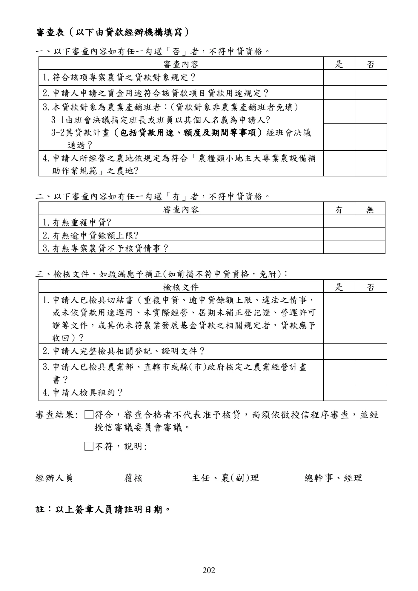
展開查看PDF原始文字層
審查表（以下由貸款經辦機構填寫） 一、以下審查內容如有任一勾選「否」者，不符申貸資格。 審查內容 是 否 1.符合該項專案農貸之貸款對象規定？ 2.申請人申請之資金用途符合該貸款項目貸款用途規定？ 3.本貸款對象為農業產銷班者：(貸款對象非農業產銷班者免填) 3-1由班會決議指定班長或班員以其個人名義為申請人? 3-2其貸款計畫（包括貸款用途、額度及期間等事項）經班會決議 通過？ 4.申請人所經營之農地依規定為符合「農糧類小地主大專業農設備補 助作業規範」之農地? 二、以下審查內容如有任一勾選「有」者，不符申貸資格。 審查內容 有 無 1.有無重複申貸? 2.有無逾申貸餘額上限? 3.有無專案農貸不予核貸情事？ 三、檢核文件，如疏漏應予補正(如前揭不符申貸資格，免附)： 檢核文件 是 否 1.申請人已檢具切結書（重複申貸、逾申貸餘額上限、違法之情事， 或未依貸款用途運用、未實際經營、屆期未補正登記證、營運許可 證等文件，或其他未符農業發展基金貸款之相關規定者，貸款應予 收回）? 2.申請人完整檢具相關登記、證明文件？ 3.申請人已檢具農業部、直轄市或縣(市)政府核定之農業經營計畫 書？ 4.申請人檢具租約？ 審查結果: □符合，審查合格者不代表准予核貸，尚須依徵授信程序審查，並經 授信審議委員會審議。 □不符，說明: 經辦人員 覆核 主任、襄(副)理 總幹事、經理 註：以上簽章人員請註明日期。
手冊頁：203 PDF頁：205／359
農業節能減碳貸款要點 中華民國 98 年 3 月 23 日行政院農業委員會農金字第 0985080123 號令訂定 中華民國 102 年 4 月 26 日行政院農業委員會農金字第 1025080178 號令修正 中華民國 103 年 10 月 28 日行政院農業委員會農金字第 1035084021 號令修正 中華民國 105 年 3 月 18 日行政院農業委員會農金字第 1055084021L 號令修正第 9 點，並 自 105 年 3 月 22 日生效 中華民國 105 年 5 月 23 日行政院農業委員會農金字第 1055084209A 號令修正第 10 點， 並自 105 年 5 月 23 日生效 中華民國 105 年 10 月 7 日行政院農業委員會農金字第 1055084421A 號令修正部分規定， 並自 105 年 10 月 12 日生效 中華民國 113 年 8 月 19 日農業部農授金字第 1137467070 號令修正部分規定，並自 113 年 8 月 20 日生效 一、 農業部(以下簡稱本部)為鼓勵使用具節能減碳效益之農業生產機械設備 ， 特訂定本要 點。 二、 農業節能減碳貸款除依辦理政策性農業專案貸款辦法辦理外 ， 依本要點規定辦理 。 本 要點未規定者，依農業發展基金貸款作業規範及其他有關規定辦理。 三、 本貸款之對象為農（漁）民、農（漁）民團體及農企業。 前項所稱農企業，指符合中小企業認定標準之事業。 四、 本貸款之用途如下： (一)購置使用沼氣、太陽能、風力、非抽蓄式水力、農林植物、國內農業事業廢棄物 直接利用或經處理以產生能源之農業相關機械設備。 (二)設置沼氣、太陽能、風力、非抽蓄式水力、農林植物、國內農業事業廢棄物直接 利用或經處理以產生能源之農業相關設施。 前項第二款設置設施者 ， 應檢具直轄市 、 縣(市)政府農業用地作農業設施容許使用同 意書或土地變更編定同意函。 五、 本貸款之經辦機構如下： (一) 設有信用部之農（漁）會。 (二) 依法承受農（漁）會信用部之銀行當地分行。 (三) 全國農業金庫。 前項第一款貸款經辦機構不得以內部融資或交互授信方式辦理本貸款。 前項所稱交互授信，指申貸農(漁)會與經辦農(漁)會有下列情形之一者： (一) 申貸農(漁)會貸予經辦農(漁)會本貸款，而經辦農(漁)會於尚未清償前，對申 貸農(漁)會貸予本貸款。 (二) 申貸農(漁)會對經辦農(漁)會以外之他農(漁)會貸予本貸款，該他農(漁)會又 對經辦農(漁)會貸予本貸款，而經辦農(漁)會於前開貸款尚未清償前，對申貸 農(漁)會貸予本貸款。 (三) 四家以上農(漁)會間有前款接續貸款之情形。 農(漁)民團體或農企業向第一項第一款或第二款貸款經辦機構申請本貸款者 ， 應於其 主事務所、分事務所或工廠登記所在直轄市、縣(市)轄區內之貸款經辦機構申辦。
查看PDF原始文字層
農業節能減碳貸款要點 中華民國 98 年 3 月 23 日行政院農業委員會農金字第 0985080123 號令訂定 中華民國 102 年 4 月 26 日行政院農業委員會農金字第 1025080178 號令修正 中華民國 103 年 10 月 28 日行政院農業委員會農金字第 1035084021 號令修正 中華民國 105 年 3 月 18 日行政院農業委員會農金字第 1055084021L 號令修正第 9 點，並 自 105 年 3 月 22 日生效 中華民國 105 年 5 月 23 日行政院農業委員會農金字第 1055084209A 號令修正第 10 點， 並自 105 年 5 月 23 日生效 中華民國 105 年 10 月 7 日行政院農業委員會農金字第 1055084421A 號令修正部分規定， 並自 105 年 10 月 12 日生效 中華民國 113 年 8 月 19 日農業部農授金字第 1137467070 號令修正部分規定，並自 113 年 8 月 20 日生效 一、 農業部(以下簡稱本部)為鼓勵使用具節能減碳效益之農業生產機械設備 ， 特訂定本要 點。 二、 農業節能減碳貸款除依辦理政策性農業專案貸款辦法辦理外 ， 依本要點規定辦理 。 本 要點未規定者，依農業發展基金貸款作業規範及其他有關規定辦理。 三、 本貸款之對象為農（漁）民、農（漁）民團體及農企業。 前項所稱農企業，指符合中小企業認定標準之事業。 四、 本貸款之用途如下： (一)購置使用沼氣、太陽能、風力、非抽蓄式水力、農林植物、國內農業事業廢棄物 直接利用或經處理以產生能源之農業相關機械設備。 (二)設置沼氣、太陽能、風力、非抽蓄式水力、農林植物、國內農業事業廢棄物直接 利用或經處理以產生能源之農業相關設施。 前項第二款設置設施者 ， 應檢具直轄市 、 縣(市)政府農業用地作農業設施容許使用同 意書或土地變更編定同意函。 五、 本貸款之經辦機構如下： (一) 設有信用部之農（漁）會。 (二) 依法承受農（漁）會信用部之銀行當地分行。 (三) 全國農業金庫。 前項第一款貸款經辦機構不得以內部融資或交互授信方式辦理本貸款。 前項所稱交互授信，指申貸農(漁)會與經辦農(漁)會有下列情形之一者： (一) 申貸農(漁)會貸予經辦農(漁)會本貸款，而經辦農(漁)會於尚未清償前，對申 貸農(漁)會貸予本貸款。 (二) 申貸農(漁)會對經辦農(漁)會以外之他農(漁)會貸予本貸款，該他農(漁)會又 對經辦農(漁)會貸予本貸款，而經辦農(漁)會於前開貸款尚未清償前，對申貸 農(漁)會貸予本貸款。 (三) 四家以上農(漁)會間有前款接續貸款之情形。 農(漁)民團體或農企業向第一項第一款或第二款貸款經辦機構申請本貸款者 ， 應於其 主事務所、分事務所或工廠登記所在直轄市、縣(市)轄區內之貸款經辦機構申辦。
手冊頁：204 PDF頁：206／359
六、 本貸款之輔導機關為本部及所屬農業試驗改良場(所)、直轄市及各縣(市)政府。 七、 本貸款由貸款經辦機構提供貸款資金 ， 並由農業發展基金就其出資金給予利息差額補 貼。 八、 本貸款風險由貸款經辦機構負擔。 九、 本貸款利率依辦理政策性農業專案貸款辦法相關規定辦理。 十、 本貸款之期限由貸款經辦機構依貸款額度及購置設備耐用年限覈實貸放 ， 最長為十年。 但購置之設備 ，本部另定有耐用年限超過十年者 ， 其貸款期限得由貸款經辦機構於耐 用年限內覈實貸放。 十一、 本貸款每一借款人最高貸款額度為新臺幣三千萬元 ， 並以實際所需金額百分之九十 為限。 有特殊情形，報經本部專案同意者，其最高貸款額度不受前項之限制。 十二、 本貸款由貸款經辦機構按核定所需金額一次或分次撥入借款人帳戶。 本貸款資金應於貸款核准後三個月內第一次動撥 ， 並依工程進度於二年內動撥完畢。 但借款人確有困難，若工程未能於二年內完成者，得向貸款經辦機構申請延長動撥 期限，最長一年，並以一次為限。 十三、 本貸款之償還方式，由借貸雙方約定之。但本金應每期平均攤還，利息隨同繳付， 每期最長不得超過半年。 前項本金得訂定寬緩期，最長不得超過三年。 十四、 (刪除) 十五、 本貸款之擔保方式由貸款經辦機構依其授信有關規定，審酌個別授信案件核定。借 款人擔保能力不足者，由貸款經辦機構協助送請農業信用保證機構保證。 十六、 貸款經辦機構應於撥貸後六個月內辦理貸款用途之查驗工作且作成紀錄 ， 並應向借 款人徵提由國內(外)農業生產機械設備廠商所出具足堪認定其貸款用途及支付金 額之相關憑證；其後貸款存續期間，每年應至少辦理一次經營狀況查驗並作成書面 紀錄。 十七、 借款人申請本貸款有出售電力者，借款人之售電收入款項，應由台灣電力股份有限 公司或其他再生能源售電業直接撥入借款人與貸款經辦機構約定之還款帳戶 ， 並於 撥貸後一年內補正售電合約書。
查看PDF原始文字層
六、 本貸款之輔導機關為本部及所屬農業試驗改良場(所)、直轄市及各縣(市)政府。 七、 本貸款由貸款經辦機構提供貸款資金 ， 並由農業發展基金就其出資金給予利息差額補 貼。 八、 本貸款風險由貸款經辦機構負擔。 九、 本貸款利率依辦理政策性農業專案貸款辦法相關規定辦理。 十、 本貸款之期限由貸款經辦機構依貸款額度及購置設備耐用年限覈實貸放 ， 最長為十年。 但購置之設備 ，本部另定有耐用年限超過十年者 ， 其貸款期限得由貸款經辦機構於耐 用年限內覈實貸放。 十一、 本貸款每一借款人最高貸款額度為新臺幣三千萬元 ， 並以實際所需金額百分之九十 為限。 有特殊情形，報經本部專案同意者，其最高貸款額度不受前項之限制。 十二、 本貸款由貸款經辦機構按核定所需金額一次或分次撥入借款人帳戶。 本貸款資金應於貸款核准後三個月內第一次動撥 ， 並依工程進度於二年內動撥完畢。 但借款人確有困難，若工程未能於二年內完成者，得向貸款經辦機構申請延長動撥 期限，最長一年，並以一次為限。 十三、 本貸款之償還方式，由借貸雙方約定之。但本金應每期平均攤還，利息隨同繳付， 每期最長不得超過半年。 前項本金得訂定寬緩期，最長不得超過三年。 十四、 (刪除) 十五、 本貸款之擔保方式由貸款經辦機構依其授信有關規定，審酌個別授信案件核定。借 款人擔保能力不足者，由貸款經辦機構協助送請農業信用保證機構保證。 十六、 貸款經辦機構應於撥貸後六個月內辦理貸款用途之查驗工作且作成紀錄 ， 並應向借 款人徵提由國內(外)農業生產機械設備廠商所出具足堪認定其貸款用途及支付金 額之相關憑證；其後貸款存續期間，每年應至少辦理一次經營狀況查驗並作成書面 紀錄。 十七、 借款人申請本貸款有出售電力者，借款人之售電收入款項，應由台灣電力股份有限 公司或其他再生能源售電業直接撥入借款人與貸款經辦機構約定之還款帳戶 ， 並於 撥貸後一年內補正售電合約書。
手冊頁：205 PDF頁：207／359

展開查看PDF原始文字層
農業節能減碳貸款申請書
一、申請人資料：
姓名
(名稱)
出生日期
(設立日期)
身分證字號
(統一編號)
負責人
(代表人)
負責人身分
證字號
戶籍地址
(登記地址) 聯絡
電話
居住地址
(農場地址) □同上 □其他： 聯絡
電話
申貸資格
□農(漁)民
□農(漁)民團體
□農企業：指符合中小企業認定標準之事業
申貸專案農貸紀錄
□有________________貸款
__________________貸款
__________________貸款，總計現欠餘額：__________________元。
□無
有無重複申貸 □有 □無
二、貸款金額及用途： 單位：新臺幣元
貸款金額
(大寫)
新臺幣 元整 貸款期間 年
貸款用途
□1.購置使用□沼氣、□太陽能、□風力、□非抽蓄式水力、□農林植物、□
國內農業事業廢棄物 直接利用或經處理以產生能源之農業相關機械設備
□2.設置□沼氣、□太陽能、□風力、□非抽蓄式水力、□農林植物、□國內
農業事業廢棄物 直接利用或經處理以產生能源之農業 相關設施□電力自
用□電力出售
*設置設施者，應檢具直轄市、縣(市)政府□農業用地作農業設施容許使用同意
書或□土地變更編定同意函。本人知悉貸放後前揭同意書或同意函如經撤銷
者，視為違約，該筆貸款轉為貸款經辦機構之一般放款，不予利息差額補貼。
*借款人申請本貸款，有出售電力者:
1.借款人之售電收入款項應由□台灣電力股份有限公司、□再生能源售電業(公
司名稱 ：______________________)直接撥入借款人設於貸款經辦機構約定還
款帳戶。帳號:_______________________________。
2.借款人應於撥貸後一年內補正售電合約書。
*本人知悉貸後應檢附足具證據力之相關憑證(如統一發票、收據..等)，以佐證
貸款用途。
申請人(簽章)：_____________________
113.8.20 起適用
編號 12:手冊頁：206 PDF頁：208／359
敬請 惠予核貸為荷 此致 貸款經辦機構 申請人(簽章)：__________________________ 中 華 民 國 年 月 日 備註：其他徵授信資料請依貸款經辦機構相關規定辦理
查看PDF原始文字層
敬請 惠予核貸為荷 此致 貸款經辦機構 申請人(簽章)：__________________________ 中 華 民 國 年 月 日 備註：其他徵授信資料請依貸款經辦機構相關規定辦理
手冊頁：207 PDF頁：209／359

展開查看PDF原始文字層
審查表 （以下由貸款經辦機構填寫） 一、以下審查內容如有任一勾選「否」者，不符申貸資格。 審查內容 是 否 1.符合該項專案農貸之貸款對象規定？ 2.申請人申請之資金用途符合該貸款項目貸款用途規定？ 二、以下審查內容如有任一勾選「有」者，不符申貸資格。 審查內容 有 無 1.有無重複申貸? 2.有無逾申貸餘額上限? 3.有無專案農貸不予核貸情事？ 三、檢核文件，如疏漏應予補正(如前揭不符申貸資格，免附)： 檢核文件 是 否 1.申請人已檢具切結書（重複申貸、逾申貸餘額上限、違法之情事， 或未依貸款用途運用、未實際經營、屆期未補正登記證、營運許可 證等文件，或其他未符農業發展基金貸款之相關規定者，貸款應予 收回）? 2.設置設施者，應檢具直轄市、縣(市)政府農業用地作農業設施容許 使用同意書或土地變更編定同意函？ 審查結果: □符合，審查合格者不代表准予核貸，尚須依徵授信程序審查，並經授 信審議委員會審議。 □不符，說明: ____________________________________________________ 經辦人員 覆核 主任、襄(副)理 總幹事、經理 註：以上簽章人員請註明日期。
手冊頁：208 PDF頁：210／359
函令摘要：釋示「農業節能減碳貸款」要點第 17點規定所稱售電合約書 之簽約主體 【行政院農業委員會106年07月24日農授金字第1065084441號函】
主旨：有關「農業節能減碳貸款」要點第17點規定所稱售電合約書之簽約主體，請依說明 三辦理，請查照。 說明： 一、本貸款要點第17點規定，借款人申請本貸款有出售電力者，應於撥貸後一年內補正售 電合約書。合先敘明。 二、借款人所附相關文件，應與借款人名義相符，惟迭有外界反映，為應財政部 99年12 月10日台財稅字第09904544950號令規定 ， 自然人出售電力近6個月平均每月銷售額超 過8萬元者，應參照獨資組織之規定辦理營業登記。故有借款人為自然人，惟為應前 開課稅需求，致所取得之售電合約書為獨資組織名義之情況。 三、為應實務需求，且考量獨資組織之權利義務仍歸屬其負責人，本貸款之借款主體為自 然人者，所附售電合約得為該自然人或以該自然人為負責人之獨資組織名義，但不得 為公司或合夥組織名義。 函令摘要：所詢農民擬購置乙種建築用地上建築物之屋頂型太陽能光電 發電設備，得否申貸「農業節能減碳貸款」 【行政院農業委員會110年04月08日農授金字第1105084383號函】
主旨 ： 所詢農民擬購置乙種建築用地上建築物之屋頂型太陽能光電發電設備 ， 得否申貸 「農 業節能減碳貸款」案，復如說，請查照。 說明： 一、 依據本會農業金融局案陳貴會110年3月19日斗農信字第1100001897號函辦理。 二、 為確保綠能設施合法設置並結合農業經營 ， 依旨揭貸款要點第4點第2項規定 ， 農民設 置太陽能設施，應檢具本人名義之直轄市、縣 （市） 政府農業用地作農業設施容許使 用同意書。 三、 查 「申請農業用地作農業設施容許使用審查辦法」 第2條所稱之農業用地 ， 未包含 「乙 種建築用地」，爰農民將無法依規定取得上開容許使用證明。 四、 為配合政府綠能政策，本會已於110年3月1日推動「百億農業綠能貸款專案」，農民 如未符合 「農業節能減碳貸款」 資格條件者，其設置綠能設施之資金，得輔導其申貸 全國農業金庫之 「農業綠能設置貸款」 ，貸款額度最高不逾設(購)置綠能發電設施計 畫成本之9成，貸款利率目前為1.625%。
查看PDF原始文字層
函令摘要：釋示「農業節能減碳貸款」要點第 17點規定所稱售電合約書 之簽約主體 【行政院農業委員會106年07月24日農授金字第1065084441號函】 主旨：有關「農業節能減碳貸款」要點第17點規定所稱售電合約書之簽約主體，請依說明 三辦理，請查照。 說明： 一、本貸款要點第17點規定，借款人申請本貸款有出售電力者，應於撥貸後一年內補正售 電合約書。合先敘明。 二、借款人所附相關文件，應與借款人名義相符，惟迭有外界反映，為應財政部 99年12 月10日台財稅字第09904544950號令規定 ， 自然人出售電力近6個月平均每月銷售額超 過8萬元者，應參照獨資組織之規定辦理營業登記。故有借款人為自然人，惟為應前 開課稅需求，致所取得之售電合約書為獨資組織名義之情況。 三、為應實務需求，且考量獨資組織之權利義務仍歸屬其負責人，本貸款之借款主體為自 然人者，所附售電合約得為該自然人或以該自然人為負責人之獨資組織名義，但不得 為公司或合夥組織名義。 函令摘要：所詢農民擬購置乙種建築用地上建築物之屋頂型太陽能光電 發電設備，得否申貸「農業節能減碳貸款」 【行政院農業委員會110年04月08日農授金字第1105084383號函】 主旨 ： 所詢農民擬購置乙種建築用地上建築物之屋頂型太陽能光電發電設備 ， 得否申貸 「農 業節能減碳貸款」案，復如說，請查照。 說明： 一、 依據本會農業金融局案陳貴會110年3月19日斗農信字第1100001897號函辦理。 二、 為確保綠能設施合法設置並結合農業經營 ， 依旨揭貸款要點第4點第2項規定 ， 農民設 置太陽能設施，應檢具本人名義之直轄市、縣 （市） 政府農業用地作農業設施容許使 用同意書。 三、 查 「申請農業用地作農業設施容許使用審查辦法」 第2條所稱之農業用地 ， 未包含 「乙 種建築用地」，爰農民將無法依規定取得上開容許使用證明。 四、 為配合政府綠能政策，本會已於110年3月1日推動「百億農業綠能貸款專案」，農民 如未符合 「農業節能減碳貸款」 資格條件者，其設置綠能設施之資金，得輔導其申貸 全國農業金庫之 「農業綠能設置貸款」 ，貸款額度最高不逾設(購)置綠能發電設施計 畫成本之9成，貸款利率目前為1.625%。
手冊頁：209 PDF頁：211／359
青壯年農民從農貸款要點 中華民國 101 年 10 月 4 日行政院農業委員會農金字第 1015080473 號令訂定發布全文 19 點 中華民國 102 年 4 月 26 日行政院農業委員會農金字第 1025080179 號令修正 中華民國 103 年 2 月 28 日行政院農業委員會農金字第 1032080095 號令修正 中華民國 103 年 10 月 28 日行政院農業委員會農金字第 1035084022 號令修正 中華民國 105 年 3 月 18 日行政院農業委員會農金字第 1055084021M 號令修正部分規定， 並自 105 年 3 月 22 日生效 中華民國 107 年 3 月 30 日行政院農業委員會農金字第 1075084075E 號令修正部分規定， 並自 107 年 4 月 16 日生效 中華民國108 年11 月22 日行政院農業委員會農金字第 1085084745H 號令修正部分規定 ， 並自 108 年 11 月 25 日生效 中華民國109 年2 月27 日行政院農業委員會農授金字第 1095084100I 號令修正第14 點、 第 19 點，並自 109 年 3 月1 日生效 中華民國 109 年10 月21 日行政院農業委員會農授金字第1095085177F 號令修正第5 點、 第 14 點、第 16 點，並自 109 年 11 月 1 日生效 中華民國 110 年 7 月 29 日行政院農業委員會農授金字第 1105084732A 號令修正部分規 定，名稱並修正為「青壯年農民從農貸款要點」 ，並自110 年 8 月 1 日生效 中華民國 111 年 9 月 29 日行政院農業委員會農授金字第 1115085078E 號令修正第 3 點、 第 5 點，並自 111 年 10 月1 日生效 中華民國 112 年 8 月 31 日農業部農授金字第 1125085048 號令修正部分規定，並自 112 年 9 月 1 日生效 中華民國 112 年 12 月 12 日農業部農授金字第 1125085577 號令修正發布部分規定，並自 113 年 1 月1 日生效 中華民國 114 年 10 月 9 日農業部農授金字第 1147467207 號令修正第 3 點、第18 點，並 自中華民國 114 年 10 月 10 日生效 一、 農業部為配合輔導及培育農業青年人力政策 ， 並協助壯年農民持續從農 ， 支應青壯年 農民從農所需資金，特訂定本要點。 二、 青壯年農民從農貸款除依辦理政策性農業專案貸款辦法辦理外 ， 依本要點規定辦理 。 本要點未規定者，依農業發展基金貸款作業規範及其他有關規定辦理。 三、 本貸款之對象如下： (一) 年齡十八歲以上四十五歲以下，並符合下列條件之一者： 1. 高中職以上學校農業相關科系畢業。 2. 申貸前五年內曾參加農業部所屬機關(構)、 直轄市 、 縣(市)政府 、 農(漁)會、 農業學校(院)舉辦之相關農業訓練滿八十小時。 3. 農會法第十二條所定農會會員或漁會法第十五條第一項第一款所定甲類會 員。 4. 農民職業災害保險被保險人。 5. 依農業產銷班設立及輔導辦法規定完成登記且經評鑑合格產銷班之班員。
查看PDF原始文字層
青壯年農民從農貸款要點 中華民國 101 年 10 月 4 日行政院農業委員會農金字第 1015080473 號令訂定發布全文 19 點 中華民國 102 年 4 月 26 日行政院農業委員會農金字第 1025080179 號令修正 中華民國 103 年 2 月 28 日行政院農業委員會農金字第 1032080095 號令修正 中華民國 103 年 10 月 28 日行政院農業委員會農金字第 1035084022 號令修正 中華民國 105 年 3 月 18 日行政院農業委員會農金字第 1055084021M 號令修正部分規定， 並自 105 年 3 月 22 日生效 中華民國 107 年 3 月 30 日行政院農業委員會農金字第 1075084075E 號令修正部分規定， 並自 107 年 4 月 16 日生效 中華民國108 年11 月22 日行政院農業委員會農金字第 1085084745H 號令修正部分規定 ， 並自 108 年 11 月 25 日生效 中華民國109 年2 月27 日行政院農業委員會農授金字第 1095084100I 號令修正第14 點、 第 19 點，並自 109 年 3 月1 日生效 中華民國 109 年10 月21 日行政院農業委員會農授金字第1095085177F 號令修正第5 點、 第 14 點、第 16 點，並自 109 年 11 月 1 日生效 中華民國 110 年 7 月 29 日行政院農業委員會農授金字第 1105084732A 號令修正部分規 定，名稱並修正為「青壯年農民從農貸款要點」 ，並自110 年 8 月 1 日生效 中華民國 111 年 9 月 29 日行政院農業委員會農授金字第 1115085078E 號令修正第 3 點、 第 5 點，並自 111 年 10 月1 日生效 中華民國 112 年 8 月 31 日農業部農授金字第 1125085048 號令修正部分規定，並自 112 年 9 月 1 日生效 中華民國 112 年 12 月 12 日農業部農授金字第 1125085577 號令修正發布部分規定，並自 113 年 1 月1 日生效 中華民國 114 年 10 月 9 日農業部農授金字第 1147467207 號令修正第 3 點、第18 點，並 自中華民國 114 年 10 月 10 日生效 一、 農業部為配合輔導及培育農業青年人力政策 ， 並協助壯年農民持續從農 ， 支應青壯年 農民從農所需資金，特訂定本要點。 二、 青壯年農民從農貸款除依辦理政策性農業專案貸款辦法辦理外 ， 依本要點規定辦理 。 本要點未規定者，依農業發展基金貸款作業規範及其他有關規定辦理。 三、 本貸款之對象如下： (一) 年齡十八歲以上四十五歲以下，並符合下列條件之一者： 1. 高中職以上學校農業相關科系畢業。 2. 申貸前五年內曾參加農業部所屬機關(構)、 直轄市 、 縣(市)政府 、 農(漁)會、 農業學校(院)舉辦之相關農業訓練滿八十小時。 3. 農會法第十二條所定農會會員或漁會法第十五條第一項第一款所定甲類會 員。 4. 農民職業災害保險被保險人。 5. 依農業產銷班設立及輔導辦法規定完成登記且經評鑑合格產銷班之班員。
手冊頁：210 PDF頁：212／359
{kind=link}
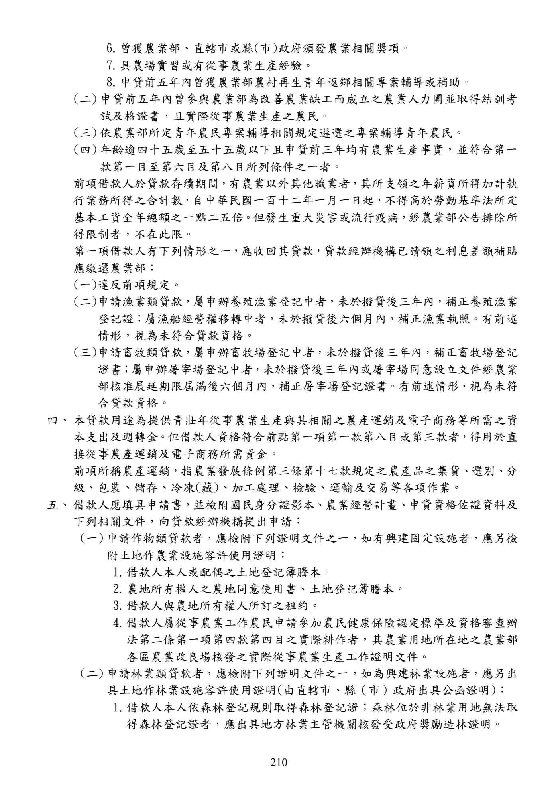
展開查看PDF原始文字層
6. 曾獲農業部、直轄市或縣(市)政府頒發農業相關獎項。 7. 具農場實習或有從事農業生產經驗。 8. 申貸前五年內曾獲農業部農村再生青年返鄉相關專案輔導或補助。 (二) 申貸前五年內曾參與 農業部為改善農業缺工而成立之農業人力團並取得結訓考 試及格證書，且實際從事農業生產之農民。 (三) 依農業部所定青年農民專案輔導相關規定遴選之專案輔導青年農民。 (四) 年齡逾四十五歲至五十五歲以下且申貸前三年均有農業生產事實，並符合第一 款第一目至第六目及第八目所列條件之一者。 前項借款人於貸款存續期間 ， 有農業以外其他職業者 ， 其所支領之年薪資所得加計執 行業務所得之合計數， 自中華民國一百十二年一月一日起 ，不得高於勞動基準法所定 基本工資全年總額之一點二五倍 。但發生重大災害或流行疫病 ， 經農業部公告排除所 得限制者，不在此限。 第一項借款人有下列情形之一 ， 應收回其貸款 ， 貸款經辦機構已請領之利息差額補貼 應繳還農業部： (一)違反前項規定。 (二)申請漁業類貸款，屬申辦養殖漁業登記中者，未於撥貸後三年內，補正養殖漁業 登記證；屬漁船經營權移轉中者，未於撥貸後六個月內，補正漁業執照。有前述 情形，視為未符合貸款資格。 (三)申請畜牧類貸款，屬申辦畜牧場登記中者，未於撥貸後三年內，補正畜牧場登記 證書 ； 屬申辦屠宰場登記中者 ， 未於撥貸後三年內或屠宰場同意設立文件經農業 部核准展延期限屆滿後六個月內，補正屠宰場登記證書。有前述情形，視為未符 合貸款資格。 四、 本貸款用途為提供青壯年從事農業生產與其相關之農產運銷及電子商務等所需之資 本支出及週轉金 。 但借款人資格符合前點第一項第一款第八目或第三款者 ， 得用於直 接從事農產運銷及電子商務所需資金。 前項所稱農產運銷，指農業發展條例第三條第十七款規定之農產品之集貨、選別、分 級、包裝、儲存、冷凍(藏)、加工處理、檢驗、運輸及交易等各項作業。 五、 借款人應填具申請書，並檢附國民身分證影本、農業經營計畫、申貸資格佐證資料及 下列相關文件，向貸款經辦機構提出申請： (一) 申請作物類貸款者，應檢附下列證明文件之一，如有興建固定設施者，應另檢 附土地作農業設施容許使用證明： 1. 借款人本人或配偶之土地登記簿謄本。 2. 農地所有權人之農地同意使用書、土地登記簿謄本。 3. 借款人與農地所有權人所訂之租約。 4. 借款人屬從事農業工作農民申請參加農民健康保險認定標準及資格審查辦 法第二條第一項第四款第四目之實際耕作者，其農業用地所在地之 農業部 各區農業改良場核發之實際從事農業生產工作證明文件。 (二) 申請林業類貸款者，應檢附下列證明文件之一，如為興建林業設施者，應另出 具土地作林業設施容許使用證明(由直轄市、縣（市）政府出具公函證明)： 1. 借款人本人依森林登記規則取得森林登記證；森林位於非林業用地無法取 得森林登記證者，應出具地方林業主管機關核發受政府獎勵造林證明。
手冊頁：211 PDF頁：213／359
2. 借款人與政府所簽訂之國、公有林租地造林契約書。 3. 借款人出具之林產物國產來源證明文件。 (三) 申請漁業類貸款者，應檢附下列證明文件之一： 1. 借款人本人、配偶、父母或祖父母之養殖漁業登記證、區劃漁業權執照、 專用漁業權入漁證明文件、定置漁業權執照、漁業執照或其他依法令許可 之養殖證明文件。 2. 屬申辦養殖漁業登記中者，僅得申貸資本支出貸款，並應檢附主管機關核 准興建水產養殖設施之農業用地作農業設施容許使用同意書。 3. 屬漁船經營權移轉中者，應檢附漁船買賣或租賃證明文件。 (四) 申請畜牧類貸款者，應檢附下列證明文件之一： 1. 借款人本人、配偶或父母之農業用地作畜牧設施容許使用同意書或畜牧場 登記證書。但屬申辦畜牧場登記中者，僅得申貸 資本支出貸款，並應檢附 農業用地作畜牧設施容許使用同意書或畜牧場買賣證明文件。養乳牛農民 需另檢附收乳證明。 2. 借款人本人之屠宰場登記證書。但屬申辦屠宰場登記中者，應檢附屠宰場 同意設立文件或屠宰場買賣證明文件。 (五) 申請農產運銷貸款者，如有興建固定設施，屬農業用地者，應檢附農業設施容 許使用同意書及建築執照，但依法免申請建築執照者免附；非屬農業用地者， 應檢附建築執照。 六、 本貸款之經辦機構如下： (一) 設有信用部之農(漁)會。 (二) 依法承受農(漁)會信用部之銀行當地分行。 (三) 全國農業金庫。 七、 本貸款之輔導機關為農業部及其所屬農業試驗改良場(所)、 各直轄市及縣(市)政府 。 八、 本貸款由貸款經辦機構提供貸款資金 ， 並由農業發展基金就其提供之資金給予利息差 額補貼。 九、 本貸款風險由貸款經辦機構負擔。 十、 本貸款利率依辦理政策性農業專案貸款辦法相關規定辦理。 十一、 本貸款期限依貸款額度及購置設備耐用年限覈實貸放 ， 其中資本支出最長十五年 ， 週轉金最長五年。但週轉金採循環動用者，貸款期限最長一年。 十二、 本貸款借款人資格符合第三點第一項第一款或第二款者，其最高貸款額度為新臺 幣五百萬元 ， 其中週轉金最高貸款額度為新臺幣一百萬元 。 首次辦理或辦理本貸款 未滿一年者，每一借款人最高貸款額度為新臺幣三百萬元。 本貸款借款人資格符合第三點第一項第三款者，其最高貸款額度為新臺幣一千萬 元，其中週轉金最高貸款額度為新臺幣二百萬元。但申請養殖類貸款者，週轉金最 高貸款額度為新臺幣五百萬元。 本貸款借款人資格符合第三點第一項第四款者，其最高貸款額度為新臺幣五百萬 元，其中週轉金最高貸款額度為新臺幣一百萬元。 本貸款借款人資格符合第三點第一項第一款、第二款或第三款，有特殊情形，報經 農業部專案同意者，其最高貸款額度不受第一項及第二項限制。 前四項週轉金最高貸款額度內，其中得循環動用之額度最高為新臺幣一百萬元。
查看PDF原始文字層
2. 借款人與政府所簽訂之國、公有林租地造林契約書。 3. 借款人出具之林產物國產來源證明文件。 (三) 申請漁業類貸款者，應檢附下列證明文件之一： 1. 借款人本人、配偶、父母或祖父母之養殖漁業登記證、區劃漁業權執照、 專用漁業權入漁證明文件、定置漁業權執照、漁業執照或其他依法令許可 之養殖證明文件。 2. 屬申辦養殖漁業登記中者，僅得申貸資本支出貸款，並應檢附主管機關核 准興建水產養殖設施之農業用地作農業設施容許使用同意書。 3. 屬漁船經營權移轉中者，應檢附漁船買賣或租賃證明文件。 (四) 申請畜牧類貸款者，應檢附下列證明文件之一： 1. 借款人本人、配偶或父母之農業用地作畜牧設施容許使用同意書或畜牧場 登記證書。但屬申辦畜牧場登記中者，僅得申貸 資本支出貸款，並應檢附 農業用地作畜牧設施容許使用同意書或畜牧場買賣證明文件。養乳牛農民 需另檢附收乳證明。 2. 借款人本人之屠宰場登記證書。但屬申辦屠宰場登記中者，應檢附屠宰場 同意設立文件或屠宰場買賣證明文件。 (五) 申請農產運銷貸款者，如有興建固定設施，屬農業用地者，應檢附農業設施容 許使用同意書及建築執照，但依法免申請建築執照者免附；非屬農業用地者， 應檢附建築執照。 六、 本貸款之經辦機構如下： (一) 設有信用部之農(漁)會。 (二) 依法承受農(漁)會信用部之銀行當地分行。 (三) 全國農業金庫。 七、 本貸款之輔導機關為農業部及其所屬農業試驗改良場(所)、 各直轄市及縣(市)政府 。 八、 本貸款由貸款經辦機構提供貸款資金 ， 並由農業發展基金就其提供之資金給予利息差 額補貼。 九、 本貸款風險由貸款經辦機構負擔。 十、 本貸款利率依辦理政策性農業專案貸款辦法相關規定辦理。 十一、 本貸款期限依貸款額度及購置設備耐用年限覈實貸放 ， 其中資本支出最長十五年 ， 週轉金最長五年。但週轉金採循環動用者，貸款期限最長一年。 十二、 本貸款借款人資格符合第三點第一項第一款或第二款者，其最高貸款額度為新臺 幣五百萬元 ， 其中週轉金最高貸款額度為新臺幣一百萬元 。 首次辦理或辦理本貸款 未滿一年者，每一借款人最高貸款額度為新臺幣三百萬元。 本貸款借款人資格符合第三點第一項第三款者，其最高貸款額度為新臺幣一千萬 元，其中週轉金最高貸款額度為新臺幣二百萬元。但申請養殖類貸款者，週轉金最 高貸款額度為新臺幣五百萬元。 本貸款借款人資格符合第三點第一項第四款者，其最高貸款額度為新臺幣五百萬 元，其中週轉金最高貸款額度為新臺幣一百萬元。 本貸款借款人資格符合第三點第一項第一款、第二款或第三款，有特殊情形，報經 農業部專案同意者，其最高貸款額度不受第一項及第二項限制。 前四項週轉金最高貸款額度內，其中得循環動用之額度最高為新臺幣一百萬元。
手冊頁：212 PDF頁：214／359

展開查看PDF原始文字層
十三、 本貸款由貸款經辦機構按核定所需金額一次或分次撥付 ； 其屬資本支出者 ， 借款人 應檢具相關憑證。 十四、 本貸款償還方式如下： (一) 資本支出： 1. 本金以每半年一期平均攤還為原則，利息隨同繳付。 2. 本金得酌訂寬緩期限，最長不得超過三年。 (二) 週轉金： 1. 非循環動用者： (1) 本金以每半年一期平均攤還為原則，利息隨同繳付。 (2) 本金得酌訂寬緩期限，最長不得超過二年。 2. 循環動用者：額度到期結清，本金於貸款期限及核定額度內隨時可動撥或 清償，利息按月繳付。 前項本息攤還方式得由借貸雙方以契約另定之。但不得超過 農業部所訂定之最長 期限。 十五、 本貸款擔保方式由貸款經辦機構依其授信有關規定 ， 審酌個別授信案件核定 ； 若借 款人擔保能力不足，貸款經辦機構應協助送請農業信用保證機構保證。 十六、 借款人不得重複申貸同一項貸款 ， 並應提出切結書載明若有重複申貸之情形 ， 視為 違約，由貸款經辦機構收回本貸款。 十七、 (刪除) 十八、 本貸款資金除循環動用週轉金外， 應於核准貸款日起三個月內動用完畢 。 但屬資本 支出 ， 應於核准貸款日起三個月內第一次動用 ， 並依工程進度於一年內動用完畢； 借款人屬第五點第三款第二目或第四款申辦養殖漁業登記中、申辦畜牧場登記中 或申辦屠宰場登記中者 ， 應於核准貸款日起三個月內第一次動用 ， 並依工程進度於 二年內動用完畢。 借款人確有困難 ， 致工程未能於前項期限內完成者 ， 得向貸款經辦機構申請延長資 本支出貸款之動用期限，最長一年，並以一次為限。 貸款經辦機構受理前項申請 ， 經評估確有必要者 ， 應向全國農業金庫申請變更動用 期限。 十九、 貸款經辦機構應於核貸後六個月內辦理貸款用途及經營狀況查驗工作；其後貸款 存續期間，每年應至少辦理一次經營狀況查驗並作成書面紀錄。 借款人之貸款利率適用辦理政策性農業專案貸款辦法第二十三條附表一第二點第 一款者，於適用該貸款利率期間，應於貸款經辦機構通知辦理查驗之日前，填具農 業經營現況申報表送貸款經辦機構。
手冊頁：213 PDF頁：215／359
{kind=link}
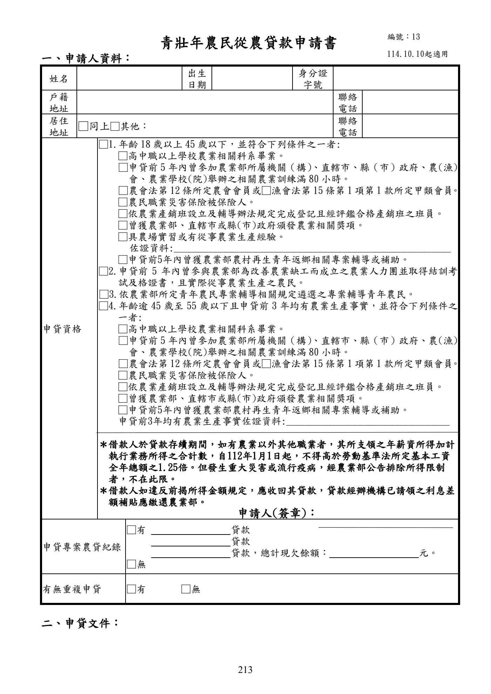
展開查看PDF原始文字層
編號：13
114.10.10起適用
青壯年農民從農貸款申請書
一、申請人資料：
姓名 出生
日期 身分證
字號
戶籍
地址 聯絡
電話
居住
地址 □同上□其他： 聯絡
電話
申貸資格
□1.年齡 18 歲以上 45 歲以下，並符合下列條件之一者:
□高中職以上學校農業相關科系畢業。
□申貸前 5 年內曾參加農業部所屬機關（構） 、直轄市、縣（市）政府、農(漁)
會、農業學校(院)舉辦之相關農業訓練滿 80 小時。
□農會法第12 條所定農會會員或□漁會法第15 條第1 項第1 款所定甲類會員 。
□農民職業災害保險被保險人。
□依農業產銷班設立及輔導辦法規定完成登記且經評鑑合格產銷班之班員。
□曾獲農業部、直轄市或縣(市)政府頒發農業相關獎項。
□具農場實習或有從事農業生產經驗。
佐證資料:________________________________________________________
□申貸前5年內曾獲農業部農村再生青年返鄉相關專案輔導或補助。
□2.申貸前 5 年內曾參與農業部為改善農業缺工而成立之農業人力團並取得結訓考
試及格證書，且實際從事農業生產之農民。
□3.依農業部所定青年農民專案輔導相關規定遴選之專案輔導青年農民。
□4.年齡逾 45 歲至 55 歲以下且申貸前 3 年均有農業生產事實，並符合下列條件之
一者:
□高中職以上學校農業相關科系畢業。
□申貸前 5 年內曾參加農業部所屬機關（構） 、直轄市、縣（市）政府、農(漁)
會、農業學校(院)舉辦之相關農業訓練滿 80 小時。
□農會法第12 條所定農會會員或□漁會法第15 條第1 項第1 款所定甲類會員 。
□農民職業災害保險被保險人。
□依農業產銷班設立及輔導辦法規定完成登記且經評鑑合格產銷班之班員。
□曾獲農業部、直轄市或縣(市)政府頒發農業相關獎項。
□申貸前5年內曾獲農業部農村再生青年返鄉相關專案輔導或補助。
申貸前3年均有農業生產事實佐證資料:_________________________________
＊借款人於貸款存續期間，如有農業以外其他職業者，其所支領之年薪資所得加計
執行業務所得之合計數，自112年1月1日起，不得高於勞動基準法所定基本工資
全年總額之1.25倍。但發生重大災害或流行疫病，經農業部公告排除所得限制
者，不在此限。
＊借款人如違反前揭所得金額規定，應收回其貸款，貸款經辦機構已請領之利息差
額補貼應繳還農業部。
申請人(簽章)：
申貸專案農貸紀錄
□有 貸款
貸款
貸款，總計現欠餘額： 元。
□無
有無重複申貸 □有 □無
二、申貸文件：手冊頁：214 PDF頁：216／359
□作物類貸款(應檢附下列證明文件之一)： □1.申請人本人或配偶之土地登記簿謄本。 □2.農地所有權人之農地同意使用書、土地登記簿謄本。 □3.申請人與農地所有權人所訂之租約。 □4.申請人屬從事農業工作農民申請參加農民健康保險認定標準及資格審查辦法第2條第1 項第4款第4目之實際耕作者，其農業用地所在地之農業部各區農業改良場核發之實際 從事農業生產工作證明文件（有效期限： 年 月 日起至 年 月 日止） 。 □如有興建固定設施者，應另檢附土地作農業設施容許使用證明。 □林業類貸款(應檢附下列證明文件之一)： □1.申請人本人依森林登記規則取得森林登記證；森林位於非林業用地無法取得森林登記 證者，應出具地方林業主管機關核發受政府獎勵造林證明。 □2.申請人與政府所簽訂之國、公有林租地造林契約書。 □3.申請人出具之林產物國產來源證明文件。 □如為興建林業設施者，應另出具土地作林業設施容許使用證明 (由直轄市、縣（市）政府 出具公函證明)。 □漁業類貸款: □1.應檢附申請人本人、配偶、父母或祖父母之□養殖漁業登記證、□區劃漁業權執照、 □專用漁業權入漁證明文件、□定置漁業權執照、□漁業執照或□其他依法令許可之 養殖證明文件。 □2.申辦養殖漁業登記中者，僅得申貸資本支出貸款，並應檢附申請人本人之主管機關核 准興建水產養殖設施之農業用地作農業設施容許使用同意書。 □3.漁船經營權移轉中者，應檢附申請人本人之□漁船買賣或□租賃證明文件。 ＊借款人有下列情形之一，視為未符合貸款資格，應收回其貸款，貸款經辦機構已請領之利息 差額補貼應繳還農業部： 1.申辦養殖漁業登記中者，未於撥貸後3年內，補正養殖漁業登記證。 2.漁船經營權移轉中者，未於撥貸後6個月內，補正漁業執照。 □畜牧類貸款： □1.申請人本人、配偶或父母之□土地作畜牧設施同意使用證明或□畜牧場登記證書(□申 辦畜牧場登記中者，僅得申貸資本支出貸款，並應檢附申請人本人□前開土地作畜牧 設施同意使用證明或□畜牧場買賣證明文件)。養乳牛者應另檢附□收乳證明。 □2.申請人本人之□屠宰場登記證書(□申辦屠宰場登記中者，應檢附□屠宰場同意設立文 件或□屠宰場買賣證明文件)。 ＊借款人有下列情形之一，視為未符合貸款資格，應收回其貸款，貸款經辦機構已請領之利息 差額補貼應繳還農業部： 1.申辦畜牧場登記中者，未於撥貸後3年內，補正畜牧場登記證書。 2.申辦屠宰場登記中者，未於撥貸後3年內或屠宰場同意設立文件經中央主管機關核准展延 期限屆滿後6個月內，補正屠宰場登記證書。 □農產運銷貸款：(如蜂農，屬申請此類貸款) □興建固定設施者： □1.興建於農業用地者，應檢附農業設施容許使用同意書及建築執照(□依法免申請建築執 照者免附)。 □2.興建於非農業用地者，應檢附建築執照。
查看PDF原始文字層
□作物類貸款(應檢附下列證明文件之一)： □1.申請人本人或配偶之土地登記簿謄本。 □2.農地所有權人之農地同意使用書、土地登記簿謄本。 □3.申請人與農地所有權人所訂之租約。 □4.申請人屬從事農業工作農民申請參加農民健康保險認定標準及資格審查辦法第2條第1 項第4款第4目之實際耕作者，其農業用地所在地之農業部各區農業改良場核發之實際 從事農業生產工作證明文件（有效期限： 年 月 日起至 年 月 日止） 。 □如有興建固定設施者，應另檢附土地作農業設施容許使用證明。 □林業類貸款(應檢附下列證明文件之一)： □1.申請人本人依森林登記規則取得森林登記證；森林位於非林業用地無法取得森林登記 證者，應出具地方林業主管機關核發受政府獎勵造林證明。 □2.申請人與政府所簽訂之國、公有林租地造林契約書。 □3.申請人出具之林產物國產來源證明文件。 □如為興建林業設施者，應另出具土地作林業設施容許使用證明 (由直轄市、縣（市）政府 出具公函證明)。 □漁業類貸款: □1.應檢附申請人本人、配偶、父母或祖父母之□養殖漁業登記證、□區劃漁業權執照、 □專用漁業權入漁證明文件、□定置漁業權執照、□漁業執照或□其他依法令許可之 養殖證明文件。 □2.申辦養殖漁業登記中者，僅得申貸資本支出貸款，並應檢附申請人本人之主管機關核 准興建水產養殖設施之農業用地作農業設施容許使用同意書。 □3.漁船經營權移轉中者，應檢附申請人本人之□漁船買賣或□租賃證明文件。 ＊借款人有下列情形之一，視為未符合貸款資格，應收回其貸款，貸款經辦機構已請領之利息 差額補貼應繳還農業部： 1.申辦養殖漁業登記中者，未於撥貸後3年內，補正養殖漁業登記證。 2.漁船經營權移轉中者，未於撥貸後6個月內，補正漁業執照。 □畜牧類貸款： □1.申請人本人、配偶或父母之□土地作畜牧設施同意使用證明或□畜牧場登記證書(□申 辦畜牧場登記中者，僅得申貸資本支出貸款，並應檢附申請人本人□前開土地作畜牧 設施同意使用證明或□畜牧場買賣證明文件)。養乳牛者應另檢附□收乳證明。 □2.申請人本人之□屠宰場登記證書(□申辦屠宰場登記中者，應檢附□屠宰場同意設立文 件或□屠宰場買賣證明文件)。 ＊借款人有下列情形之一，視為未符合貸款資格，應收回其貸款，貸款經辦機構已請領之利息 差額補貼應繳還農業部： 1.申辦畜牧場登記中者，未於撥貸後3年內，補正畜牧場登記證書。 2.申辦屠宰場登記中者，未於撥貸後3年內或屠宰場同意設立文件經中央主管機關核准展延 期限屆滿後6個月內，補正屠宰場登記證書。 □農產運銷貸款：(如蜂農，屬申請此類貸款) □興建固定設施者： □1.興建於農業用地者，應檢附農業設施容許使用同意書及建築執照(□依法免申請建築執 照者免附)。 □2.興建於非農業用地者，應檢附建築執照。
手冊頁：215 PDF頁：217／359
三、貸款金額及用途： 單位：新臺幣元 貸款金額 (大寫) 新臺幣 元整 貸款期間 資本支出 年 週 轉 金 年 貸款用途
□資本支出：金額_____________________ □週 轉 金：金額_____________________ 動用方式：□循環 □非循環 *申請人為申貸資格1.至2.者 ， 每一借款人最高貸款額度為500萬元 ， 其中週轉金 最高貸款額度為100萬元。首次辦理或辦理本貸款未滿1年者，最高貸款額度為 300萬元。 *本人知悉貸後資本支出應檢附足具證據力之相關憑證 (如統一發票、收據 .. 等)，以佐證貸款用途。 申請人(簽章)：_____________________
敬請 惠予核貸為荷 此致 貸款經辦機構
申請人(簽章)：
中 華 民 國 年 月 日
備註：1.其他徵授信資料請依貸款經辦機構相關規定辦理。 2.申請人之貸款利率適用辦理政策性農業專案貸款辦法第23條附表1第2點 第1款者，於適用該貸款利率期間，應於貸款經辦機構通知辦理查驗之日 前，填具農業經營現況申報表送貸款經辦機構。
查看PDF原始文字層
三、貸款金額及用途： 單位：新臺幣元
貸款金額
(大寫) 新臺幣 元整 貸款期間 資本支出 年
週 轉 金 年
貸款用途
□資本支出：金額_____________________
□週 轉 金：金額_____________________ 動用方式：□循環 □非循環
*申請人為申貸資格1.至2.者 ， 每一借款人最高貸款額度為500萬元 ， 其中週轉金
最高貸款額度為100萬元。首次辦理或辦理本貸款未滿1年者，最高貸款額度為
300萬元。
*本人知悉貸後資本支出應檢附足具證據力之相關憑證 (如統一發票、收據 ..
等)，以佐證貸款用途。
申請人(簽章)：_____________________
敬請
惠予核貸為荷
此致
貸款經辦機構
申請人(簽章)：
中 華 民 國 年 月 日
備註：1.其他徵授信資料請依貸款經辦機構相關規定辦理。
2.申請人之貸款利率適用辦理政策性農業專案貸款辦法第23條附表1第2點
第1款者，於適用該貸款利率期間，應於貸款經辦機構通知辦理查驗之日
前，填具農業經營現況申報表送貸款經辦機構。手冊頁：216 PDF頁：218／359
{kind=link}
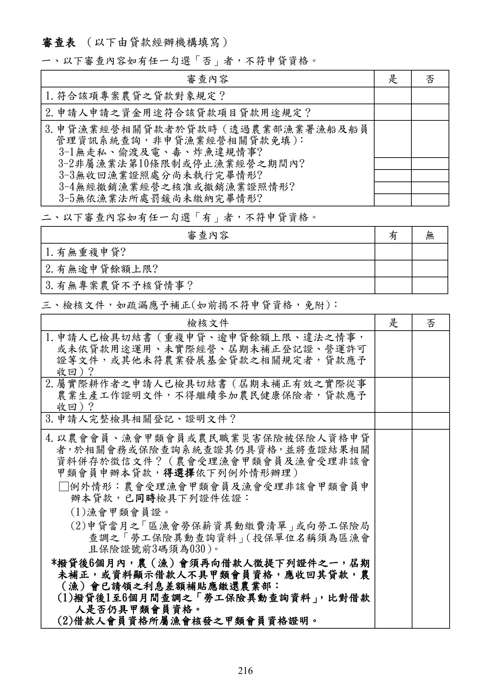
展開查看PDF原始文字層
審查表 （以下由貸款經辦機構填寫） 一、以下審查內容如有任一勾選「否」者，不符申貸資格。 審查內容 是 否 1.符合該項專案農貸之貸款對象規定？ 2.申請人申請之資金用途符合該貸款項目貸款用途規定？ 3.申貸漁業經營相關貸款者於貸款時（透過農業部漁業署漁船及船員 管理資訊系統查詢，非申貸漁業經營相關貸款免填） ： 3-1無走私、偷渡及電、毒、炸魚違規情事? 3-2非屬漁業法第10條限制或停止漁業經營之期間內? 3-3無收回漁業證照處分尚未執行完畢情形? 3-4無經撤銷漁業經營之核准或撤銷漁業證照情形? 3-5無依漁業法所處罰鍰尚未繳納完畢情形? 二、以下審查內容如有任一勾選「有」者，不符申貸資格。 審查內容 有 無 1.有無重複申貸? 2.有無逾申貸餘額上限? 3.有無專案農貸不予核貸情事？ 三、檢核文件，如疏漏應予補正(如前揭不符申貸資格，免附)： 檢核文件 是 否 1.申請人已檢具切結書（重複申貸、逾申貸餘額上限、違法之情事， 或未依貸款用途運用、未實際經營、屆期未補正登記證、營運許可 證等文件，或其他未符農業發展基金貸款之相關規定者，貸款應予 收回）? 2.屬實際耕作者之申請人已檢具切結書（屆期未補正有效之實際從事 農業生產工作證明文件，不得繼續參加農民健康保險者，貸款應予 收回）? 3.申請人完整檢具相關登記、證明文件？ 4.以農會會員、漁會甲類會員或農民職業災害保險被保險人資格申貸 者 ， 於相關會務或保險查詢系統查證其仍具資格 ， 並將查證結果相關 資料併存於徵信文件？（農會受理漁會甲類會員及漁會受理非該會 甲類會員申辦本貸款，得選擇依下列例外情形辦理） □例外情形：農會受理漁會甲類會員及漁會受理非該會甲類會員申 辦本貸款，已同時檢具下列證件佐證： (1)漁會甲類會員證。 (2)申貸當月之 「區漁會勞保薪資異動繳費清單」 或向勞工保險局 查調之「勞工保險異動查詢資料」 （投保單位名稱須為區漁會 且保險證號前3碼須為030）。 *撥貸後6個月內，農（漁）會須再向借款人徵提下列證件之一，屆期 未補正，或資料顯示借款人不具甲類會員資格，應收回其貸款，農 （漁）會已請領之利息差額補貼應繳還農業部： (1)撥貸後1至6個月間查調之「勞工保險異動查詢資料」 ，比對借款 人是否仍具甲類會員資格。 (2)借款人會員資格所屬漁會核發之甲類會員資格證明。
手冊頁：217 PDF頁：219／359
審查結果: □符合，審查合格者不代表准予核貸，尚須依徵授信程序審查，並經 授信審議委員會審議。 □不符，說明:
經辦人員 覆核 主任、襄(副)理 總幹事、經理
註：以上簽章人員請註明日期。
查看PDF原始文字層
審查結果: □符合，審查合格者不代表准予核貸，尚須依徵授信程序審查，並經
授信審議委員會審議。
□不符，說明:
經辦人員 覆核 主任、襄(副)理 總幹事、經理
註：以上簽章人員請註明日期。手冊頁：218 PDF頁：220／359
青壯年農民從農貸款農業經營現況申報表 (貸款利率適用辦理政策性農業專案貸款辦法第23條附表1第2點第1款者，於適用該貸款利率期 間適用) 一、借款人： 二、原借款金額及用途：資本支出 元、週轉性支出 元 三、經營場址或設備地點(名稱、地段、地號或門牌號)： 四、農業經營現況說明： 說明： 購買農作資材、銷售證明等資料影本黏貼(可浮貼)： 相片黏貼 相片黏貼處(至少2張，可浮貼)： 拍攝日期： 以上資料屬實，如經查證有未依貸款用途運用、未實際經營，或其他未能符合農業發展基金貸 款之相關規定者，即視為違約，本貸款視為全部到期並終止動用，並由貸款經辦機構收回本貸 款。 此致 農(漁)會、銀行、金庫 借款人(親簽)： 日 期： 編號:13.1 110.8.1 起適用
查看PDF原始文字層
青壯年農民從農貸款農業經營現況申報表 (貸款利率適用辦理政策性農業專案貸款辦法第23條附表1第2點第1款者，於適用該貸款利率期 間適用) 一、借款人： 二、原借款金額及用途：資本支出 元、週轉性支出 元 三、經營場址或設備地點(名稱、地段、地號或門牌號)： 四、農業經營現況說明： 說明： 購買農作資材、銷售證明等資料影本黏貼(可浮貼)： 相片黏貼 相片黏貼處(至少2張，可浮貼)： 拍攝日期： 以上資料屬實，如經查證有未依貸款用途運用、未實際經營，或其他未能符合農業發展基金貸 款之相關規定者，即視為違約，本貸款視為全部到期並終止動用，並由貸款經辦機構收回本貸 款。 此致 農(漁)會、銀行、金庫 借款人(親簽)： 日 期： 編號:13.1 110.8.1 起適用
手冊頁：219 PDF頁：221／359
函令摘要：釋示借款人薪資所得超過基本工資之全年總額疑義 【行政院農業委員會104年8月10日農授金字第1045084313號函】 主旨：所詢「青年從農創業貸款(下稱本貸款)」 借款人薪資所得超過基本工資之全年總額 案，復如說明，請查照。 說明： 一、 復貴會104年7月10日鹽鄉農信字第1040002135號函。 二、 貴會於103年7月1日貸放○○○本貸款，貸放時查核借款人102年度薪資所得為零，符 合規定。嗣後經查其103年薪資所得大於基本工資之全年總額。 三、 依據貸放當時「辦理政策性農業專案貸款辦法」第17條規定，本貸款借款人應無農業 以外之專任職業；如有兼職者，其所支領之年薪資所得應低於勞動基準法所定基本工 資之全年總額。 四、 本案係於103年7月1日貸放，經查當時基本工資全年總額約23萬元；次查借款人103年 7月至12月貸款存續期間代工所得計約10萬元，顯示其申貸第1年(103年)薪資所得主 要來自貸放前，依其貸款存續期間比例計算薪資所得，尚與貸款規定意旨相符；惟嗣 後年度應以全年度薪資所得判別是否符合規定，並請貴會於貸款存續期間內確實查核 。
函令摘要：釋示借款人部分兼職得否認定為農業延伸所得疑義 【行政院農業委員會104年12月25日農授金字第1040737978號函】 主旨：所詢「青年從農創業貸款(下稱本貸款)」 借款人部分兼職薪資得否認定為農業延伸 所得，不計入薪資總額限範圍案，復如說明，請查照。 說明： 一、 復貴會104年12月9日布信字第1040004160號函。 二、 查「辦理政策性農業專案貸款辦法」第17條第2項規定，本貸款借款人於貸款存續期 間，如有農業以外其他職業者，其所支領之年薪資所得加計執行業務所得之合計數應 低於勞動基準法所定基本工資之全年總額 ，前揭規定 ，係規範借款人須於貸款存續期 間以農業為主要職業，爰 對農業以外其他職業所支領薪資所得及執行業務所得予以 限制，至於借款人申貸前支領之所得並無限制規定，合先敘明。 三、 借款人配合本會 改良場、農會與大學推廣教育訓練分享從農經驗及擔任地方政府農 業相關審查委員之所得 ， 得否認定為農業延伸所得乙節 ， 如借款人係配合本會農業政 策，推廣農業與從農經驗，且非固定薪資性質，於貸款存續期間有類此所得者，得視 為農業延伸所得，不計入薪資總額限制範圍，惟貸款經辦機構應確實查證，並於徵信 相關文件載明及檢具相關資料佐證。
查看PDF原始文字層
函令摘要：釋示借款人薪資所得超過基本工資之全年總額疑義 【行政院農業委員會104年8月10日農授金字第1045084313號函】 主旨：所詢「青年從農創業貸款(下稱本貸款)」 借款人薪資所得超過基本工資之全年總額 案，復如說明，請查照。 說明： 一、 復貴會104年7月10日鹽鄉農信字第1040002135號函。 二、 貴會於103年7月1日貸放○○○本貸款，貸放時查核借款人102年度薪資所得為零，符 合規定。嗣後經查其103年薪資所得大於基本工資之全年總額。 三、 依據貸放當時「辦理政策性農業專案貸款辦法」第17條規定，本貸款借款人應無農業 以外之專任職業；如有兼職者，其所支領之年薪資所得應低於勞動基準法所定基本工 資之全年總額。 四、 本案係於103年7月1日貸放，經查當時基本工資全年總額約23萬元；次查借款人103年 7月至12月貸款存續期間代工所得計約10萬元，顯示其申貸第1年(103年)薪資所得主 要來自貸放前，依其貸款存續期間比例計算薪資所得，尚與貸款規定意旨相符；惟嗣 後年度應以全年度薪資所得判別是否符合規定，並請貴會於貸款存續期間內確實查核 。 函令摘要：釋示借款人部分兼職得否認定為農業延伸所得疑義 【行政院農業委員會104年12月25日農授金字第1040737978號函】 主旨：所詢「青年從農創業貸款(下稱本貸款)」 借款人部分兼職薪資得否認定為農業延伸 所得，不計入薪資總額限範圍案，復如說明，請查照。 說明： 一、 復貴會104年12月9日布信字第1040004160號函。 二、 查「辦理政策性農業專案貸款辦法」第17條第2項規定，本貸款借款人於貸款存續期 間，如有農業以外其他職業者，其所支領之年薪資所得加計執行業務所得之合計數應 低於勞動基準法所定基本工資之全年總額 ，前揭規定 ，係規範借款人須於貸款存續期 間以農業為主要職業，爰 對農業以外其他職業所支領薪資所得及執行業務所得予以 限制，至於借款人申貸前支領之所得並無限制規定，合先敘明。 三、 借款人配合本會 改良場、農會與大學推廣教育訓練分享從農經驗及擔任地方政府農 業相關審查委員之所得 ， 得否認定為農業延伸所得乙節 ， 如借款人係配合本會農業政 策，推廣農業與從農經驗，且非固定薪資性質，於貸款存續期間有類此所得者，得視 為農業延伸所得，不計入薪資總額限制範圍，惟貸款經辦機構應確實查證，並於徵信 相關文件載明及檢具相關資料佐證。
手冊頁：220 PDF頁：222／359
函令摘要：釋示借款人為獨資行號負責人是否符合貸款資格疑義 【行政院農業委員會105年1月13日農授金字第1055040139號函】 主旨：所詢「青年從農創業貸款(下稱本貸款)」借款人為獨資行號負責人，是否符合貸款 資格案，復如說明，請查照。 說明： 一、 依據本會農業金融局案陳 貴府105年1月11日府農輔字第1050009693號函辦理。 二、 查「辦理政策性農業專案貸款辦法」第17條第2項規定，本貸款借款人於貸款存續期 間，如有農業以外其他職業者，其所支領之年薪資所得加計執行業務所得之合計數應 低於勞動基準法所定基本工資之全年總額。依前揭規定 ， 本貸款借款人須於貸款存續 期間以農業為主要職業 ， 爰對農業以外其他職業所支領薪資所得及執行業務所得予以 限制，至於借款人為獨資行號負責人，本貸款並無限制規定。
函令摘要：釋示借款人之耕種土地為乙種建築用地是否符合貸款資格疑 義 【行政院農業委員會105年12月6日農授金字第1055084612號函】 主旨：有關所詢「青年從農創業貸款」借款人如耕種土地為乙種建築用地，其檢具土地委 託管理契約書 ， 是否符合該貸款要點第5點第1款第2目規定乙案 ， 復如說明 ， 請 查 照。 說明： 一、 復貴會105年11月11日大農授字第10500003929號函。 二、 旨揭貸款要點第5點第1款規定 ， 申請作物類貸款者 ， 借款人應檢附農地所有權人之農 地同意使用書、土地登記謄本等文件。如有興建固定設施者，應另檢附土地作農業設 施容許使用證明。 三、 查「非都市土地使用管制規則」第6條附表1規定， 「乙種建築用地」容許使用項目包 括農作產銷設施等，借款人如於乙種建築用地上從事農作，屬降限利用，為容許使用 範圍，並無違反該土地利用規定；惟如欲於該土地興建固定設施，因非屬農業發展條 例所稱之農地，將無法取得土地作農業設施容許使用證明。 四、 另檢具農地所有權人之農地同意使用書 ， 係為確保借款人對該土地有合法使用權 ， 並 無特殊格式要求 ， 至於旨揭土地委託管理契約書是否符合前揭規定意旨 ， 請貴會覈實 認定。
查看PDF原始文字層
函令摘要：釋示借款人為獨資行號負責人是否符合貸款資格疑義 【行政院農業委員會105年1月13日農授金字第1055040139號函】 主旨：所詢「青年從農創業貸款(下稱本貸款)」借款人為獨資行號負責人，是否符合貸款 資格案，復如說明，請查照。 說明： 一、 依據本會農業金融局案陳 貴府105年1月11日府農輔字第1050009693號函辦理。 二、 查「辦理政策性農業專案貸款辦法」第17條第2項規定，本貸款借款人於貸款存續期 間，如有農業以外其他職業者，其所支領之年薪資所得加計執行業務所得之合計數應 低於勞動基準法所定基本工資之全年總額。依前揭規定 ， 本貸款借款人須於貸款存續 期間以農業為主要職業 ， 爰對農業以外其他職業所支領薪資所得及執行業務所得予以 限制，至於借款人為獨資行號負責人，本貸款並無限制規定。 函令摘要：釋示借款人之耕種土地為乙種建築用地是否符合貸款資格疑 義 【行政院農業委員會105年12月6日農授金字第1055084612號函】 主旨：有關所詢「青年從農創業貸款」借款人如耕種土地為乙種建築用地，其檢具土地委 託管理契約書 ， 是否符合該貸款要點第5點第1款第2目規定乙案 ， 復如說明 ， 請 查 照。 說明： 一、 復貴會105年11月11日大農授字第10500003929號函。 二、 旨揭貸款要點第5點第1款規定 ， 申請作物類貸款者 ， 借款人應檢附農地所有權人之農 地同意使用書、土地登記謄本等文件。如有興建固定設施者，應另檢附土地作農業設 施容許使用證明。 三、 查「非都市土地使用管制規則」第6條附表1規定， 「乙種建築用地」容許使用項目包 括農作產銷設施等，借款人如於乙種建築用地上從事農作，屬降限利用，為容許使用 範圍，並無違反該土地利用規定；惟如欲於該土地興建固定設施，因非屬農業發展條 例所稱之農地，將無法取得土地作農業設施容許使用證明。 四、 另檢具農地所有權人之農地同意使用書 ， 係為確保借款人對該土地有合法使用權 ， 並 無特殊格式要求 ， 至於旨揭土地委託管理契約書是否符合前揭規定意旨 ， 請貴會覈實 認定。
手冊頁：221 PDF頁：223／359
函令摘要：釋示借款人為公司負責人是否符合貸款資格疑義 【行政院農業委員會105年12月28日農授金字第1050736559號函】 主旨：所詢「青年從農創業貸款」申貸資格等疑義案，復如說明，請 查照。 說明： 一、 復貴會105年12月20日埔農信字第1050005521號函。 二、 有關借款人申貸資格乙節，查借款人林君為本會第2屆專案輔導青年農民，林君目前 為有限公司負責人，倘該公司為農企業，且未違反「辦理政策性農業專案貸款辦法」 第16條第2項規定，借款人於貸款存續期間，如有農業以外其他職業者，其所支領之 年薪資所得加計執行業務所得之合計數，應低於勞動基準法所定基本工資之全年總 額，方符合規定。請貴會依規定覈實審查。 三、 另專案申請提高週轉金額度為340萬元乙節，貴會傳真補充說明借款人週轉金申貸金 額調降為200萬元，本次免專案申請提高額度，併予敘明。 函令摘要：「青年從農創業貸款」200 萬元額度於 5 年貸款期間免息規定 得申請延期還款 【行政院農業委員會 109 年 2 月27 日農授金字第 1095084144 號函】 主旨： 「青年從農創業貸款」200萬元額度於5年貸款期間免息規定，舊貸案件如有特殊因 素致還款困難，得申請延期還款，並於5年內適用免息規定，由本會補貼，請查照並 加強宣導。 說明： 一、本會本（109）年2月27日修正發布「辦理政策性農業專案貸款」第23條附表1規定， 並自本年3月1日生效（正本諒達）。 二、前開修正規定，係為擴大鼓勵青年投入農業經營，爰增訂200萬元額度於5年貸款期 間，適用利率為0%之規定（專案輔導青年農民、循環動用週轉金排除適用），另為支 持既有青農持續經營，特訂定舊貸戶無須申請，直接適用5年免息規定。 三、本年3月1日尚有舊貸餘額之案件 ， 無論借款人年齡是否超過45歲 ， 該日貸款餘額在200 萬元以下，自該日起算，最長5年，利率為0%。如有特殊因素致還款困難，得依「辦 理政策性農業專案貸款辦法」 第22條規定向農會申請延期還款，除展延期間超過原貸 款期限或剩餘期限非以平均攤還方式辦理者須報本會核准外 ， 餘由貸款經辦機構依權 責審核。
查看PDF原始文字層
函令摘要：釋示借款人為公司負責人是否符合貸款資格疑義
【行政院農業委員會105年12月28日農授金字第1050736559號函】
主旨：所詢「青年從農創業貸款」申貸資格等疑義案，復如說明，請 查照。
說明：
一、 復貴會105年12月20日埔農信字第1050005521號函。
二、 有關借款人申貸資格乙節，查借款人林君為本會第2屆專案輔導青年農民，林君目前
為有限公司負責人，倘該公司為農企業，且未違反「辦理政策性農業專案貸款辦法」
第16條第2項規定，借款人於貸款存續期間，如有農業以外其他職業者，其所支領之
年薪資所得加計執行業務所得之合計數，應低於勞動基準法所定基本工資之全年總
額，方符合規定。請貴會依規定覈實審查。
三、 另專案申請提高週轉金額度為340萬元乙節，貴會傳真補充說明借款人週轉金申貸金
額調降為200萬元，本次免專案申請提高額度，併予敘明。
函令摘要：「青年從農創業貸款」200 萬元額度於 5 年貸款期間免息規定
得申請延期還款
【行政院農業委員會 109 年 2 月27 日農授金字第 1095084144 號函】
主旨： 「青年從農創業貸款」200萬元額度於5年貸款期間免息規定，舊貸案件如有特殊因
素致還款困難，得申請延期還款，並於5年內適用免息規定，由本會補貼，請查照並
加強宣導。
說明：
一、本會本（109）年2月27日修正發布「辦理政策性農業專案貸款」第23條附表1規定，
並自本年3月1日生效（正本諒達）。
二、前開修正規定，係為擴大鼓勵青年投入農業經營，爰增訂200萬元額度於5年貸款期
間，適用利率為0%之規定（專案輔導青年農民、循環動用週轉金排除適用），另為支
持既有青農持續經營，特訂定舊貸戶無須申請，直接適用5年免息規定。
三、本年3月1日尚有舊貸餘額之案件 ， 無論借款人年齡是否超過45歲 ， 該日貸款餘額在200
萬元以下，自該日起算，最長5年，利率為0%。如有特殊因素致還款困難，得依「辦
理政策性農業專案貸款辦法」 第22條規定向農會申請延期還款，除展延期間超過原貸
款期限或剩餘期限非以平均攤還方式辦理者須報本會核准外 ， 餘由貸款經辦機構依權
責審核。手冊頁：222 PDF頁：224／359

展開查看PDF原始文字層
休閒農場貸款要點 中華民國103 年10 月28 日行政院農業委員會農金字第1035084023 號令訂定發布全文18 點 中華民國 105 年 3 月 18 日行政院農業委員會農金字第 1055084021N 號令修正第 10 點， 並自 105 年 3 月 22 日生效 中華民國108 年11 月22 日行政院農業委員會農金字第1085084745I 號令修正部分規定， 並自 108 年 11 月 25 日生效 中華民國109 年2 月27 日行政院農業委員會農授金字第1095084100J 號令修正第11 點、 第 14 點，並自 109 年 3 月1 日生效 中華民國 109 年 4 月 8 日行政院農業委員會農授金字第 1095084301A 號令修正第 12 點， 並自 109 年 4 月 9 日生效 一、 行政院農業委員會(以下簡稱農委會)為鼓勵發展休閒農業 ， 協助經營業者提升產業競 爭力，促進農業旅遊國際化，特訂定本要點。 二、 本貸款除依辦理政策性農業專案貸款辦法辦理外 ， 依本要點規定辦理 。 本要點未規定 者，依農業發展基金貸款作業規範及其他有關規定辦理。 三、 本貸款之對象為依休閒農業輔導管理辦法規定 ， 已取得休閒農場籌設同意文件或休閒 農場許可登記證之自然人或法人。 前項借款人已取得休閒農場籌設同意文件者 ，應依休閒農業輔導管理辦法第二十七條 規定之籌設期限補正許可登記證，屆期未補正者，視為未符合貸款資格，應收回其貸 款，貸款經辦機構已請領之利息差額補貼應繳還農委會。 四、 本貸款用途為經營休閒農場所需建造 、 改善休閒農業設施之資本支出或經營所需週轉 金。但購地所需資金非在本貸款核貸用途之列。 五、 借款人應填具申請書，並檢附身分證明文件、貸款計畫、休閒農場籌設同意文件或許 可登記證影本、休閒農場經營計畫書及下列相關文件，向貸款經辦機構提出申請： (一) 申請貸款用途，如有建造、 改善休閒農業輔導管理辦法第二十一條第一款至第 四款所指休閒農業設施，應另檢附興辦事業計畫同意許可文件或土地核准使用 文件影本。 (二) 申請貸款用途，如有建造、 改善休閒農業輔導管理辦法第二十一條第五款至第 二十三款所指休閒農業設施，應另檢附土地作農業設施容許使用證明影本。 六、 本貸款之經辦機構如下： (一) 設有信用部之農(漁)會。 (二) 依法承受農(漁)會信用部之銀行當地分行。 (三) 全國農業金庫。 前項第一款貸款經辦機構不得以內部融資或交互授信方式辦理本貸款。 前項所稱交互授信，指申貸農(漁)會與經辦農(漁)會有下列情形之一者： (一) 申貸農(漁)會貸予經辦農(漁)會本貸款，而經辦農(漁)會於尚未清償前，對申 貸農(漁)會貸予本貸款。 (二) 申貸農(漁)會對經辦農(漁)會以外之他農(漁)會貸予本貸款，該他農(漁)會又
手冊頁：223 PDF頁：225／359

展開查看PDF原始文字層
對經辦農(漁)會貸予本貸款，而經辦農(漁)會於前開貸款尚未清償前，對申貸
農(漁)會貸予本貸款。
(三) 四家以上農(漁)會間有前款接續貸款之情形。
法人向第一項第一款或第二款貸款經辦機構申請本貸款者 ， 應於其依休閒農業輔導管
理辦法登記所在直轄市、縣(市)轄區內之貸款經辦機構申辦。
七、 本貸款之輔導機關 （單位） 為農委會及其所屬相關機關 （構） 、 直轄市及縣(市)政府。
八、 本貸款由貸款經辦機構提供貸款資金 ， 並由農業發展基金就其出資金給予利息差額補
貼。
九、 本貸款風險由貸款經辦機構負擔。
十、 本貸款利率依辦理政策性農業專案貸款辦法相關規定辦理。
十一、 本貸款期限依貸款額度及購置設備耐用年限覈實貸放 ， 其中資本支出最長十五年，
週轉金最長五年。
十二、 本貸款額度如下：
(一) 資本支出：
1. 建造、改善休閒農業設施，符合休閒農業輔導管理辦法第二十一條第一款
至第四款者，最高貸款額度為新臺幣二千萬元。
2. 建造、改善休閒農業設施，符合休閒農業輔導管理辦法第二十一條第五款
至第二十三款者，最高貸款額度為新臺幣八百萬元。
(二) 週轉金最高貸款額度為新臺幣一千萬元。 但情形特殊，報經農委會專案同意
者，資本支出與週轉金合計額度最高為新臺幣三千萬元。
(三)每一借款人最高貸款額度為新臺幣三千萬元。但休閒農場為二人以上共同申
請籌設或經營者，每一休閒農場最高貸款額度為新臺幣三千萬元。
十三、 本貸款由貸款經辦機構按核定所需金額一次或分次撥付；其屬資本支出者，應檢具
相關憑證。
十四、 本貸款償還方式如下:
(一) 資本支出：
1.本金以每半年一期平均攤還為原則，利息隨同繳付。
2.本金得酌訂寬緩期限，最長不得超過三年。
(二) 週轉金：
1.本金以每半年一期平均攤還為原則，利息隨同繳付。
2.本金得酌訂寬緩期限，最長不得超過二年。
前項本息攤還方式得由借貸雙方以契約另定之 。 但不得超過農委會所訂定之最長期
限。
十五、 本貸款擔保方式由貸款經辦機構依其授信有關規定，審酌個別授信案件核定；若借
款人擔保能力不足，貸款經辦機構應協助送請農業信用保證機構保證。
十六、 借款人就同一資金用途不得重複申貸 ， 並應提出切結書載明若有重複申貸之情形，
視為違約，由貸款經辦機構收回本貸款。
十七、 本貸款資金應於核准貸款日起三個月內動用完畢。但屬資本支出，應於核准貸款日
起三個月內第一次動用，並依工程進度於一年內動用完畢。手冊頁：224 PDF頁：226／359
借款人確有困難，致工程未能於前項期限內完成者，得向貸款經辦機構申請延長資 本支出貸款之動用期限，最長一年，並以一次為限。 貸款經辦機構受理前項申請，經評估確有必要者，應向全國農業金庫申請變更動用 期限。 十八、 貸款經辦機構應於撥貸後六個月內辦理貸款用途及經營狀況查驗工作 ； 其後貸款存 續期間，每年應至少辦理一次經營狀況查驗並作成書面紀錄。
查看PDF原始文字層
借款人確有困難，致工程未能於前項期限內完成者，得向貸款經辦機構申請延長資 本支出貸款之動用期限，最長一年，並以一次為限。 貸款經辦機構受理前項申請，經評估確有必要者，應向全國農業金庫申請變更動用 期限。 十八、 貸款經辦機構應於撥貸後六個月內辦理貸款用途及經營狀況查驗工作 ； 其後貸款存 續期間，每年應至少辦理一次經營狀況查驗並作成書面紀錄。
手冊頁：225 PDF頁：227／359

展開查看PDF原始文字層
編號:14
112.8.1起適用
休閒農場貸款申請書
一、申請人資料：
姓名
(名稱)
出生日期
(設立日期)
身分證字號
(統一編號)
負責人
(代表人)
負責人身分
證字號
戶籍地址
(登記地址)
聯絡
電話
居住地址
(農場地址) □同上 □其他： 聯絡
電話
申貸資格
依休閒農業輔導管理辦法規定，已取得□休閒農場籌設同意文件或□休閒農場許可
登記證之□自然人或□法人。
＊申請人取得休閒農場籌設同意文件者，應依規定之籌設期限補正休閒農場許可登
記證，屆期未補正者，視為未符合貸款資格，應收回其貸款，貸款經辦機構已請
領之利息差額補貼應繳還農業部。
申貸專案農貸紀錄
□有 貸款
貸款
貸款，總計現欠餘額： 元。
□無
有無重複申貸 □有 □無
二、申貸文件：
□休閒農場籌設同意文件或□休閒農場許可登記證影本
□休閒農場經營計畫書及下列相關文件：
□1.申請貸款用途，如有建造、改善休閒農業輔導管理辦法第21條第1款至第4款所指休閒農業
設施(如：住宿、餐飲設施)者，應檢附□興辦事業計畫同意許可文件或□土地核准使用文
件影本。
□2.申請貸款用途，如有建造、改善休閒農業輔導管理辦法第21條第5款至第23款所指休閒農
業設施(如：門票收費、衛生設施)者，應檢附土地作農業設施容許使用證明影本。
三、貸款金額及用途： 單位：新臺幣元
貸款金額
(大寫) 新臺幣 元整 貸款期間 資本支出 年
週轉金 年
貸款用途
□資本支出：金額
□週轉金：金額
□1.建造、改善休閒農業設施，符合休閒農業輔導管理辦法第 21條第1款至
第4款者。
□2.建造、改善休閒農業設施，符合休閒農業輔導管理辦法第 21條第5款至
第23款者。
＊本貸款用途不包括購地。
＊本人知悉貸後資本支出應檢附足具證據力之相關憑證 (如統一發票、收據..
等)，以佐證貸款用途。
申請人(簽章)：手冊頁：226 PDF頁：228／359
敬請 惠予核貸為荷 此致 貸款經辦機構 申請人(簽章)： 中 華 民 國 年 月 日 備註：其他徵授信資料請依貸款經辦機構相關規定辦理。
查看PDF原始文字層
敬請 惠予核貸為荷 此致 貸款經辦機構 申請人(簽章)： 中 華 民 國 年 月 日 備註：其他徵授信資料請依貸款經辦機構相關規定辦理。
手冊頁：227 PDF頁：229／359

展開查看PDF原始文字層
經辦人員 覆核 主任、襄(副)理 總幹事、經理 註：以上簽章人員請註明日期。 審查表 （以下由貸款經辦機構填寫） 一、以下審查內容如有任一勾選「否」者，不符申貸資格。 審查內容 是 否 1.符合該項專案農貸之貸款對象規定？ 2.申請人申請之資金用途符合該貸款項目貸款用途規定？ 二、以下審查內容如有任一勾選「有」者，不符申貸資格。 審查內容 有 無 1.有無重複申貸? 2.有無逾申貸餘額上限? 3.有無專案農貸不予核貸情事？ 三、檢核文件，如疏漏應予補正(如前揭不符申貸資格，免附)： 檢核文件 是 否 1.申請人已檢具切結書（重複申貸、逾申貸餘額上限、違法之情事， 或未依貸款用途運用、未實際經營、屆期未補正登記證、營運許可 證等文件，或其他未符農業發展基金貸款之相關規定者，貸款應予 收回）? 2.申請人完整檢具相關登記、證明文件？ 審查結果：□符合，審查合格者不代表准予核貸，尚須依徵授信程序審查，並經授 信審議委員會審議。 □不符，說明:
手冊頁：228 PDF頁：230／359
農民組織及農企業產銷經營及研發創新貸款要點 中華民國103 年10 月28 日行政院農業委員會農金字第1035084024 號令訂定發布全文18 點 中華民國 105 年 3 月 18 日行政院農業委員會農金字第 1055084021O 號令修正部分規定， 並自 105 年 3 月 22 日生效 中華民國 105 年 10 月 7 日行政院農業委員會農金字第 1055084421B 號令修正第 4 點， 並 自 105 年 10 月 12 日生效 中華民國 107 年 3 月 30 日行政院農業委員會農金字第 1075084075F 號令修正部分規定， 並自 107 年 4 月 16 日生效 中華民國 108 年 11 月 22 日行政院農業委員會農金字第 1085084745J 號令修正第 3 點、 第 5 點、第 17 點，並自 108 年 11 月 25 日生效 中華民國109 年2 月27 日行政院農業委員會農授金字第1095084100K號令修正部分規定， 並自 109 年 3 月 1 日生效 中華民國 109 年 10 月 21 日行政院農業委員會農授金字第 1095085177G 號令修正部分規 定，並自 109 年 11 月 1 日生效 中華民國 110 年 7 月 29 日行政院農業委員會農授金字第 1105084731E 號令修正第 3 點、 第 5 點，並自 110 年 8 月 1 日生效 中華民國 111 年 9 月 29 日行政院農業委員會農授金字第 1115085078F 號令修正第 3 點、 第 5 點、第 14 點，並自 111 年 10 月 1 日生效 中華民國 114 年 10 月 9 日農業部農授金字第 1147467208 號令修正部分規定，並自中華 民國 114 年 10 月 10 日生效 一、 農業部為協助農民組織及農企業提升技術能力或從事研究發展 ， 以提高生產技術與產 品品質或服務之附加價值，強化競爭力，促進農業產業升級，特訂定本要點。 二、 本貸款除依辦理政策性農業專案貸款辦法辦理外 ， 依本要點規定辦理 。 本要點未規定 者，依農業發展基金貸款作業規範及其他有關規定辦理。 三、 本貸款之對象須為符合下列條件之一之農民組織及農企業： (一) 配合農業部推動黃金廊道、與農民、農民團體或農業產銷班有契作關係或配合 其他農業政策，且產銷經營計畫須先經農業部核定。 (二) 曾獲農業部補助執行業界科技專案計畫、 智慧農業業界參與補助計畫 或雲世代 農業數位轉型業界參與計畫。 (三) 曾獲農業部科技農企業菁創獎，或其他部會所舉辦創新研發等競賽獎項。 (四) 進駐或曾進駐農業部創新育成中心或財團法人農業科技研究院創新育成中心。 (五) 曾獲稅捐稽徵機關核定 農業及其相關技術服務業從事研究發展 支出適用投資抵 減稅額者。 (六) 曾獲農業部出具屬農業科技或新創事業具市場性意見書。 (七) 曾獲農業部出具申請登錄創櫃板公司具創新創意意見書。 (八) 曾獲農業部補助執行農村社區企業經營輔導計畫。 (九) 通過有機(含轉型期)農產品驗證、產銷履歷農產品驗證，或經 農業部指定之機 關(構)、法人或團體認定符合有機農業促進法第三條第三款之耕作方式，並登
查看PDF原始文字層
農民組織及農企業產銷經營及研發創新貸款要點 中華民國103 年10 月28 日行政院農業委員會農金字第1035084024 號令訂定發布全文18 點 中華民國 105 年 3 月 18 日行政院農業委員會農金字第 1055084021O 號令修正部分規定， 並自 105 年 3 月 22 日生效 中華民國 105 年 10 月 7 日行政院農業委員會農金字第 1055084421B 號令修正第 4 點， 並 自 105 年 10 月 12 日生效 中華民國 107 年 3 月 30 日行政院農業委員會農金字第 1075084075F 號令修正部分規定， 並自 107 年 4 月 16 日生效 中華民國 108 年 11 月 22 日行政院農業委員會農金字第 1085084745J 號令修正第 3 點、 第 5 點、第 17 點，並自 108 年 11 月 25 日生效 中華民國109 年2 月27 日行政院農業委員會農授金字第1095084100K號令修正部分規定， 並自 109 年 3 月 1 日生效 中華民國 109 年 10 月 21 日行政院農業委員會農授金字第 1095085177G 號令修正部分規 定，並自 109 年 11 月 1 日生效 中華民國 110 年 7 月 29 日行政院農業委員會農授金字第 1105084731E 號令修正第 3 點、 第 5 點，並自 110 年 8 月 1 日生效 中華民國 111 年 9 月 29 日行政院農業委員會農授金字第 1115085078F 號令修正第 3 點、 第 5 點、第 14 點，並自 111 年 10 月 1 日生效 中華民國 114 年 10 月 9 日農業部農授金字第 1147467208 號令修正部分規定，並自中華 民國 114 年 10 月 10 日生效 一、 農業部為協助農民組織及農企業提升技術能力或從事研究發展 ， 以提高生產技術與產 品品質或服務之附加價值，強化競爭力，促進農業產業升級，特訂定本要點。 二、 本貸款除依辦理政策性農業專案貸款辦法辦理外 ， 依本要點規定辦理 。 本要點未規定 者，依農業發展基金貸款作業規範及其他有關規定辦理。 三、 本貸款之對象須為符合下列條件之一之農民組織及農企業： (一) 配合農業部推動黃金廊道、與農民、農民團體或農業產銷班有契作關係或配合 其他農業政策，且產銷經營計畫須先經農業部核定。 (二) 曾獲農業部補助執行業界科技專案計畫、 智慧農業業界參與補助計畫 或雲世代 農業數位轉型業界參與計畫。 (三) 曾獲農業部科技農企業菁創獎，或其他部會所舉辦創新研發等競賽獎項。 (四) 進駐或曾進駐農業部創新育成中心或財團法人農業科技研究院創新育成中心。 (五) 曾獲稅捐稽徵機關核定 農業及其相關技術服務業從事研究發展 支出適用投資抵 減稅額者。 (六) 曾獲農業部出具屬農業科技或新創事業具市場性意見書。 (七) 曾獲農業部出具申請登錄創櫃板公司具創新創意意見書。 (八) 曾獲農業部補助執行農村社區企業經營輔導計畫。 (九) 通過有機(含轉型期)農產品驗證、產銷履歷農產品驗證，或經 農業部指定之機 關(構)、法人或團體認定符合有機農業促進法第三條第三款之耕作方式，並登
手冊頁：229 PDF頁：231／359
{kind=link}
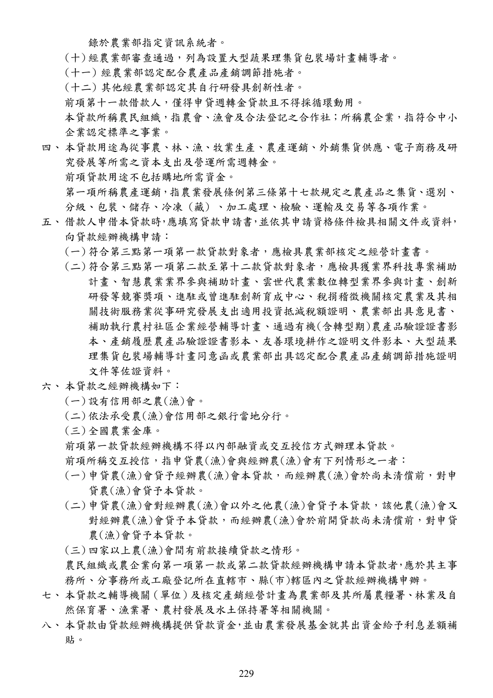
展開查看PDF原始文字層
錄於農業部指定資訊系統者。 (十) 經農業部審查通過，列為設置大型蔬果理集貨包裝場計畫輔導者。 (十一) 經農業部認定配合農產品產銷調節措施者。 (十二) 其他經農業部認定其自行研發具創新性者。 前項第十一款借款人，僅得申貸週轉金貸款且不得採循環動用。 本貸款所稱農民組織，指農會、漁會及合法登記之合作社；所稱農企業，指符合中小 企業認定標準之事業。 四、 本貸款用途為從事農、林、漁、牧業生產、農產運銷、外銷集貨供應、電子商務及研 究發展等所需之資本支出及營運所需週轉金。 前項貸款用途不包括購地所需資金。 第一項所稱農產運銷 ， 指農業發展條例第三條第十七款規定之農產品之集貨 、 選別、 分級、包裝、儲存、冷凍 (藏) 、加工處理、檢驗、運輸及交易等各項作業。 五、 借款人申借本貸款時 ， 應填寫貸款申請書 ， 並依其申請資格條件檢具相關文件或資料 ， 向貸款經辦機構申請： (一) 符合第三點第一項第一款貸款對象者，應檢具農業部核定之經營計畫書。 (二) 符合第三點第一項第二款至第十二款貸款對象者，應檢具獲業界科技專案補助 計畫、智慧農業業界參與補助計畫 、雲世代農業數位轉型業界參與計畫 、創新 研發等競賽獎項、進駐或曾進駐創新育成中心、 稅捐稽徵機關核定農業及其相 關技術服務業從事研究發展支出適用投資抵減稅額證明、農業部 出具意見書、 補助執行農村社區企業經營輔導計畫、通過有機 (含轉型期)農產品驗證證書影 本、產銷履歷農產品驗證證書影本、友善環境耕作之證明文件影本、大型蔬果 理集貨包裝場輔導計畫同意函或 農業部出具認定配合農產品產銷調節措施證明 文件等佐證資料。 六、 本貸款之經辦機構如下： (一) 設有信用部之農(漁)會。 (二) 依法承受農(漁)會信用部之銀行當地分行。 (三) 全國農業金庫。 前項第一款貸款經辦機構不得以內部融資或交互授信方式辦理本貸款。 前項所稱交互授信，指申貸農(漁)會與經辦農(漁)會有下列情形之一者： (一) 申貸農(漁)會貸予經辦農(漁)會本貸款，而經辦農(漁)會於尚未清償前，對申 貸農(漁)會貸予本貸款。 (二) 申貸農(漁)會對經辦農(漁)會以外之他農(漁)會貸予本貸款，該他農(漁)會又 對經辦農(漁)會貸予本貸款，而經辦農(漁)會於前開貸款尚未清償前，對申貸 農(漁)會貸予本貸款。 (三) 四家以上農(漁)會間有前款接續貸款之情形。 農民組織或農企業向第一項第一款或第二款貸款經辦機構申請本貸款者 ， 應於其主事 務所、分事務所或工廠登記所在直轄市、縣(市)轄區內之貸款經辦機構申辦。 七、 本貸款之輔導機關 （單位） 及核定產銷經營計畫為農業部及其所屬農糧署、林業及自 然保育署、漁業署、農村發展及水土保持署等相關機關。 八、 本貸款由貸款經辦機構提供貸款資金 ， 並由農業發展基金就其出資金給予利息差額補 貼。
手冊頁：230 PDF頁：232／359
{kind=link}
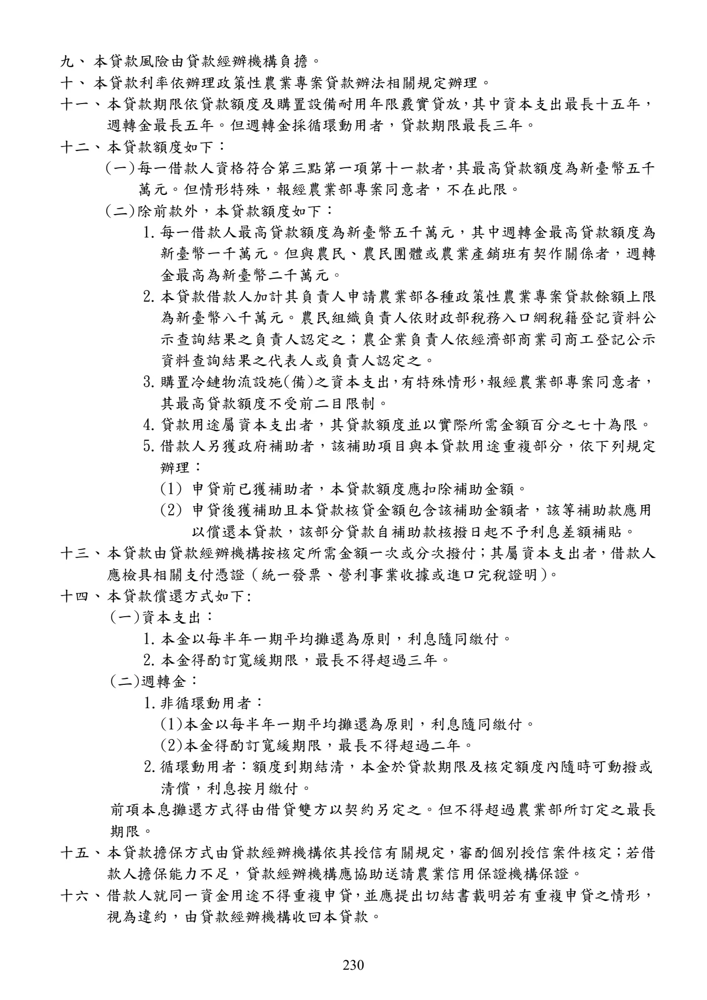
展開查看PDF原始文字層
九、 本貸款風險由貸款經辦機構負擔。
十、 本貸款利率依辦理政策性農業專案貸款辦法相關規定辦理。
十一、 本貸款期限依貸款額度及購置設備耐用年限覈實貸放 ， 其中資本支出最長十五年，
週轉金最長五年。但週轉金採循環動用者，貸款期限最長三年。
十二、 本貸款額度如下：
(一) 每一借款人資格符合第三點第一項第十一款者 ， 其最高貸款額度為新臺幣五千
萬元。但情形特殊，報經農業部專案同意者，不在此限。
(二) 除前款外，本貸款額度如下：
1. 每一借款人最高貸款額度為新臺幣五千萬元，其中週轉金最高貸款額度為
新臺幣一千萬元。但與農民、農民團體或農業產銷班有契作關係者，週轉
金最高為新臺幣二千萬元。
2. 本貸款借款人加計其負責人申請 農業部各種政策性農業專案貸款餘額上限
為新臺幣八千萬元。農民組織負責人依財政部稅務入口網稅籍登記資料公
示查詢結果之負責人認定之；農企業負責人依經濟部商業司商工登記公示
資料查詢結果之代表人或負責人認定之。
3. 購置冷鏈物流設施(備)之資本支出 ， 有特殊情形 ， 報經農業部專案同意者，
其最高貸款額度不受前二目限制。
4. 貸款用途屬資本支出者，其貸款額度並以實際所需金額百分之七十為限。
5. 借款人另獲政府補助者，該補助項目與本貸款用途重複部分，依下列規定
辦理：
(1) 申貸前已獲補助者，本貸款額度應扣除補助金額。
(2) 申貸後獲補助且本貸款核貸金額包含該補助金額者，該等補助款應用
以償還本貸款，該部分貸款自補助款核撥日起不予利息差額補貼。
十三、 本貸款由貸款經辦機構按核定所需金額一次或分次撥付；其屬資本支出者，借款人
應檢具相關支付憑證（統一發票、營利事業收據或進口完稅證明） 。
十四、 本貸款償還方式如下:
(一)資本支出：
1. 本金以每半年一期平均攤還為原則，利息隨同繳付。
2. 本金得酌訂寬緩期限，最長不得超過三年。
(二)週轉金：
1.非循環動用者：
(1)本金以每半年一期平均攤還為原則，利息隨同繳付。
(2)本金得酌訂寬緩期限，最長不得超過二年。
2.循環動用者：額度到期結清，本金於貸款期限及核定額度內隨時可動撥或
清償，利息按月繳付。
前項本息攤還方式得由借貸雙方以契約另定之。但不得超過 農業部所訂定之最長
期限。
十五、 本貸款擔保方式由貸款經辦機構依其授信有關規定，審酌個別授信案件核定；若借
款人擔保能力不足，貸款經辦機構應協助送請農業信用保證機構保證。
十六、 借款人就同一資金用途不得重複申貸 ， 並應提出切結書載明若有重複申貸之情形，
視為違約，由貸款經辦機構收回本貸款。手冊頁：231 PDF頁：233／359
十七、 本貸款資金除循環動用週轉金外，應於核准貸款日起三個月內動用完畢。但屬資本 支出，應於核准貸款日起三個月內第一次動用，並依工程進度於二年內動用完畢。 借款人確有困難，致工程未能於前項期限內完成者，得向貸款經辦機構申請延長資 本支出貸款之動用期限，最長一年，並以一次為限。 貸款經辦機構受理前項申請，經評估確有必要者，應向全國農業金庫申請變更動用 期限。 十八、 貸款經辦機構應於核貸後六個月內辦理貸款用途及經營狀況查驗工作 ； 其後貸款存 續期間，每年應至少辦理一次經營狀況查驗並作成書面紀錄。
查看PDF原始文字層
十七、 本貸款資金除循環動用週轉金外，應於核准貸款日起三個月內動用完畢。但屬資本 支出，應於核准貸款日起三個月內第一次動用，並依工程進度於二年內動用完畢。 借款人確有困難，致工程未能於前項期限內完成者，得向貸款經辦機構申請延長資 本支出貸款之動用期限，最長一年，並以一次為限。 貸款經辦機構受理前項申請，經評估確有必要者，應向全國農業金庫申請變更動用 期限。 十八、 貸款經辦機構應於核貸後六個月內辦理貸款用途及經營狀況查驗工作 ； 其後貸款存 續期間，每年應至少辦理一次經營狀況查驗並作成書面紀錄。
手冊頁：232 PDF頁：234／359
{kind=link}
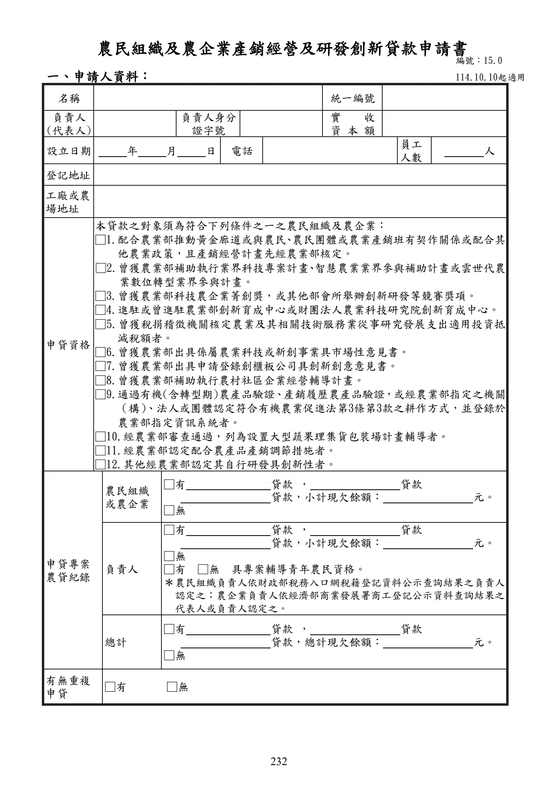
展開查看PDF原始文字層
編號：15.0
114.10.10起適用
農民組織及農企業產銷經營及研發創新貸款申請書
一、申請人資料：
名稱 統一編號
負責人
(代表人) 負責人身分
證字號
實 收
資 本 額
設立日期 年 月 日 電話 員工
人數 人
登記地址
工廠或農
場地址
申貸資格
本貸款之對象須為符合下列條件之一之農民組織及農企業：
□1.配合農業部推動黃金廊道或與農民 、 農民團體或農業產銷班有契作關係或配合其
他農業政策，且產銷經營計畫先經農業部核定。
□2.曾獲農業部補助執行業界科技專案計畫 、 智慧農業業界參與補助計畫或雲世代農
業數位轉型業界參與計畫。
□3.曾獲農業部科技農企業菁創獎，或其他部會所舉辦創新研發等競賽獎項。
□4.進駐或曾進駐農業部創新育成中心或財團法人農業科技研究院創新育成中心。
□5.曾獲稅捐稽徵機關核定農業及其相關技術服務業從事研究發展支出適用投資抵
減稅額者。
□6.曾獲農業部出具係屬農業科技或新創事業具市場性意見書。
□7.曾獲農業部出具申請登錄創櫃板公司具創新創意意見書。
□8.曾獲農業部補助執行農村社區企業經營輔導計畫。
□9.通過有機(含轉型期)農產品驗證 、 產銷履歷農產品驗證 ， 或經農業部指定之機關
（構） 、法人或團體認定符合有機農業促進法第3條第3款之耕作方式，並登錄於
農業部指定資訊系統者。
□10.經農業部審查通過，列為設置大型蔬果理集貨包裝場計畫輔導者。
□11.經農業部認定配合農產品產銷調節措施者。
□12.其他經農業部認定其自行研發具創新性者。
申貸專案
農貸紀錄
農民組織
或農企業
□有 貸款 ， 貸款
貸款，小計現欠餘額： 元。
□無
負責人
□有 貸款 ， 貸款
貸款，小計現欠餘額： 元。
□無
□有 □無 具專案輔導青年農民資格。
＊農民組織負責人依財政部稅務入口網稅籍登記資料公示查詢結果之負責人
認定之；農企業負責人依經濟部商業發展署商工登記公示資料查詢結果之
代表人或負責人認定之。
總計
□有 貸款 ， 貸款
貸款，總計現欠餘額： 元。
□無
有無重複
申貸 □有 □無手冊頁：233 PDF頁：235／359
二、申貸文件： □1.檢具農業部核定之經營計畫書。 □2.獲農業部補助執行業界科技專案計畫、智慧農業業界參與補助計畫或雲世代農業數位轉型 業界參與計畫證明文件。 □3.獲農業部科技農企業菁創獎得獎，或其他部會創新研發等競賽獎項證明文件。 □4.進駐或曾進駐農業部創新育成中心或財團法人農業科技研究院創新育成中心證明文件。 □5.獲稅捐稽徵機關核定農業及其相關技術服務業從事研究發展支出適用投資抵減稅額證明 文件。 □6.由農業部出具係屬農業科技或新創事業具市場性意見書。 □7.由農業部出具申請登錄創櫃板公司具創新創意意見書。 □8.獲農業部補助執行農村社區企業經營輔導計畫證明文件。 □9.經農業部認證之驗證機構核發之通過有機(含轉型期)農產品驗證證書影本、產銷履歷農產 品驗證證書影本，或經農業部指定之機關（構） 、法人或團體核發之友善環境耕作之證明 文件影本。 □10.經農業部審查通過之大型蔬果理集貨包裝場輔導計畫同意函。 □11.經農業部出具認定配合農產品產銷調節措施之證明文件。 □12.其他經農業部認定其自行研發具創新性之證明文件。
三、貸款金額及用途： 單位：新臺幣元 貸款金額 (大寫) 新臺幣 元整 貸款期間 資本支出 年 週轉金 年 貸款用途
□資本支出：金額__________________________ □週轉金：金額________________________ 動用方式：□循環 □非循環 ＊本貸款資本支出額度以實際所需金額70%為限。借款人獲政府補助者，該補 助項目與本貸款用途重複部分，依下列規定辦理： □1.申貸前已獲補助者，本貸款額度應扣除補助金額。 □2.申貸後獲補助且本貸款核貸金額包含該補助金額者，該等補助款應用 以償還本貸款。 ＊本人知悉貸後資本支出應檢附相關支付憑證（統一發票、營利事業收據或 進口完稅證明） ，以佐證貸款用途。 ＊本貸款借款人加計其負責人申請農業部各種政策性農業專案貸款餘額上限 為8,000萬元。 申請人(簽章)：_____________________ 敬請 惠予核貸為荷 此致 貸款經辦機構
申請人(簽章)：
中 華 民 國 年 月 日 備註：其他徵授信資料請依貸款經辦機構相關規定辦理。
查看PDF原始文字層
二、申貸文件： □1.檢具農業部核定之經營計畫書。 □2.獲農業部補助執行業界科技專案計畫、智慧農業業界參與補助計畫或雲世代農業數位轉型 業界參與計畫證明文件。 □3.獲農業部科技農企業菁創獎得獎，或其他部會創新研發等競賽獎項證明文件。 □4.進駐或曾進駐農業部創新育成中心或財團法人農業科技研究院創新育成中心證明文件。 □5.獲稅捐稽徵機關核定農業及其相關技術服務業從事研究發展支出適用投資抵減稅額證明 文件。 □6.由農業部出具係屬農業科技或新創事業具市場性意見書。 □7.由農業部出具申請登錄創櫃板公司具創新創意意見書。 □8.獲農業部補助執行農村社區企業經營輔導計畫證明文件。 □9.經農業部認證之驗證機構核發之通過有機(含轉型期)農產品驗證證書影本、產銷履歷農產 品驗證證書影本，或經農業部指定之機關（構） 、法人或團體核發之友善環境耕作之證明 文件影本。 □10.經農業部審查通過之大型蔬果理集貨包裝場輔導計畫同意函。 □11.經農業部出具認定配合農產品產銷調節措施之證明文件。 □12.其他經農業部認定其自行研發具創新性之證明文件。 三、貸款金額及用途： 單位：新臺幣元 貸款金額 (大寫) 新臺幣 元整 貸款期間 資本支出 年 週轉金 年 貸款用途 □資本支出：金額__________________________ □週轉金：金額________________________ 動用方式：□循環 □非循環 ＊本貸款資本支出額度以實際所需金額70%為限。借款人獲政府補助者，該補 助項目與本貸款用途重複部分，依下列規定辦理： □1.申貸前已獲補助者，本貸款額度應扣除補助金額。 □2.申貸後獲補助且本貸款核貸金額包含該補助金額者，該等補助款應用 以償還本貸款。 ＊本人知悉貸後資本支出應檢附相關支付憑證（統一發票、營利事業收據或 進口完稅證明） ，以佐證貸款用途。 ＊本貸款借款人加計其負責人申請農業部各種政策性農業專案貸款餘額上限 為8,000萬元。 申請人(簽章)：_____________________ 敬請 惠予核貸為荷 此致 貸款經辦機構 申請人(簽章)： 中 華 民 國 年 月 日 備註：其他徵授信資料請依貸款經辦機構相關規定辦理。
手冊頁：234 PDF頁：236／359

展開查看PDF原始文字層
審查表（以下由貸款經辦機構填寫） 一、以下審查內容如有任一勾選「否」者，不符申貸資格。 審查內容 是 否 1.符合該項專案農貸之貸款對象規定？ 2.申請人申請之資金用途符合該貸款項目貸款用途規定？ 3.申貸漁業經營相關貸款者於貸款時（透過農業部漁業署漁船及船員 管理資訊系統查詢，非申貸漁業經營相關貸款免填） ： 3-1無走私、偷渡及電、毒、炸魚違規情事? 3-2非屬漁業法第10條限制或停止漁業經營之期間內? 3-3無收回漁業證照處分尚未執行完畢情形? 3-4無經撤銷漁業經營之核准或撤銷漁業證照情形? 3-5無依漁業法所處罰鍰尚未繳納完畢情形? 二、以下審查內容如有任一勾選「有」者，不符申貸資格。 審查內容 有 無 1.有無重複申貸? 2.有無逾申貸餘額上限： 2-1每一借款人有無超過5,000萬元且未經專案核准? 2-2週轉金有無超過1,000萬元(與農民 、 農民團體或農業產銷班有契 作關係者，週轉金為2,000萬元)？ 2-3借款人加計其負責人申請農業部各種政策性農業專案貸款餘額 有無超過8,000萬元？ 3.有無專案農貸不予核貸情事？ 三、檢核文件，如疏漏應予補正(如前揭不符申貸資格，免附)： 檢核文件 是 否 1.申請人已檢具切結書（重複申貸、逾申貸餘額上限、違法之情事， 或未依貸款用途運用、未實際經營、屆期未補正登記證、營運許可 證等文件，或其他未符農業發展基金貸款之相關規定者，貸款應予 收回）? 2.申請人完整檢具相關登記、證明文件？ 審查結果: □符合，審查合格者不代表准予核貸，尚須依徵授信程序審查，並經授 信審議委員會審議。 □不符，說明: 經辦人員 覆核 主任、襄(副)理 總幹事、經理 註：以上簽章人員請註明日期。
手冊頁：235 PDF頁：237／359
農民組織及農企業產銷經營及研發創新貸款農業經營計畫書
壹、 基 本 資 料 一、產業別：□農業類 □林業類 □漁業類 □畜牧類（請勾選） 二、主要業務項目： 三、申請人資料
姓名 (名稱) 身分證字號 (統一編號)
負 責 人 身分證字號 主事務所 地 址 電 話 傳 真 經營場(廠) 場(廠)址 電 話 傳 真 畜牧場登記證 書 號 及 影 本 （無則免填）
貳 、 經 營 現 況 一、沿革 請說明自成立至目前，包括規模、人員、技術、投入資金，及是否曾經獲 得專利或獎項。 二、營業項目及內容 請說明生產項目種類、技術性及其過程演變。 三、自有或現行承租農地經營現況 請就目前經營農地筆數及面積整體性說明。 四、組織架構 請說明目前組織運作（檢附組織架構圖、公司章程或其他足資說明組織架 構之文件；擇一即可） 。 五、人力配置 請說明員工人數共幾名，其中技術人員、職員、作業人員等各幾名。 六、產銷經營現況 請就目前農地利用、生產及營運管理、市場通路、連結產業價值鏈之具體 措施等事項予以說明。 七、專業技術 如有專業或特別技術，請加說明。
112.8.1起適用 編號:15.1
查看PDF原始文字層
農民組織及農企業產銷經營及研發創新貸款農業經營計畫書 壹、 基 本 資 料 一、產業別：□農業類 □林業類 □漁業類 □畜牧類（請勾選） 二、主要業務項目： 三、申請人資料 姓名 (名稱) 身分證字號 (統一編號) 負 責 人 身分證字號 主事務所 地 址 電 話 傳 真 經營場(廠) 場(廠)址 電 話 傳 真 畜牧場登記證 書 號 及 影 本 （無則免填） 貳 、 經 營 現 況 一、沿革 請說明自成立至目前，包括規模、人員、技術、投入資金，及是否曾經獲 得專利或獎項。 二、營業項目及內容 請說明生產項目種類、技術性及其過程演變。 三、自有或現行承租農地經營現況 請就目前經營農地筆數及面積整體性說明。 四、組織架構 請說明目前組織運作（檢附組織架構圖、公司章程或其他足資說明組織架 構之文件；擇一即可） 。 五、人力配置 請說明員工人數共幾名，其中技術人員、職員、作業人員等各幾名。 六、產銷經營現況 請就目前農地利用、生產及營運管理、市場通路、連結產業價值鏈之具體 措施等事項予以說明。 七、專業技術 如有專業或特別技術，請加說明。 112.8.1起適用 編號:15.1
手冊頁：236 PDF頁：238／359
最 近 二 年 度 產 銷 情 形 表 單位： 銷 年 度 售 量 值 主要商品（或部門別） 年度 年度 生 產 內 銷 外 銷 生 產 內 銷 外 銷 量 量 值 量 值 量 量 值 量 值 合 計 原有經營狀況(目前若無經營者則免填)： 甲、 農 作 物 乙、 畜 產 說明 項目 面積 (公頃) 估計全年 出售量 (Kg) 估計全年 銷售收入 (千元) 說明 項目 飼養規模 (頭/隻)或 每日處理 量(公噸) 估計全年 出 售 量 估計全年 銷售收入 (千元) 丙、 養 殖 漁 業 丁、 其 他 說明 項目 面 積 或 數 量 估計全年 出 售 量 估計全年 銷售收入 (千元) 說明 項目 面 積 或 數 量 估計全年 出 售 量 估計全年 銷售收入 (千元)
查看PDF原始文字層
最 近 二 年 度 產 銷 情 形 表 單位： 銷 年 度 售 量 值 主要商品（或部門別） 年度 年度 生 產 內 銷 外 銷 生 產 內 銷 外 銷 量 量 值 量 值 量 量 值 量 值 合 計 原有經營狀況(目前若無經營者則免填)： 甲、 農 作 物 乙、 畜 產 說明 項目 面積 (公頃) 估計全年 出售量 (Kg) 估計全年 銷售收入 (千元) 說明 項目 飼養規模 (頭/隻)或 每日處理 量(公噸) 估計全年 出 售 量 估計全年 銷售收入 (千元) 丙、 養 殖 漁 業 丁、 其 他 說明 項目 面 積 或 數 量 估計全年 出 售 量 估計全年 銷售收入 (千元) 說明 項目 面 積 或 數 量 估計全年 出 售 量 估計全年 銷售收入 (千元)
手冊頁：237 PDF頁：239／359
參 、 經 營 計 畫 一、計畫目標 (一)經營構想及產銷規劃
(二)承租計畫
編號 縣(市) 鄉(鎮、 市、區) 地段 小段 地號 土地使用 分區 使用地 類別 土地所有 權人 租期 面積(m² )
二、產業前景預估
三、預期效益分析
說明： 一、借款人申貸資格為配合農業部推動黃金廊道或與農民、農民團體或農業產銷班有契 作關係或配合其他農業政策，其農業經營計畫須先報經農業部核定。 二 、 農業部僅就上開貸款計畫內容 ， 是否配合農業政策及可行性 （經營狀況 、 產銷規劃、 技術可行性、產業前景等），提供審查意見，至於申請人資金需求及還款來源各節， 另由貸款經辦機構依「辦理政策性農業專案貸款辦法」 、 「農民組織及農企業產銷經 營及研發創新貸款要點」及授信相關規定覈實審核，據以評估核貸金額。
查看PDF原始文字層
參 、 經 營 計 畫 一、計畫目標 (一)經營構想及產銷規劃 (二)承租計畫 編號 縣(市) 鄉(鎮、 市、區) 地段 小段 地號 土地使用 分區 使用地 類別 土地所有 權人 租期 面積(m² ) 二、產業前景預估 三、預期效益分析 說明： 一、借款人申貸資格為配合農業部推動黃金廊道或與農民、農民團體或農業產銷班有契 作關係或配合其他農業政策，其農業經營計畫須先報經農業部核定。 二 、 農業部僅就上開貸款計畫內容 ， 是否配合農業政策及可行性 （經營狀況 、 產銷規劃、 技術可行性、產業前景等），提供審查意見，至於申請人資金需求及還款來源各節， 另由貸款經辦機構依「辦理政策性農業專案貸款辦法」 、 「農民組織及農企業產銷經 營及研發創新貸款要點」及授信相關規定覈實審核，據以評估核貸金額。
手冊頁：238 PDF頁：240／359
四、資金需求情形及來源預估： （一）農業資金需要情形 金額單位：新臺幣元 項 目 數 量 單 價 金額小計 備 註
合 計 (A)
（二）資金來源 金額單位：新臺幣元 貸 款 金 額 本人自籌資金 合 計 ( 註 ) 資 本 支 出 週 轉 金 小 計 (B) 註：A = B 五、還款計畫及還款來源： 金額單位：新臺幣元 項 目 數 量 單 價 金額小計 備 註
合 計
六、其他說明事項
申請人： （簽章） 申請日期： 年 月 日
查看PDF原始文字層
四、資金需求情形及來源預估：
（一）農業資金需要情形 金額單位：新臺幣元
項 目 數 量 單 價 金額小計 備 註
合 計 (A)
（二）資金來源 金額單位：新臺幣元
貸 款 金 額
本人自籌資金
合 計
( 註 ) 資 本 支 出 週 轉 金 小 計
(B)
註：A = B
五、還款計畫及還款來源： 金額單位：新臺幣元
項 目 數 量 單 價 金額小計 備 註
合 計
六、其他說明事項
申請人： （簽章）
申請日期： 年 月 日手冊頁：239 PDF頁：241／359
貸款經辦機構
（一） 鄉（鎮、市、地區）農（漁）會
指 導 員 ： 推廣股長： 貸款主辦： 信用部主任： 總 幹 事 ：
（二） 銀行 分行
主 辦： 副(襄)理： 經 理：
註明：以上簽章請註明日期
查看PDF原始文字層
貸款經辦機構
（一） 鄉（鎮、市、地區）農（漁）會
指 導 員 ：
推廣股長：
貸款主辦：
信用部主任：
總 幹 事 ：
（二） 銀行 分行
主 辦：
副(襄)理：
經 理：
註明：以上簽章請註明日期手冊頁：240 PDF頁：242／359

展開查看PDF原始文字層
函令摘要：「農民組織及農企業產銷經營及研發創新貸款」 (下稱農企業 貸款)之申辦、審查作業流程及相關資料辦理事宜 【行政院農業委員會104年4月30日農授金字第1045041443號函】 主旨：修正「農民組織及農企業產銷經營及研發創新貸款」 （下稱農企業貸款）之申辦、 審查作業流程及相關資料，並請依說明事項辦理，請查照。 說明： 一、 考量現行借款人申請旨揭貸款 ， 其經營計畫書報送本會方式不一 ， 對借款人造成困擾 ， 為利借款人申貸及提升作業效率，爾後借款人之經營計畫書，統一由貸款經辦機構核 轉本會農業金融局函請各產業主管機關(單位)審核。 二、 請貴單位自文到日起，受理農企業貸款案件，請借款人填寫 「農民組織及農企業產銷 經營及研發創新貸款農業經營計畫書」 ，並依修正後之作業流程辦理，另附模擬問答 供參。 三、 配合增修前揭農企業貸款經營計畫書格式，併同修正 「政策性農業專案貸款農業經營 計畫書(乙式)」格式，僅適用於「農業科技園區進駐業者優惠貸款」、「農漁會事業 發展貸款」、「小地主大佃農貸款」、「休閒農場貸款」。 四、 旨揭相關文件可至本會農業金融局網站 http://www.boaf.gov.tw/「專案農貸常用規定」 專區查詢、下載。 函令摘要：有關「農民組織及農企業產銷經營及研發創新貸款」農糧類 產銷經營計畫書之送核事宜 【行政院農業委員會農業金融局105年5月12日農金三字第1055084194號函】 主旨：有關「農民組織及農企業產銷經營及研發創新貸款」 （下稱本貸款）農糧類產銷經 營計畫書之送核事宜，請查照並依說明二至五配合辦理。 說明： 一、 依 「辦理政策性農業專案貸款辦法」 第18條第1項第1款規定，本貸款對象之一，為配 合中央主管機關推動自由經濟示範（農業加值） 、黃金走廊、與農民、農民團體或農 業產銷班有契作關係或配合其他農業政策 ， 且產銷經營計畫須先經中央主管機關核定 之農民組織及農企業。 二、 為提升前開產銷經營計畫之審核效率 ， 檢附本貸款農糧類常見配合農業政策及其佐證 文件1份如附表，以供參辦。借款人若為附表農糧類申請對象之一者，其產銷經營計 畫送核時，請併附各該項目所列文件，俾利佐證其符合農業政策性。 三、 另查與農民 、 農民團體或農業產銷班有契作關係者 ， 常因所附契作合約相關文件填載 事項須補正，而致延長核定時效，爰請貸款經辦機構送核時協助檢視，該等契作合約 相關文件內容，有關契作對象之身分證字號及通訊地址，契作田地之地段地號、面積 及合約有效期限等資料是否齊全正確。 四、 若從事稻穀收購之糧商 ， 其資金需求高於本貸款規定上限 ， 或未能符合本貸款規定資 格者，建請貴機構輔導其洽辦全國農業金庫所提供糧商相關貸款。併予敘明。 五、 本局104年10月19日農金三字第1045043447號函（諒達）所送旨揭貸款常見問答自即 日起停止適用。
手冊頁：241 PDF頁：243／359
「農民組織及農企業產銷經營及研發創新貸款」農糧類 常見配合農業政策及其佐證文件 農業政策項目 申請對象 檢附文件 推動自由經濟示範 區（農業加值） 推動自由經濟示範區（農 業加值）之農企業、農民 組織。 應檢附屏東農業生物科技園區核准 進駐之公文書件。 與農民、農民團體 或農業產銷班有契 作關係 與 農 民、農 民 團 體 或 農 業 產 銷 班 有 契 作 關 係 者 。 契 作 合 約 及 契 作 清 冊 等 相 關 證 明 文 件 （ 內 容 應 包 括 契 作 對 象 之 身 分 證 字 號 、 通 訊 地 址 ， 契 作 田 地 之 地 段 地 號 、 面 積 及 合 約有效期限等資料） 。 黃金廊道 於 黃 金 廊 道 區 域 範 圍 內 施 作 與 節 水 有 關 或 從 事 旱 作 之 農 民 組 織 或農企業 。 黃 金 廊 道 區 域 範 圍 內 之 土 地 所 有 權 狀 或 土 地 租 賃 契 約 書 等 土 地使用證明文件 。 國內稻穀產銷調節 向農民收購稻穀 且具烘乾 及倉儲設備 ( 設施) 之糧 商。 集運、烘乾及倉儲等設備應檢附地 方政府（縣、市政府或鄉鎮市區公 所）所核發之建築物、雜項使用執 照或設施座落之土地地籍謄本等。 公糧稻穀保價收購 政策－推動設置穀 物乾燥中心及低溫 倉儲 配合公糧稻穀保價收購政 策，興建穀物乾燥中心廠 房、設置乾燥機、低溫筒 倉等設備之公糧業者。 公糧業務契約。 蔬果外銷供應－設 置大型蔬果理（集） 貨包裝場 配合蔬果外銷供應政策， 設置大型蔬果理（集）貨 包裝場之農企業、農民組 織。 「輔導設置大型蔬果理集貨包裝廠 程序」審查通過同意函。 發展有機農業 配合發展有機農業政策之 農企業、農民組織。 經農委會認證之驗證機構核發之有 機(含轉型期)驗證證書 (影本)。
附表
查看PDF原始文字層
「農民組織及農企業產銷經營及研發創新貸款」農糧類 常見配合農業政策及其佐證文件 農業政策項目 申請對象 檢附文件 推動自由經濟示範 區（農業加值） 推動自由經濟示範區（農 業加值）之農企業、農民 組織。 應檢附屏東農業生物科技園區核准 進駐之公文書件。 與農民、農民團體 或農業產銷班有契 作關係 與 農 民、農 民 團 體 或 農 業 產 銷 班 有 契 作 關 係 者 。 契 作 合 約 及 契 作 清 冊 等 相 關 證 明 文 件 （ 內 容 應 包 括 契 作 對 象 之 身 分 證 字 號 、 通 訊 地 址 ， 契 作 田 地 之 地 段 地 號 、 面 積 及 合 約有效期限等資料） 。 黃金廊道 於 黃 金 廊 道 區 域 範 圍 內 施 作 與 節 水 有 關 或 從 事 旱 作 之 農 民 組 織 或農企業 。 黃 金 廊 道 區 域 範 圍 內 之 土 地 所 有 權 狀 或 土 地 租 賃 契 約 書 等 土 地使用證明文件 。 國內稻穀產銷調節 向農民收購稻穀 且具烘乾 及倉儲設備 ( 設施) 之糧 商。 集運、烘乾及倉儲等設備應檢附地 方政府（縣、市政府或鄉鎮市區公 所）所核發之建築物、雜項使用執 照或設施座落之土地地籍謄本等。 公糧稻穀保價收購 政策－推動設置穀 物乾燥中心及低溫 倉儲 配合公糧稻穀保價收購政 策，興建穀物乾燥中心廠 房、設置乾燥機、低溫筒 倉等設備之公糧業者。 公糧業務契約。 蔬果外銷供應－設 置大型蔬果理（集） 貨包裝場 配合蔬果外銷供應政策， 設置大型蔬果理（集）貨 包裝場之農企業、農民組 織。 「輔導設置大型蔬果理集貨包裝廠 程序」審查通過同意函。 發展有機農業 配合發展有機農業政策之 農企業、農民組織。 經農委會認證之驗證機構核發之有 機(含轉型期)驗證證書 (影本)。 附表
手冊頁：242 PDF頁：244／359
農民組織及農企業天然災害復耕復建貸款要點 中華民國 103 年 10 月 28 日行政院農業委員會農金字第 1035084025 號令訂定 中華民國 104 年 8 月 26 日行政院農業委員會農金字第 1045084368K 號令修正 中華民國 105 年 3 月 18 日行政院農業委員會農金字第 1055084021P 號令修正部分規 定，並自 105 年 3 月 22 日生效 中華民國 109 年 2 月 27 日行政院農業委員會農授金字第 1095084100L 號令修正第 10 點 之 1、第 13 點，並自 109 年 3 月 1 日生效 中華民國 109 年 10 月 21 日行政院農業委員會農授金字第 1095085177H 號號令修正第 10 點之 1、第 13 點、第 16 點規定，並自 109 年 11 月1 日生效 中華民國 114 年 9 月 5 日農業部農授金字第 1147467097 號令修正發布第 1、4、6、13 點條文；並自 114 年 7 月 7 日生效 中華民國 114 年 10 月 9 日農業部農授金字第 1147467209 號令修正第 11 點，並自中華 民國 114 年 10 月 10 日生效 一、 農業部為協助農民組織及農企業於遭受農業天然災害後 ， 得以儘速復耕復建 ， 特訂定 本要點。 二、 本貸款除依辦理政策性農業專案貸款辦法辦理外 ， 依本要點規定辦理 。 本要點未規定 者，依農業發展基金貸款作業規範及其他有關規定辦理。 三、 本貸款所稱天然災害，準用農業天然災害救助辦法第四條規定。 四、 本貸款之對象為天然災害發生後 ， 經農業部依農業天然災害救助辦法第六條規定公告 之直轄市或縣(市)， 為辦理農業天然災害低利貸款地區 ， 該地區從事農業相關經營之 農民組織及農企業，遭受農業損失者。但從事農產運銷業者，應以有使用國產原料或 與農民、農民團體或農業產銷班有契作關係為限。 本貸款所稱農民組織，指農會、漁會、農田水利會及合法登記之合作社場；所稱農企 業，指符合中小企業認定標準之事業。 五、 本貸款用途為農民組織或農企業災後復耕復建之用。 六、 本貸款借款人向受災地區直轄市、縣（市）政府、鄉（鎮、市、區）公所、稅捐稽徵 機關 、 貸款經辦機構申請核發農業天然災害受災證明書(下稱受災證明書)、 各直轄市 、 縣（市）政府、鄉（鎮、市、區）公所、稅捐稽徵機關、貸款經辦機構核發受災證明 書及借款人向貸款經辦機構申借本貸款之期限 ， 準用農業天然災害救助辦法第十九條 規定。 借款人申借本貸款應依前項規定期限內 ， 檢具受災地區直轄市 、 縣 （市） 政府 、 鄉 （鎮 、 市、區）公所、稅捐稽徵機關、貸款經辦機構出具之受災證明書、農業天然災害復耕 復建計畫書 、 農民組織或農企業登記證明文件 、 其代表人或負責人之身分證明文件及 其他貸款應具備文件，向貸款經辦機構提出申請。 七、 本貸款之經辦機構如下： (一) 設有信用部之農(漁)會。 (二) 依法承受農(漁)會信用部之銀行當地分行。 (三) 全國農業金庫。 前項第一款貸款經辦機構不得以內部融資或交互授信方式辦理本貸款。
查看PDF原始文字層
農民組織及農企業天然災害復耕復建貸款要點 中華民國 103 年 10 月 28 日行政院農業委員會農金字第 1035084025 號令訂定 中華民國 104 年 8 月 26 日行政院農業委員會農金字第 1045084368K 號令修正 中華民國 105 年 3 月 18 日行政院農業委員會農金字第 1055084021P 號令修正部分規 定，並自 105 年 3 月 22 日生效 中華民國 109 年 2 月 27 日行政院農業委員會農授金字第 1095084100L 號令修正第 10 點 之 1、第 13 點，並自 109 年 3 月 1 日生效 中華民國 109 年 10 月 21 日行政院農業委員會農授金字第 1095085177H 號號令修正第 10 點之 1、第 13 點、第 16 點規定，並自 109 年 11 月1 日生效 中華民國 114 年 9 月 5 日農業部農授金字第 1147467097 號令修正發布第 1、4、6、13 點條文；並自 114 年 7 月 7 日生效 中華民國 114 年 10 月 9 日農業部農授金字第 1147467209 號令修正第 11 點，並自中華 民國 114 年 10 月 10 日生效 一、 農業部為協助農民組織及農企業於遭受農業天然災害後 ， 得以儘速復耕復建 ， 特訂定 本要點。 二、 本貸款除依辦理政策性農業專案貸款辦法辦理外 ， 依本要點規定辦理 。 本要點未規定 者，依農業發展基金貸款作業規範及其他有關規定辦理。 三、 本貸款所稱天然災害，準用農業天然災害救助辦法第四條規定。 四、 本貸款之對象為天然災害發生後 ， 經農業部依農業天然災害救助辦法第六條規定公告 之直轄市或縣(市)， 為辦理農業天然災害低利貸款地區 ， 該地區從事農業相關經營之 農民組織及農企業，遭受農業損失者。但從事農產運銷業者，應以有使用國產原料或 與農民、農民團體或農業產銷班有契作關係為限。 本貸款所稱農民組織，指農會、漁會、農田水利會及合法登記之合作社場；所稱農企 業，指符合中小企業認定標準之事業。 五、 本貸款用途為農民組織或農企業災後復耕復建之用。 六、 本貸款借款人向受災地區直轄市、縣（市）政府、鄉（鎮、市、區）公所、稅捐稽徵 機關 、 貸款經辦機構申請核發農業天然災害受災證明書(下稱受災證明書)、 各直轄市 、 縣（市）政府、鄉（鎮、市、區）公所、稅捐稽徵機關、貸款經辦機構核發受災證明 書及借款人向貸款經辦機構申借本貸款之期限 ， 準用農業天然災害救助辦法第十九條 規定。 借款人申借本貸款應依前項規定期限內 ， 檢具受災地區直轄市 、 縣 （市） 政府 、 鄉 （鎮 、 市、區）公所、稅捐稽徵機關、貸款經辦機構出具之受災證明書、農業天然災害復耕 復建計畫書 、 農民組織或農企業登記證明文件 、 其代表人或負責人之身分證明文件及 其他貸款應具備文件，向貸款經辦機構提出申請。 七、 本貸款之經辦機構如下： (一) 設有信用部之農(漁)會。 (二) 依法承受農(漁)會信用部之銀行當地分行。 (三) 全國農業金庫。 前項第一款貸款經辦機構不得以內部融資或交互授信方式辦理本貸款。
手冊頁：243 PDF頁：245／359

展開查看PDF原始文字層
前項所稱交互授信，指申貸農(漁)會與經辦農(漁)會有下列情形之一者： (一) 申貸農(漁)會貸予經辦農(漁)會本貸款，而經辦農(漁)會於尚未清償前，對申 貸農(漁)會貸予本貸款。 (二) 申貸農(漁)會對經辦農(漁)會以外之他農(漁)會貸予本貸款，該他農(漁)會又 對經辦農(漁)會貸予本貸款，而經辦農(漁)會於前開貸款尚未清償前，對申貸 農(漁)會貸予本貸款。 (三) 四家以上農(漁)會間有前款接續貸款之情形。 農民組織或農企業向第一項第一款或第二款貸款經辦機構申請本貸款者 ， 應於其主事 務所、分事務所或工廠登記所在直轄市、縣(市)轄區內之貸款經辦機構申辦。 八、 本貸款由貸款經辦機構提供貸款資金 ， 並由農業發展基金就其出資金給予利息差額補 貼。 九、 本貸款風險由貸款經辦機構負擔。 十、 本貸款利率依辦理政策性農業專案貸款辦法相關規定辦理。 十之一、本貸款期限依貸款額度及購置設備耐用年限覈實貸放，其中資本支出最長十年， 週轉金最長五年。 十一、 本貸款每一借款人最高貸款額度如下： (一) 農產業：新臺幣三千萬元。 (二) 林業：新臺幣一千萬元。 (三) 漁業：新臺幣六千八百萬元。 (四) 畜牧：新臺幣二千萬元。 十二、 貸款經辦機構受理申借案件後，應依規定儘速審核。審核結果准予貸放者，應通知 借款人儘速辦理貸款手續。 本貸款由貸款經辦機構按核定金額一次或分次撥付；借款人之貸款用途為農業設 備資本支出者，應檢具相關憑證（統一發票、營利事業收據或進口完稅證明） 。 十三、 本貸款償還方式如下： (一) 資本支出： 1. 本金以每半年一期平均攤還為原則，利息隨同繳付。 2. 本金得酌訂寬緩期限，最長不得超過三年。 (二) 週轉金： 1. 本金以每半年一期平均攤還為原則，利息隨同繳付。 2. 本金得酌訂寬緩期限，最長不得超過二年。 前項本息攤還方式得由借貸雙方以契約另定之。但不得超過 農業部所訂定之最長 期限。 十四、 本貸款擔保方式由貸款經辦機構依其授信有關規定 ， 審酌個別授信案件核定 ； 若借 款人擔保能力不足，貸款經辦機構應協助送請農業信用保證機構保證。 十五、 借款人就同一資金用途不得重複申貸 ， 並應提出切結書載明若有重複申貸之情形 ， 視為違約，由貸款經辦機構收回本貸款。 十六、 本貸款資金應於核准貸款日起三個月內動用完畢，並應用於農業天然災害復耕復 建計畫書上所指定之用途 。 但屬資本支出 ， 應於核准貸款日起三個月內第一次動用 ， 並依工程進度於一年內動用完畢。 借款人確有困難，致工程未能於前項期限內完成者，得向貸款經辦機構申請延長
手冊頁：244 PDF頁：246／359
資本支出貸款之動用期限，最長一年，並以一次為限。 貸款經辦機構受理前項申請，經評估確有必要者，應向全國農業金庫申請變更動 用期限。 十七、 貸款用途應由貸款經辦機構依下列方式查核與輔導： (一) 經辦機構應辦理貸款用途查驗工作，並於貸放後三個月內完成查驗報告並作 成紀錄。 (二) 借款人未依貸款用途運用者 ， 應由經辦機構督促限期改正 ， 否則視為違約 ， 收 回其貸款本息。 (三) 經辦機構於必要時 ， 得會同相關單位辦理農場經營技術指導與資金運用輔導 。
查看PDF原始文字層
資本支出貸款之動用期限，最長一年，並以一次為限。 貸款經辦機構受理前項申請，經評估確有必要者，應向全國農業金庫申請變更動 用期限。 十七、 貸款用途應由貸款經辦機構依下列方式查核與輔導： (一) 經辦機構應辦理貸款用途查驗工作，並於貸放後三個月內完成查驗報告並作 成紀錄。 (二) 借款人未依貸款用途運用者 ， 應由經辦機構督促限期改正 ， 否則視為違約 ， 收 回其貸款本息。 (三) 經辦機構於必要時 ， 得會同相關單位辦理農場經營技術指導與資金運用輔導 。
手冊頁：245 PDF頁：247／359

展開查看PDF原始文字層
農民組織及農企業天然災害復耕復建貸款申請書
一、申請人資料：
名稱 統一編號
負責人
(代表人)
負責人身分
證字號
實收
資本額
設立日期 年 月 日 電話 員工
人數 人
登記地址
工廠或農
場地址
申貸資格
□農業部公告辦理農業天然災害低利貸款之地區 ， 從事農業相關經營且遭受農業損失
之□農民組織或□農企業 。(但從事農產運銷業者 ， 應以有使用國產原料或與農民 、
農民團體或農業產銷班有契作關係為限)。
*本貸款所稱天然災害準用農業天然災害救助辦法第4條規定。
*申請人應於農業部公告辦理低利貸款地區之翌日起30個工作日內，檢具相關文件
向貸款經辦機構提出申請。
*申請人應於其主事務所、分事務所或工廠登記所在直轄市、縣(市)轄區內之貸款
經辦機構申請。
申貸專案農貸紀錄
□有 貸款
貸款
貸款，總計現欠餘額： 元。
□無
有無重複申貸 □有 □無
二、申貸文件：
□應檢附下列相關文件：
□1.受災證明文件或貸款經辦機構調查屬實。
□2.復耕復建計畫書。
□3.農民組織或農企業登記證明文件。
□4.代表人或負責人之身分證明文件。
□5.農產運銷業者，須提供使用國產原料或與農民、農民團體或農業產銷班契作相關資料。
三、貸款金額及用途： 單位：新臺幣元
貸款金額
(大寫) 新臺幣 元整 貸款期間 週轉金 年
資本支出 年
貸款用途
□ 資本支出： 金額_____________________
□ 週轉金：金額_____________________
*本人知悉貸後資本支出應檢附相關支付憑證 （統一發票 、 營利事業收據
114.10.10修正版
編號:16.0手冊頁：246 PDF頁：248／359
或進口完稅證明） ，以佐證貸款用途。 申請人(簽章)：_____________________ 敬請 惠予核貸為荷 此致 貸款經辦機構 申請人(簽章)： 中 華 民 國 年 月 日 備註：其他徵授信資料請依貸款經辦機構相關規定辦理。
查看PDF原始文字層
或進口完稅證明） ，以佐證貸款用途。 申請人(簽章)：_____________________ 敬請 惠予核貸為荷 此致 貸款經辦機構 申請人(簽章)： 中 華 民 國 年 月 日 備註：其他徵授信資料請依貸款經辦機構相關規定辦理。
手冊頁：247 PDF頁：249／359

展開查看PDF原始文字層
審查表（以下由貸款經辦機構填寫） 一、以下審查內容如有任一勾選「否」者，不符申貸資格。 審查內容 是 否 1.符合該項專案農貸之貸款對象規定？ 2.申請人(企業)是否符合中小企業認定標準所稱之中小企業? 3.申請人申請之資金用途符合該貸款項目貸款用途規定？ 二、以下審查內容如有任一勾選「有」者，不符申貸資格。 審查內容 有 無 1.有無重複申貸? 2.有無超逾各項貸款上限？(農產業：三千萬元、林業：一千萬元、漁 業：六千八百萬元、畜牧：二千萬元) 三、檢核文件，如疏漏應予補正(如前揭不符申貸資格，免附)： 檢核文件 是 否 1.申請人已檢具切結書（重複申貸、逾申貸餘額上限、違法之情事， 或未依貸款用途運用、未實際經營、屆期未補正登記證、營運許可 證等文件，或其他未符農業發展基金貸款之相關規定者，貸款應予 收回）? 2.申請人完整檢具相關登記、證明文件？ 審查結果: □符合，審查合格者不代表准予核貸，尚須依徵授信程序審查，並經 授信審議委員會審議。 □不符，說明: 經辦人員 覆核 主任、襄(副)理 總幹事、經理 註：以上簽章人員請註明日期。
手冊頁：248 PDF頁：250／359
農業天然災害復耕復建計畫書 （農民組織及農企業天然災害復耕復建貸款專用） 105.3.22 修正版 一、申請人基本資料 名稱 統一編號 負責人 (代表人) 負責人 身分證字號 實收 資本額
設立日期 年 月 日 電話 員工人數 人 登記地址 工廠或 農場地址 二、復耕復建項目之資金需要情形 項目 數量 單價 (元) 需要資金 (千元) 自籌資金 (千元) 貸款資金 (千元) 需款時間
合 計 三、還款來源(以借款期間估算) 項目 數量 單價(元) 資金(千元) 出售時間 備註 年 月/ 年 月/ 年 月 年 月/ 年 月/ 年 月
年 月/ 年 月/ 年 月 年 月/ 年 月/ 年 月
年 月/ 年 月/ 年 月 年 月/ 年 月/ 年 月
年 月/ 年 月/ 年 月 年 月/ 年 月/ 年 月
年 月/ 年 月/ 年 月 年 月/ 年 月/ 年 月
年 月/ 年 月/ 年 月 年 月/ 年 月/ 年 月
合 計
申請人簽章： 申請日期： 年 月 日
編號:16.1
查看PDF原始文字層
農業天然災害復耕復建計畫書
（農民組織及農企業天然災害復耕復建貸款專用）
105.3.22 修正版
一、申請人基本資料
名稱 統一編號
負責人
(代表人)
負責人
身分證字號 實收
資本額
設立日期 年 月 日 電話 員工人數 人
登記地址
工廠或
農場地址
二、復耕復建項目之資金需要情形
項目 數量 單價
(元)
需要資金
(千元)
自籌資金
(千元)
貸款資金
(千元) 需款時間
合 計
三、還款來源(以借款期間估算)
項目 數量 單價(元) 資金(千元) 出售時間 備註
年 月/ 年 月/ 年 月
年 月/ 年 月/ 年 月
年 月/ 年 月/ 年 月
年 月/ 年 月/ 年 月
年 月/ 年 月/ 年 月
年 月/ 年 月/ 年 月
年 月/ 年 月/ 年 月
年 月/ 年 月/ 年 月
年 月/ 年 月/ 年 月
年 月/ 年 月/ 年 月
年 月/ 年 月/ 年 月
年 月/ 年 月/ 年 月
合 計
申請人簽章： 申請日期： 年 月 日
編號:16.1手冊頁：249 PDF頁：251／359
農業天然災害受災證明書(申貸「農民組織及農企業天然災害復耕 復建貸款」專用) 一、基本資料(請申請人填寫) 災 害 名 稱 申 請 日 期 年 月 日 名 稱 統一編號 住 址 電 話 受災土地座落區段 地號 持分 經營面積、體積 (公頃、立方公尺)
受災漁船船名 船舶登記日期 噸位 主機種類
二、損失情形(請調查人員填寫，損失情形以現場勘查為原則，如依個案事實足以判 斷其災損情形者，得逕予填寫，並留存相關照片或書表文件附卷) 項目 損失情形 類別 名稱 (請填 寫) 面積或數量 (公頃、公噸、坪、 艘、隻等) 農 產 業 □稻米□雜糧□果樹□花卉□菇類□蔬菜□特用作物 □ 養蜂(□蜂箱□蜂群)□農作物育苗作業室 □塑膠布溫網 室(□結構型鋼骨溫網室 □簡易式塑膠布溫網室 )□水平 棚架網室 □菇舍(□傳統式 □鋼構型)□洋蔥苗圃 □製茶 設備設施□溫網室以外之農業設施□糧食倉庫 【□平倉□ 筒倉(含周邊設施)□濕穀集運、烘乾、碾米設備設施】
漁 業 【漁塭養殖】 □鰻魚(鰻鱺屬)□龍膽石斑□石斑 （除龍膽石斑外其他石 斑類）□海水鯛（含笛鯛科）□午仔魚□鱸魚類□烏魚□ 文 蛤 養 殖 池 混養工 作 魚□ 其 他養殖 種 類(除 養 殖 貝類 外)□文蛤□九孔□淡菜□其他養殖貝類□觀賞魚室外魚 塭□室內養殖及其生產或管理設施 □室外養殖管理設施 □水產品初級加工 、 集貨包裝處理設施□發電機□龍鬚菜 養殖
【海上箱網養殖】 □網具□養殖魚類
【牡蠣養殖】 □平掛式□插篊式□浮筏式□延繩垂下式□棚架垂下式
【定置網漁網】 □大型定置網類(□全毀整組換新/重佈□半毀部分修復/ 重佈)□其他定置網類
114.9.5 修正版 (適用於 114.7.7 以後 發生之天然災害
查看PDF原始文字層
農業天然災害受災證明書(申貸「農民組織及農企業天然災害復耕 復建貸款」專用) 一、基本資料(請申請人填寫) 災 害 名 稱 申 請 日 期 年 月 日 名 稱 統一編號 住 址 電 話 受災土地座落區段 地號 持分 經營面積、體積 (公頃、立方公尺) 受災漁船船名 船舶登記日期 噸位 主機種類 二、損失情形(請調查人員填寫，損失情形以現場勘查為原則，如依個案事實足以判 斷其災損情形者，得逕予填寫，並留存相關照片或書表文件附卷) 項目 損失情形 類別 名稱 (請填 寫) 面積或數量 (公頃、公噸、坪、 艘、隻等) 農 產 業 □稻米□雜糧□果樹□花卉□菇類□蔬菜□特用作物 □ 養蜂(□蜂箱□蜂群)□農作物育苗作業室 □塑膠布溫網 室(□結構型鋼骨溫網室 □簡易式塑膠布溫網室 )□水平 棚架網室 □菇舍(□傳統式 □鋼構型)□洋蔥苗圃 □製茶 設備設施□溫網室以外之農業設施□糧食倉庫 【□平倉□ 筒倉(含周邊設施)□濕穀集運、烘乾、碾米設備設施】 漁 業 【漁塭養殖】 □鰻魚(鰻鱺屬)□龍膽石斑□石斑 （除龍膽石斑外其他石 斑類）□海水鯛（含笛鯛科）□午仔魚□鱸魚類□烏魚□ 文 蛤 養 殖 池 混養工 作 魚□ 其 他養殖 種 類(除 養 殖 貝類 外)□文蛤□九孔□淡菜□其他養殖貝類□觀賞魚室外魚 塭□室內養殖及其生產或管理設施 □室外養殖管理設施 □水產品初級加工 、 集貨包裝處理設施□發電機□龍鬚菜 養殖 【海上箱網養殖】 □網具□養殖魚類 【牡蠣養殖】 □平掛式□插篊式□浮筏式□延繩垂下式□棚架垂下式 【定置網漁網】 □大型定置網類(□全毀整組換新/重佈□半毀部分修復/ 重佈)□其他定置網類 114.9.5 修正版 (適用於 114.7.7 以後 發生之天然災害
手冊頁：250 PDF頁：252／359
【在漁港區域漁船】 □全毀(新建漁船，含舢舨)□半毀(修復漁船，含舢舨) 【在漁港區域漁筏】 □全毀(新建漁筏)□半毀(修復漁筏) 畜 牧 【家畜】 □豬□牛□羊□鹿□馬□兔 【家禽】 □雞□鴨□鵝□火雞□鴕鳥(人工飼養)□鵪鶉 □牧草 【畜禽舍】 □傳統式□水簾式、樓房式 【堆肥舍】 □傳統式□鋼筋結構堆肥舍 【設施設備】 □飼料散裝桶 □自動給料(水)設備□污染防治設施 □貯 乳槽□貯水槽□孵化設備 林 業 □造林地 □林業苗圃 □竹類 【林下經濟申請核准經營項目】 □段木香菇與木耳□臺灣金線連□森林蜂產品(□蜂箱□ 蜂群)□臺灣山茶□馬藍□天仙果 □森林副產物-竹筍(森林法施行細則第三條規定之林地 生產竹筍之部分) 調查員簽章 (簽名或用印) 勘查日期 年 月 日 核發日期 年 月 日 出具證明 機關單位 __________________________鄉(鎮、市、區)公所(請蓋關防) 或林業及自然保育署__________分署___________工作站(請蓋關防) 備註：申請人申請「農民組織及農企業天然災害復耕復建貸款」 ，應於本證明書核發 之翌日起30個工作日內 ， 檢具本證明書、農業天然災害復耕復建計畫書 、 農民 組織或農企業登記證明文件、其代表人或負責人之身分證明文件及其他貸款 應具備文件，向貸款經辦機構提出申請。
查看PDF原始文字層
【在漁港區域漁船】 □全毀(新建漁船，含舢舨)□半毀(修復漁船，含舢舨) 【在漁港區域漁筏】 □全毀(新建漁筏)□半毀(修復漁筏) 畜 牧 【家畜】 □豬□牛□羊□鹿□馬□兔 【家禽】 □雞□鴨□鵝□火雞□鴕鳥(人工飼養)□鵪鶉 □牧草 【畜禽舍】 □傳統式□水簾式、樓房式 【堆肥舍】 □傳統式□鋼筋結構堆肥舍 【設施設備】 □飼料散裝桶 □自動給料(水)設備□污染防治設施 □貯 乳槽□貯水槽□孵化設備 林 業 □造林地 □林業苗圃 □竹類 【林下經濟申請核准經營項目】 □段木香菇與木耳□臺灣金線連□森林蜂產品(□蜂箱□ 蜂群)□臺灣山茶□馬藍□天仙果 □森林副產物-竹筍(森林法施行細則第三條規定之林地 生產竹筍之部分) 調查員簽章 (簽名或用印) 勘查日期 年 月 日 核發日期 年 月 日 出具證明 機關單位 __________________________鄉(鎮、市、區)公所(請蓋關防) 或林業及自然保育署__________分署___________工作站(請蓋關防) 備註：申請人申請「農民組織及農企業天然災害復耕復建貸款」 ，應於本證明書核發 之翌日起30個工作日內 ， 檢具本證明書、農業天然災害復耕復建計畫書 、 農民 組織或農企業登記證明文件、其代表人或負責人之身分證明文件及其他貸款 應具備文件，向貸款經辦機構提出申請。
手冊頁：251 PDF頁：253／359
{kind=link}
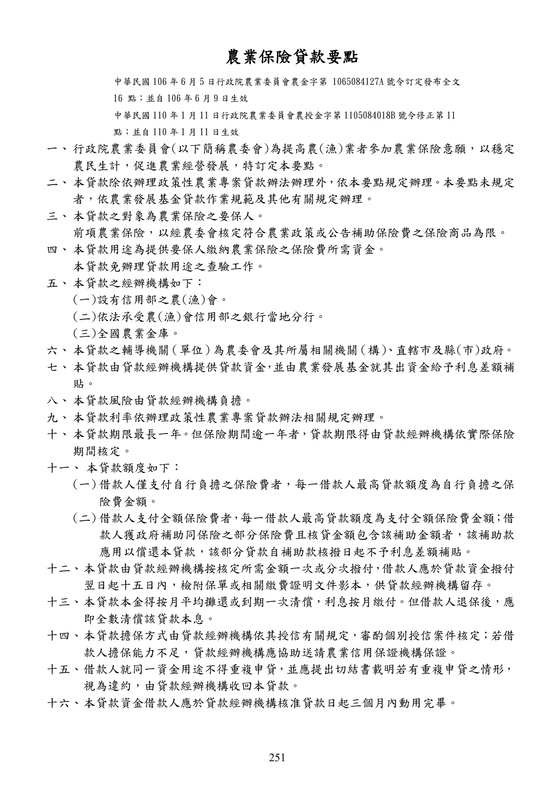
展開查看PDF原始文字層
農業保險貸款要點 中華民國 106 年 6 月 5 日行政院農業委員會農金字第 1065084127A 號令訂定發布全文 16 點；並自 106 年 6 月9 日生效 中華民國 110 年 1 月 11 日行政院農業委員會農授金字第 1105084018B 號令修正第 11 點；並自 110 年 1 月 11 日生效 一、 行政院農業委員會(以下簡稱農委會)為提高農(漁)業者參加農業保險意願，以穩定 農民生計，促進農業經營發展，特訂定本要點。 二、 本貸款除依辦理政策性農業專案貸款辦法辦理外 ， 依本要點規定辦理 。 本要點未規定 者，依農業發展基金貸款作業規範及其他有關規定辦理。 三、 本貸款之對象為農業保險之要保人。 前項農業保險，以經農委會核定符合農業政策或公告補助保險費之保險商品為限 。 四、 本貸款用途為提供要保人繳納農業保險之保險費所需資金。 本貸款免辦理貸款用途之查驗工作。 五、 本貸款之經辦機構如下： (一)設有信用部之農(漁)會。 (二)依法承受農(漁)會信用部之銀行當地分行。 (三)全國農業金庫。 六、 本貸款之輔導機關 （單位） 為農委會及其所屬相關機關 （構） 、 直轄市及縣(市)政府。 七、 本貸款由貸款經辦機構提供貸款資金 ， 並由農業發展基金就其出資金給予利息差額補 貼。 八、 本貸款風險由貸款經辦機構負擔。 九、 本貸款利率依辦理政策性農業專案貸款辦法相關規定辦理。 十、 本貸款期限最長一年 。 但保險期間逾一年者 ， 貸款期限得由貸款經辦機構依實際保險 期間核定。 十一、 本貸款額度如下： (一) 借款人僅支付自行負擔之保險費者，每一借款人最高貸款額度為自行負擔之保 險費金額。 (二) 借款人支付全額保險費者 ， 每一借款人最高貸款額度為支付全額保險費金額 ； 借 款人獲政府補助同保險之部分保險費且核貸金額包含該補助金額者，該補助款 應用以償還本貸款，該部分貸款自補助款核撥日起不予利息差額補貼。 十二、 本貸款由貸款經辦機構按核定所需金額一次或分次撥付 ， 借款人應於貸款資金撥付 翌日起十五日內，檢附保單或相關繳費證明文件影本，供貸款經辦機構留存。 十三、 本貸款本金得按月平均攤還或到期一次清償，利息按月繳付。但借款人退保後，應 即全數清償該貸款本息。 十四、 本貸款擔保方式由貸款經辦機構依其授信有關規定，審酌個別授信案件核定；若借 款人擔保能力不足，貸款經辦機構應協助送請農業信用保證機構保證。 十五、 借款人就同一資金用途不得重複申貸 ， 並應提出切結書載明若有重複申貸之情形 ， 視為違約，由貸款經辦機構收回本貸款。 十六、 本貸款資金借款人應於貸款經辦機構核准貸款日起三個月內動用完畢。
手冊頁：252 PDF頁：254／359
{kind=link}
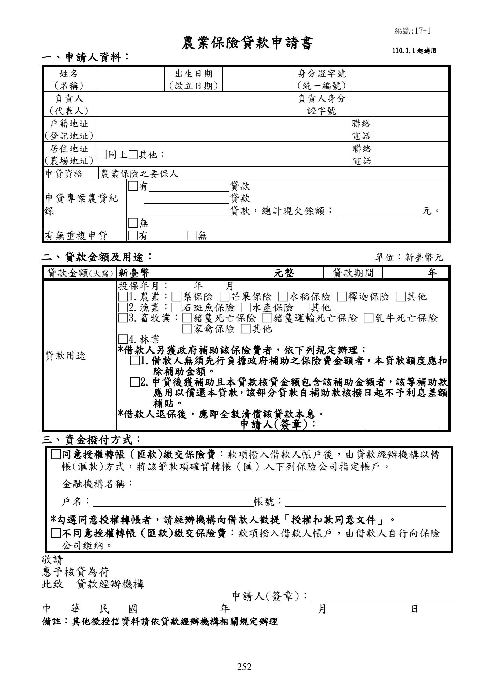
展開查看PDF原始文字層
農業保險貸款申請書
一、申請人資料：
姓名
(名稱)
出生日期
(設立日期)
身分證字號
(統一編號)
負責人
(代表人)
負責人身分
證字號
戶籍地址
(登記地址) 聯絡
電話
居住地址
(農場地址) □同上□其他： 聯絡
電話
申貸資格 農業保險之要保人
申貸專案農貸紀
錄
□有 貸款
貸款
貸款，總計現欠餘額： 元。
□無
有無重複申貸 □有 □無
二、貸款金額及用途： 單位：新臺幣元
貸款金額(大寫) 新臺幣 元整 貸款期間 年
貸款用途
投保年月： 年 月
□1.農業：□梨保險 □芒果保險 □水稻保險 □釋迦保險 □其他
□2.漁業：□石斑魚保險 □水產保險 □其他
□3.畜牧業：□豬隻死亡保險 □豬隻運輸死亡保險 □乳牛死亡保險
□家禽保險 □其他
□4.林業
*借款人另獲政府補助該保險費者，依下列規定辦理：
□1.借款人無須先行負擔政府補助之保險費金額者，本貸款額度應扣
除補助金額。
□2.申貸後獲補助且本貸款核貸金額包含該補助金額者，該等補助款
應用以償還本貸款 ， 該部分貸款自補助款核撥日起不予利息差額
補貼。
*借款人退保後，應即全數清償該貸款本息。
申請人(簽章)：
三、資金撥付方式︰
□同意授權轉帳（匯款)繳交保險費︰款項撥入借款人帳戶後，由貸款經辦機構以轉
帳(滙款)方式，將該筆款項確實轉帳（匯）入下列保險公司指定帳戶。
金融機構名稱︰
戶名︰ 帳號︰
*勾選同意授權轉帳者，請經辦機構向借款人徵提「授權扣款同意文件」。
□不同意授權轉帳（匯款)繳交保險費︰款項撥入借款人帳戶，由借款人自行向保險
公司繳納。
敬請
惠予核貸為荷
此致 貸款經辦機構
申請人(簽章)：
中 華 民 國 年 月 日
備註：其他徵授信資料請依貸款經辦機構相關規定辦理
編號:17-1
110.1.1 起適用
107.4.16 起適用
定手冊頁：253 PDF頁：255／359
{kind=link}
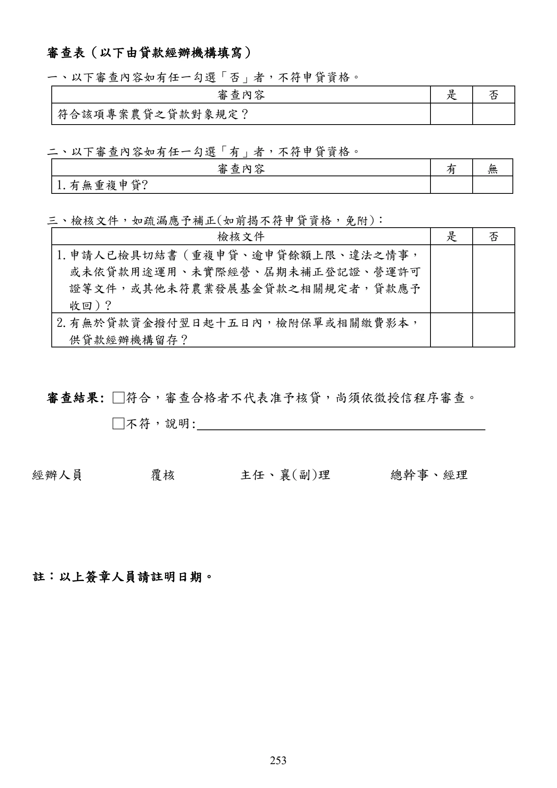
展開查看PDF原始文字層
審查表（以下由貸款經辦機構填寫） 一、以下審查內容如有任一勾選「否」者，不符申貸資格。 審查內容 是 否 符合該項專案農貸之貸款對象規定？ 二、以下審查內容如有任一勾選「有」者，不符申貸資格。 審查內容 有 無 1.有無重複申貸? 三、檢核文件，如疏漏應予補正(如前揭不符申貸資格，免附)： 檢核文件 是 否 1.申請人已檢具切結書（重複申貸、逾申貸餘額上限、違法之情事， 或未依貸款用途運用、未實際經營、屆期未補正登記證、營運許可 證等文件，或其他未符農業發展基金貸款之相關規定者，貸款應予 收回）? 2.有無於貸款資金撥付翌日起十五日內，檢附保單或相關繳費影本， 供貸款經辦機構留存？ 審查結果: □符合，審查合格者不代表准予核貸，尚須依徵授信程序審查。 □不符，說明: 經辦人員 覆核 主任、襄(副)理 總幹事、經理 註：以上簽章人員請註明日期。
手冊頁：254 PDF頁：256／359
農民紓困貸款要點 中華民國113年8月19日農業部農授金字第1137467072號令訂定，並自113年8月20日生效 中華民國114年10月9日農業部農授金字第1147467210號令修正第3點、第10點、第11 點，並自中華民國114年10月10日生效 一、農業部為協助農（漁）民遭遇特殊緊急情況，得以即時取得救急資金，特訂定本要 點。 二、本貸款除依辦理政策性農業專案貸款辦法辦理外，依本要點規定辦理。本要點未規 定者，依農業發展基金貸款作業規範及其他有關規定辦理。 本貸款之每次辦理期間、方式、總額度上限及其他相關事項，由農業部公告之。 三、本貸款之對象如下： (一)農會法第十二條所定農會會員。 (二)漁會法第十五條第一項第一款所定甲類會員。 (三)其他經農業部公告者。 前項對象曾申貸農民紓困貸款者，應已繳清貸款本金及利息。但經農業部公告認定 發生重大災害或流行疫病，有再次申貸需求者，不在此限。 四、本貸款用途為支應農（漁）民遭遇特殊緊急狀況時所需週轉金。 本貸款免辦理貸款用途之查驗工作。 五、本貸款之經辦機構如下： (一)設有信用部之農（漁）會。 (二)依法承受農（漁）會信用部之銀行當地分行。 (三)全國農業金庫。 設有信用部之農(漁)會受理本貸款，以符合下列規定之一者為限： (一)借款人為該農會所屬正會員或該漁會甲類會員。 (二)借款人戶籍設於其農（漁）會所在直轄市、縣（市）轄區內。 六、本貸款之輔導機關為農業部、直轄市及各縣(市)政府。 七、本貸款由貸款經辦機構提供貸款資金，並由農業發展基金就其出資金給予利息差額 補貼。 八、本貸款風險由貸款經辦機構負擔。 九、本貸款利率依辦理政策性農業專案貸款辦法相關規定辦理。 十、本貸款之期限最長二年。 十一、本貸款每一借款人最高貸款額度為新臺幣十萬元。但經農業部公告認定發生重大 災害或流行疫病，有再次申貸需求者，不在此限。 十二、本貸款資金撥付方式依實際需要一次或分次撥付。 十三、本貸款償還方式如下： (一)本金按月平均攤還，利息隨同繳付。 (二)本息按月平均攤還。 (三)本金得酌訂寬緩期限，最長不得超過三個月。 十四、本貸款擔保方式由貸款經辦機構依其授信有關規定，審酌個別授信案件核定；若 借款人擔保能力不足，貸款經辦機構應協助送請農業信用保證機構保證。
查看PDF原始文字層
農民紓困貸款要點 中華民國113年8月19日農業部農授金字第1137467072號令訂定，並自113年8月20日生效 中華民國114年10月9日農業部農授金字第1147467210號令修正第3點、第10點、第11 點，並自中華民國114年10月10日生效 一、農業部為協助農（漁）民遭遇特殊緊急情況，得以即時取得救急資金，特訂定本要 點。 二、本貸款除依辦理政策性農業專案貸款辦法辦理外，依本要點規定辦理。本要點未規 定者，依農業發展基金貸款作業規範及其他有關規定辦理。 本貸款之每次辦理期間、方式、總額度上限及其他相關事項，由農業部公告之。 三、本貸款之對象如下： (一)農會法第十二條所定農會會員。 (二)漁會法第十五條第一項第一款所定甲類會員。 (三)其他經農業部公告者。 前項對象曾申貸農民紓困貸款者，應已繳清貸款本金及利息。但經農業部公告認定 發生重大災害或流行疫病，有再次申貸需求者，不在此限。 四、本貸款用途為支應農（漁）民遭遇特殊緊急狀況時所需週轉金。 本貸款免辦理貸款用途之查驗工作。 五、本貸款之經辦機構如下： (一)設有信用部之農（漁）會。 (二)依法承受農（漁）會信用部之銀行當地分行。 (三)全國農業金庫。 設有信用部之農(漁)會受理本貸款，以符合下列規定之一者為限： (一)借款人為該農會所屬正會員或該漁會甲類會員。 (二)借款人戶籍設於其農（漁）會所在直轄市、縣（市）轄區內。 六、本貸款之輔導機關為農業部、直轄市及各縣(市)政府。 七、本貸款由貸款經辦機構提供貸款資金，並由農業發展基金就其出資金給予利息差額 補貼。 八、本貸款風險由貸款經辦機構負擔。 九、本貸款利率依辦理政策性農業專案貸款辦法相關規定辦理。 十、本貸款之期限最長二年。 十一、本貸款每一借款人最高貸款額度為新臺幣十萬元。但經農業部公告認定發生重大 災害或流行疫病，有再次申貸需求者，不在此限。 十二、本貸款資金撥付方式依實際需要一次或分次撥付。 十三、本貸款償還方式如下： (一)本金按月平均攤還，利息隨同繳付。 (二)本息按月平均攤還。 (三)本金得酌訂寬緩期限，最長不得超過三個月。 十四、本貸款擔保方式由貸款經辦機構依其授信有關規定，審酌個別授信案件核定；若 借款人擔保能力不足，貸款經辦機構應協助送請農業信用保證機構保證。
手冊頁：255 PDF頁：257／359
{kind=link}
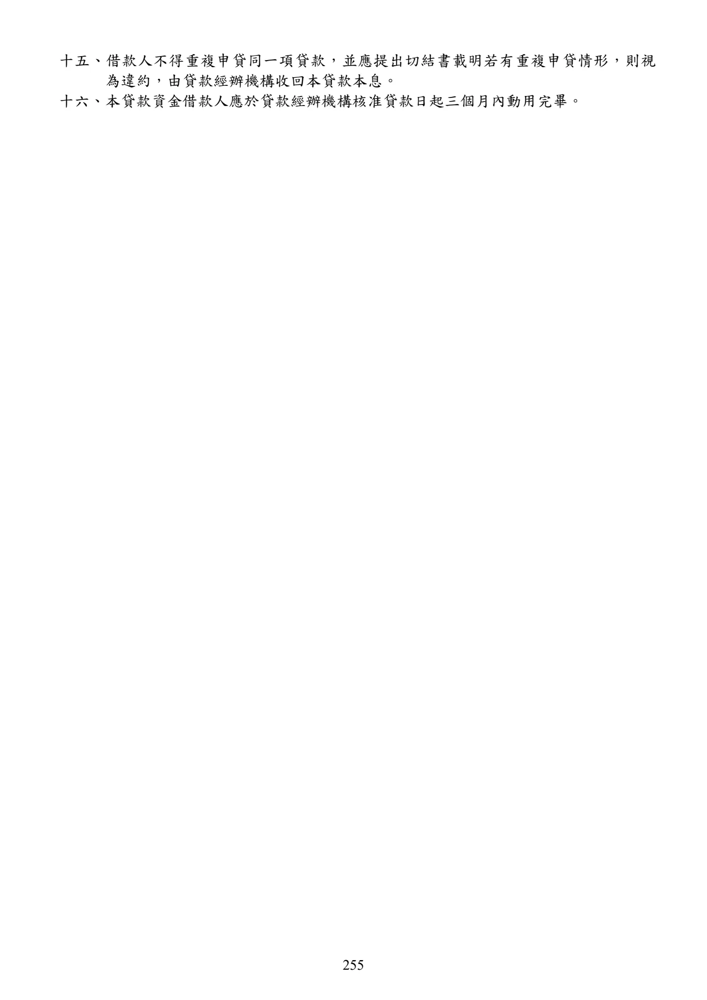
展開查看PDF原始文字層
十五、借款人不得重複申貸同一項貸款，並應提出切結書載明若有重複申貸情形，則視 為違約，由貸款經辦機構收回本貸款本息。 十六、本貸款資金借款人應於貸款經辦機構核准貸款日起三個月內動用完畢。
手冊頁：256 PDF頁：258／359
{kind=link}
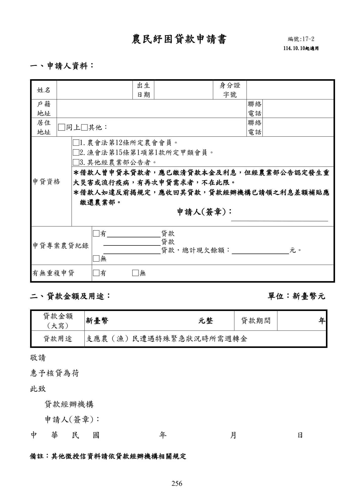
展開查看PDF原始文字層
114.10.10起適用
編號:17-2 農民紓困貸款申請書
一、申請人資料：
姓名 出生
日期
身分證
字號
戶籍
地址 聯絡
電話
居住
地址 □同上□其他： 聯絡
電話
申貸資格
□1.農會法第12條所定農會會員。
□2.漁會法第15條第1項第1款所定甲類會員。
□3.其他經農業部公告者。
＊借款人曾申貸本貸款者，應已繳清貸款本金及利息，但經農業部公告認定發生重
大災害或流行疫病，有再次申貸需求者，不在此限。
＊借款人如違反前揭規定，應收回其貸款，貸款經辦機構已請領之利息差額補貼應
繳還農業部。
申請人(簽章)：
申貸專案農貸紀錄
□有 貸款
貸款
貸款，總計現欠餘額： 元。
□無
有無重複申貸 □有 □無
二、貸款金額及用途： 單位：新臺幣元
貸款金額
(大寫) 新臺幣 元整 貸款期間 年
貸款用途 支應農（漁）民遭遇特殊緊急狀況時所需週轉金
敬請
惠予核貸為荷
此致
貸款經辦機構
申請人(簽章)：
中 華 民 國 年 月 日
備註：其他徵授信資料請依貸款經辦機構相關規定手冊頁：257 PDF頁：259／359
{kind=link}
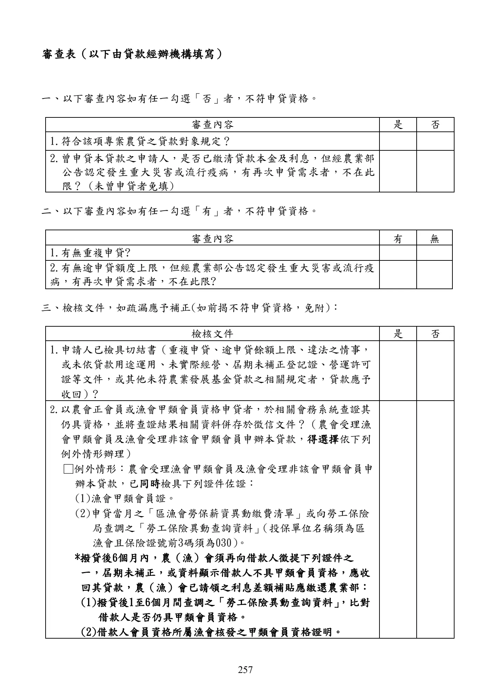
展開查看PDF原始文字層
審查表（以下由貸款經辦機構填寫） 一、以下審查內容如有任一勾選「否」者，不符申貸資格。 審查內容 是 否 1.符合該項專案農貸之貸款對象規定？ 2.曾申貸本貸款之申請人，是否已繳清貸款本金及利息，但經農業部 公告認定發生重大災害或流行疫病，有再次申貸需求者，不在此 限？ (未曾申貸者免填) 二、以下審查內容如有任一勾選「有」者，不符申貸資格。 審查內容 有 無 1.有無重複申貸? 2.有無逾申貸額度上限，但經農業部公告認定發生重大災害或流行疫 病，有再次申貸需求者，不在此限? 三、檢核文件，如疏漏應予補正(如前揭不符申貸資格，免附)： 檢核文件 是 否 1.申請人已檢具切結書（重複申貸、逾申貸餘額上限、違法之情事， 或未依貸款用途運用、未實際經營、屆期未補正登記證、營運許可 證等文件，或其他未符農業發展基金貸款之相關規定者，貸款應予 收回）? 2.以農會正會員或漁會甲類會員資格申貸者，於相關會務系統查證其 仍具資格，並將查證結果相關資料併存於徵信文件？（農會受理漁 會甲類會員及漁會受理非該會甲類會員申辦本貸款，得選擇依下列 例外情形辦理） □例外情形：農會受理漁會甲類會員及漁會受理非該會甲類會員申 辦本貸款，已同時檢具下列證件佐證： (1)漁會甲類會員證。 (2)申貸當月之「區漁會勞保薪資異動繳費清單」或向勞工保險 局查調之「勞工保險異動查詢資料」 （投保單位名稱須為區 漁會且保險證號前3碼須為030）。 *撥貸後6個月內，農（漁）會須再向借款人徵提下列證件之 一，屆期未補正，或資料顯示借款人不具甲類會員資格，應收 回其貸款，農（漁）會已請領之利息差額補貼應繳還農業部： (1)撥貸後1至6個月間查調之「勞工保險異動查詢資料」 ，比對 借款人是否仍具甲類會員資格。 (2)借款人會員資格所屬漁會核發之甲類會員資格證明。
手冊頁：258 PDF頁：260／359
經辦人員 覆核 主任、襄(副)理 總幹事、經理
註：以上簽章人員請註明日期。
審查結果: □符合，審查合格者不代表准予核貸，尚須依徵授信程序審查。 □不符，說明:
查看PDF原始文字層
經辦人員 覆核 主任、襄(副)理 總幹事、經理 註：以上簽章人員請註明日期。 審查結果: □符合，審查合格者不代表准予核貸，尚須依徵授信程序審查。 □不符，說明:
手冊頁：259 PDF頁：261／359
擴大家庭農場經營規模協助農民購買耕地貸款辦法 中華民國 71 年 12 月 14 日經濟部經農字第 46692 號令訂定發布 中華民國 74 年 3 月 25 日行政院農業委員會農輔字第 28086 號令修正發布名稱及內容 中華民國 75 年 10 月 1 日行政院農業委員會農輔字第 13690 號令修正發布第 6 條條文 中華民國 77 年 3 月 14 日行政院農業委員會農輔字第 7060019A 號令修正發布第 4 條及 第 6 條條文 中華民國 78 年 9 月 27 日行政院農業委員會農輔字第 8060281A 號令修正發布第 4 條條 文 中華民國 81 年 2 月 27 日行政院農業委員會農輔字第 1060058A 號令修正發布 中華民國 89 年 12 月 30 日行政院農業委員會農輔字第 890128316 號令修正發布 中華民國 92 年 9 月 15 日行政院農業委員會農輔字第 0920051018 號令修正發布 中華民國 93 年 6 月 30 日行政院農業委員會農授金字第 0935080062 號令修正發布 中華民國 95 年 1 月 2 日行政院農業委員會農金字第 0945080624 號令修正發布 中華民國 95 年 12 月 15 日行政院農業委員會農金字第 0955080451 號令修正發布 中華民國 96 年 7 月 11 日行政院農業委員會農金字第 0965080234 號令修正發布 中華民國 99 年 9 月 29 日行政院農業委員會農金字第 0995080445 號令修正發布 中華民國 99 年 11 月 18 日行政院農業委員會農金字第 0995080518 號令修正發布 中華民國 102 年 4 月 24 日行政院農業委員會農金字第 1025080157 號令修正發布 中華民國 102 年 12 月 13 日行政院農業委員會農金字第 1025080605 號令修正發布 中華民國 105 年 3 月 18 日行政院農業委員會農金字第 1055084019A 號令修正發布 中華民國 105 年 5 月 23 日行政院農業委員會農金字第 1055084208A 號令修正發布 中華民國 106 年 6 月 5 日行政院農業委員會農金字第 1065084049A 號令修正發布 中華民國 108 年 11 月 22 日行政院農業委員會農金字第 1085084749A 號令修正發布 第一條 為輔導家庭農場擴大經營規模，促進農地合理利用，依農業發展條例第四十三條規定 訂定本辦法。 第二條 本辦法之主管機關：在中央為行政院農業委員會；在直轄市為直轄市政府；在縣(市)為 縣(市)政府。 第三條 本貸款經辦機構如下： 一、設有信用部之農(漁)會。 二、依法承受農(漁)會信用部之銀行當地分行。 三、全國農業金庫。 第四條 本貸款由經辦機構提供資金並承擔貸款風險。 第五條
查看PDF原始文字層
擴大家庭農場經營規模協助農民購買耕地貸款辦法 中華民國 71 年 12 月 14 日經濟部經農字第 46692 號令訂定發布 中華民國 74 年 3 月 25 日行政院農業委員會農輔字第 28086 號令修正發布名稱及內容 中華民國 75 年 10 月 1 日行政院農業委員會農輔字第 13690 號令修正發布第 6 條條文 中華民國 77 年 3 月 14 日行政院農業委員會農輔字第 7060019A 號令修正發布第 4 條及 第 6 條條文 中華民國 78 年 9 月 27 日行政院農業委員會農輔字第 8060281A 號令修正發布第 4 條條 文 中華民國 81 年 2 月 27 日行政院農業委員會農輔字第 1060058A 號令修正發布 中華民國 89 年 12 月 30 日行政院農業委員會農輔字第 890128316 號令修正發布 中華民國 92 年 9 月 15 日行政院農業委員會農輔字第 0920051018 號令修正發布 中華民國 93 年 6 月 30 日行政院農業委員會農授金字第 0935080062 號令修正發布 中華民國 95 年 1 月 2 日行政院農業委員會農金字第 0945080624 號令修正發布 中華民國 95 年 12 月 15 日行政院農業委員會農金字第 0955080451 號令修正發布 中華民國 96 年 7 月 11 日行政院農業委員會農金字第 0965080234 號令修正發布 中華民國 99 年 9 月 29 日行政院農業委員會農金字第 0995080445 號令修正發布 中華民國 99 年 11 月 18 日行政院農業委員會農金字第 0995080518 號令修正發布 中華民國 102 年 4 月 24 日行政院農業委員會農金字第 1025080157 號令修正發布 中華民國 102 年 12 月 13 日行政院農業委員會農金字第 1025080605 號令修正發布 中華民國 105 年 3 月 18 日行政院農業委員會農金字第 1055084019A 號令修正發布 中華民國 105 年 5 月 23 日行政院農業委員會農金字第 1055084208A 號令修正發布 中華民國 106 年 6 月 5 日行政院農業委員會農金字第 1065084049A 號令修正發布 中華民國 108 年 11 月 22 日行政院農業委員會農金字第 1085084749A 號令修正發布 第一條 為輔導家庭農場擴大經營規模，促進農地合理利用，依農業發展條例第四十三條規定 訂定本辦法。 第二條 本辦法之主管機關：在中央為行政院農業委員會；在直轄市為直轄市政府；在縣(市)為 縣(市)政府。 第三條 本貸款經辦機構如下： 一、設有信用部之農(漁)會。 二、依法承受農(漁)會信用部之銀行當地分行。 三、全國農業金庫。 第四條 本貸款由經辦機構提供資金並承擔貸款風險。 第五條
手冊頁：260 PDF頁：262／359
經辦機構辦理本貸款所提供之資金，由農業發展基金依該基金貸款作業規範有關規定 補貼利息差額。 第六條 本貸款資金之用途如下： 一、 購置或交換耕地所需資金。 二、 繼承人因繼承農業用地，需現金補償其他繼承人所需之資金。 前項購置、交換耕地或繼承農業用地，其從事農業經營項目有辦理政策性農業專案貸 款辦法第二十一條所定各款情形之一者，不予核貸。 第七條 本貸款之對象如下： 一、 年齡在十八歲以上六十五歲以下，購置或交換耕地以實際從事農業經營之家庭農 場農民，並符合下列各目條件者： (一) 借款人購置或交換耕地後，其家庭農場經營耕地總面積應達一公頃以上。但 購置或交換與其原家庭農場經營耕地相毗鄰之耕地或離農轉業農戶之全部 耕地者，不在此限。 (二) 購置或交換之耕地座落須與其原家庭農場經營耕地位於同一或毗鄰地段。但 離島地區得不受同一或毗鄰地段之限制。 (三) 家庭農場經營耕地在申請貸款前三年內有出售、贈與或委託經營者，就其購 置之耕地面積超過出售、贈與或委託經營之耕地面積部分核貸之。 二、 家庭農場經營農業用地，因繼承經協議由一人繼承以從事農業經營，而需以現金 補償其他繼承人。 三、 農業學校畢業，年齡在十八歲以上四十五歲以下，購置耕地面積零點五公頃以上， 直接從事農業生產者。但購置離農轉業農戶之全部耕地者，不受此限。 四、 農地重劃區內之現耕農民，購置下列耕地以從事農業經營者： (一) 標購抵付工程費之抵費地與零星集中耕地。 (二) 購置毗鄰之耕地。 五、 三七五租約耕地之佃農購置地主讓售之耕地以從事農業經營。 六、 經中央主管機關專案核准之農業訓練累積達四十小時以上，購置耕地面積零點五 公頃以上，直接從事農業生產者。 七、 購買台灣農林股份有限公司所有三七五租約耕地以從事農業經營者。 前項第一款實際從事農業經營之家庭農場農民，有傑出表現，經縣（市）級以上政府機 關表揚之專業農民，不受年齡之限制。 第一項第一款及第二款之借款人無務農經驗者，於貸款前應取得由政府機關、學術機 構或農、漁會出具最近五年辦理有關農藥安全及生態保護之基本農業訓練累積十小時 以上之證明。 第八條 本辦法所稱耕地，指符合農業發展條例第三條第十一款規定之耕地定義者。 本辦法所稱農業用地，指符合農業發展條例第三條第十款規定之農業用地定義者。 第九條
查看PDF原始文字層
經辦機構辦理本貸款所提供之資金，由農業發展基金依該基金貸款作業規範有關規定 補貼利息差額。 第六條 本貸款資金之用途如下： 一、 購置或交換耕地所需資金。 二、 繼承人因繼承農業用地，需現金補償其他繼承人所需之資金。 前項購置、交換耕地或繼承農業用地，其從事農業經營項目有辦理政策性農業專案貸 款辦法第二十一條所定各款情形之一者，不予核貸。 第七條 本貸款之對象如下： 一、 年齡在十八歲以上六十五歲以下，購置或交換耕地以實際從事農業經營之家庭農 場農民，並符合下列各目條件者： (一) 借款人購置或交換耕地後，其家庭農場經營耕地總面積應達一公頃以上。但 購置或交換與其原家庭農場經營耕地相毗鄰之耕地或離農轉業農戶之全部 耕地者，不在此限。 (二) 購置或交換之耕地座落須與其原家庭農場經營耕地位於同一或毗鄰地段。但 離島地區得不受同一或毗鄰地段之限制。 (三) 家庭農場經營耕地在申請貸款前三年內有出售、贈與或委託經營者，就其購 置之耕地面積超過出售、贈與或委託經營之耕地面積部分核貸之。 二、 家庭農場經營農業用地，因繼承經協議由一人繼承以從事農業經營，而需以現金 補償其他繼承人。 三、 農業學校畢業，年齡在十八歲以上四十五歲以下，購置耕地面積零點五公頃以上， 直接從事農業生產者。但購置離農轉業農戶之全部耕地者，不受此限。 四、 農地重劃區內之現耕農民，購置下列耕地以從事農業經營者： (一) 標購抵付工程費之抵費地與零星集中耕地。 (二) 購置毗鄰之耕地。 五、 三七五租約耕地之佃農購置地主讓售之耕地以從事農業經營。 六、 經中央主管機關專案核准之農業訓練累積達四十小時以上，購置耕地面積零點五 公頃以上，直接從事農業生產者。 七、 購買台灣農林股份有限公司所有三七五租約耕地以從事農業經營者。 前項第一款實際從事農業經營之家庭農場農民，有傑出表現，經縣（市）級以上政府機 關表揚之專業農民，不受年齡之限制。 第一項第一款及第二款之借款人無務農經驗者，於貸款前應取得由政府機關、學術機 構或農、漁會出具最近五年辦理有關農藥安全及生態保護之基本農業訓練累積十小時 以上之證明。 第八條 本辦法所稱耕地，指符合農業發展條例第三條第十一款規定之耕地定義者。 本辦法所稱農業用地，指符合農業發展條例第三條第十款規定之農業用地定義者。 第九條
手冊頁：261 PDF頁：263／359

展開查看PDF原始文字層
第七條第一項家庭農場經營耕地面積，其計算以借款人本人、配偶、共同生活戶內之父 母、祖父母、配偶之父母及子女所有之耕地、三七五承租耕地及未繳清價款之放領地為 限。 第十條 本貸款之申請應於辦竣土地移轉或繼承登記日前或其後六十日內為之。但於土地移轉 或繼承登記日後六十日內申請者，提出申請時本貸款額度已用罄，借款人應另循其他 方式籌措所需資金。 於中華民國九十六年一月一日前，已辦竣土地移轉或繼承登記，並於登記日起六個月 內提出貸款申請者，不受前項限制。 第十條之一 本貸款資金借款人應於貸款經辦機構核准貸款日起三個月內動用完畢。 第十一條 本貸款利率依辦理政策性農業專案貸款辦法相關規定辦理。 第十二條 本貸款之貸款期限最長為二十年。 第十三條 本貸款本金以每半年一期平均攤還為原則，利息隨同繳付本金得酌訂寬緩期限，但 最 長不得超過三年。 前項本息攤還方式得由借貸雙方以契約另訂之。但不得超過中央主管機關所訂定之最 長期限。 第十四條 本貸款之貸款額度如下： 一、 每一借款人最高貸款額度為新臺幣八百萬元，其額度按該耕地或農業用地當期公 告現值計算之，並以不超過實際買賣價額或繼承之現金補償金額為限。 二、 借款人購置或交換耕地後，其家庭農場耕地總面積超過五公頃部分不予貸款。 第十五條 本貸款擔保方式由貸款經辦機構依其授信有關規定，審酌個別授信案件核定。借款人 擔保能力不足者，由貸款經辦機構協助送請農業信用保證機構保證。 第十六條 借款人申借本貸款時，應填寫貸款申請書及農業經營計畫書，載明其所有耕地或農業 用地之座落、面積及供作農業使用之項目，並依其申請資格條件檢具相關文件或資料， 向貸款經辦機構申請： 一、購置耕地： (一) 借款人戶籍謄本、電子戶籍謄本或戶口名簿影本。 (二)買賣契約書或其他足資證明其買賣事實及對價之文件。 (三)全戶原有耕地土地清冊、地籍圖及土地登記謄本。 (四)購置耕地之地籍圖、土地登記謄本及地價證明資料。
手冊頁：262 PDF頁：264／359
(五) 購置離農轉業之全部耕地者，另須檢附賣方財產歸戶資料或其他足資證明離 農轉業農戶釋出全部耕地文件。 二、交換耕地： (一) 借款人戶籍謄本、電子戶籍謄本或戶口名簿影本。 (二) 契約書或其他足資證明其交換事實及對價之文件。 (三) 交換雙方耕地之地籍圖、土地登記謄本及地價證明資料。 (四) 交換離農轉業之全部耕地者，另須檢附賣方財產歸戶資料或其他足資證明離 農轉業農戶釋出全部耕地文件。 三、繼承農業用地： (一) 借款人戶籍謄本、電子戶籍謄本或戶口名簿影本及繼承人系統表。 (二) 現金補償有關協議證明文件。 (三) 繼承農業用地之地籍圖、土地登記謄本及地價證明資料。 前項農業經營計畫書格式由中央主管機關另定之。 第十七條 借款人於貸款本息未清償前，不得將其耕地或農業用地及因本貸款取得之耕地或農業 用地出售、出租、贈與、變更作耕地容許使用項目以外之使用或於貸款三個月後仍閒置 不用。 借款人應於貸款後三個月內依農業經營計畫書所列經營項目從事農業經營，並接受主 管機關及經辦機構之輔導，若有變更經營項目，應重提農業經營計畫書送貸款經辦機 構核准。 貸款經辦機構對借款人違反第一項及前項規定者，應即終止其借貸契約，一次收回貸 款應償本息，並自違約日起加收違約金。 貸款經辦機構應於貸款存續期間辦理貸款用途查核工作。 第十七條之一 中國農民銀行、合作金庫銀行、台灣土地銀行於本辦法修正實施前所承作之貸款案件， 依既有條件辦理至原契約到期為止。 第十八條 本辦法自發布日施行。但中華民國九十五年十二月十五日修正發布之條文，自九十六 年一月一日施行；一百零五年三月十八日修正發布之條文，自一百零五年三月二十二 日施行；一百零五年五月二十三日修正發布之條文，自一百零五年五月二十三日施行。
查看PDF原始文字層
(五) 購置離農轉業之全部耕地者，另須檢附賣方財產歸戶資料或其他足資證明離 農轉業農戶釋出全部耕地文件。 二、交換耕地： (一) 借款人戶籍謄本、電子戶籍謄本或戶口名簿影本。 (二) 契約書或其他足資證明其交換事實及對價之文件。 (三) 交換雙方耕地之地籍圖、土地登記謄本及地價證明資料。 (四) 交換離農轉業之全部耕地者，另須檢附賣方財產歸戶資料或其他足資證明離 農轉業農戶釋出全部耕地文件。 三、繼承農業用地： (一) 借款人戶籍謄本、電子戶籍謄本或戶口名簿影本及繼承人系統表。 (二) 現金補償有關協議證明文件。 (三) 繼承農業用地之地籍圖、土地登記謄本及地價證明資料。 前項農業經營計畫書格式由中央主管機關另定之。 第十七條 借款人於貸款本息未清償前，不得將其耕地或農業用地及因本貸款取得之耕地或農業 用地出售、出租、贈與、變更作耕地容許使用項目以外之使用或於貸款三個月後仍閒置 不用。 借款人應於貸款後三個月內依農業經營計畫書所列經營項目從事農業經營，並接受主 管機關及經辦機構之輔導，若有變更經營項目，應重提農業經營計畫書送貸款經辦機 構核准。 貸款經辦機構對借款人違反第一項及前項規定者，應即終止其借貸契約，一次收回貸 款應償本息，並自違約日起加收違約金。 貸款經辦機構應於貸款存續期間辦理貸款用途查核工作。 第十七條之一 中國農民銀行、合作金庫銀行、台灣土地銀行於本辦法修正實施前所承作之貸款案件， 依既有條件辦理至原契約到期為止。 第十八條 本辦法自發布日施行。但中華民國九十五年十二月十五日修正發布之條文，自九十六 年一月一日施行；一百零五年三月十八日修正發布之條文，自一百零五年三月二十二 日施行；一百零五年五月二十三日修正發布之條文，自一百零五年五月二十三日施行。
手冊頁：263 PDF頁：265／359
{kind=link}
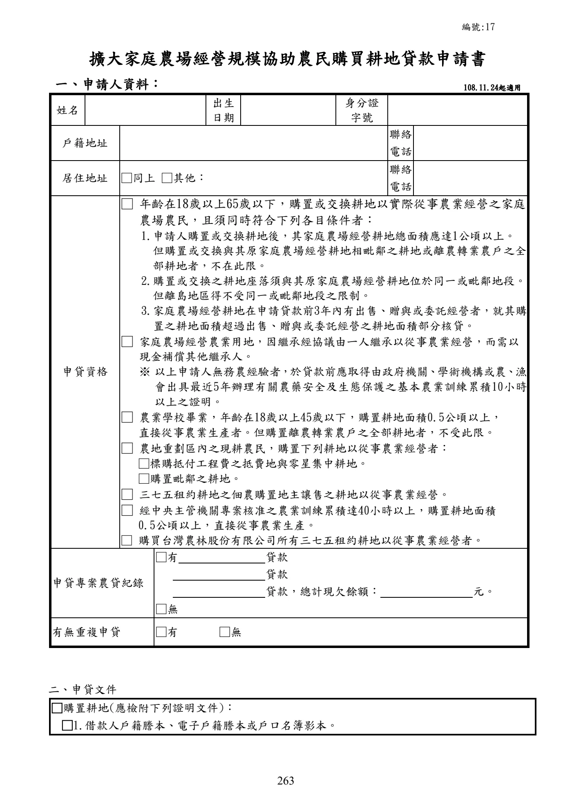
展開查看PDF原始文字層
編號:17
108.11.24起適用
擴大家庭農場經營規模協助農民購買耕地貸款申請書
一、申請人資料：
姓名 出生
日期
身分證
字號
戶籍地址 聯絡
電話
居住地址 □同上 □其他： 聯絡
電話
申貸資格
□ 年齡在18歲以上65歲以下，購置或交換耕地以實際從事農業經營之家庭
農場農民，且須同時符合下列各目條件者：
1.申請人購置或交換耕地後，其家庭農場經營耕地總面積應達1公頃以上。
但購置或交換與其原家庭農場經營耕地相毗鄰之耕地或離農轉業農戶之全
部耕地者，不在此限。
2.購置或交換之耕地座落須與其原家庭農場經營耕地位於同一或毗鄰地段。
但離島地區得不受同一或毗鄰地段之限制。
3.家庭農場經營耕地在申請貸款前3年內有出售、贈與或委託經營者，就其購
置之耕地面積超過出售、贈與或委託經營之耕地面積部分核貸。
□ 家庭農場經營農業用地，因繼承經協議由ㄧ人繼承以從事農業經營，而需以
現金補償其他繼承人。
※ 以上申請人無務農經驗者，於貸款前應取得由政府機關、學術機構或農、漁
會出具最近5年辦理有關農藥安全及生態保護之基本農業訓練累積 10小時
以上之證明。
□ 農業學校畢業，年齡在18歲以上45歲以下，購置耕地面積0.5公頃以上，
直接從事農業生產者。但購置離農轉業農戶之全部耕地者，不受此限。
□ 農地重劃區內之現耕農民，購置下列耕地以從事農業經營者：
□標購抵付工程費之抵費地與零星集中耕地。
□購置毗鄰之耕地。
□ 三七五租約耕地之佃農購置地主讓售之耕地以從事農業經營。
□ 經中央主管機關專案核准之農業訓練累積達40小時以上，購置耕地面積
0.5公頃以上，直接從事農業生產。
□ 購買台灣農林股份有限公司所有三七五租約耕地以從事農業經營者。
申貸專案農貸紀錄
□有 貸款
貸款
貸款，總計現欠餘額： 元。
□無
有無重複申貸 □有 □無
二、申貸文件
□購置耕地(應檢附下列證明文件)：
□1.借款人戶籍謄本、電子戶籍謄本或戶口名簿影本。手冊頁：264 PDF頁：266／359
□2.買賣契約書或其他足資證明其買賣事實及對價之文件。 □3.全戶原有耕地土地清冊、地籍圖及土地登記謄本。 □4.購置耕地之地籍圖、土地登記謄本及地價證明資料。 □5.購置離農轉業之全部耕地者，另須檢附賣方財產歸戶資料或其他足資證明離農轉業農戶 釋 出全部耕地文件。 □交換耕地(應檢附下列證明文件)： □1.借款人戶籍謄本、電子戶籍謄本或戶口名簿影本。 □2.契約書或其他足資證明其交換事實及對價之文件。 □3.交換雙方耕地之地籍圖、土地登記謄本及地價證明資料。 □4.交換離農轉業之全部耕地者，另須檢附賣方財產歸戶資料或其他足資證明離農轉業農戶 釋 出全部耕地文件。 □繼承農業用地(應檢附下列證明文件)： □1.借款人戶籍謄本、電子戶籍謄本或戶口名簿影本及繼承人系統表。 □2.現金補償有關協議證明文件。 □3.繼承農業用地之地籍圖、土地登記謄本及地價證明資料。 三、貸款金額及用途 單位：新臺幣元 貸款金額 (大寫) 新臺幣 元整 貸款期間 年 貸款用途 □購置耕地 □交換耕地 □ 繼承農業用地 四、購置(交換)耕地或繼承農地資料： 原家庭農場耕地座落 （無則免填） 面積 (平方公尺) 使用 分區 使用地 類別 所有權人 是否合法經營 購置(交換)耕地或繼承農地座落 面積 (平方公尺) 使用 分區 使用地 類別 所有權人 是否合法經營
查看PDF原始文字層
□2.買賣契約書或其他足資證明其買賣事實及對價之文件。 □3.全戶原有耕地土地清冊、地籍圖及土地登記謄本。 □4.購置耕地之地籍圖、土地登記謄本及地價證明資料。 □5.購置離農轉業之全部耕地者，另須檢附賣方財產歸戶資料或其他足資證明離農轉業農戶 釋 出全部耕地文件。 □交換耕地(應檢附下列證明文件)： □1.借款人戶籍謄本、電子戶籍謄本或戶口名簿影本。 □2.契約書或其他足資證明其交換事實及對價之文件。 □3.交換雙方耕地之地籍圖、土地登記謄本及地價證明資料。 □4.交換離農轉業之全部耕地者，另須檢附賣方財產歸戶資料或其他足資證明離農轉業農戶 釋 出全部耕地文件。 □繼承農業用地(應檢附下列證明文件)： □1.借款人戶籍謄本、電子戶籍謄本或戶口名簿影本及繼承人系統表。 □2.現金補償有關協議證明文件。 □3.繼承農業用地之地籍圖、土地登記謄本及地價證明資料。 三、貸款金額及用途 單位：新臺幣元 貸款金額 (大寫) 新臺幣 元整 貸款期間 年 貸款用途 □購置耕地 □交換耕地 □ 繼承農業用地 四、購置(交換)耕地或繼承農地資料： 原家庭農場耕地座落 （無則免填） 面積 (平方公尺) 使用 分區 使用地 類別 所有權人 是否合法經營 購置(交換)耕地或繼承農地座落 面積 (平方公尺) 使用 分區 使用地 類別 所有權人 是否合法經營
手冊頁：265 PDF頁：267／359
五、申請人最近三年間出售、贈與或委託經營耕地資料：
敬請 惠予核貸為荷 此致 貸款經辦機構
申請人(簽章)：
中 華 民 國 年 月 日
備註：其他徵授信資料請依貸款經辦機構相關規定辦理
查看PDF原始文字層
五、申請人最近三年間出售、贈與或委託經營耕地資料：
敬請
惠予核貸為荷
此致
貸款經辦機構
申請人(簽章)：
中 華 民 國 年 月 日
備註：其他徵授信資料請依貸款經辦機構相關規定辦理手冊頁：266 PDF頁：268／359
{kind=link}
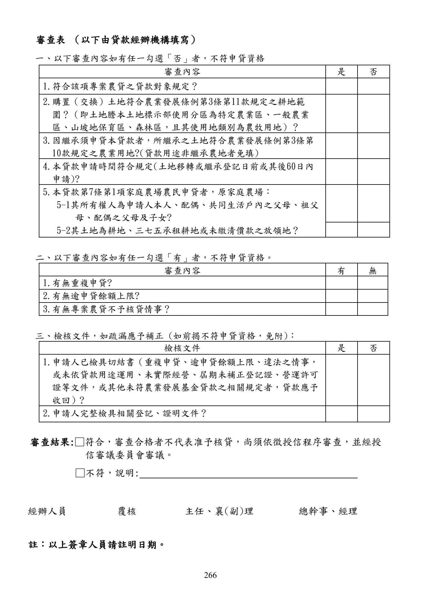
展開查看PDF原始文字層
經辦人員 覆核 主任、襄(副)理 總幹事、經理 註：以上簽章人員請註明日期。 審查表 （以下由貸款經辦機構填寫） 一、以下審查內容如有任一勾選「否」者，不符申貸資格 審查內容 是 否 1.符合該項專案農貸之貸款對象規定？ 2.購置（交換）土地符合農業發展條例第3條第11款規定之耕地範 圍？（即土地謄本土地標示部使用分區為特定農業區、一般農業 區、山坡地保育區、森林區，且其使用地類別為農牧用地）？ 3.因繼承須申貸本貸款者，所繼承之土地符合農業發展條例第3條第 10款規定之農業用地?(貸款用途非繼承農地者免填) 4.本貸款申請時間符合規定(土地移轉或繼承登記日前或其後60日內 申請)? 5.本貸款第7條第1項家庭農場農民申貸者，原家庭農場： 5-1其所有權人為申請人本人、配偶、共同生活戶內之父母、祖父 母、配偶之父母及子女? 5-2其土地為耕地、三七五承租耕地或未繳清價款之放領地？ 二、以下審查內容如有任一勾選「有」者，不符申貸資格。 審查內容 有 無 1.有無重複申貸? 2.有無逾申貸餘額上限? 3.有無專案農貸不予核貸情事？ 三、檢核文件，如疏漏應予補正 (如前揭不符申貸資格，免附)： 檢核文件 是 否 1.申請人已檢具切結書（重複申貸、逾申貸餘額上限、違法之情事， 或未依貸款用途運用、未實際經營、屆期未補正登記證、營運許可 證等文件，或其他未符農業發展基金貸款之相關規定者，貸款應予 收回）? 2.申請人完整檢具相關登記、證明文件？ 審查結果:□符合，審查合格者不代表准予核貸，尚須依徵授信程序審查，並經授 信審議委員會審議。 □不符，說明:
手冊頁：267 PDF頁：269／359
函令摘要：擴大家庭農場經營規模協助農民購買耕地貸款辦法第7條第1 項之毗鄰地規定疑義 【行政院農業委員會農業金融局94年9月30日農金三字第0945018167號函】 主旨：所詢有關擴大家庭農場經營規模協助農民購買耕地貸款辦法規定疑義案，復如說明， 請 查照。 說明： 一、復 台端94年9月26日申請函。 二、旨揭辦法第7條第1項之毗鄰地規定，係指現有耕地座落在地籍線上屬相鄰接，即中間 無其他地段相隔者，惟兩耕地間之連絡已被明顯地形、地勢、道路、河川及其他天然 或人工物所間隔，以致對整體家庭農場經營造成不便者，則不符合毗鄰地之規定。 函令摘要：釋示擴大家庭農場經營規模協助農民購買耕地貸款辦法第7條 第2款所稱現金補償 【行政院農業委員會農業金融局94年11月18日農金三字第0945019043號函】 主旨：貴府所詢擴大家庭農場經營規模協助農民購買耕地貸款辦法第7條第2款所稱現金補 償，係指耕地經協議由一人繼承，而需以現金用於補償其他繼承人之補償金額部分， 不包括被繼承人未償還既有貸款，請 查照。 說明：復 貴府94年10月24日府農輔字第0940506708號函。 函令摘要：擴大家庭農場經營規模協助農民購買耕地貸款有關購買毗鄰 地疑義 【行政院農業委員會農業金融局97年8月22日農金三字第0975013582號函】 主旨：貴會所詢擴大家庭農場經營規模協助農民購買耕地貸款有關購買毗鄰地適用法規疑 義案，復如說明，請 查照。 說明： 一、 依農業發展條例第3條第10款第2目之意旨，農路、灌溉及排水等農用土地係與農業經 營不可分離，有其存在必要性；且貴會所詢中隔農路及灌溉排水溝渠於實務上既無礙 整體家庭農場之經營，應無違本局94年9月30日農金字第0945018167號書函釋示。 二、 綜上，相鄰耕地間為農路或灌溉排水溝渠所間隔，但無礙整體家庭農場之經營者，得 適用現行擴大家庭農場經營規模協助農民購買耕地貸款第 7條第1項第1款第1目有關 毗鄰地規定。
查看PDF原始文字層
函令摘要：擴大家庭農場經營規模協助農民購買耕地貸款辦法第7條第1 項之毗鄰地規定疑義 【行政院農業委員會農業金融局94年9月30日農金三字第0945018167號函】 主旨：所詢有關擴大家庭農場經營規模協助農民購買耕地貸款辦法規定疑義案，復如說明， 請 查照。 說明： 一、復 台端94年9月26日申請函。 二、旨揭辦法第7條第1項之毗鄰地規定，係指現有耕地座落在地籍線上屬相鄰接，即中間 無其他地段相隔者，惟兩耕地間之連絡已被明顯地形、地勢、道路、河川及其他天然 或人工物所間隔，以致對整體家庭農場經營造成不便者，則不符合毗鄰地之規定。 函令摘要：釋示擴大家庭農場經營規模協助農民購買耕地貸款辦法第7條 第2款所稱現金補償 【行政院農業委員會農業金融局94年11月18日農金三字第0945019043號函】 主旨：貴府所詢擴大家庭農場經營規模協助農民購買耕地貸款辦法第7條第2款所稱現金補 償，係指耕地經協議由一人繼承，而需以現金用於補償其他繼承人之補償金額部分， 不包括被繼承人未償還既有貸款，請 查照。 說明：復 貴府94年10月24日府農輔字第0940506708號函。 函令摘要：擴大家庭農場經營規模協助農民購買耕地貸款有關購買毗鄰 地疑義 【行政院農業委員會農業金融局97年8月22日農金三字第0975013582號函】 主旨：貴會所詢擴大家庭農場經營規模協助農民購買耕地貸款有關購買毗鄰地適用法規疑 義案，復如說明，請 查照。 說明： 一、 依農業發展條例第3條第10款第2目之意旨，農路、灌溉及排水等農用土地係與農業經 營不可分離，有其存在必要性；且貴會所詢中隔農路及灌溉排水溝渠於實務上既無礙 整體家庭農場之經營，應無違本局94年9月30日農金字第0945018167號書函釋示。 二、 綜上，相鄰耕地間為農路或灌溉排水溝渠所間隔，但無礙整體家庭農場之經營者，得 適用現行擴大家庭農場經營規模協助農民購買耕地貸款第 7條第1項第1款第1目有關 毗鄰地規定。
手冊頁：268 PDF頁：270／359
函令摘要：擴大家庭農場經營規模協助農民購買耕地貸款之耕地是否含 括陸上合法漁塭（一般農業區養殖用地）釋義案 【行政院農業委員會95年5月30日農授金字第0955012713號函】 主旨：有關函詢「擴大家庭農場經營規模協助農民購買耕地貸款」之耕地是否含括陸上合 法漁塭（一般農業區養殖用地）乙案，復如說明，請 查照。 說明： 一、 依據本會農業金融局案陳○○95年5月15日未具文號函辦理。 二、 依擴大家庭農場經營規模協助農民購買耕地貸款辦法（以下稱本辦法）第8條規定， 符合本貸款條件之耕地，以依區域計畫法劃定為特定農業區、一般農業區、山坡地保 育區、森林區之農牧用地或山坡地保育區暫未編定使用地之田、旱地目供農業使用土 地為限，合先敘明。 三、 另查本辦法係依農業發展條例第43條規定授權而訂定，依同條例第3條第11款有關耕 地之定義係指依區域計畫法劃定為特定農業區、一般農業區、山坡地保育區及森林區 之農牧用地，亦與本辦法定義相符。準此，一般農業區養殖用地應非屬本貸款適用範 圍。 函令摘要：有關借款人以「擴大家庭農場經營規模協助農民購買耕地貸 款」購買之耕地遭政府部分徵收疑義 【行政院農業委員會101年9月11日農授金字第1015080443號函】 主旨：有關借款人以「擴大家庭農場經營規模協助農民購買耕地貸款」購買之耕地遭政府 部分徵收相關疑義，復如說明，請查照。 說明： 一、復貴府101年8月28日府農輔字第1010142950號函。 二、本貸款辦法第17條第1項規定：「借款人於貸款本息未清償前，不得將其耕地或農業 用地及因本貸款取得之耕地或農業用地出售、出租、贈與、變更作耕地容許使用項目 以外之使用或於貸款三個月後仍閒置不用。」同條第3項規定：「貸款經辦機構對借 款人違反第一項及前項規定者，應即終止其借貸契約，一次收回貸款應償本息，並自 違約日起加收違約金。」本案耕地遭政府徵收雖非屬前揭規定情形，惟以貸款資金所 購買之耕地遭部分徵收，原貸款支應借款人從事農業經營之部分耕地已不存在，而借 款人亦獲得徵收補償費，該部分貸款不應繼續享有利息差額補貼，故貸款經辦機構應 就目前貸款餘額按徵收面積比例收回貸款，並繳回該收回部分自徵收日起已領取之補 貼息。
查看PDF原始文字層
函令摘要：擴大家庭農場經營規模協助農民購買耕地貸款之耕地是否含 括陸上合法漁塭（一般農業區養殖用地）釋義案 【行政院農業委員會95年5月30日農授金字第0955012713號函】 主旨：有關函詢「擴大家庭農場經營規模協助農民購買耕地貸款」之耕地是否含括陸上合 法漁塭（一般農業區養殖用地）乙案，復如說明，請 查照。 說明： 一、 依據本會農業金融局案陳○○95年5月15日未具文號函辦理。 二、 依擴大家庭農場經營規模協助農民購買耕地貸款辦法（以下稱本辦法）第8條規定， 符合本貸款條件之耕地，以依區域計畫法劃定為特定農業區、一般農業區、山坡地保 育區、森林區之農牧用地或山坡地保育區暫未編定使用地之田、旱地目供農業使用土 地為限，合先敘明。 三、 另查本辦法係依農業發展條例第43條規定授權而訂定，依同條例第3條第11款有關耕 地之定義係指依區域計畫法劃定為特定農業區、一般農業區、山坡地保育區及森林區 之農牧用地，亦與本辦法定義相符。準此，一般農業區養殖用地應非屬本貸款適用範 圍。 函令摘要：有關借款人以「擴大家庭農場經營規模協助農民購買耕地貸 款」購買之耕地遭政府部分徵收疑義 【行政院農業委員會101年9月11日農授金字第1015080443號函】 主旨：有關借款人以「擴大家庭農場經營規模協助農民購買耕地貸款」購買之耕地遭政府 部分徵收相關疑義，復如說明，請查照。 說明： 一、復貴府101年8月28日府農輔字第1010142950號函。 二、本貸款辦法第17條第1項規定：「借款人於貸款本息未清償前，不得將其耕地或農業 用地及因本貸款取得之耕地或農業用地出售、出租、贈與、變更作耕地容許使用項目 以外之使用或於貸款三個月後仍閒置不用。」同條第3項規定：「貸款經辦機構對借 款人違反第一項及前項規定者，應即終止其借貸契約，一次收回貸款應償本息，並自 違約日起加收違約金。」本案耕地遭政府徵收雖非屬前揭規定情形，惟以貸款資金所 購買之耕地遭部分徵收，原貸款支應借款人從事農業經營之部分耕地已不存在，而借 款人亦獲得徵收補償費，該部分貸款不應繼續享有利息差額補貼，故貸款經辦機構應 就目前貸款餘額按徵收面積比例收回貸款，並繳回該收回部分自徵收日起已領取之補 貼息。
手冊頁：269 PDF頁：271／359
函令摘要：釋示「擴大家庭農場經營規模協助農民購買耕地貸款辦法」所 指「經中央主管機關專案核准之農業訓練」疑義 【行政院農業委員會農業金融局101年11月29日農金三字第1015080581號函】 主旨：所詢李君參與之農業研習是否屬「擴大家庭農場經營規模協助農民購買耕地貸款辦 法」第7條第1項第6款所指「經中央主管機關專案核准之農業訓練」案，復如說明， 請查照。 說明： 一、 復貴會101年11月1日斗南農會字第1010003150號函。 二、 旨揭「經中央主管機關專案核准之農業訓練」係指農業訓練符合以下各條件者： (一) 應以農民為訓練對象。 (二) 由行政院農業委員會或其所屬機關自行辦理或委託學術研究機關、農業產業團體 辦理之實體農業專業訓練。 (三) 訓練結訓時，由訓練單位發給學員紙本載明訓練類別、訓練班名稱、訓練時數等 資訊之紙本結業證書，可資認定者。 三、 借款人應以農業生產技術課程結訓為基本條件，其餘農業智財管理、技術包裝與移轉 、 財務融資、產品包裝設計、行銷、食品標示及衛生安全、產品製造及保存技術等相關 加值課程始可採計。 四、 李君相關研習請依前揭原則認定是否屬「經中央主管機關專案核准之農業訓練」。 函令摘要：釋示「擴大家庭農場經營規模協助農民購買耕地貸款」及「青 年從農創業貸款」規定疑義 【行政院農業委員會104年6月16日農授金字第1045084209號函】 主旨：所詢有關「擴大家庭農場經營規模協助農民購買耕地貸款(下稱購地貸款)」及「青 年從農創業貸款(下稱青創貸款)」之相關規定適用疑義案，復如說明二及三，請查 照。 說明： 一、 依據本會農業金融局案陳貴會 104 年 5月 7日莿農信字第 1040001691 號函辦理。 二、 按「農業發展條例」第 41 條規定，對於家庭農場擴大經營規模或便利農業經營，在 同一或毗鄰地段購置耕地者，協助辦理貸款，爰購地貸款辦法第 7 條第 1項第 6 款所 規定購置耕地，如係購置2筆耕地，應座落於同一或毗鄰地段，以符合「農業發展條 例」避免耕地分散、便利農業經營之立法意旨。 三、 如貸款資金已有補助款支應部分，即無貸款需求；考量實務上審核補助時程較長，且 未能確知是否獲得補助，為免影響青年農民資金運用，得依該設施(備)實際金額核貸 青創貸款，俟補助款核撥後，應請借款人以補助款償還貸款，惟該部分貸款自補助款 核撥日起不予利息差額補貼。
查看PDF原始文字層
函令摘要：釋示「擴大家庭農場經營規模協助農民購買耕地貸款辦法」所 指「經中央主管機關專案核准之農業訓練」疑義 【行政院農業委員會農業金融局101年11月29日農金三字第1015080581號函】 主旨：所詢李君參與之農業研習是否屬「擴大家庭農場經營規模協助農民購買耕地貸款辦 法」第7條第1項第6款所指「經中央主管機關專案核准之農業訓練」案，復如說明， 請查照。 說明： 一、 復貴會101年11月1日斗南農會字第1010003150號函。 二、 旨揭「經中央主管機關專案核准之農業訓練」係指農業訓練符合以下各條件者： (一) 應以農民為訓練對象。 (二) 由行政院農業委員會或其所屬機關自行辦理或委託學術研究機關、農業產業團體 辦理之實體農業專業訓練。 (三) 訓練結訓時，由訓練單位發給學員紙本載明訓練類別、訓練班名稱、訓練時數等 資訊之紙本結業證書，可資認定者。 三、 借款人應以農業生產技術課程結訓為基本條件，其餘農業智財管理、技術包裝與移轉 、 財務融資、產品包裝設計、行銷、食品標示及衛生安全、產品製造及保存技術等相關 加值課程始可採計。 四、 李君相關研習請依前揭原則認定是否屬「經中央主管機關專案核准之農業訓練」。 函令摘要：釋示「擴大家庭農場經營規模協助農民購買耕地貸款」及「青 年從農創業貸款」規定疑義 【行政院農業委員會104年6月16日農授金字第1045084209號函】 主旨：所詢有關「擴大家庭農場經營規模協助農民購買耕地貸款(下稱購地貸款)」及「青 年從農創業貸款(下稱青創貸款)」之相關規定適用疑義案，復如說明二及三，請查 照。 說明： 一、 依據本會農業金融局案陳貴會 104 年 5月 7日莿農信字第 1040001691 號函辦理。 二、 按「農業發展條例」第 41 條規定，對於家庭農場擴大經營規模或便利農業經營，在 同一或毗鄰地段購置耕地者，協助辦理貸款，爰購地貸款辦法第 7 條第 1項第 6 款所 規定購置耕地，如係購置2筆耕地，應座落於同一或毗鄰地段，以符合「農業發展條 例」避免耕地分散、便利農業經營之立法意旨。 三、 如貸款資金已有補助款支應部分，即無貸款需求；考量實務上審核補助時程較長，且 未能確知是否獲得補助，為免影響青年農民資金運用，得依該設施(備)實際金額核貸 青創貸款，俟補助款核撥後，應請借款人以補助款償還貸款，惟該部分貸款自補助款 核撥日起不予利息差額補貼。